암 면역치료 방법과 프로토콜
Cancer Immunotherapy Methods and Protocols
제1장 FACS를 이용한 종양 미세환경에서 생존 면역 세포의 분리
Aikaterini Kafka, Christos Ermogenous, Luigi Ombrato, Aikaterini Kafka et al.
3.4.1 기자사(Giemsa) 염색
- 여과지 카드가 있는 TPX 챔버에 호중구 50,000개를 넣고, Cytospin 3 원심분리기로 접착 슬라이드 위에 800 rpm으로 3분간 원심분리하여 부착시킨다.
- 슬라이드를 메탄올에서 5–7분간 고정한다.
- 슬라이드를 화학 후드에 15분간 두어 자연 건조시킨다.
- 기자사 염색액(1:20 희석)으로 45분간 염색한다.
- 탈이온수로 세척한다.
- 자연 건조한 뒤 스캐너(예: NanoZoomer S60 슬라이드 스캐너)로 슬라이드를 촬영한다.
3.4.2 활성산소종(ROS) 생성 분석
- 호중구를 회수하고 혈구계산판으로 세포 수를 센다.
- HBSS에 넣은 세포를 96웰 플레이트에 분주한다(발광 측정에는 백색 플레이트를 권장한다). 37 °C에서 30분간 안정시킨다.
- 루미놀/HRP 혼합액 100 μl를 넣고 100 g으로 30초간 원심분리한다.
- PMA(100 nM)를 넣어 호중구를 자극한 직후부터 플레이트 리더로 30분 동안 일정한 간격을 두고 발광을 측정한다.
3.4.3 식세포 작용(Phagocytosis) 분석
- 호중구 현탁액 100 μl(1 × 10⁴–10⁵ 세포)를 96웰 플레이트나 FACS 튜브에 분주한다.
- 라텍스 비드–토끼 IgG-FITC 복합체 용액을 최종 농도 1:250이 되도록 넣는다(4.4.9절 참고).
- 시료를 37 °C에서 1.5시간 배양한다(식세포 활성은 면역세포 종류에 따라 다를 수 있으므로 배양 시간은 세포 유형마다 최적화가 필요하다).
- 실온에서 300 g으로 5분간 원심분리한 뒤 FACS 완충액 400 μL에 재현탁한다. 추가로 세포표면 염색(예: Ly6G)이 필요하면 이 단계에서 항체를 넣고 15–30분간 배양한다(비드 결합에 영향을 주지 않도록 표면 마커를 넣을 때는 세포를 얼음 위에 둔다).
- 생존/사멸 염색을 위해 DAPI를 넣고 곧바로 유세포 분석기(예: BD LSRFortessa™ Cell Analyzer)로 시료를 분석하여 FITC+ 생존 호중구, 즉 FITC 비드를 삼킨 세포를 게이팅한다.
4 주의사항
4.1 생체 내 마우스 모델을 이용한 폐 전이 정착
- 꼬리정맥 주입 전에 4T1 세포 현탁액을 반드시 여과해야 한다. 세포 덩어리가 혈관을 막아 마우스가 즉사할 수 있기 때문이다. 대부분의 상피세포 계열과 마찬가지로 4T1 세포는 뭉치기 쉽다. 따라서 마우스에 주입하기 직전에 세포 현탁액을 한 번 더 여과할 것을 권장한다.
- 이 프로토콜에서는 정맥 주입 7일째에 마우스를 안락사시키고 폐를 적출한다. 이 시점에서 폐에 미세전이(micrometastases)가 있는 것으로 본다. 다른 전이 단계를 연구하려면 다른 시점을 사용해야 한다. 전이 정착 단계의 종양 미세환경(TME)을 확인하려면 주입 3일째, 거시적 전이를 보려면 10일째에 폐를 적출하면 좋다. 정맥 주입 후 폐에서의 전이 정착과 성장 속도는 암세포 계열에 따라 달라지므로, 적출 시점은 조정이 필요할 수 있다.
4.2 단일세포 현탁액을 얻기 위한 마우스 폐 조직 처리
- 소화 용액과 1X 적혈구 용혈 완충액은 사용할 때마다 새로 준비해야 한다.
- 1X 적혈구 용혈 완충액 처리 시간은 5분을 넘기지 않는다. 이 완충액에는 염화암모늄이 들어 있어 적혈구를 용해하지만, 5분 이상 담아두면 림프구 같은 다른 세포의 생존율에도 영향을 줄 수 있다.
4.3 TME에서 호중구를 확인·분리하기 위한 염색 과정
- Miltenyi Biotec의 REAfinity 항체를 사용한다면 FCRγ 차단 단계는 필요 없다. REAfinity 항체와 non-REAfinity 항체를 같은 조합으로 섞어 쓸 때만 차단 용액으로 이 단계를 진행할 것을 권장한다.
- 호중구는 매우 물러 정렬 과정에서 손상되기 쉽다. 높은 압력으로 회수 튜브에 들어가면서 세포가 죽거나 손실되기 때문이다. 따라서 세포가 회수 튜브에 들어가는 압력과 속도를 낮추려면 FACS에 100-μm 노즐을 쓰는 것이 좋다.
4.4 분리된 호중구의 (ex vivo) 후속 응용
- 호중구는 in vitro에서 수명이 짧아 24시간을 넘기지 못하는 것으로 알려져 있다. 가능하면 모든 기능성 ex vivo 분석은 처음 24시간 안에 끝내는 것이 좋다.
- 유세포 분석과 하룻밤 배양이 필요한 호중구 특성 분석이나 기능 분석에서는, 24시간이 지나면 일부 세포에서 항체 염색이 사라질 수 있으므로 같은 항체로 다시 염색해야 한다.
- 식세포 작용 분석에서는 라텍스 비드–토끼 IgG-FITC 복합체 용액의 최종 희석 배율로 1:100에서 1:500 범위가 권장된다. 다만 어떤 면역세포에 비드를 넣느냐에 따라 최적화가 필요할 수 있다.
References
- Murciano-Goroff YR, Warner AB, Wolchok JD (2020) The future of cancer immunotherapy: microenvironment-targeting combinations. Cell Res 30(6):507–519. https://doi.org/10.1038/s41422-020-0337-2
- Haslam A, Gill J, Prasad V (2020) Estimation of the percentage of US patients with cancer who are eligible for immune checkpoint inhibitor drugs. JAMA Netw Open 3(3):e200423. https://doi.org/10.1001/jamanetworkopen.2020.0423
- Postow MA, Callahan MK, Wolchok JD (2015) Immune checkpoint blockade in cancer therapy. J Clin Oncol 33(17):1974–1982. https://doi.org/10.1200/jco.2014.59.4358
- Nishino M, Ramaiya NH, Hatabu H et al (2017) Monitoring immune-checkpoint blockade: response evaluation and biomarker development. Nat Rev Clin Oncol 14(11):655–668. https://doi.org/10.1038/nrclinonc.2017.88
- Giraldo NA, Sanchez-Salas R, Peske JD et al (2019) The clinical role of the TME in solid cancer. Br J Cancer 120(1):45–53. https://doi.org/10.1038/s41416-018-0327-z
- Shaked Y (2019) The pro-tumorigenic host response to cancer therapies. Nat Rev Cancer 19(12):667–685. https://doi.org/10.1038/s41568-019-0209-6
- Gajewski TF, Schreiber H, Fu YX (2013) Innate and adaptive immune cells in the tumor microenvironment. Nat Immunol 14(10):1014–1022. https://doi.org/10.1038/ni.2703
- Edwards SC, Hoevenaar WHM, Coffelt SB (2021) Emerging immunotherapies for metastasis. Br J Cancer 124(1):37–48. https://doi.org/10.1038/s41416-020-01160-5
- Ombrato L, Montagner M (2020) Technical advancements for studying immune regulation of disseminated dormant cancer cells. Front Oncol 10:594514. https://doi.org/10.3389/fonc.2020.594514
- Ombrato L, Nolan E, Passaro D et al (2021) Generation of neighbor-labeling cells to study intercellular interactions in vivo. Nat Protoc 16(2):872–892. https://doi.org/10.1038/s41596-020-00438-5
- Ombrato L, Nolan E, Kurelac I et al (2019) Metastatic-niche labelling reveals parenchymal cells with stem features. Nature 572(7771):603–608. https://doi.org/10.1038/s41586-019-1487-6
- Carlyle JR, Mesci A, Ljutic B et al (2006) Molecular and genetic basis for strain-dependent NK1.1 alloreactivity of mouse NK cells. J Immunol 176(12):7511-7524. https://doi.org/10.4049/jimmunol.176.12.7511
- Lawrence SM, Corriden R, Nizet V (2018) The ontogeny of a neutrophil: mechanisms of granulopoiesis and homeostasis. Microbiol Mol Biol Rev 82(1). https://doi.org/10.1128/mmbr.00057-17
- Dahlgren C, Karlsson A, Bylund J (2019) Intracellular neutrophil oxidants: from laboratory curiosity to clinical reality. J Immunol 202(11):3127–3134. https://doi.org/10.4049/jimmunol.1900235
- Finotello F, Eduati F (2018) Multi-omics profiling of the tumor microenvironment: paving the way to precision immuno-oncology. Front Oncol 8:430. https://doi.org/10.3389/fonc.2018.00430
- Efremova M, Vento-Tormo M, Teichmann SA, et al. (2020) CellPhoneDB: inferring cell-cell communication from combined expression of multi-subunit ligand-receptor complexes. Nat Protoc 15(4):1484–1506. doi:https://doi.org/10.1038/s41596-020-0292-x
- Jin S, Guerrero-Juarez CF, Zhang L, et al. (2021) Inference and analysis of cell-cell communication using CellChat. Nat Commun 12(1):1088. doi:https://doi.org/10.1038/s41467-021-21246-9
제2장
유세포 분술법에 의한 암세포 면역원성 및 항원특이적 T세포 세포독성 평가
Martina Musella, Nicoletta Manduca, Ester Maccafeo, Eliana Ruggiero, Antonella Sistigu
초록
종양면역학의 기본 원리 가운데 하나는 암세포를 종양 침윤 세포독성 CD8 T 림프구가 제거할 수 있다는 것이다. 지난 20년간 널리 입증되었고 최근에는 치료에도 활용되었다. 그러나 기존 치료나 표적(면역)치료에 처음엔 인상적인 반응을 보였던 종양조차 내성을 획득해 재발, 공격성 증가, 전이로 이어지는 경우가 많다는 증거가 쌓이고 있다. 실제로 종양은 악성 세포와 비악성 세포, 곧 종양 미세환경을 이루는 세포들이 공간과 시간 속에서 끊임없이 상호작용하며 진화하는 복잡한 생태계다. 환자 고유의 유전적 요인과 더불어 이런 환경적 상호작용은 항종양 면역 반응을 약화시켜 암의 면역 회피와 선천적·후천적(면역)치료 내성으로 이어진다. 이 맥락에서 암줄기세포(CSC)가 치료 실패의 뿌리로 여겨진다. 유세포 분석(flow cytometry)은 암생물학에서 폭넓게 쓰이는 강력한 기술이다. 단일세포 수준에서 세포 집단이나 기능을 빠르게, 정량적으로, 다중 변수로 분석할 수 있어 여러 독특한 장점을 지닌다. 이 장에서는 오발부민(OVA)을 발현하는 MCA205 육종세포와 그 CSC 상대 세포에 노출된 OVA 특이적 CD8 OT-1 T세포의 증식 능력과 종살 능력을 분석함으로써 암세포 면역원성을 평가하는 2색 유세포 분석 프로토콜을 다룬다.
핵심어 종양 미세환경, T세포, 암 면역원성, 면역 회피, 유세포 분석
약어
| 약어 | 의미 |
|---|---|
| Ag | 항원(antigen) |
| APC | allophycocyanin |
| BM | 골수(bone marrow) |
| CFSE | 5(6)-carboxyfluorescein diacetate N-succinimidyl ester |
| CSC | 암줄기세포(cancer stem cell) |
| DAPI | 4′,6-diamidino-2-phenylindole |
| DC | 수지상세포(dendritic cell) |
EDTA ethylenediaminetetraacetic acid / FACS fluorescence-activated cell sorting / FBS fetal bovine serum / FSC-A forward scatter area / GM-CSF granulocyte–macrophage colony-stimulating factor / IL interleukin / MCA205-OVA ovalbumin-expressing MCA205 / MHC-I major histocompatibility complex I / MHC-II major histocompatibility complex class II / OVA ovalbumin / PB Pacific Blue / PBS phosphate-buffered saline / PI propidium iodide / RBC red blood cell / RPMI Roswell Park Memorial Institute / RT room temperature / SSC-A side scatter area / SSC-W side scatter width / TCR T cell receptor / TGFβ transforming growth factor beta / TME tumor microenvironment / TNFα tumor necrosis factor alpha
1 서론
종양 미세환경(tumor microenvironment, TME)이 암의 발생, 진행, 치료 반응에 미치는 생물학적 함의는 최근 몇 년간 커다란 관심을 받아왔다 [1]. 면역세포는 TME의 중심 구성 요소이며 종양–숙주 공동진화에 결정적인 영향을 끼친다. 암세포는 “암 면역 주기(cancer immunity cycle)”로 불리는 과정에서 면역 감시와 끊임없이 맞서야 하는데, 이 주기를 이끄는 주역은 수지상세포(DC)와 세포독성 CD8 T 림프구다(이들만 있는 것은 아니다) [2, 3]. 이 단계적 과정을 가장 단순하게 그리면 다음과 같다. DC가 말초 조직에서 종양연관항원과 종양특이항원(신생항원이라고도 한다)을 포획·처리하여 주요조직적합성복합체 클래스 I(MHC-I) 분자에 실으면 말초에서 일차 면역반응이 출발한다 [4]. 성숙한 DC는 이렇게 해서 림프기관으로 이동하고, CD80/CD86 분자의 상향조절과 염증성 사이토카인(예: 인터루킨[IL]-1β, IL-12, 종양괴사인자 알파[TNFα]) 분비 같은 공자극 신호까지 곁들여 종양특이적 나일리브 CD8 T세포를 교차 프라이밍하고 활성화한다 [5, 6]. 일단 활성화된 effector CD8 T 림프구는 T세포수용체(TCR) 레퍼토리를 통해 클론 확장을 거치고, 종양 간질로 이동·침윤하여 세포독성 활성을 발휘하며, 마지막으로 세포사멸과 연련된 수축기에 들어가면서 장기 생존하는 종양 항원특이적 기억세포 풀은 남겨둔다 [7–9].
암 면역요법의 목표는 이 자가유지적 주기를 (재)건립하고 강화하는 동시에, 종양의 발생과 증식을 부추기는 “타락한” 면역 요소들을 차단하는 것이다. 그러나 임상 데이터에 따르면 암 환자에게서는 “암 면역 주기”가 원활히 돌아가지 않아 일차적 또는 후천적(면역)치료 내성이 생긴다 [10, 11]. 암세포는 (후성)유전적 조절 이상 패턴을 점차 획득하고 TME 구성 요소들과 역동적으로 얽히면서, 자신들이 받는 진화적 압력에 맞서 증식과 생존의 영양적·영양학적·면역학적 장벽을 넘어선다 [12–14]. 항암 면역이 성공하려면 무엇보다 T세포가 종양 조직으로 효과적으로 들어가 그 자리에서 강력하고 지속적인 면역반응을 일으켜야 한다는 사실은 이미 잘 알려져 있다. 이와 관련해 면역 상황(immune contexture)에 따라 종양은 크게 세 가지 면역 프로파일로 나뉜다. (1) “염증성(inflamed)” 또는 “뜨거운(hot)” 종양 — 악성세포 집락에 T세포 침윤이 많아 면역요법에 반응하기 쉽다. (2) “면역배제형(immune-excluded)” 종양 — 면역세포를 종양 가장자리에 머물게 하여 대개 예후가 나쁘고 면역요법 내성과 연관된다. (3) 이른바 “면역사막형(immune-desert)” 또는 “차가운(cold)” 종양 — T세포 침윤이 드물고 여러 임상 상황에서 면역요법 감수성이 낮다 [15–18].
종양은 미세환경 변화에 맞서 진화할 뿐 아니라, 세포 자체의 술책으로 면역 공격을 피하는 데 그치지 않고 TME의 면역 구성 요소를 재편해 면역반응을 능동적으로 억제하며, 이것이 다시 CSC의 (재)생성과 확장을 부추긴다 [28]. 이와 관련해 우리는 최근, 면역원성 화학요법에서 유발되는 I형 인터페론 신호가 암세포의 줄기성(stemness), 후천적 내성, 면역회피를 촉진하는, 그동안 알려지지 않았던 후성유전적 종양 진화 기전을 규명했다 [29].
유세포 분석은 TME 연구의 필수 도구다. 여러 물리적·형광 파라미터를 동시에 분석함으로써 이질적인, 나아가 서로 다른 종류의 세포가 섞인 현탁액에서도 단일세포 해상도로 다양한 세포 집단과 기능을 빠르게 확인하고 정량할 수 있다 [30]. 다른 단일세포 분석 기술과 비교할 때 유세포 분석은 필요 검체량이 상대적으로 적고 검체 준비와 장비 세팅 절차도 짧고 단순해서 실험실과 임상 양쪽에서 폭넓게 쓰인다 [31]. 또한 형광활성세포분류(FACS) 기능을 갖추면 특정 세포 아집단을 분리해 후속 in vitro·in vivo 분석으로 더 특성화할 수 있다 [32].
여기서는 CD8 H-2Kb/오발부민(OVA) 특이적 OT-1 T세포를 OVA 발현 MCA205 육종세포(MCA205-OVA)와 그 CSC 상대 세포(CSC-OVA)에 노출시켜 증식률과 종살 능력을 분석함으로써, 암세포 면역원성과 항원별 T세포 세포독성을 평가하는 상세한 유세포 분석 프로토콜을 소개한다.
2 재료
2.1 일회용품
75-cm² 세포배양 플라스크(Corning®, New York, NY)
100-mm 페트리접시(Nunc™)
24웰 플레이트(Corning®)
40-μm 세포스트레이너(Falcon, Corning®)
70-μm 세포스트레이너(Falcon, Corning®)
세포 계수 슬라이드
15 mL 및 50 mL 튜브(Falcon, Corning®)
5-mL 폴리스티렌 튜브(Falcon, Corning®)
1.5-mL 에펜도르프 마이크로튜브(Eppendorf, Hamburg, Germany)
피펫 에이드 및 혈청학적 피펫(2-mL, 5-mL, 10-mL)
피펫과 멸균 팁(1–10-μL, 20–200-μL, 1000-μL)
멀티채널 피펫(20–200-μL)
인슐린 주사기(BD Veo™ insulin syringes with BD Ultra-Fine™ 6-mm × 31G needle, Becton, Dickinson and Company, Franklin Lakes, NJ USA)
1-mL 멸균 주사기(BD Plastipak™, Becton Dickinson [BD], Franklin Lakes, NJ)
10-mL 멸균 주사기(BD Plastipak™)
27게이지 멸균 바늘(BD Plastipak™)
MACS 분리 컬럼(LS, MS; Miltenyi Biotec)
MACS 분리기(MiniMACS™, MidiMACS™; Miltenyi Biotec)
MACS Multistand(Miltenyi Biotec)
알루미늄 포일
얼음
액체 질소
타이머
멸균 메스, 수술 겸자, 가위, 플라이어
흡수성 와이프
2.2 장비
- II급 안전캐비닛을 갖춘 미생물학적으로 통제되는 동물 시설
- 37 °C, 5% CO₂의 가습 세포배양 배양기
- 실험실 안전캐비닛(II급)
- 실험대
- 광학현미경
- 냉각 원심분리기
- 실험실 냉장고(4 °C)
- 제빙기
- 항온수조
- 유세포 분석기(예: CytoFLEX, 청색[488-nm], 적색[633-nm], 자외[405-nm] 레이저 최대 3개; Beckman Coulter s.r.l., Brea, CA)
- 유세포 분석 소프트웨어(예: FlowJo [FlowJo, LLC, Becton, Dickinson and Company, Franklin Lakes, NJ USA])
- 통계 분석 소프트웨어(예: Prism GraphPad)
2.3 시약
MCA205-OVA 마우스 섬유육종 세포
10% (v/v) 태아우혈청(FBS), 2 mM L-글루타민, 페니실린 G 나트륨염 100 IU/mL, 스트렙토마이신 황산염 100 μg/mL를 보충한 Roswell Park Memorial Institute(RPMI) 1640 배지(모두 Gibco, Thermo
RosetteSep Human T세포 농축 키트(StemCell Technologies, catalog # 15062 및 15063).
- R10 medium: RPMI 1640(Merck, Catalog # R6504-10X1L)에 열불활성화 FBS 10%(v/v), 1X GlutaMax(Thermo Fisher, catalog # 35050–061), 페니실린 100 μg/mL, 스트렙토마이신 100 U/mL(Thermo Fisher, catalog # 15140122), HEPES 10 mM(Sigma, catalog # H0887-100ML), 인체 재조합 IL-7 10 ng/mL, 인체 재조합 IL-15 10 ng/mL(Miltenyi, catalog # 130–095-362 및 130–095-764)를 보강한다.
- Anti-CD3/CD28 magnetic beads(Invitrogen, catalog # 11132D).
- DynaMag-2와 Dynal 15 mL 자석(Invitrogen, catalog # 12321D 및 12301D).
- 헤모사이토미터([BRAND™] VWR, catalog # BE718605).
- Trypan blue solution(Sigma, catalog # T8154).
2.2 CRISPR/Cas9 편집 CAR-T 세포 제작
- CAR 발현 렌티바이러스 벡터 원액(stock).
- 다중 매개변수 유동 세포 계측기(예: BD FACSCanto II).
- FlowJo software.
- 화학적으로 변형된 sgRNA(CRISP Revolution sgRNA EZ Kit, Synthego).
- Neon™ Transfection System 100 μL Kit(Thermo Fisher, catalog # MPK10096).
- Neon™ Transfection System 피펫(Thermo Fisher, catalog
악성 종양 치료, 특히 고형 종양 [2, 3]의 치료 효능 개선을 위해 chimeric antigen receptor(CAR)가 도입되어 NK세포의 항종양 활성을 강화했다. CAR은 세포막에 발현되는 인공 단백질로 특정 항원을 인식하고 이를 갖춘 면역 세포 내 후속 항종양 신호 경로를 촉발한다 [4]. CAR은 처음 T세포에 구현되었으나 CAR-engineered NK cells 연구는 고형 종양 치료 시나리오에서 널리 수행되고 있다 [5]. Xiao 등(2019)이 보고한 바에 따르면 NKG2D CAR-NK 세포로 치료받은 세 환자가 만족스러운 안전성 프로파일을 달성해 CAR-NK 요법으로 전이성 대장직장암 치료에서 유의한 항종양 효과를 입증했다 [3]. 임상 현장에서 원발(primary) NK세포의 대규모 제조와 안정적 유전 변형은 여전히 CAR-NK 세포 요법의 핵심 장애물이다. 현재 대부분의 연구에서 CAR-NK 세포는 viral vector transduction 또는 nonviral mRNA electroporation 중 하나로 준비된다 [3]. 그러나 두 방법 모두 한계가 있다. 한편 비바이러스 mRNA electroporation 방법은 CAR의 장기적·안정적 발현을 보장할 수 없다. 따라서 임상 사용에서 지속적인 치료 효과를 위해 다중 주사가 보통 필요하며 이것이 mRNA CAR-NK 적용을 가로막는다. 다른 한편 viral vector transduction은 CAR-T 세포 제조에서 폭넓게 검증되었지만 유전 변형 측면에서 NK세포는 T세포만큼 악명 높다. 바이러스 관련 수용체의 제한된 표면 발현과 내재적 항바이러스 기능 때문에 [6, 7] NK세포는 대부분 viral vectors로 transduce하기 어렵고, 이것이 CAR-NK 생산 효율을 크게 제약한다. 게다가 viral vector 준비도 시간·노동 소모가 크고 lot-to-lot 안정성 확보가 어려우며 good manufacturing practice(GMP) 준수 복잡성으로 대량 생산 시 막대한 비용이 든다
따라서 CAR-NK 제조—특히 임상 치료에는—비바이러스 안정 transfection system이 필요하다. piggyBac(PB) transposon system은 비바이러스 유전 변형 방법으로 CAR-T 기반 면역요법에서 잘 확립되어 있다 [8–11]. 일반적으로 이 시스템은 두 요소로 이루어진다: terminal inverted repeats(TIRs) flanking된 CAR constructs를 포함하는 DNA 벡터 [12], 벡터와 숙주 염색체 사이 gene transfer 매개하는 transposase. NK세포 변형 관점에서 PB transposon system은 viral vector transduction 대비 낮은 면역원성, 향상된 안전성 프로파일, 감소된 생산 비용으로 안정적으로 CAR을 발현하는 NK세포 생성 가능성이 있다 [12]. Tc Buster transposon system을 사용한 CAR 변형 원발 NK세포가 최근 bioRxiv에 보고되었으며 [13], PB transposon system 매개 CAR engineering은 NK-92 cell line에서만 연구되어
large-scale primary CAR-NK cell preparation barely optimized되었다. 본 장에서는 비바이러스 PB transposon system과 인공 항원제시세포(artificial antigen-presenting cells, aAPCs)를 사용해 인체 말초혈액 primary NK세포로부터 대규모 NKG2D CAR-NK 세포 생성·확장 프로토콜을 제시한다(Fig. 1 참조) [15]. 이론적으로 이 방법은 PB transposon plasmid와 aAPCs를 그에 맞게 설계하면 다른 어떤 antigen-specific CAR constructs 지닌 NK세포 생성·확장에도 적용 가능하다.
2 재료
2.1 세포 배양
- 건강한 기증자 leukocyte reduction system cones는 싱가포르 Health Sciences Authority에서 이용 가능하다.
- Membrane-bound IL-15, IL-21, 41BBL을 가진 K562 aAPCs는 증식 정지 위해 100 Gy gamma-irradiated된다.
- NK cell culture: AIM-V(Invitrogen, Carlsbad, CA) + AB serum 5%(Valley Biomedical, Winchester, VA), IL-2 50 IU/mL(PeproTech, Rocky Hill, NJ), DNase 2.5 μg/mL, filter cap 있는 T75 Nunc EasYFlask 75 cm².
- K562 aAPC culture: FBS 10% 보강 IMDM, filter cap 있는 Nunc EasYFlask 175 cm².
2.2 세포 분리
Ficoll-Paque™ Plus / 1× PBS / FBS / AB serum / Freezing media(AB serum + DMSO 10%) / NK cell isolation kit(Miltenyi Biotec, Bergisch Gladbach, Germany)
2.3 전기천공법
4D-Nucleofector™ system(Lonza, Basel, Switzerland) / Nucleocuvette™ Vessel(Lonza) / P3 Primary Cell Nucleofector™ Solution(Lonza) / Opti-MEM
2.4 표현형 분석
BD Accuri™ C6 Flow Cytometer(BD Biosciences, Franklin Lakes, NJ) / Table 1에 요약된 필수 antibodies 전부.
282 ZhichengDuetal. NKG2DCAR- Activated and Enriched NKG2D Allogenic PBMCs IsolatedNKcells transfectedNKcells expanded NKcells CAR-NKcells NKG2DCAR Plasmid +IL-2 +IL-2 NKcells Activated/expanded with K562 aAPCs Electroporation with piggyBac transposon system Co-culture withK562 isolation Other peripheral blood mononuclear NKG2DCAR NKcells cells Fig. 1 Schematic diagram for NKG2D CAR-NK cell generation
Fig. 1 NKG2D CAR-NK 세포 생성 개념도
Table 1 NK 세포 및 CAR-NK 세포 flow cytometry 분석용 항체 THE™ NWSHPQFEK tag FITC Genescript 5A9F9 / CD3 PE Mitenyi Biotec BW264/56 / CD56 APC Mitenyi Biotec AF12-7H3 / CD16 APC Mitenyi Biotec REA423 / CD158a/h(KIR2DL1/DS1) APC Mitenyi Biotec REA1010 / CD158b(KIR2DL2/DL3) PE Mitenyi Biotec REA1006 / CD158i(KIR2DS4) APC Mitenyi Biotec REA860 / CD158e1/e2(KIR3DL1/S1) APC Mitenyi Biotec REA168 / CD158f(KIR2DL5) PE Mitenyi Biotec REA955 / CD158e/k(KIR3DL1/DL2) APC Mitenyi Biotec REA970 / NKG2A(CD159a) APC Mitenyi Biotec REA110 / CD45 APC Mitenyi Biotec REA747 / REA Control Antibody(S), human IgG1, PE Mitenyi Biotec REA293 / REA Control Antibody(S), human IgG1, APC Mitenyi Biotec REA293 / Isotype Control Antibody, mouse IgG2a, PE Mitenyi Biotec S43.10 / Isotype Control Antibody, mouse IgG1, APC Mitenyi Biotec IS11-12E4.23.20 / CD94 PE BD biosciences HP-3D9 / P44–8 NKP44(CD336) PE BD biosciences / NKP46(CD335) APC BD biosciences 9E2/NKp46 / FasL(CD178) APC BD biosciences NOK-1 / Mouse IgG1 κ isotype control APC BD biosciences MOPC21
Non-viralCAR-NKCellsGenerationProtocol 283
2.5 기능 분석
Victor3 plate reader(PerkinElmer, Waltham, MA) / DELFIA EuTDA Cytotoxicity Reagents kit(PerkinElmer) / APC-conjugated CD107a antibody(BD Biosciences) / GolgiStop™ containing monensin(BD Biosciences) / U-bottom 96-well plate / anti-CD56 PE antibody staining(Miltenyi Biotec)(Note 1 참조)
3 방법
3.1 말초혈액 단핵세포와 primary natural killing 세포 분리
- Ficoll-Paque™ Plus density gradient centrifugation으로 건강한 기증자 leukocyte reduction system cones에서 fresh human PBMCs isolate한다.
- Isolated PBMCs로 directly next step proceed하거나 freezing media(AB serum + DMSO 10%)로 liquid nitrogen freeze down한다(Note 2 참조). Manufacturer’s instructions(Miltenyi Biotec)에 따라 NK cell isolation에 PBMCs 3~4 × 10⁷개 apply한다. NK cells는 magnetic beads negative selection selected된다.
- Isolation 후 NK cell purity flow cytometry Determine한다.(Fig. 2a; Note 3 참조).
3.2 NK 세포 activation과 확장
- NK cells 5 × 10⁶개와 100 Gy gamma-irradiated K562 aAPCs(membrane-bound IL-15, IL-21, 41BBL 함유)를 1:1 ratio로 AB serum 5% supplemented AIM-V 10 mL 속 T75 Nunc EasyFlask co-culture하고(37 °C, 5% CO₂ incubator upright place), DNase 2.5 μg/mL와 IL-2 50 IU/mL add하여 7일간 배양한다. Media half volume every 2~3 days Change하고 day 7까지 full volume concentration according IL-2 replenish한다. Culture end 때 Cell number five~tenfold increase해야 한다.
3.3 piggyBac Transposon™으로 CAR-NK 세포 생성
- NK cells harvest하고 Opti-MEM buffer 세 번 wash한다(Note 4 참조).
- Cell pellet을 P3 Primary Cell Nucleofector System Solution 속 90 μL solution당 5 × 10⁶ cells 밀도로 Resuspend한다.
- Completed media(AIM-V with DNase 2.5 μg/mL와 IL-2 50 IU/mL) Prepare한다.
- PiggyBac transposon platform plasmid preparation은 previously described되었다 [11, 16]. PiggyBac transposase plasmid 5 μg와 NKG2D CAR plasmid 10 μg(1:2 ratio)를 cell suspension Add한다.
284 ZhichengDuetal.
Fig. 2 제조 과정 NK cells와 CAR-NK cells flow cytometry analysis. (a) NK cells isolation 전후 NK cells purity 보여주는 대표 flow cytometry plots panel. (b) K562 aAPCs 7일 expansion 후 NK cells purity 대표 flow cytometry plot. (c) K562 aAPCs stimulated NKG2D CAR-NK cells antigen-specific enrichment 보여주는 대표 flow cytometry plots panel. CAR-NK cells CD56+ cells based gated되며 CAR expression은 Streptavidin II tag(STII) detected된다. (d) 최종 CAR NK cells purity 대표 flow cytometry plot.
- Cells와 DNA mixture를 Nucleocuvette™ Vessel Transfer하고(Note 5 참조) 4D-Nucleofector™ system pre-set program EN-138 electroporate한다.
- Completed media(step 3 refer) 500 μL을 Nucleocuvette™ Vessel Slowly add하고 37 °C, 5% CO₂ incubator 5~10 min Place한다.
- Cell suspension을 manufacturer provided dropper 사용 새 T75 Nunc EasYFlask Resuspend·Transfer한다.
- Culturing flask completed media 9.5 mL Add한다.
Non-viralCAR-NKCellsGenerationProtocol 285
3.4 대규모 CAR-NK 세포 농축과 확장
- CAR-NK cells를 100 Gy gamma-irradiated K562 aAPCs로 E:T ratio 1:1 four rounds enrich·expand한다(rond당 7일; Note 6 참조).
- Completed media(step 3 refer) 사용 K562 cells every 7일 1:1 ratio Replenish한다.
- Media 절반 Change하고 full volume IL-2(50 IU/mL) every 2~3일 replenish한다.
- Fourth round end CAR-NK cells Harvest한다. NK cells number should reach around 8000 folds.
3.5 CAR-NK 세포 표현형 분석
- Streptavidin tag(STII tag) expression 설계된 plasmid construction 덕분에 THE™ NWSHPQFEK Tag antibody로 NK cells NKG2D CAR presence Examine한다(Note 7 참조). CAR expression은 final CAR-NK cell product 위해 generally reach 50% or higher해야 한다(Note 8 참조).
- Previous steps similar하게 CD3과 CD56 expression으로 NK cells purity Determine한다(Fig. 2d 참조).
- Flow cytometry analysis로 NK cells other typical phenotypic markers Test한다: CD16, Nkp44, Nkp46, CD94, FasL, TRAIL, NKG2A, KIRs(CD158b, CD158e/k, CD158a/h, CD158e1/e2, CD158i). 본 protocol 생성 CAR-NK cells phenotype은 nongenetically modified NK cells compared affected하지 않아야 한다 [15].
3.6 시험관 내 세포독성 분석을 통한 CAR-NK 세포 기능 특성화
Cytotoxicity assay는 generally manufacturer’s protocol(three-hour Europium-release assay with DELFIA EuTDA Cytotoxicity Reagents kit) follow해야 한다. 1. Target cells(1 × 10⁶개)를 1 mL cell culture medium(AIM-V + 5% AB serum) resuspend하고 bis(acetoxymethyl)2,2′:6′,2″-terpyridine-6,6″-dicarboxylate(BATDA) 2 μL label하여 37 °C, 5% CO₂ incubator 20분 Incubate하고 subsequently PBS washing 두 번 한다(Note 10 참조). 2. Target cells를 cell culture medium 완전 suspend하여 concentration 5 x 10⁴ cells/mL. 3. CAR-NK cells와 target cells를 required different effector/target(E:T) ratios triplicates Mix하고 culture medium 200 μL로 U-bottom 96-well plates seed(target cells 웰당 5 × 10³개). 4. Spontaneous release of target cells 준비: target cells alone triplicates U-bottom 96-well plates seed한다. 5. Labelled target cells maximal release 준비: target cells culture medium 190 μL에 DEILFA lysis buffer 10 μL Add하고 triplicates U-bottom 96-well plates seed한다.
286 ZhichengDuetal. 6. 37 °C, 5% CO₂ incubator 3 h incubation 후 culture plate 400 g, 5분 Centri-fuge하고 supernatant 20 μL을 DELFIA Europium solution 200 μL added flat-bottom reading plate Transfer한다. 7. Plate를 orbital shaker speed of 250 rpm 15분 Shake한 후 Victor3 plate reader values Read한다(Note 11 참조). 1×
3.7 GolgiStop CD107a 탈과립 분석을 통한 CAR-NK 세포 기능 특성화
- CAR-NK cells를 PBS 한 번 wash하고 AIM-V + 5% AB serum 1 mL Resuspend한다.
- APC-conjugated CD107a antibody와 GolgiStop™ manufacturer’s protocol according CAR-NK cell suspension Add한다.
- Target cells 준비: PBS wash, AIM-V supplemented with 5% AB serum resuspend, U-bottom 96-well plate concentration 2 × 10⁵ cells/100 μL/well Seed한다(Note 10 참조).
- CAR-NK cells를 target cells와 E:T ratio 1:1(experiment settings based amended될 수 있음) Seed하고 37 °C, 5% CO₂ incubator 5 h 배양한다.
- Incubation 후 manufacturer’s protocol according anti-CD56 PE antibody cells Stain한다.
- CD56과 CD107a expression detecting flow cytometry analysis Proceed한다.
4 참고사항
- In vivo assays는 laboratories between high inconsistency 때문에 본 protocol discussed되지 않는다. Researchers는 requested NSG mice with xenograft consider할 수 있다.
- Frozen cells vial당 5 × 10⁷ amount keep recommended다. Warm culture medium(AIM-V with 5% AB serum)으로 PBMC stock one vial Thaw하고 37°C, 5% CO₂ incubator overnight Rest하며 DNase(2.5 μg/mL) fresh culture media supplemented 20–30 mL을 T75 Nunc EasYFlask 함께.
- NK cell isolation 후 NK cells purity(CD3-CD56+) 약 90% reach해야 한다. T cell percentage(CD3+)는 generally 1% 미만이어야 한다.
- NK cells purity(CD3-CD56+)와 T cell percentage(CD3+, <1%)는 electroporation proceed 전 T cell contamination case 확인 위해 flow cytometry again confirmed되어야 한다(Fig. 2b 참조).
Non-viralCAR-NKCellsGenerationProtocol 287 5. Carefully pipetting과 cuvette side gently tapping 2~3번으로 solution bubbling Avoid한다. 6. Gamma-irradiated K562 aAPCs는 naturally NKG2D ligands(NKG2DLs) eight 중 two express해 NKG2D CAR-NK cell antigen-specific enrichment와 expansion achieve한다 [15]. Other CAR construct enrichment와 expansion 위해 specific aAPCs accordingly designed·prepared될 수 있다. 7. CAR expression examination carefully designed되어야 한다. Some scFv regions는 detection available commercial antibodies 가질 수 있다. Otherwise unique markers(STII tag 등)는 CAR plasmid co-expression 위해 constructed되어야 한다. 8. CAR expression은 K562 aAPCs co-culturing each round 후 also detected될 수 있어 CAR-NK cell enrichment와 expansion monitor한다(D7-D28, Fig. 2c 참조). 9. Functional assays recommendations용이다. ELISA, ELISPOTS, intracellular cytokine staining 같은 other assays도 considered될 수 있다. 10. Target cells는 used CAR constructs depend vary할 수 있다. 11. Killing efficacy는 following formula applying 계산해야 한다: Lysis Specific (%) = (Experimental release counts − Spontaneous release counts) ÷ (Maximal release counts − Spontaneous release counts) × 100%
Acknowledgement This work was supported by the Singapore Ministry of Health’s National Medical Research Council(NMRC/CIRG/1406/2014; NMRC/OFLCG/003/2018) and the establishment of a scalable capability for autologous clinical cell therapy manufacturing(IAF-PP, H18AHa0001) from the Agency for Science, Technology and Research(A*STAR).
References 1. Morvan MG, Lanier LL (2016) NK cells and cancer: you can teach innate cells new tricks. Nat Rev Cancer 16(1):7–19 2. Liu E, Marin D, Banerjee P, Macapinlac HA, Thompson P, Basar R et al (2020) Use of CAR-transduced natural killer cells in CD19-positive lymphoid tumors. N Engl J Med 382(6):545–553 3. Xiao L, Cen D, Gan H, Sun Y, Huang N, Xiong H et al (2019) Adoptive transfer of NKG2D CAR mRNA-engineered natural killer cells in colorectal cancer patients. Mol Ther 27(6):1114–1125 4. Sadelain M, Brentjens R, Riviere I (2013) The basic principles of chimeric antigen receptor design. Cancer Discov 3(4):388–398
288 ZhichengDuetal. 5. Wrona E, Borowiec M, Potemski P (2021) CAR-NK cells in the treatment of solid tumors. Int J Mol Sci 22(11):5899 6. Schmidt P, Raftery MJ, Pecher G (2020) Engineering NK cells for car therapy-recent advances in gene transfer methodology. Front Immunol 11:611163 7. Sutlu T, Nystrom S, Gilljam M, Stellan B, Applequist SE, Alici E (2012) Inhibition of intracellular antiviral defense mechanisms augments lentiviral transduction of human natural killer cells: implications for gene therapy. Hum Gene Ther 23(10):1090–1100 8. Magnani CF, Tettamanti S, Alberti G, Pisani I, Biondi A, Serafini M et al (2020) Transposon-based CAR T cells in acute leukemias: where are we going? Cell 9(6):1337 9. Singh H, Moyes JS, Huls MH, Cooper LJ (2015) Manufacture of T cells using the sleeping beauty system to enforce expression of a CD19-specific chimeric antigen receptor. Cancer Gene Ther 22(2):95–100 10. Wilson MH (2018) Consider changing the horse for your CAR-T? Mol Ther 26(8):1873–1874 11. Tay JCK, Wang J, Du Z, Ng YY, Li Z, Ren Y et al (2021) Manufacturing NKG2D CAR-T cells with piggyBac transposon vectors and 12. K562 artificial antigen-presenting cells. Mol Ther Methods Clin Dev 21:107–120 13. Xie G, Dong H, Liang Y, Ham JD, Rizwan R, Chen J (2020) CAR-NK cells: a promising cellular immunotherapy for cancer. EBioMed 59:102975 14. Pomeroy EJ, Lahr WS, Chang JW, Krueger J, Wick BJ, Slipek NJ et al (2021) Non-viral engineering of CAR-NK and CAR-T cells using the Tc Buster Transposon System™. bioRxiv:2021.2008.2002.454772 15. Wang J, Lupo KB, Chambers AM, Matosevic S (2018) Purinergic targeting enhances immunotherapy of CD73(+) solid tumors with piggyBac-engineered chimeric antigen receptor natural killer cells. J Immunother Cancer 6(1):136 16. Du Z, Ng YY, Zha S, Wang S (2021) piggyBac system to co-express NKG2D CAR and IL-15 to augment the in vivo persistence and antiAML activity of human peripheral blood NK cells. Mol Ther Methods Clin Dev 23:582–596 17. Ng YY, Tay JCK, Li Z, Wang J, Zhu J, Wang S (2021) T cells expressing NKG2D CAR with a DAP12 signaling domain stimulate lower cytokine production while effective in tumor eradication. Mol Ther 29(1):75–85
290 CandiceGurbatriandTalDanino
Fig. 1 Protocol 개념도: (a) PD-L1과 CTLA-4 targets에 대한 blocking nanobodies를 encode하도록 SLIC strains engineering, (b) 재조합 생산 nanobody binding 검증, (c) immunocompetent 마우스 피하 syngeneic lymphoma tumors intratumoral injections 치료, (d) bacteria treatment 후 excised tumors 면역표현형 flow cytometry 방법으로 조사.
세균 고유가 아닌 단백질—cytokines [14–21], antigens [22–25], 그리고 최근 single-chain variable fragments, 즉 nanobodies [26–29]—를 발현하도록 공학 조작할 수 있다. 또한 종양 내 치료제 축적을 극대화하는 능동적 방출(active release) 기전으로 추가 공학 조작 가능하다 [30, 31]. 여기서는 자연히 종양 중심부로 homing하는 probiotic E. coli Nissle 1917(EcN)의 사용을 서술한다. 국소화되면 확립된 immune checkpoint molecules에 대한 blocking nanobodies를 재조합 생산하고 임계 밀도 도달 시 능동적으로 lyse하여 면역치료제를 방출하도록 공학 조작되었다. 소수의 bacteria는 population reseeding 위해 remain하고 cyclical delivery continues한다 [30]. 우리는 후속으로 이 lysis circuit을 EcN genome(SLIC)에 통합했다. Probiotic strains engineering, nanobody binding 검증, murine models 치료 효능 평가, immune response 특성화에 필요한 프로토콜들이 제공된다(Fig. 1 참조). 이 실험 설계들로 우리는 이전에 engineered probiotic 단일 주사가 유사한 임상 관련 antibodies보다 우수해 immunocompetent 마우스에서 여러 tumor types 지연 또는 완전 regression 초래함을 입증했다 [32].
2 재료
2.1 세포주
A20(ATCC, TIB-208).
2.2 플라스미드
p246-axe/txe stabilized plasmid는 luxCDABE cassette 제거 위해 modified되었다(reference [33] 유래).
2.3 균주
- E. coli Nissle 1917 encoding a genomically integrated lux-CDABE cassette(EcN-lux)는 Dr. Sangeeta Bhatia obtained되었다. Full details for this bacteria reference [34] found될 수 있다.
- SLIC strain encoding a genomically integrated synchronized lysis operon은 Methods described될 것이며 이 variant와 original lysis variants 대한 more details references [30, 32], respectively found될 수 있다.
- SLIC:PD-L1nb: PD-L1nb expressing lysing EcN-lux strain [32].
- SLIC:CLTA-4nb: CTLA-4nb expressing lysing EcN-lux strain [32].
- Downstream protein purification용 NiCo21(DE3) E. coli(NEB, C2529).
EngineeringProbioticE.coliNissle1917forReleaseofTherapeuticNanobodies 291
2.4 실험용 마우스
Female BALB/c mice(4~6주령)는 Taconic Biosciences purchased되었다.
2.5 일반 시약
RPMI 1640(Gibco, Thermo Fisher, 11,835,030) / fetal bovine serum(FBS)(Gibco, Thermo Fisher, 10-437-028) / penicillin–streptomycin(CellGro, Thermo Fisher, 15-070-063) / LB broth(Lennox, Thermo Fisher, BP9722-500) / kanamycin(Sigma-Aldrich, 10,106,801,001) / ampicillin(Sigma-Aldrich, A9518) / trypan blue(Gibco, Thermo Fisher, 15,250,061) / LB agar(Lennox, Thermo Fisher, 22,700,025) / 1× DPBS(Thermo Fisher, 14,190,144) / 190 proof ethanol(Thermo Fisher, 22-032-600) / N-(β-Ketocaproyl)-L-homoserine lactone(AHL)(Sigma, K3007) / 1-Thio-D-galactopyranoside(IPTG)(Thermo Fisher, 15,529,019) / 2-Mercaptoethanol(Sigma, M6250) / Gibson Assembly Master Mix(NEB, NC0349689) / QIAgen Spin Miniprep Kit(Qiagen, 27,104)
2.6 조직 배양 장비
T25 tissue culture flask(Falcon, 10-126-9) / 6-well microplate(Thermo Fisher, 08-772-1B) / Serological Stripettes(Falcon, 13-675-49) / Serological pipet gun(Rainin, 17,011,733) / Pipet(Rainin, 30,456,871) / Pipet tips(Rainin, 30,389,225) / Cell counter slides(Thermo Fisher, C10228) / 15 mL conical tubes(Falcon, Thermo Fisher, 14-959-70C) / 37 °C CO₂ incubator(Thermo Fisher Scientific Forma Steri-Cycle Model 370) / 37 °C water bath(Thermo Fisher Scientific, TSGP02) / Centrifuge(Eppendorf 5804R, 022628146) / Cell counter(Invitrogen, Thermo Fisher, AMQAX2000) / Vacuum line
292 CandiceGurbatriandTalDanino
2.7 박테리아 배양 및 형질전환 장비
12 mL culture tubes(Falcon, Thermo Fisher, 14-959-11B) / 37 °C incubator shaker(Thermo Fisher, SHK6000) / NanoDrop Onec(Thermo Fisher, ND-ONEC-W) / Plastic cuvettes(Fisher/BrandTech, 14-377-017) / 37 °C CO₂ incubator(Thermo Fisher Scientific Forma Steri-Cycle Model 370) / Petri dishes(VWR, 25384-094) / Model 505 Sonic Dimembrator(Thermo Fisher, FB505) with a 1/8 inch diameter probe / Cryovials(VWR, 66008-728) / SOC media(Thermo Fisher, 15-544-034) / Gene Pulser/MicroPulser electroporation cuvettes, 0.1-cm gap(Bio-Rad, 1,652,089) / MicroPulser Electroporator(Bio-Rad)
2.8 동물 실험 장비
Syringe 1 mL(Thermo Fisher Scientific, 14-841-32) / syringe 5 mL(Thermo Fisher Scientific, 14-955-458) / insulin syringe – 29G(Thermo Fisher Scientific, 14-841-32) / isoflurane isothesia solution(Henry Schein, 029405) / compressed oxygen(Airgas) / anesthesia machine(Avante, 10,150) / caliper(Thermo Fisher Scientific, 14-648-17) / mouse diet(PicoLab® Rodent Diet 20, 5053) / animal cages – IACUC protocol according mice 5 per cage / IVIS Lumina LT Series III In Vivo Imaging(PerkinElmer, CLS136331) / benchtop weighing scale
EngineeringProbioticE.coliNissle1917forReleaseofTherapeuticNanobodies 293
2.9 체외 분석 및 유세포 분석 시약
Corning cell strainer, 100 micron(Thermo Fisher, 431,752) / 0.22-micron sterile syringe filter(Thermo Fisher, 09-720-511) / 96-well microplate V bottom(Thermo Fisher, 07-200-109) / ACK lysing buffer(Thermo Fisher, A1049201) / 5 mL microcentrifuge tube(Thermo Fisher, 03-391-276) / BD LSRFortessa cell analyzer(BD Biosciences)
2.10 Protein visualization와 purification 시약
Pierce Coomassie Plus(Bradford) Assay Kit(Thermo Fisher, 23,236) / HisPur Ni-NTA Resin(Thermo Fisher Scientific, PI88222) / MES SDS Running Buffer(Thermo Fisher, B0002)
2.11 Imaging과 software
Living Image / FlowJo Version 10
3 방법
3.1 플라스미드와 strain engineering
3.1.1 Therapeutic plasmids Gibson assembly methods 사용: tac promoter와 E. coli codon optimized geneblock(IDT)—(a) PD-L1 nanobody(PD-L1nb, RCSB PDB: 5DXW) 또는 (b) C-terminus HA tag CTLA-4(CTLA-4nb, RCSB PDB: 5E03) encoding—to linearized p246-axe/txe stabilized plasmid assembled하는 plasmid construct한다(Materials: Plasmids 참조)(Note 7 참조).
3.1.2 SLIC strain Gibson assembly methods 사용: constitutively produced luxR과 luxI promoter driven luxI·ϕX174E single operon encoding geneblock(IDT)을 PAH162 CRIM plasmid [35] clone한다. Established CRIM protocol [35] follow하여 이 plasmid EcN-lux ϕ80 site integrate한다(Notes 8~11 참조).
3.1.3 Downstream purification용 E. coli expression strains Gibson assembly methods 사용: ampicillin resistance(100 ug/mL) 가진 IPTG-inducible pET vector multiple cloning site에 C-terminus 6xHis tag 포함 PD-L1nb 또는 CTLA-4nb E. coli-optimized sequence encoding geneblock(IDT) contain하는 plasmid construct한다.
3.1.4 Electrocompetent strains(Note 12 참조) EcN-lux Strains 1. LB media에서 EcN-lux overnight culture Make한다. 2. 다음 날 fresh LB media overnight 1:100 Subculture한다. 3. Shaking 30 °C incubator Incubate한다.
294 CandiceGurbatriandTalDanino 4. OD every hour Check하고 culture OD ~0.4–0.5(log phase) reach 때 Remove한다. 5. Bacteria cell growth stop 위해 culture ice 10분 Incubate한다. 6. Refrigerated centrifuge 3000 r.c.f., 10분 Spin한다. 7. Supernatant Decant하고 DSPBS 50 mL Wash한다. 8. Step 6 Repeat, three times. 9. Last wash 후 supernatant Decant하고 glycerol 15% 200 μl Resuspend한다. 10. Pre-chilled Eppendorf tubes에 50~100 μl Aliquot한다. 11. Cells electroporation ready까지 -80 °C Store한다.
3.2 Tissue culture
3.2.1 Liquid nitrogen stock thawed frozen tumor cells 1. Tumor cell culture medium 준비: A20 cells RPMI-1640 + fetal bovine serum 10%, penicillin/streptomycin 1%, 2-mercaptoethanol 0.01% cultured된다. 2. Tumor cell culture medium water bath 37 °C Warm up한다. 3. Biosafety cabinet UV light Sterilize하고 working surfaces 모두 70% ethanol Wipe down한다. Sterile hood ensure하기 위해 ethanol을 biosafety cabinet entering bottles이나 materials 모두 Spray한다. 4. Tumor cell culture media 8 mL을 15 mL conical tube Pipette한다. 5. Cancer cells cryovial 37 °C water bath placing Thaw한다. Process는 45~60 s take해야 한다. 6. Cryovial small iceberg remains all but 때 water bath Take out하고 biosafety cabinet Transfer한다. 7. Cryovial에 tumor cell culture medium 1 mL Add하고 1 mL pipette 사용 tumor cells Gently resuspend한다. 8. Warmed tissue culture media 1 mL을 cryovial dropwise Add하고 cryovial contents gently tissue culture media already inside conical Transfer하여 total volume 10 mL Bring한다. 9. 150 r.c.f., 5분 Centrifuge한다. 10. Growth medium을 biosafety cabinet 안 vacuum suction 사용 Aspirate한다. 11. Warm tumor cell culture medium 1 mL로 tumor cells Gently resuspend한다. 12. Tumor cells 10 μl Take out하고 trypan blue staining 10 μl Mix(1:1 ratio). Mixture 10 μL을 cell counting chamber slides Transfer하여 concentration of cells 계산한다. 13. Tumor cells 1 × 10⁶개를 T25 flask tumor cell culture medium 5 mL Add한다.
EngineeringProbioticE.coliNissle1917forReleaseofTherapeuticNanobodies 295 14. Tumor cells containing medium을 culture flask Transfer한다. Tumor cells flask evenly distribute 위해 Gently shake한다. 15. Culture flask를 maintained at 5% CO₂ 37 °C tissue culture incubator Place한다. 16. Culture 2~3일 후 brightfield microscope tumor cells Observe한다. Cells flask bottom surface ~80% cover 때 expanded ready다.
3.2.2 Expanding tumor cell lines 2. Tumor cell growth medium water bath 사용 RT Warm up한다.(37 °C) 3. Incubator tissue culture flask Remove하고 biosafety cabinet Transfer한다. 4. Flask media를 15 또는 50 mL conical tube Pipette한다. A20 cells non-adherent이므로 trypsinized 필요 없다. 5. Tube room temperature 150 r.c.f., 5분 Centrifuge한다. 6. 위 step 12 사용 cells count하고 downstream experiment enough cells 있는지 determine하기 위해 larger tissue culture flasks Expanding한다.
3.3 Nanobodies 특성화
3.3.1 Nanobodies purification PD-L1 또는 CTLA-4 nanobody encoding pET vectors를 chemically competent NiCo21(DE3) E. coli Transform한다. Transformants ampicillin resistance(100 μg/mL) Select하고 agar plates overnight 37 °C Incubate한다. 2. Single colony Choose하고 OD ~0.9 reach까지 37°C Grow한다. 3. IPTG 1 mM induce하여 30°C 16 h. 4. Cells 4000 r.c.f., 10분 Centrifuge한다. 5. Lysis buffer(NaH₂PO₄ 50 mM, NaCl 300 mM, pH 8.0), culture L당 15 mL Resuspend한다. 6. Protease inhibitor cocktail(Sigma P8849) 100 μl per L of culture Add한다. 7. Sonication following cycle 사용 cells Lyse: amplitude 60%, 4 s on, 2 s off, cycle당 5~10 min, total 3 cycles complete(Note 13 참조). 8. Cellular debris remove 위해 lysates refrigerated centrifuge(temperature controlled to 4°C) 10,000 r.c.f., 30분 Centrifuge한다. 9. Soluble protein Ni-NTA(Qiagen) affinity chromatography manufacturer’s instructions per Purify하되 following modifications: wash buffer imidazole concentration 35 mM imidazole increase, elute 250 mM imidazole
296 CandiceGurbatriandTalDanino CTLA-4nb collection 또는 PD-L1nb collection 100 mM imidazole. 10. Flow-through, wash, elution fractions SDS-PAGE Analyze하여 protein size correct하고 elution fraction 확인한다. 11. Purified proteins DPBS Dialyze: cellulose dialysis membrane 3.5-kDa molecular weight cutoff. 12. Dialyzed protein 0.22-micron filter Filter한다. Aliquots needed까지 4 °C Stored될 수 있다. 13. Purified protein quantify Bradford Colorimetric Assay associated protocol 사용.
3.3.2 Probiotically produced PD-L1과 CTLA-4 protein collect(Notes 14 참조) 1. Electroporation methods 사용 각 PD-L1과 CTLA-4-expressing plasmid separate EcN-lux electrocompetent strains Transform한다. 2. Transformants kanamycin supplementation 50 ug/mL LB agar plates Select한다. Single colony Pick하고 kanamycin supplemented 50 μg/mL LB media overnight 37°C Grow한다. 3. Overnight culture kanamycin supplemented 50 μg/mL fresh LB media 50 mL 1:100 Subculture한다. 4. Culture 3000 r.c.f., 5분 Centrifuge한다. 5. Supernatant Decant하고 bacterial pellet RPMI 1640 media 5 mL Resuspend한다(Note 15 참조). 6. Samples -80°C Freeze하고 30°C incubator Thaw한다. 7. Step 6 Repeat, five times. 8. Final thaw step 후 sample bacterial debris remove 위해 3000 r.c.f., 5분 Centrifuge한다. 9. Resulting lysate 1 mL을 0.22-micron syringe filter Filter한다. 10. Lysate interest protein western blot technique Confirm·visualize한다(Note 16 참조).
3.3.3 PD-L1 nanobody(PD-L1nb) binding(Note 17 참조, Note 18 참조) 1. Tissue culture hood에서 A20 cells 1 × 10⁷/mL을 96-well V-bottom plate seeding하며 working volume 100 μl. 2. Cells 450 r.c.f. Centrifuge하고 Fc Block(Tonbo, 1:1000) prepared in FACS buffer(1% BSA, 2.5 mM EDTA in DPBS) Resuspend한다. 3. 4°C 10분 Incubate한다. 4. 위 Incubation 동안 “Characterization of Nanobodies” collected lysate samples ten-fold dilutions Prepare한다(Note 19 참조). 5. Well plate 4°C Remove하고 lysates 50μL을 cells add하거나 purified PD-L1nb(rPD-L1nb, 0~10 ug) wells add한다. 6. Fluorophore conjugated anti-PD-L1 antibodies(MIH7 clone from Biolegend 또는 10F.9G2 clone from Biolegend) manufacturer’s recommended concentrations wells add한다(Note 20 참조). 7. Room temperature 2 h Incubate한다. 8. Ice-cold DPBS 세 번 Wash한다. 9. BD LSRFortessa cell analyzer Analyze한다(Note 21 참조).
EngineeringProbioticE.coliNissle1917forReleaseofTherapeuticNanobodies 297
3.3.4 CTLA-4 nanobody binding 1. Mouse spleen Harvest한다(Note 22 참조). 2. Tissue culture hood에서 100-micron filter를 50 mL conical Place한다. 3. Spleen filter Place하고 1640 RPMI media 1 mL filter Pour한다(Note 23 참조). 4. 5 mL syringe taken plunger rough end 사용 spleen Mash하며 spleen smaller parts breaking 목표. 5. RPMI media 10 mL Add하고 squirt onto the filter, spleen further break apart. 6. Media 10 mL Add한다. 7. Conical room temperature 2500 r.c.f., 5분 Spin하고 supernatant Decant한다. 8. ACK lysis buffer 2 mL Add하고 reaction 2분 proceed allow한다. 9. Supernatant Decant한다. 10. RPMI media 5 mL Resuspend하고 cell counter 사용 number of cells Count한다. 11. 6-well tissue culture plate splenocytes 2 × 10⁶ per ml Seed한다. 12. Splenocytes PMA(50 ng/mL; Sigma-Aldrich)와 ionomycin(1 nM; Calbiochem) Stimulate하고 48 h 37 °C Incubate한다. Negative control serve unstimulated well 하나 Keep sure한다. 13. 각 well에서 96-well V-bottom plate로 100 μl Transfer한다. 14. Unstimulated와 stimulated splenocytes purified CTLA-4nb 2 h Incubate한다. 15. Ice-cold PBS 세 번 Wash한다. 16. Extracellular binding detect anti-histidine(Penta-His Alexa Fluor 647 Conjugate, Qiagen) 사용(Note 24 참조). 17. Samples BD LSRFortessa cell analyzer Analyze한다.
298 CandiceGurbatriandTalDanino
3.4 Mouse models 치료 평가
- BALB/c mice Obtain하고 facility acclimate tumor inoculations 전 일주일(Note 25 참조).
- Tissue Culture: Expanding tumor cell line subsection described tumor cells culture density 5 × 10⁷/mL까지 하고 ice-cold DPBS Resuspend한다(Note 26 참조).
3.4.1 Establishment of subcutaneous model 3. Appropriate IACUC protocol following animals Anesthetize한다. 4. Mice asleep 되면 forceps 사용 mouse hind flank skin lifting “tent” Create한다. 29-gauge insulin syringe 사용 cells slowly Inject하며 “tent” other side pierce through careful하지 않는다. 5. Needle slowly pulling 전 Forceps Release한다. Bubble transiently form해 injection subcutaneous space indeed indicate한다. 6. Monitor mice, mice wake up cage start moving 후 appropriate place animal facility cage Place한다. Tumors visible·palpable over next 14~20 days 될 것이다. 7. Tumors palpable 되면 calipers twice a week 사용 tumor-bearing BALB/c mice measure·record tumor volume. CT26 tumor volumes length, width, height measuring calculated된다(V = L × W × H). A20 tumors less solid이므로 tumor z dimension measurement highly variable하며, 따라서 total volume length × width² × 0.5 [36] calculated해야 한다. Tumors grow to approximately 150~200 mM³ treatment ready다. 8. Control과 treatment groups comparable tumor volumes Randomize한다. Statistical purposes ~5 mice per group이며 all groups comparable sample sizes 가져야 한다.
3.4.2 Therapeutic bacteria preparation 1. Electroporation methods 사용 각 PD-L1과 CTLA-4-expressing plasmid separate SLIC electrocompetent strains Transform한다. 2. Transformants kanamycin 50 μg/mL과 glucose 0.2% supplemented LB agar plates Select한다. Single colony Pick하고 kanamycin 50 μg/mL과 glucose 0.2% supplemented LB media overnight 37 °C Grow한다. 3. Future use glycerol stocks Make: overnight culture 50% glycerol 1:1 ratio mix cryovial. Cryovials -80 °C Stored될 수 있다. 4. Treatment 시작 전 밤 SLIC:PD-L1nb과 SLIC:CTLA-4nb strains overnight LB media kanamycin 50 μg/mL과 glucose 0.2% supplemented Grow한다(Note 27 참조). 5. Next morning overnight culture fresh LB media kanamycin 50 μg/mL과 glucose 0.2% supplemented 50 mL 1:100 Subculture한다.
EngineeringProbioticE.coliNissle1917forReleaseofTherapeuticNanobodies 299 6. Culture 37 °C incubator shaker Grow한다 until the reaches approximately 0.1~0.3(log growth phase). OD 600 7. Bacterial culture growth halt 위해 ice 10분 Place한다. 8. Bacteria culture 4 °C 3000 r.c.f 10분 Centri-fuge하고 supernatant Discard한다. 1× 9. Pellet sterile DPBS 50 mL gently pipetting up and down Resuspend한다(Note 28 참조). 10. Bacteria steps 5, 6 repeating 세 번 Wash한다. 11. 각 therapeutic strain OD 0.5(~5 × 10⁷ CFU/mL) Adjust한다. 12. Equal parts cocktail SLIC:PD-L1nb과 SLIC-CTLA-4nb Make하며 combined cocktail OD 0.5.
3.4.3 Therapeutic bacteria administration 1. Insulin syringe 29-gauge needle bacteria Load한다. 2. Needle tumor central area aiming 45-degree angle Insert한다. Pull out slightly하고 very slowly total volume 30~50 μl per tumor Inject한다(Notes 29, 30 참조). 3. Tumor volume Establishment of subcutaneous model subsection step 7 as Measure하고 body weight benchtop scale every 2~3 days 사용 Measure한다.
3.4.4 In vivo bacteria dynamics monitoring 1. All bacterial strains used luminescent(integrated lux-CDABE cassette)였으며 in vivo imaging system(IVIS) visualized될 수 있었다 [34]. Lysing bacterial populations track 위해 IVIS images every 10~12 h Take한다. Living Image software luminescence quantified 사용 가능하다.
3.5 Safety 평가
3.5.1 Biodistribution 1. Study endpoint 또는 tumor IACUC protocol delineated sacrifice limit reach 때 tumors, spleen, liver excise·weighing bacterial localization Assess한다. 2. Tissues aseptically DPBS 5 mL gentleMACS cell dissociator C tubes Place(one tissue per tube)하고 program E Homogenize한다. 3. Homogenates serially dilute 1:100 six times DPBS 하고 dilution each 5 μl spot onto an LB agar plate erythromycin selection 50 μg/mL. To another set of plates, addition of kanamycin 50 μg/mL therapeutic plasmid retained colonies calculating assist할 수 있다(Note 31 참조). Plates overnight 37 °C Incubate한다. 4. 5. Colony-forming units(CFUs) each sample weight of tissue normalized Calculate해 CFU/g tissue Generate한다.
300 CandiceGurbatriandTalDanino
3.5.2 Characterization of immune response 1. Treatment 후 6~8일 사이 aseptically excise tumor하고 weigh 200 mg of tumor tissue per tube(Note 32 참조). 2. Tumor tissue isolation buffer(RPMI 1640 + FBS 5%, L-glutamine 1%, penicillin/streptomycin 1%, Hepes 10 mM) 3 mL 5 mL microcentrifuge tube Place한다. 3. Mechanically homogenize scissors 사용 manually chop tumor very fine pieces. 4. Collagenase A(1 mg/mL, Roche)와 DNAse I(0.5 ug/mL) tube digestion assist Add한다. 5. Tube 37 °C, 150 rpm 1 h Incubate한다. 6. Cells 100-micron cell strainer Filter하고 syringe plunger mash through하며 all tissue filter through까지 isolation buffer Wash한다. 7. Isolation buffer volume 20 mL Bring하고 spin 450 r.c.f., 5 min at 4 °C. 8. Ice-cold PBS 1 mL Resuspend한다. 9. 100μL per well transfer to a 96-well V-bottom plate, top up to 200μL with ice-cold PBS, and spin at 450 r.c.f. for 5 min at 4C. 10. T cells cytokine production measure mixture 200 μL Resuspend: lymphocytes stimulating PMA(50 ng/ml; Sigma Aldrich)와 ionomycin(1 nM; Calbiochem) brefeldin A presence isolation buffer 속 3 h. 11. 450 r.c.f., 5분, 4 °C Spin down한다. 12. Plate supernatant Decant, exclude dead cells viability dye 100μL resuspending cells(Ghost Dye Red 780, 1:1000 in PBS, Tonbo Biosciences)하고 15분 on ice Incubate한다. 13. FACS buffer 100 μL each well Add, spin 5분 at 450 r.c.f. at 4 °C, supernatant Decant한다. 14. 2× Fc Block 50 μL(1:500 in FACS Buffer) Resuspend하고 4 °C 10분 Incubate한다. 15. Extracellular antibody cocktail staining Prepare한다. Some possibilities anti-B220(BD), anti-CD4(Tonbo), anti-CD8(eBioscience), anti-NKp46(BD) 포함한다. 16. 2× extracellular antibody cocktail 50 μL each well Add하고 4C 30분 Incubate한다. 17. FACS buffer 100μL each well Add, spin 5분 at 450 r.c.f., supernatant Decant한다. 18. FACS buffer 200 μL Resuspend, spin 5분 at 450 r.c.f., supernatant Decant한다.
EngineeringProbioticE.coliNissle1917forReleaseofTherapeuticNanobodies 301 19. Fix cells eBio fix/perm buffer Foxp3 Transcription Factor Staining Buffer Kit(Tonbo Biosciences) manufacturer’s protocol per 사용. 20. Cells fix/perm buffer 60분 Incubating 후 1× perm buffer Rinse하고 700 r.c.f., 5분, 4 °C Spin한다. 21. 1× perm buffer 200 μL Resuspend하고 700 r.c.f., 5분, 4°C Spin한다. 22. 2× Fc Block perm buffer 속 50 μL Resuspend하고 4 °C 10분 Incubate한다. 23. Intracellular antibodies choice staining Prepare한다. Useful markers anti-TCRβ(BD), anti-Ki67(Thermo), anti-TNF(eBioscience), anti-IFNγ(Tonbo), anti-FOXP3(eBioscience) 포함한다. 24. 2 × master mix with intracellular antibodies 1× perm buffer 속 50 μLof Add하고 4 °C 60분 Incubate한다. 25. Perm buffer 100 μL Add, spin 5분 at 700 r.c.f., supernatant Decant한다. 26. Perm buffer 200 μL Resuspend, spin 5분 at 700 r.c.f., supernatant Decant한다. 27. FACS buffer 200 μL Resuspend, spin 5분 at 700 r.c.f., supernatant Decant한다. 28. FACS buffer 200μL Resuspend하고 Nytex Filter한다. 29. Samples BD LSRFortessa cell analyzer Analyze하고 FlowJo data analyses 사용한다.
4 참고사항
- Cell lines authenticity와 sterility microscopy 사용 cell morphology confirm 유지되어야 하며 animal cell lines mycoplasma contamination frequently tested되어야 한다.
- Streamlined protocol 목적상 A20 cell line example 사용한다. 그러나 우리는 immunologically colder murine colorectal cell line인 CT26(ATCC, CRL-268) delayed tumor growth also shown했으며 applicable throughout protocol additional notes include할 것이다.
- 모든 동물 실험은 Institutional Animal Care and Use Committee 승인받았다(Columbia University, protocols AC-AAAN8002와 AC-AAAZ4470). 여기 described 모든 절차는 Institutional Animal Care and Use Committee(IACUC) approved되어야 한다. All personnel should be trained(including but not limited to health clearance, humane
302 CandiceGurbatriandTalDanino handling of laboratory animals, and barrier facilities)하고 approved protocols 항시 follow해야 한다. 4. Animal experiments performing 때 mouse sex difference note important하다. Result influence 가능성 있어 accordingly disclosed되어야 한다. 5. 모든 mice treatment prior randomized되어야 한다. 6. Statistical analysis와 sample sizes previous studies [34, 37, 38] determined되었다. 7. CT26 tumors downstream treatment 위해 murine GM-CSF cytokine encoding plasmid Clone한다. tac promoter와 E. coli codonoptimized murine GM-CSF cytokine(UniPort P01587) encoding geneblock(IDT) linearized p246-axe/txe stabilized plasmid assembled된다. 8. Integrations antibiotic selection absence stably maintained되지만 frequent monitoring of lysis behavior sequencing, plate reader, microscopy 사용 expected lysis circuit과 phenotype maintenance confirm suggested된다. 9. AHL addition final concentration 10 nM needed되어 microscopy나 plate reader time course 같은 in vitro methods lysis visualize한다. 10. Quorum과 따라서 lysis occurs optical density(OD) 증가 위해 glucose(final concentration of 0.2%) culture added될 수 있다. 11. Integration of this lysis operon does not affect growth kinetics and the doubling time therefore remains similar to that of wildtype EcN(~30 min). 12. Electrocompetent SLIC strains similarly prepared되며 added modification all LB media glucose 0.2% supplementing이다. 13. Sonication 동안 tube ice Place해 samples overheating prevent한다. 14. 본 protocol은 negative control lysate samples generate downstream studies used 위해 also used되어야 한다. Therefore, lysate should be collected from the EcN-lux vector as well. 15. PBS can be used in lieu of RPMI since incubation with mammalian cells is not excessively long. 16. Western blot method와 corresponding reagents 대한 more information reference [32] found될 수 있다. Briefly, proteins were probed for 1 h with primary anti-HA antibody(Roche) and 1 hour with a rat-HRP(GE Life Sciences) at room temperature. Protein was detected using chemiluminescent substrate. 17. 본 protocol은 CT26 cells 사용 아래 described repeated될 수 있다.
EngineeringProbioticE.coliNissle1917forReleaseofTherapeuticNanobodies 303 18. Seed enough wells to account for all negative assay and flow cytometry controls including unstained cells, media only, and compensation controls. 19. This should include lysate from both the EcN-lux-expressing PD-L1 plasmid and EcN-lux without a plasmid. 20. The PD-L1 nanobody competes for the same epitope as the 10F.9G2 antibody. More details can be found in reference [32]. 21. Be sure to include single-fluorophore-only compensation controls. 22. Any mouse background can be used, but for our experiments, a 6-to 8-week-old female C57BL/6 mouse was used. 23. This volume does not need to be exact. The purpose here is to just wet the filter. 24. After extracellular staining to detect extracellularly bound nanobody, cells can be washed, fixed, and stained for CD3 and intracellular CTLA-4 to assist with analysis and controls. 25. For statistical purposes, there should be ~5 mice per group and all groups should have comparable sample sizes. 26. Each mouse will receive a 100 μl injection per flank(200 μl per mouse if grafting both hind flanks). Be mindful to have ~30% more volume than is needed for the injections because some volume will be lost in the needle. 27. If treating CT26 tumors, add SLIC-GMCSF therapeutic as well and administer an equal parts cocktail of SLIC:PD-L1nb, -SLIC:CTLA-4nb, and SLIC-GMCSF. 28. Resuspend the pellet in a 1-mL pipette to ensure adequate dislodging of the bacterial pellet and then pour 49 mL of DSPBS and invert conical multiple times to homogenize. 29. While the needle is still inside the tumor, move around the needle in small circles before very slowly pulling the needle out. Rapid removal of the needle will result in bacteria therapy squirting out of the dense tumor. 30. Due to the integration of the lysis circuit, we have previously shown that only a single intratumoral injection of SLIC therapeutic strains is needed to achieve tumor reduction in the A20 model. 31. After spotting the dilutions, let the agar plate dry uncovered near an open flame until the spots dry. Turning the plate over too quickly before letting it dry and putting it in the incubator will smear the spots and make it more difficult to identify which colonies belong to each dilution. 32. Day 6~8 chosen time point range reason adaptive immune response expected peak 때문이다.
304 CandiceGurbatriandTalDanino References 1. Twomey JD, Zhang B (2021) Cancer immunotherapy update: FDA-approved checkpoint inhibitors and companion diagnostics. AAPS J 23(2):1–11 2. Zhang Y, Zhang Z (2020) The history and advances in cancer immunotherapy: understanding the characteristics of tumor-infiltrating immune cells and their therapeutic implications. Cell Mol Immunol 17(8):807–821 3. Aznar MA, Tinari N, Rullan AJ, Sanchez-Paulete AR, Rodriguez-Ruiz ME, Melero I (2017) Intratumoral delivery of immunotherapy-act locally, think globally(review). J Immunol 198(1):31–39 4. Naidoo J, Page D, Li B, Connell L, Schindler K, Lacouture M, Postow M, Wolchok J (2015) Toxicities of the anti-PD-1 and anti-PD-L1 immune checkpoint antibodies. Ann Oncol 26(12):2375–2391 5. Topalian SL, Hodi FS, Brahmer JR, Gettinger SN, Smith DC, McDermott DF, Powderly JD, Carvajal RD, Sosman JA, Atkins MB (2012) Safety, activity, and immune correlates of anti–PD-1 antibody in cancer. N Engl J Med 366(26):2443–2454 6. Brahmer JR, Tykodi SS, Chow LQ, Hwu W-J, Topalian SL, Hwu P, Drake CG, Camacho LH, Kauh J, Odunsi K (2012) Safety and activity of anti–PD-L1 antibody in patients with advanced cancer. N Engl J Med 366(26):2455–2465 7. Michot J, Bigenwald C, Champiat S, Collins M, Carbonnel F, Postel-Vinay S, Berdelou A, Varga A, Bahleda R, Hollebecque A (2016) Immune-related adverse events with immune checkpoint blockade: a comprehensive review. Eur J Cancer 54:139–148 8. Larkin J, Chiarion-Sileni V, Gonzalez R, Grob JJ, Cowey CL, Lao CD, Schadendorf D, Dummer R, Smylie M, Rutkowski P, Ferrucci PF, Hill A, Wagstaff J, Carlino MS, Haanen JB, Maio M, Marquez-Rodas I, McArthur GA, Ascierto PA, Long GV, Callahan MK, Postow MA, Grossmann K, Sznol M, Dreno B, Bastholt L, Yang A, Rollin LM, Horak C, Hodi FS, Wolchok JD (2015) Combined nivolumab and ipilimumab or monotherapy in untreated melanoma. N Engl J Med 373(1):23–34 9. Michot JM, Bigenwald C, Champiat S, Collins M, Carbonnel F, Postel-Vinay S, Berdelou A, Varga A, Bahleda R, Hollebecque A, Massard C, Fuerea A, Ribrag V, Gazzah A, Armand JP, Amellal N, Angevin E, Noel N, Boutros C, Mateus C, Robert C, Soria JC, Marabelle A, Lambotte O
EngineeringProbioticE.coliNissle1917forReleaseofTherapeuticNanobodies 305 (2016) Immune-related adverse events with immune checkpoint blockade: a comprehensive review. Eur J Cancer 54(C):139–148 10. Chae YK, Arya A, Iams W, Cruz MR, Chandra S, Choi J, Giles F (2018) Current landscape and future of dual anti-CTLA4 and PD-1/PD-L1 blockade immunotherapy in cancer; lessons learned from clinical trials with melanoma and non-small cell lung cancer(NSCLC). J Immunother Cancer 6(1):39 11. Du X, Liu M, Su J, Zhang P, Tang F, Ye P, Devenport M, Wang X, Zhang Y, Liu Y (2018) Uncoupling therapeutic from immunotherapy-related adverse effects for safer and effective anti-CTLA-4 antibodies in CTLA4 humanized mice. Cell Res 28(4):433 12. Forbes NS (2010) Engineering the perfect(bacterial) cancer therapy. Nat Rev Cancer 10(11):785–794 13. Chien T, Harimoto T, Kepecs B, Gray K, Coker C, Hou N, Pu K, Azad T, Nolasco A, Pavlicova M (2022) Enhancing the tropism of bacteria via genetically programmed biosensors. Nat Biomed Eng 6(1):94–104 14. Barbé S, Van Mellaert L, Theys J, Geukens N, Lammertyn E, Lambin P, Anné J (2005) Secretory production of biologically active rat interleukin-2 by Clostridium acetobutylicum DSM792 as a tool for anti-tumor treatment. FEMS Microbiol Lett 246(1):67–73 15. Saltzman DA, Heise CP, Hasz DE, Zebede M, Curtiss R III, Leonard AS, Anderson PM (1996) Attenuated Salmonella typhimurium containing interleukin-2 decreases MC-38 hepatic metastases: a novel anti-tumor agent. Cancer Biother Radiopharm 11(2):145–153 16. Sorenson BS, Banton KL, Frykman NL, Leonard AS, Saltzman DA (2008) Attenuated Salmonella typhimurium with interleukin 2 gene prevents the establishment of pulmonary metastases in a model of osteosarcoma. J Pediatr Surg 43(6):1153–1158 17. Sorenson BS, Banton KL, Frykman NL, Leonard AS, Saltzman DA (2008) Attenuated Salmonella typhimurium with IL-2 gene reduces pulmonary metastases in murine osteosarcoma. Clin Orthop Relat Res 466(6):1285–1291 18. Al-Ramadi BK, Fernandez-Cabezudo MJ, ElHasasna H, Al-Salam S, Bashir G, Chouaib S (2009) Potent anti-tumor activity of systemically-administered IL2-expressing Salmonella correlates with decreased angiogenesis and enhanced tumor apoptosis. Clin Immunol 130(1):89–97 19. Saltzman DA, Katsanis E, Heise CP, Hasz DE, Vigdorovich V, Kelly SM, Curtiss R III, Leonard AS, Anderson PM (1997) Antitumor mechanisms of attenuated Salmonella typhimurium containing the gene for human interleukin-2: a novel antitumor agent? J Pediatr Surg 32(2):301–306 20. Loeffler M, Le’Negrate G, Krajewska M, Reed JC (2008) IL-18-producing Salmonella inhibit tumor growth. Cancer Gene Ther 15(12):787–794 21. Loeffler M, Le’Negrate G, Krajewska M, Reed JC (2009) Salmonella typhimurium engineered to produce CCL21 inhibit tumor growth. Cancer Immunol Immunother 58(5):769–775 22. Singh R, Paterson Y (2007) In the FVB/N HER-2/neu transgenic mouse both peripheral and central tolerance limit the immune response targeting HER-2/neu induced by Listeria monocytogenes-based vaccines. Cancer Immunol Immunother 56(6):927–938 23. Meng J-Z, Dong Y-J, Huang H, Li S, Zhong Y, Liu S-L, Wang Y-D (2010) Oral vaccination with attenuated Salmonella enterica strains encoding T-cell epitopes from tumor antigen NY-ESO-1 induces specific cytotoxic T-lymphocyte responses. Clin Vaccine Immunol 17(6):889–894 24. Shahabi V, Reyes-Reyes M, Wallecha A, Rivera S, Paterson Y, Maciag P (2008) Development of a Listeria monocytogenes based vaccine against prostate cancer. Cancer Immunol Immunother 57(9):1301–1313 25. Nishikawa H, Sato E, Briones G, Chen L-M, Matsuo M, Nagata Y, Ritter G, Jäger E, Nomura H, Kondo S (2006) In vivo antigen delivery by a Salmonella typhimurium type III secretion system for therapeutic cancer vaccines. J Clin Invest 116(7):1946–1954 26. de Marco A (2020) Recombinant expression of nanobodies and nanobody-derived immunoreagents. Protein Expr Purif 172:105645 27. Monnier PP, Vigouroux RJ, Tassew NG (2013) In vivo applications of single chain Fv(variable domain)(scFv) fragments. Antibodies 2(2):193–208 28. Asaadi Y, Jouneghani FF, Janani S, Rahbarizadeh F (2021) A comprehensive comparison between camelid nanobodies and single chain variable fragments. Biomark Res 9(1):1–20 29. Ingram JR, Blomberg OS, Sockolosky JT, Ali L, Schmidt FI, Pishesha N, Espinosa C, Dougan SK, Garcia KC, Ploegh HL (2017) Localized CD47 blockade enhances immunotherapy for murine melanoma. Proc Natl Acad Sci U S A 114(38):10184–10189 30. Din MO, Danino T, Prindle A, Skalak M, Selimkhanov J, Allen K, Julio E, Atolia E, Tsimring LS, Bhatia SN (2016) Synchronized cycles of bacterial lysis for in vivo delivery. Nature 536(7614):81–85 31. Rice KC, Bayles KW (2008) Molecular control of bacterial death and lysis. Microbiol Mol Biol Rev 72(1):85–109 32. Gurbatri CR, Lia I, Vincent R, Coker C, Castro S, Treuting PM, Hinchliffe TE, Arpaia N, Danino T (2020) Engineered probiotics for local tumor delivery of checkpoint blockade nanobodies. Sci Transl Med 12(530):eaax0876 33. Fedorec A, Ozdemir T, Doshi A, Rosa L, Velazquez O, Danino T, Barnes C (2018) Two new plasmid post-segregational killing mechanisms for the implementation of synthetic gene networks in E. coli. iScience 4:323–334 34. Danino T, Prindle A, Kwong GA, Skalak M, Li H, Allen K, Hasty J, Bhatia SN (2015) Programmable probiotics for detection of cancer in urine. Sci Transl Med 7(289):289ra284 35. Haldimann A, Wanner BL (2001) Conditionalreplication, integration, excision, and retrieval plasmid-host systems for gene structurefunction studies of bacteria. J Bacteriol 183(21):6384–6393 36. Liu X, Pu Y, Cron K, Deng L, Kline J, Frazier WA, Xu H, Peng H, Fu Y-X, Xu MM (2015) CD47 blockade triggers T cell–mediated destruction of immunogenic tumors. Nat Med 21(10):1209–1215 37. Din MO, Danino T, Prindle A, Skalak M, Selimkhanov J, Allen K, Julio E, Atolia E, Tsimring LS, Bhatia SN, Hasty J (2016) Synchronized cycles of bacterial lysis for in vivo delivery. Nature 536(7614):81–85 38. Danino T, Lo J, Prindle A, Hasty J, Bhatia SN (2012) In vivo gene expression dynamics of tumor-targeted bacteria. ACS Synth Biol 1(10):465–470
Human T Cell Transduction and Cytolysis Analysis 33
3.5 3일째: 패키징 세포에 새 배지 넣기
- 배지(DMEM + 10% FBS)를 37 °C로 데워둔다.
- 배양기에서 형질전환된 패키징 세포 플라스크를 아주 조심스럽게 꺼낸다. 병을 수평으로 유지한다(주의사항 2 참고).
- 플라스크에서 배지 약 7 mL를 조심스럽게 빼내고 미리 데운 배지 7 mL를 넣는다.
3.6 4일째: 사람 일차 T세포 형질도입 (1차)
배지(DMEM + 10% FBS)를 37 °C로 데워둔다. 1. 코팅된 플레이트의 RetroNectin을 새 NTC 24웰 플레이트로 옮긴다. 파라필름으로 싸서 4 °C에서 하룻밤 배양한다. 이것은 2차 형질도입용이다. 2. 각 웰에 0.45 μm 필터로 여과한 PBS + 2% BSA를 500 μL씩 넣어 실온에서 30분간 차단한다. 3. 패키징 세포에서 바이러스 상층액(11 mL)을 회수하고, 플라스크에 미리 데운 DMEM+10% FBS를 11 mL 조심스럽게 넣는다. 세포는 다시 37 °C 배양기로 돌려보낸다. 바이러스 상층액은 0.45-μm 필터로 여과한다. 4. NTC 플레이트에서 차단 완충액을 제거하고 PBS 1 mL를 넣는다. 곧바로 다시 빼낸다(주의사항 4 참고). 5. RetroNectin 코팅 플레이트의 각 웰에 바이러스 상층액 2 mL를 넣는다(주의사항 5 참고). 모크(mock) 형질도입 세포가 들어갈 웰에는 DMEM+10% FBS 2 mL를 넣는다. 6. 플레이트를 파라필름으로 싸서 32 °C에서 3000 rpm(1500 g), 1시간 원심분리한다(저속 가속(4), 저강도 브레이크(3)). 7. T세포를 회수하여 수를 센다. 8. 세포를 원심침전시킨 뒤 X-VIVO + 5% H.S + 100 U/mL IL-2 + 5 ng/mL IL-15 배지에서 농도를 0.5 × 10⁶ cells/mL로 맞춘다. 9. 코팅된 24웰 플레이트에서 바이러스 상층액 1.5 mL를 제거한다. 10. 웰마다 T세포 1 mL(0.5 × 10⁶ 세포)를 넣는다. 11. 플레이트를 파라필름으로 밀봉하고 32 °C에서 2500 rpm(1000 g), 1시간 원심분리한다(저속 가속(4), 저강도 브레이크(3)). 12. 파라필름을 떼고 37 °C, 5% CO₂에서 하룻밤 배양한다.
3.7 5일째: 사람 일차 T세포 형질도입 (2차)
- 3.6절의 단계 2–8을 반복한다. 패키징 세포는 버리고 RetroNectin은 동결 보관한다(주의사항 6 참고).
- 원심분리 후 플레이트에서 바이러스 상층액 1.5 mL를 제거한다.
- 1차 형질도입된 T세포를 재현탁해 새 RetroNectin 코팅 플레이트로 옮긴다.
- 플레이트를 파라필름으로 밀봉하고 32 °C에서 2500 rpm, 1시간 원심분리한다(저속 가속(4), 저강도 브레이크(3)).
- 37 °C, 5% CO₂에서 하룻밤 배양한다(주의사항 7 참고).
3.8 TCT 플레이트로 옮기기
- 세포를 TCT 24웰 플레이트로 옮긴다.
- 현미경으로 세포를 관찰한다. 상태가 좋고 자라고 있다면 1:1로 분주한다. 세포를 재현탁해 웰 부피의 절반을 새 웰로 옮기면 된다. 남은 부피는 사이토카인 농도를 두 배로 한 새 배지로 채운다.
- 37 °C, 5% CO₂에서 배양한다(주의사항 8 참고).
3.9 8일째: 유세포 분석으로 형질도입 효율 확인
- 세포를 재현탁하고 수를 센 뒤 약 5 × 10⁵ 세포를 FACS 튜브에 옮긴다.
- 세포를 FACS 완충액으로 두 번 세척한다.
- 구조체 마커(예: NiR), CD3, Vβ14 등 표면 마커로 세포를 염색한다.
- 4 °C에서 어둠 속에 30분간 배양한다.
- FACS 완충액으로 두 번 세척하고 FACS 완충액 100 μL에 재현탁한다.
- 유세포 분석기에서 측정한다(그림 1 참고).
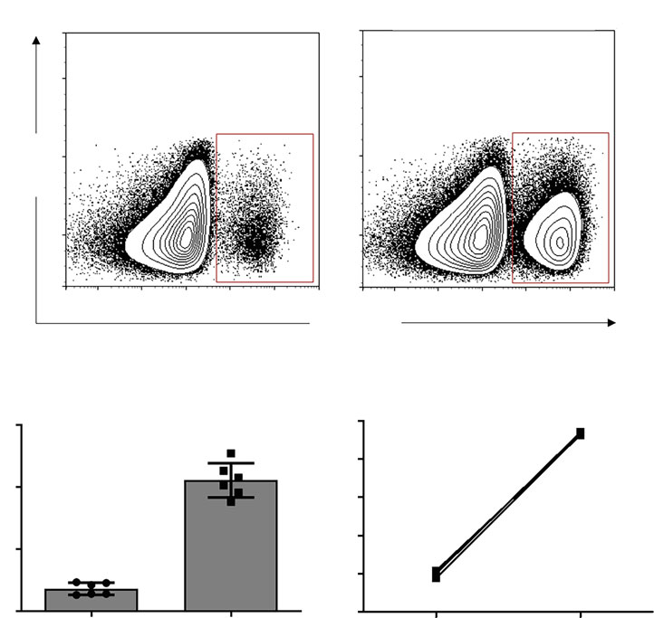
3.10 세포 정렬
- 성공적으로 형질도입된 세포만 더 순수하게 얻으려면 정렬(sorting)을 권장한다(그림 1c 참고). 방법은 자성비드 정렬이나 유세포 분석 정렬 등 여러 가지가 가능하다.
3.11 세포 배양
- 세포를 살펴보고 배지 색을 평가하며 클러스터 형성 여부도 확인한다. 그렇다면 1:1로 분주한다. 세포를 재현탁해 웰 부피의 절반을 새 웰로 옮기고, 남은 부피는 사이토카인 농도를 두 배로 한 새 배지로 채운다.
3.12 xCELLigence RTCA SP 시스템에서 표적 세포 적정
세포배양 배지를 37 °C로 데워둔다.
E-plate의 각 웰에 세포배양 배지 100 μL를 넣는다.
세포를 준비하는 동안 플레이트를 xCELLigence RTCA SP 장치(SP 시스템)에 넣어두되, 아직 배경 측정(background check)은 돌리지 않는다.
표적 세포를 회수하고 수를 센다.
필요한 만큼의 세포를 멸균 에펜도르프 튜브에 담아 부피를 800 μL로 맞춘다.
적정 단계 수에 해당하는 만큼의 에펜도르프 튜브에 배지 400 μL씩 넣어 준비한다(주의사항 10 참고).
첫 튜브에서 세포 현탁액 400 μL를 다음 튜브로 옮기고 재현탁하는 연속 희석을 만든다. 필요한 희석 단계 수만큼 반복한다. 마지막 튜브에서는 세포 400 μL를 버린다.
배경 측정을 실행한다. 통과하면 플레이트를 꺼낸다.
각 에펜도르프 튜브에서 세포 100 μL를 E-plate의 알맞은 웰에 넣는다. 각 조건/세포 수를 3반복으로 분주한다.
E-plate를 SP 시스템에 넣기 전에 세포를 실험대에서 30분간 안정시킨다.
실험을 약 3일간 진행한다.
A: Mock transduced / Gp100TCR transduced — 41/41, 21/21, 2.61%/18.82%, VB14+, A-CSF 8/8, 4/4, 4,1/4,1, 100.3, 101–106, VB14-PE B, C: gp100TCR + T cells (Before sorting / After sorting, Mock / gp100)
그림 1 gp100TCR+ 세포의 마커인 Vβ14 표면 발현으로 나타낸 형질도입 효율. 모크(mock) 세포는 음성 대조군으로 쓴다. (a) 모크 및 gp100TCR 형질도입 T세포의 대표 플롯. (b) 6회 독립 실험에서의 형질도입 효율. (c) MACS anti-PE 비드를 이용한 정렬 전후의 Vβ14 표면 발현(gp100TCR+ 세포), n = 3
3.13 xCELLigence에서의 세포용해 분석
- xCELLigence 적정 결과에 따라 알맞은 표적 세포 수를 정한다(주의사항 9 참고). 세포배양 배지를 37 °C로 데워둔다.
- E-plate의 각 웰에 세포배양 배지 100 μL를 넣는다.
- 세포를 준비하는 동안 플레이트를 SP 시스템에 넣어두되, 아직 배경 측정은 돌리지 않는다.
- 표적 세포를 회수하고 수를 센다.
- 필요한 세포 수를 멸균 튜브에 담아 부피를 맞춘다. 웰마다 100 μL를 사용한다(표 1 참고).
- xCELLigence RTCA 소프트웨어에서 실험 설정을 준비한다.
- 배경 측정을 실행한다.
- 실험 설계에 따라 웰마다 표적 세포 100 μL를 넣는다(주의사항 11 참고).
- E-plate를 SP 시스템에 넣기 전에 세포를 실험대에서 30분간 안정시킨다.
- 실험을 시작하고 표적 세포가 부착해 증식을 시작할 때까지 진행한다(주의사항 10 참고).
- 세포배양 배지를 데운다.
- effector 세포를 회수하고 수를 센다.
- 실험 설계에 필요한 세포 수를 계산한다.
- 96웰 플레이트에서 세포 연속 희석을 만든다(주의사항 12, 13 참고).
- 워밍 플레이트를 42 °C로 준비한다.
표 1 xCELLigence RTCA 소프트웨어 설정 예
| 단계 | 스윕 수 | 간격 | 시간 | 총 시간 |
|---|---|---|---|---|
| 1: 배경 측정 | 1 | 1 s | – | 00:00:01 |
| 2: 표적 세포 부착 | 157 | 10 min | 26 h | 26:00:01 |
| 3: effector 세포 추가 | 97 | 5 min | 8 h | 34:00:01 |
| 4: 살해(killing) | 161 | 15 min | 40 h | 74:00:01 |
| 5: 살해(killing) | 49 | 30 min | 24 h | 98:00:01 |
Human T Cell Transduction and Cytolysis Analysis 37
그림 2 gp100TCR 형질도입 T세포 추가 후 FM3 암세포의 실시간 in vitro 세포용해. 서로 다른 effector:target 비(E:T = 10:1, 3:1, 1:1)로 나타냈다. 값은 FM3 세포 단독 배양 성장에 대해 정규화했다. (a) 정규화된 cell index. (b) gp100TCR effector T세포에 의한 FM3 표적 세포의 세포용해. 값은 effector 세포 추가 직전 시점 기준으로 정규화했다.
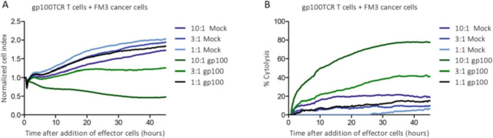
- 실험을 일시정지하고 E-plate를 SP 시스템에서 꺼낸다. 이제부터는 빠르게 움직여야 한다. 모든 웰에서 배지 100 μL를 제거한다.
- effector 세포가 없는 웰(표적 세포만 있는 음성 대조군)에는 미리 데운 세포 배지 100 μL를 넣는다.
- 완전 용해(양성 대조군)를 위한 웰에는 Triton X(10%) 100 μL를 넣는다.
- 준비된 96웰 플레이트에서 알맞은 세포를 E-plate의 해당 웰로 옮긴다.
- E-plate를 SP 시스템에 다시 넣고 원하는 시간 동안 측정을 재개한다(주의사항 14 참고).
- 실험이 끝나면 SP 소프트웨어에서 데이터를 분석하거나 내보내 다른 프로그램으로 분석한다(주의사항 15 및 그림 2 참고).
4 주의사항
형질도입 프로토콜
패키징 세포는 2일째에 약 60% confluent 정도여야 한다. 완전히 차 있거나 너무 비어 있으면 형질전환/바이러스 생산에 영향을 줄 수 있다.
형질전환이 패키징 세포에 부담이 될 수 있으므로 특히 조심스럽게 다뤄야 한다. 따라서 세포 배지를 미리 데우고, 가능한 모든 단계에서 플라스크를 수평으로 유지할 것을 권장한다.
4일째 형질도입에 필요한 양보다 약간 여분의 세포를 깔아두는 것이 좋다.
RetroNectin 코팅 웰이 마르지 않게 한다. 바이러스 상층액을 곧바로 넣을 수 있을 때만 PBS를 제거한다.
바이러스 상층액은 급속동결(액체 질소) 후 -80 °C에 보관해 나중에 쓸 수도 있다. 대량 생산 시에는 사용 전에 상층액 배치 하나로 시험 형질도입을 해본다.
RetroNectin은 세 번까지 해동·재동결할 수 있다. 세 번째 해동해 사용한 뒤에는 버린다.
필요하면 배양 시간을 6시간으로 줄이고 그다음 단계를 그 후에 진행해도 된다.
세포는 이틀에 한 번씩 배양/분주해야 한다(월·수·금). 형질도입 후 최대 3주까지 배양할 수 있다. 중요한 실험에서는 형질도입 직후 최대한 빨리, 되도록 첫 주 안에 사용한다.
xCELLigence
- 웰당 적절한 세포 수를 찾으려면 무엇보다 먼저 표적 세포 적정(cell titration)을 하는 것이 중요하다. 세포 수가 너무 많으면 과증식해 죽기 시작하고, 너무 적으면 곤란하다. 표적 세포를 넣는 다음 날 cell index가 약 1이 되기를 바라기 때문이다.
- 표적 세포가 plateau에 도달하기 전, cell index가 약 1이 되었을 때 effector 세포를 넣는다(그림 3 참고). 표적 세포가 이 수준에 도달하기까지 걸리는 시간은 세포 계열에 따라 다르므로 최적화해야 한다.
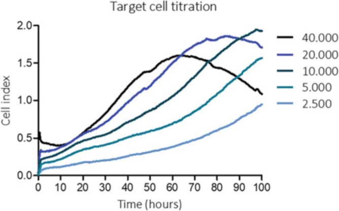
- “완전 용해(full lysis)”나 “배경(background)” 같은 대조 웰에는 가장 많은 effector 세포를 써야 한다.
- effector 세포 연속 희석의 예로는 effector/target 비(E:T) 10:1, 3.3:1, 1:1 등이 있다.
그림 3 흑색종 세포주 FM3를 예로 보여주는 xCELLigence에서의 표적 세포 적정
Human T Cell Transduction and Cytolysis Analysis 39
- effector 세포는 보통 96웰 세포배양 플레이트에서 준비할 것을 권장한다. E-plate가 배양기 밖에 있는 시간을 최소화해 온도를 더 일정하게 유지할 수 있기 때문이다.
- 언젠가는 과증식과 웰 공간 부족 때문에 plate 안의 effector 세포와 표적 세포가 죽기 시작한다. 신뢰할 수 없는 데이터가 나오므로 그 전에 실험을 종료해야 한다.
- 데이터는 effector 세포나 처치를 넣기 직전 마지막 시점 기준으로 정규화한다.
References
- Simmons A, Alberola-Ila J (2016) Retroviral transduction of T cells and T cell precursors. Methods Mol Biol 1323:99. https://doi.org/10.1007/978-1-4939-2809-5_8
- Balvay L, Lastra ML, Sargueil B, Darlix JL, Ohlmann T (2007) Translational control of retroviruses. Nat Rev Microbiol 5(2):128–140. https://doi.org/10.1038/nrmicro1599
- Milone MC, O’Doherty U (2018) Clinical use of lentiviral vectors. Leukemia 32(7):1529–1541. https://doi.org/10.1038/s41375-018-0106-0
- Lamers CHJ, Van Steenbergen-Langeveld S, Van Brakel M, Groot-Van Ruijven CM, Van Elzakker PMML, Van Krimpen B, Sleijfer S, Debets R (2014) T cell receptor-engineered T cells to treat solid tumors: T cell processing toward optimal T cell fitness. Hum Gene Ther Methods 25:345–357. https://doi.org/10.1089/HGTB.2014.051
- Schaft N, Willemsen RA, de Vries J, Lankiewicz B, Essers BWL, Gratama J-W, Figdor CG, Bolhuis RLH, Debets R, Adema GJ (2003) Peptide fine specificity of antiglycoprotein 100 CTL is preserved following retroviral transfer of engineered TCR alpha beta genes into primary human T lymphocytes. J Immunol Methods 279 also: J Immunol 170:2186–2194. https://doi.org/10.4049/JIMMUNOL.170.4.2186
- Pouw NMC, Westerlaken EJ, Willemsen RA, Debets R (2007) Gene transfer of human TCR in primary murine Tcells is improved by pseudotyping with amphotropic and ecotropic envelopes. J Gene Med 5(2):128–140; 9:561–570. https://doi.org/10.1002/JGM.1047
- Kortleve D, van Brakel M, Wijers R, Debets R, Hammerl D (2022) Gene engineering T cells with T cell receptor for adoptive therapy. In: Langerak A (ed) Immunogenetics: methods and protocols, Methods in molecular biology. Springer, New York
- Karimi MA, Lee E, Bachmann MH, Salicioni AM, Behrens EM, Kambayashi T, Baldwin CL (2014) Measuring cytotoxicity by bioluminescence imaging outperforms the standard chromium-51 release assay. PLoS One 9. https://doi.org/10.1371/JOURNAL.PONE.0089357
일차 마우스 T세포에는 감마레트로바이러스 벡터가 가장 적합한데, 형질도입 효율이 더 높기 때문이다 [1–3]. 여기서는 MSGV1 감마레트로바이러스 이동 플라스미드 [4]와, 보조 유전자인 gag·pol·생태성(ecotropic) 외피 유전자를 trans로 공급하는 pCL Eco 패키징 플라스미드 [5]를 사용하는 형질도입 프로토콜을 소개한다. 후자는 Addgene에서 쉽게 구할 수 있다. 우리는 이 프로토콜로 EGFRvIII와 CD19 등 여러 특이성을 지닌 CAR T세포를 만들었고, IRES에서 발현되는 Thy1.1 마커로 형질도입된 T세포를 확인했다. 이 방법들을 통해 용종 바이러스처럼 선천·후천 면역 구성 요소를 두루 동원하는 다른 면역요법과 세포치료를 결합하는 방법을 이해할 수 있었다 [6, 7].
레트로바이러스 벡터로 일차세포를 개조하려면 형질도입 촉진 시약이 필요한 경우가 많다. 여기서는 서로 다른 두 촉진제, 즉 RetroNectin®(Clontech)과 Vectofusin®-1(Miltenyi)을 사용하는 프로토콜을 소개한다. RetroNectin(CH-296으로도 표기)은 세 가지 기능 도메인을 지닌 사람 피브로넥틴 재조합 단편이다. RGDS 모티프가 포함된 세포 접착 도메인, 헤파린결합(H) 도메인, CS-1 세포 접착 도메인이다 [8]. 이 분자는 가교 역할을 한다. H 도메인에 결합한 바이러스 입자가 RGDS 또는 CS-1 도메인과 상호작용하는 세포 곁까지 끌려오는데, 각각 표적 세포의 VLA-5와 VLA-4를 통해 일어난다. Vectofusin®-1은 합성 양이온성 양친매성 펩타이드로, 바이러스 입자 응집을 유도하고 바이러스막과 세포막의 접착과 융합을 돕는다 [9–11]. RetroNectin은 스피뉴큘레이션(spinoculation)을 통한 형질도입 강화를 위해 세포배양 표면에 미리 코팅해야 하지만, Vectofusin®-1은 정적 조건에서도 형질도입을 높일 수 있는 수용성 시약이다. T세포는 24웰 플레이트에서 스피뉴큘레이션과 확장이 잘 되지만, 정적 형질도입 촉진제는
Mouse CAR T-Cell Production 43
표 1 여러 형질도입 및 세포 확장 과정의 장단점
| 과정/형식 | 장점 | 단점 |
|---|---|---|
| 형질도입 — 스피뉴큘레이션 | 가장 높은 형질도입율 | 시간이 오래 걸림; 세포 스트레스를 유발할 수 있음 |
| 형질도입 촉진제 — 정적(Static) | 시간 절약 | 스피뉴큘레이션보다 낮은 형질도입율 |
| RetroNectin® + 스피뉴큘레이션 | 매우 높은 형질도입율 | 플레이트 사전 코팅에 시간 소요; 스피뉴큘레이션이 세포 스트레스를 유발할 수 있음 |
| Vectofusin®-1 + 스피뉴큘레이션 | 고효율 형질도입 | 형질도입 단계에 무혈청 배지 필요 |
| (Vectofusin®-1 정적 조건) | 중간 수준의 형질도입 효율 | |
| 확장 — 24웰 형식 | 구하기 쉽고 저렴; 소량·대량 생산 모두 가능 | 많은 24웰 플레이트를 다루기 번거로울 수 있음 |
| G-Rex® | 과정 중 배지 교환 불필요; 기체 교환으로 최대 확장 | 현미경으로 세포 관찰 불가; 스피뉴큘레이션으로 형질도입 강화 불가; 마우스 T세포 배양이 짧아 G-Rex의 장기적 장점을 충분히 살리지 못할 수 있음 |
2 재료
2.1 293T 세포 배양
- 10% FBS(v/v)를 보충한 DMEM. 4 °C 보관.
- 1× PBS: Ca/Mg 없음. 실온 보관.
- 0.25% 트립신–EDTA. 4 °C 보관.
- 폴리-D-라이신 코팅 플레이트(주의사항 1 참고). 실온 보관.
- 50-mL 튜브.
2.2 형질전환
10% FBS(v/v) 보충 DMEM. 4 °C 보관.
Lipofectamine® 2000 형질전환 시약. 4 °C 보관.
Opti-MEM®. 4 °C 보관.
MSGV1 1D3-28BBz IRES Thy1.1: CAR 카세트와 마커 유전자(anti-mouse CD19 CAR with CD3)를 암호화하는 레트로바이러스 이동 플라스미드. -20 °C 보관.
pCL Eco: 레트로바이러스 패키징 플라스미드. -20 °C 보관.
CAR T세포 배지:
- RPMI 기반 CAR T세포 배지(방법 A).
- L-글루타민 함유 RPMI 1640에 다음을 보충:
- 페니실린/스트렙토마이신 100 U/mL
- 1× MEM 비필수 아미노산 용액
- 1 nM 피루브산나트륨
- 50 μM BME
- 10% (v/v) FBS
- 무혈청 배지(방법 B, C)(주의사항 2 참고):
- TexMACS™ 배지에 다음을 보충:
- 페니실린/스트렙토마이신 100 U/mL
- 50-mL 튜브.
2.3 비장세포 회수
- 마우스 비장(예: C57BL/6 또는 Balb/c 배경). 신선한 것(주의사항 3 참고).
- RPMI. 4 °C 보관.
- ACK(염화암모늄–염화칼륨) 용혈 완충액. 실온 보관.
- 100-μM 세포스트레이너.
- 10-mL 주사기.
- 50-mL 튜브.
2.4 T세포 활성화 및 배양
- RPMI 기반 CAR T세포 배지(2.2절 참고).
- Concanavalin A(ConA)(2.5 mg/mL 원액). -20 °C 보관.
- 마우스 재조합 사이토카인: IL-7(50 μg/mL 원액), IL-15(50 μg/mL 원액). -20 °C 보관(주의사항 4 참고).
- 조직배양용 24웰 플레이트.
- 50-mL 튜브.
2.5 형질도입 방법 A: 형질도입 촉진제 RetroNectin®을 이용한 스피뉴큘레이션
- RetroNectin®(1 mg/mL 원액). -20 °C 보관.
- 비조직배양용(non-tissue-culture-treated) 24웰 플레이트.
- 1× PBS: Ca/Mg 없음. 실온 보관.
- 파라필름.
- 24웰 플레이트 어댑터가 있는 고속 스윙버킷 원심분리기.
- 2% 우혈청알부민(BSA)(w/v)을 첨가하고 여과 멸균한 PBS.
- 50-mL 튜브.
Mouse CAR T-Cell Production 45
방법 B: 형질도입 촉진제 Vectofusin®-1을 이용한 스피뉴큘레이션
- Vectofusin®-1(1 mg/mL 원액). –80 °C 보관.
- 조직배양용 24웰 플레이트.
- 1× PBS: Ca/Mg 없음. 실온 보관.
- 파라필름.
- 플레이트 어댑터가 있는 고속 스윙버킷 원심분리기.
- 50-mL 튜브.
방법 C: 형질도입 촉진제 Vectofusin®-1을 이용한 정적(static) 형질도입
C1 — 보통 조직배양 24웰 플레이트 사용:
- Vectofusin®-1(1 mg/mL 원액). –80 °C 보관.
- 조직배양용 24웰 플레이트.
- 50-mL 튜브.
C2 — G-Rex® 조직배양 6웰 사용:
- Vectofusin®-1(1 mg/mL 원액). –80 °C 보관.
- G-Rex® 6 멀티웰 세포배양기(주의사항 5 참고).
- 50-mL 튜브.
2.5.1 형질도입 검증
- Thy1.1, CD4, CD8, CD44, CD62L에 대한 형광표지 anti-mouse 항체와 고정 가능한 생존/사멸 염색 염료(예시 패널은 표 2 참고).
- FACS 완충액(1% BSA [w/v], 2 mM EDTA, 0.05% NaN₃ [w/v]).
- 50-mL 튜브.
- 뚜껑 달린 5-mL 원형바닥 폴리스티렌 튜브.
표 2 유세포 분석으로 T세포의 CAR 발현을 평가할 때 쓰는 항체 패널 예(형광물질 및 클론 병기)
| 항원 | 클론 | 접합체 | 공급처 | 희석 |
|---|---|---|---|---|
| 고정 가능한 생존/사멸 염색 | NIR | Biolegend | 1/1500 | |
| CD4 | GK1.5 | BV421 | Biolegend | 1/750 |
| CD8β | 53–5.8 | PerCP-Cy5.5 | Biolegend | 1/500 |
| Thy1.1 | OX-7 | PE | Biolegend | 1/1000 |
| CD44 | IM7 | BV786 | Biolegend | 1/500 |
| CD62L | MEL-14 | BV605 | Biolegend | 1/500 |
- 96웰 원형바닥 플레이트.
- 플레이트 어댑터가 달린 스윙버킷 로터를 갖춘 고속 원심분리기.
- 유세포 분석기.
3 방법
3.1 레트로바이러스 생산
다음 프로토콜은 10-cm 플레이트 하나를 형질전환하는 것으로, 약 9–12 mL의 바이러스 상층액을 얻는다. 필요에 따라 규모를 조절한다. 293T 세포는 필요한 날짜로부터 대략 일주일 전에 해동한다.
3.1.1 Day-1: 형질전환을 위한 293T 세포 깔기
- 293T 세포 회수: 배지를 흡인하고 PBS로 세포를 씻어낸다. 0.25% 트립신–EDTA로 배양 용기에서 세포를 떼어낸다. 10% FBS 보충 DMEM으로 트립신을 중화시키고 세포를 재현탁한다. 50-mL 튜브로 옮긴다.
- 실온에서 300×g으로 5분간 원심분리한다. 상층액을 버리고 10% FBS 보충 DMEM 10 mL에 재현탁한다. 혈구계산판으로 세포 수를 센다.
- 폴리-D-라이신 코팅 10-cm 플레이트당 3.5 × 10⁶ 세포를 약 10 mL의 10% FBS 보충 DMEM에 분주한다. 플레이트를 여러 방향으로 흔들어 세포를 고르게 퍼뜨리고 37 °C에서 하룻밤 배양한다.
3.1.2 Day 0: 293T 세포 형질전환
- 293T 세포의 배지를 흡인하고 형질전환 30분 안에 신선한 10% FBS 보충 DMEM 10 mL를 넣는다.
- Opti-MEM 1.5 mL를 담은 50-mL 튜브 두 개를 준비한다(플레이트 수에 맞게 조절): – 튜브 #1: Lipofectamine 60 μL 넣기. – 튜브 #2: MSGV1 1D3-28BBz IRES Thy1.1 14.1 μg + pCL Eco 9.9 μg 넣기. 실온에서 5분간 둔다.
- 튜브 #2 내용물을 튜브 #1에 넣는다. 아주 살살만 섞는다. 실온에서 20분간 둔다.
- 지질/DNA 복합체 3 mL를 293T 세포에 방울방울 떨어뜨려 넣는다. 플레이트를 37 °C에서 하룻밤 배양한다(주의사항 6 참고).
3.1.3 Day 0: 비장세포 회수
- 주사기 플런저로 비장을 100-μM 필터 위에서 50-mL 튜브로 으깨어 누르고 RPMI 5 mL로 두 번 세척한다.
Mouse CAR T-Cell Production 47
- 실온에서 300×g으로 5분간 원심분리한다. ACK 완충액 1 mL에 재현탁하고 실온에서 1분간 둔 뒤 RPMI 9 mL를 넣는다.
- 실온에서 300×g으로 5분간 원심분리한다. 상층액을 버리고 RPMI 20 mL에 재현탁한다. 혈구계산판으로 세포 수를 센다.
- 실온에서 300×g으로 5분간 원심분리한다. 상층액을 버리고 RPMI 기반 CAR T세포 배지 + ConA(2.5 μg/mL) + 마우스 재조합 사이토카인 IL-7(10 ng/mL), IL-15(5 ng/mL)에서 2 × 10⁶ cells/mL로 재현탁한다.
- 웰마다 2 mL씩(웰당 총 4 × 10⁶) 분주하고 플레이트를 37 °C 배양기에 하룻밤 넣어둔다.
3.1.4 Day 1: 293T 세포 배지 교체
- 형질전환된 플레이트에서 배지를 흡인한다(3.1.2절 단계 4 참고).
- 293T 세포 플레이트에 용기 벽을 따라 RPMI 기반 CAR T세포 배지(방법 A) 또는 TexMACS™ 기반 CAR T세포 배지(방법 B, C) 9–12 mL를 넣는다(주의사항 7 참고). 세포를 건드려 떼어내지 않도록 주의한다. 나머지 플레이트 모두에 반복한다(주의사항 8 참고).
- 플레이트를 37 °C에서 하룻밤 배양한다.
3.2 형질도입
3.2.1 방법 A: 형질도입 촉진제 RetroNectin®을 이용한 스피뉴큘레이션
Day 1: RetroNectin® 코팅
- 비조직배양용 24웰 플레이트의 각 웰에 25 μg/mL 농도의 RetroNectin®이 든 PBS 400 μL를 넣는다.
- 플레이트를 4 °C에 하룻밤 둔다.
Day 2: 레트로바이러스 상층액 회수
- 피펫으로 레트로바이러스 상층액을 50-mL 튜브에 모은다. 실온에서 500×g으로 10분간 원심분리한다.
- 상층액을 새 50-mL 튜브로 옮기되, 세포 펠릿을 건드리지 않도록 최소 1 mL는 남겨둔다.
Day 2: T세포 형질도입
흡인으로 24웰 플레이트에서 PBS/RetroNectin 용액을 제거한다. 웰마다 2% BSA 보충 PBS 0.5 mL를 넣고 실온에서 10–30분간 둔다.
PBS/BSA 용액을 제거하고 웰마다 PBS 1–2 mL로 세척한다.
부드럽게 피펫팅하여 T세포를 회수하고 50-mL 튜브에 모은다. 혈구계산판으로 세포 수를 센다. 무형질도입 대조군으로 쓸 세포를 따로 덜어둔다.
형질도입할 목표 수의 T세포를 실온에서 300×g으로 5분간 원심분리한다. 바이러스 상층액에서 1 × 10⁶ cells/mL로 재현탁하고 마우스 재조합 사이토카인 IL-7(10 ng/mL), IL-15(5 ng/mL)를 넣는다(주의사항 7 참고).
24웰 플레이트에서 PBS를 흡인해 제거하고 웰마다 바이러스 상층액 속 T세포 1 mL를 옮겨 넣는다.
파라필름으로 플레이트를 밀봉한다. 바이오해저드 로터 커버를 쓰고 32 °C에서 800×g, 가속 4·브레이크 0 조건으로 90분간 원심분리한다.
원심분리 후 각 웰에 마우스 재조합 사이토카인 IL-7(10 ng/mL), IL-15(5 ng/mL)가 든 CAR 배지 1 mL를 추가한다.
Day 3: T세포 확장
- 각 웰 부피의 절반(세포 1 mL)을 부드럽게 재현탁해 새 조직배양용 24웰 플레이트로 옮겨 분주한다. 모든 웰에 마우스 재조합 사이토카인 IL-7(10 ng/mL), IL-15(5 ng/mL)가 든 CAR 배지 1 mL를 넣는다.
3.2.2 방법 B: 형질도입 촉진제 Vectofusin®-1을 이용한 스피뉴큘레이션
Day 2: 레트로바이러스 상층액 회수
- 피펫으로 레트로바이러스 상층액을 50-mL 튜브에 모은다. 실온에서 500×g으로 10분간 원심분리한다.
- 상층액을 새 50-mL 튜브로 옮기되, 펠릿을 건드리지 않도록 최소 1 mL는 남겨둔다.
Day 2: T세포 형질도입
- 피펫팅으로 T세포를 회수해 50-mL 튜브에 모은다. 혈구계산판으로 세포 수를 센다. 무형질도입 대조군용 세포를 따로 덮어둔다. 형질도입할 목표 수의 세포를 실온에서 300×g으로 5분간 원심분리한다. 잔류 혈청을 제거하기 위해 PBS로 T세포를 재현탁하고 다시 실온에서 300×g으로 5분간 원심분리한다.
- 바이러스 상층액에 Vectofusin®-1을 10 μg/mL가 되도록 넣고 실온에서 최대 5분간 둔다. 세척한 T세포를 바이러스 상층액/Vectofusin®-1에서 1 × 10⁶ cells/mL로 재현탁하고 마우스 재조합 사이토카인 IL-7(10 ng/mL), IL-15(5 ng/mL)를 넣는다.
- 조직배양용 24웰 플레이트에 웰당 1 mL씩 옮겨 담는다.
- 파라필름으로 플레이트를 밀봉한다. 32 °C에서 800×g, 가속 4·브레이크 0 조건으로 90분간 원심분리한다(바이오해저드 로터 커버 사용).
- 원심분리 후 24웰 플레이트의 각 웰에 FBS가 든 RPMI 기반 배지를 추가로 1 mL씩 넣고, 마우스 재조합 사이토카인 IL-7(10 ng/mL), IL-15(5 ng/mL)를 더한다.
Mouse CAR T-Cell Production 49
Day 3: T세포 확장
- 각 웰 부피의 절반(세포 1 mL)을 부드럽게 재현탁해 새 24웰 플레이트로 옮겨 분주한다. 모든 웰에 마우스 재조합 사이토카인 IL-7(10 ng/mL), IL-15(5 ng/mL)가 든 RPMI 기반 CAR 배지 1 mL를 넣는다.
3.2.3 방법 C: 형질도입 촉진제 Vectofusin®-1을 이용한 정적 형질도입
Day 2: 레트로바이러스 상층액 회수
- 피펫으로 레트로바이러스 상층액을 50-mL 튜브에 모은다. 실온에서 500×g으로 10분간 원심분리한다.
- 상층액을 새 50-mL 튜브로 옮기되, 펠릿을 건드리지 않도록 최소 1 mL는 남겨둔다.
Day 2: T세포 형질도입
- 부드럽게 피펫팅해 T세포를 회수하고 50-mL 튜브에 모은다. 혈구계산판으로 세포 수를 센다. 형질도입할 목표 수의 세포를 실온에서 300×g으로 5분간 원심분리한다. 잔류 혈청을 제거하기 위해 PBS로 재현탁하고 다시 실온에서 300×g으로 5분간 원심분리한다. 아울러 무형질도입 대조군용 T세포를 따로 덮어둔다.
- 레트로바이러스 상층액에 Vectofusin®-1을 10 μg/mL 넣고 실온에서 5분간 둔다. 세척한 T세포를 레트로바이러스 상층액에서 1 × 10⁶ cells/mL로 재현탁하고 마우스 재조합 사이토카인 IL-7(10 ng/mL), IL-15(5 ng/mL)를 넣는다.
- 조직배양 24웰 플레이트(방법 C1)에는 웰당 1 mL(1 × 10⁶ 세포)씩, G-Rex® 6웰 배양 플레이트(방법 C2)에는 웰당 최소 5–10 mL 부피에 5×10⁶~1×10⁷ 세포씩 분주한다(주의사항 5 참고).
- 37 °C에서 4시간 배양한다. 24웰 플레이트(방법 C1)에는 사이토카인이 든 CAR 배지(FBS 포함)를 추가로 1 mL, G-Rex® 웰(방법 C2)에는 10–15 mL를 더한다.
Day 3: T세포 유지 활성화(방법 C1만 해당)
- 각 웰 부피의 절반(세포 1 mL)을 부드럽게 재현탁해 새 24웰 조직배양 플레이트로 옮겨 분주한다. 모든 웰에 마우스 재조합 사이토카인 IL-7(10 ng/mL), IL-15(5 ng/mL)가 든 CAR 배지 1 mL를 넣는다.
3.3 CAR 형질도입 평가
3.3.1 4~5일째: CAR T세포 회수
- 피펫팅으로 세포를 부드럽게 재현탁한다. 모든 세포를 50-mL 튜브에 모아 혈구계산판으로 수를 센다. 유세포 염색용으로 1 × 10⁶ 세포씩 나눠 96웰 원형바닥 플레이트로 옮긴다.
- 플레이트를 800×g으로 2분간 원심분리고, PBS에 희석한 고정 가능한 생존/사멸 염색액 100 μL에 세포를 재현탁한다. 실온에서 10–20분간 배양한다.
그림 1 1일째 형질전환 배지를 9 mL의 새 배지로 교체했다. T세포는 표기된 형질도입 촉진제가 있는 상태에서 형질도입되었고 표기된 배양 시스템에서 확장되었다. 시료는 BD FACSymphony™에서 측정하고 FlowJo 10 소프트웨어로 분석했다. (a) 생존 CD8 또는 CD4 T세포에 게이팅한 대표 유세포 플롯으로, 4일째 CAR 마커 유전자 Thy1.1 발현을 보여준다. (b) 표기된 형질도입 조건에서 CD4 및 CD8 T세포의 형질도입율. (c) RetroNectin® 존재 하 스피뉴큘레이션(방법 A) 형질도입 후 CD8 및 CD4 T세포의 CD44와 CD62L 발현 대표 플롯. TE: 형질도입 촉진제(transduction enhancer); UTD: 무형질도입(untransduced)
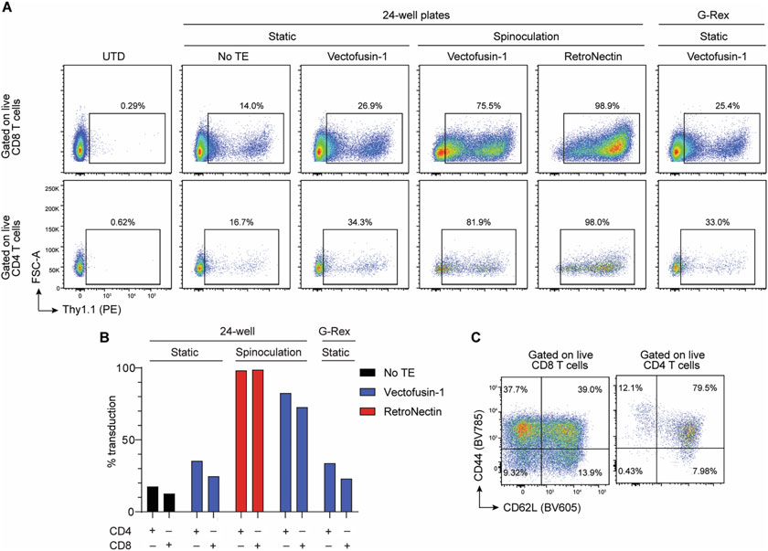
- 플레이트를 800×g으로 원심분리하고 FACS 완충액에 희석한 항체 마스터믹스 100 μL에 세포를 재현탁한다. 항체 패널 예시는 표 2 참고. 4 °C에서 20분간 배양한다.
- 플레이트를 800×g으로 원심분리하고 세척을 위해 FACS 완충액 150 μL에 재현탁한다.
- 플레이트를 800×g으로 원심분리고 세포를 5-mL 원형바닥 튜브로 옮긴다. 부피를 약 400 μL로 맞추고 적절한 유세포 분석기에서 측정을 진행한다. 기대 결과는 그림 1과 주의사항 9–11 참고.
Mouse CAR T-Cell Production 51
4 주의사항
폴리-D-라이신은 293T 세포의 부착을 돕고 이를 통해 생산 세포의 바이러스 수율을 높인다. 미리 코팅된 플레이트를 쓰거나 제조사 지침에 따라 폴리-D-라이신 용액으로 직접 코팅할 수 있다.
Vectofusin®-1의 효과는 배지 속 혈청 유무에 영향을 받는다. 1일째 293T 세포의 형질전환 배지를 교체할 때는 FBS가 든 RPMI 기반 배지가 아니라 Tex-MACS™ 같은 무혈청 배양 배지를 써야 한다.
사람 T세포는 동결·해동이 잘 되지만 마우스 T세포는 냉동에 덜 강하다. 우리는 생존력과 기능을 최대화하기 위해 항상 신선한 T세포를 사용해 왔다.
T세포 확장에는 여러 사이토카인을 쓸 수 있다. 우리는 사람 IL-2 단독과, 0일째에만 넣는 마우스 IL-7(10 ng/mL) + 마우스 IL-15(5 ng/mL), 필요시 여기에 마우스 IL-21(30 ng/mL)을 더한 조합을 성공적으로 사용했다. IL-7, IL-15, IL-21은 T세포 말기 분화를 억제한다고 널리 알려져 있으며, 경험상 사람 IL-2보다 생존력이 더 좋았다.
G-Rex 장치는 용기 바닥의 실리콘 멤브레인 때문에 원심분리할 수 없다.
이 시점부터 상층액에는 감염성 레트로바이러스가 있다. 레트로바이러스와 접촉하는 모든 물품은 10% 블리치로 소독해야 한다.
1일째 형질전환 혼합물을 교체하는 배지 부피를 조절하면 바이러스 역가를 바꿀 수 있다. 예컨대 삽입 유전자가 작은 레트로바이러스라면 12 mL를 쓰고 더 희석해도 된다(상층액 2/3 + 배지 1/3). 역가를 극대화해야 하는 경우(유전자 크기가 레트로바이러스 코딩 용량 한계에 가깝거나 Vectofusin®-1을 사용할 때)에는 부피를 줄여 형질도입 효율을 높인다.
렌티바이러스는 대량으로 만들어 -80 °C에 보관하기 쉽지만, 생태성(ecotropic) 레트로바이러스는 동결하면 역가가 크게 떨어진다. 따라서 우리는 형질도입 때마다 신선한 상층액을 준비한다.
T세포 확장과 형질도입이 매우 효율적이라 4일째 수율은 >90% T세포이며 정렬 단계는 보통 필요 없다. 원하면 자성비드 기반 Thy1.1 정렬이나 무처치(untouched) T세포 정렬을 할 수 있다.
1일째 293T 세포 배지를 9 mL로 교체하면 다음 형질도입율을 얻을 수 있다:
- 방법 A: >90%
- 방법 B: 70–85%
- 방법 C: 20–35%
- 방법 A의 전형적인 확장과 수율 예:
마리당 10⁷ CAR T세포로 6마리씩 세 집단 치료 시! 18회 분주 = 1.8 × 10⁸ 세포 + 주사용 여유분. Day 0: 공여 마우스 네 마리에서 비장 적출. 293T 세포 8 × 10-cm 플레이트 형질전환. Day 1: 24웰 플레이트 5개에 RetroNectin® 코팅. Day 2: T세포 회수 — 0일째 깐 전체 세포의 70–90% 회수를 기대. 레트로바이러스 상층액을 120 mL로 맞춤. 24웰 플레이트 5개 스피뉴큘레이션. Day 3: 세포 절반씩 10 × 24웰 플레이트로 분주. Day 4: T세포 회수 — 2일째 깐 세포의 약 3배를 회수할 것으로 기대. 전체 기대 수율 ~4 × 10⁸.
감사의 글
저자들은 마우스 CD19 CAR이 클론된 MSGV1 레트로바이러스 구조체를 제공해 준 국립암연구소 외과부서의 Steven A. Rosenberg, Richard A. Morgan, Steven Feldman에게 감사를 전한다. 이 연구는 BC Cancer Research, BC Cancer Foundation, CIHR, MSHRBC Scholar Award(LE), Fondation Léon Fredericq(PL grant) 및 Canadian Cancer Society Research Training Award(GS)의 지원을 받았다.
References
- Baumann JG, Unutmaz D, Miller MD, Breun SK, Grill SM, Mirro J, Littman DR, Rein A, Kewal Ramani VN (2004) Murine T cells potently restrict human immunodeficiency virus infection. J Virol 78(22):12537–12547. https://doi.org/10.1128/JVI.78.22.12537-12547.2004
- Tsurutani N, Yasuda J, Yamamoto N, Choi BI, Kadoki M, Iwakura Y (2007) Nuclear import of the preintegration complex is blocked upon infection by human immunodeficiency virus type 1 in mouse cells. J Virol 81(2):677–688. https://doi.org/10.1128/JVI.00870-06
- Kerkar SP, Sanchez-Perez L, Yang S, Borman ZA, Muranski P, Ji Y, Chinnasamy D, Kaiser AD, Hinrichs CS, Klebanoff CA, Scott CD, Gattinoni L, Morgan RA, Rosenberg SA, Restifo NP (2011) Genetic engineering of murine CD8+ and CD4+ T cells for preclinical adoptive immunotherapy studies. J Immunother 34(4):343–352. https://doi.org/10.1097/CJI.0b013e3182187600
- Hughes MS, Yu YY, Dudley ME, Zheng Z, Robbins PF, Li Y, Wunderlich J, Hawley RG, Moayeri M, Rosenberg SA, Morgan RA (2005) Transfer of a TCR gene derived from a patient with a marked antitumor response conveys highly active T-cell effector functions. Hum Gene Ther 16(4):457–472. https://doi.org/10.1089/hum.2005.16.457
- Naviaux RK, Costanzi E, Haas M, Verma IM (1996) The pCL vector system: rapid production of helper-free, high-titer, recombinant retroviruses. J Virol 70(8):5701–5705. https://doi.org/10.1128/JVI.70.8.5701-5705.1996
- Evgin L, Kottke T, Tonne J, Thompson J, Huff AL, van Vloten J, Moore M, Michael J, Driscoll C, Pulido J, Swanson E, Kennedy R, Coffey M, Loghmani H, Sanchez-Perez L, Olivier G, Harrington K, Pandha H, Melcher A, Diaz RM, Vile RG (2022) Oncolytic virus-mediated expansion of dual-specific CAR T cells improves efficacy against solid tumors in mice. Sci Transl Med 14(640):eabn2231. https://doi.org/10.1126/scitranslmed.abn2231
- Evgin L, Huff AL, Wongthida P, Thompson J, Kottke T, Tonne J, Schuelke M, Ayasoufi K, Driscoll CB, Shim KG, Reynolds P, Monie DD, Johnson AJ, Coffey M, Young SL, Archer G, Sampson J, Pulido J, Perez LS, Vile R (2020) Oncolytic virus-derived type I interferon restricts CAR T cell therapy. Nat Commun 11(1):3187. https://doi.org/10.1038/s41467-020-17011-z
- Hanenberg H, Xiao XL, Dilloo D, Hashino K, Kato I, Williams DA (1996) Colocalization of retrovirus and target cells on specific fibronectin fragments increases genetic transduction of mammalian cells. Nat Med 2(8):876–882. https://doi.org/10.1038/nm0896-876
- Majdoul S, Seye AK, Kichler A, Holic N, Galy A, Bechinger B, Fenard D (2016) Molecular determinants of Vectofusin-1 and its derivatives for the enhancement of lentivirally mediated gene transfer into hematopoietic stem/progenitor cells. J Biol Chem 291(5):2161–2169. https://doi.org/10.1074/jbc.M115.675033
- Vermeer LS, Hamon L, Schirer A, Schoup M, Cosette J, Majdoul S, Pastre D, Stockholm D, Holic N, Hellwig P, Galy A, Fenard D, Bechinger B (2017) Vectofusin-1, a potent peptidic enhancer of viral gene transfer forms pH-dependent alpha-helical nanofibrils, concentrating viral particles. Acta Biomater 64:259–268. https://doi.org/10.1016/j.actbio.2017.10.009
- Radek C, Bernadin O, Drechsel K, Cordes N, Pfeifer R, Strasser P, Mormin M, Gutierrez-Guerrero A, Cosset FL, Kaiser AD, Schaser T, Galy A, Verhoeyen E, Johnston ICD (2019) Vectofusin-1 improves transduction of primary human cells with diverse retroviral and lentiviral pseudotypes, enabling robust, automated closed-system manufacturing. Hum Gene Ther 30(12):1477–1493. https://doi.org/10.1089/hum.2019.157
- Vera JF, Brenner LJ, Gerdemann U, Ngo MC, Sili U, Liu H, Wilson J, Dotti G, Heslop HE, Leen AM, Rooney CM (2010) Accelerated production of antigen-specific T cells for preclinical and clinical applications using gas-permeable rapid expansion cultureware (G-Rex). J Immunother 33(3):305–315. https://doi.org/10.1097/CJI.0b013e3181c0c3cb
- Jin J, Sabatino M, Somerville R, Wilson JR, Dudley ME, Stroncek DF, Rosenberg SA (2012) Simplified method of the growth of human tumor infiltrating lymphocytes in gas-permeable flasks to numbers needed for patient treatment. J Immunother 35(3):283–292. https://doi.org/10.1097/CJI.0b013e31824e801f
- Bajgain P, Mucharla R, Wilson J, Welch D, Anurathapan U, Liang B, Lu X, Ripple K, Centanni JM, Hall C, Hsu D, Couture LA, Gupta S, Gee AP, Heslop HE, Leen AM, Rooney CM, Vera JF (2014) Optimizing the production of suspension cells using the G-Rex “M” series. Mol Ther Methods Clin Dev 1:14015. https://doi.org/10.1038/mtm.2014.15
- Gagliardi C, Khalil M, Foster AE (2019) Streamlined production of genetically modified T cells with activation, transduction and expansion in closed-system G-Rex bioreactors. Cytotherapy 21(12):1246–1257. https://doi.org/10.1016/j.jcyt.2019.10.006
- Ludwig J, Hirschel M (2020) Methods and process optimization for large-scale CAR T expansion using the G-Rex cell culture platform. Methods Mol Biol 2020:165–177. https://doi.org/10.1007/978-1-0716-0146-4_12
- Gotti E, Tettamanti S, Zaninelli S, Cuofano C, Cattaneo I, Rotiroti MC, Cribioli S, Alzani R, Rambaldi A, Introna M, Golay J (2022) Optimization of therapeutic T cell expansion in G-Rex device and applicability to large-scale production for clinical use. Cytotherapy 24(3):334–343. https://doi.org/10.1016/j.jcyt.2021.11.004
56 Alejandro E. Mayorca-Guiliani
그림 1 기관의 in situ 탈세포화(decellularization)로 ECM 스캐폴드를 만든다. (a) 탈세포화된 액와 림프절. (b) 폐 전이를 지닌 하대정맥엽의 탈세포화 표본(흰색 화살표). 조직에서 모든 세포가 제거된 뒤에도 기관 구조가 보존되어 화학 조성이 그대로 유지됨에 주목한다. 이 스캔폴드는 면역염색으로 ECM 성분을 표지해 형광현미경으로 확인할 수 있다. 공초점현미경과 2광자현미경을 결합하면 2차 고조파 영상(즉, 섬유상 콜라겐)과 엘라스틴 자가형광을 면역염색 성분과 함께 얻어 포괄적인 ECM 지도 작성의 길이 열린다. ISDoT는 전문 수술 장비(아래 2절 참고), 미세수술 훈련(아래 3절 참고), 2광자+공초점 영상화와 영상 처리에 대한 충분한 숙련도를 요구한다. 여기서 다루는 ISDoT 응용은 유방 지방패에 위치한 일차 종양을 탈세포화하는 것이다.
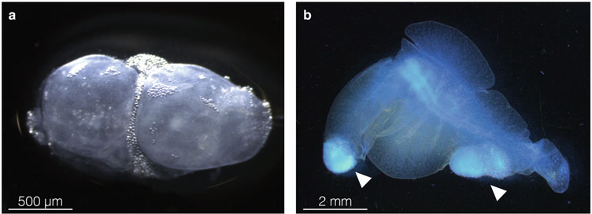
2 재료
주의사항 1 참고.
2.1 탈세포화 수술
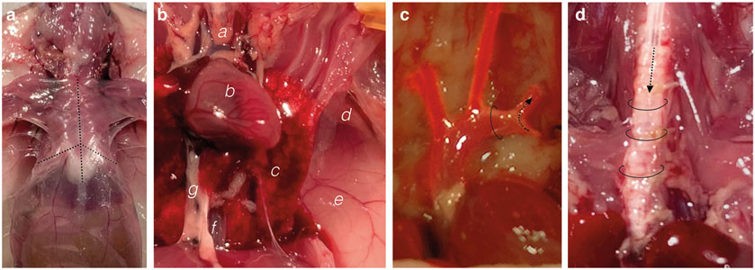
- 마우스 안락사용 CO₂ 환기 챔버.
- 실리콘 튜빙(내경 2-mm, 외경 4-mm; Ole Dich, cat. no. 31399).
- 폴리스티렌 트레이(~30 × 50 cm).
- Luer–튜빙 수컷 커넥터(1/8 inch; World Precision Instruments, cat. no. 13158-100).
- 바늘(27게이지; Microlance, BD, cat. no. 21018).
- 주사기(1 mL; Plastipak; BD, cat. no. 3021001).
- 주사기(10 mL; Plastipak; BD, cat. no. 3021110).
- 이발기(Oster, cat. no. 76998-320-051).
- 페리스탈틱 펌프(Ole Dich, cat. no. 110AC(R)20G75).
- 해부현미경(Leica, model no. S6 D).
ISDoT Applied to the Topographical Analysis of Tumor-Associated ECM 57
그림 2 탈세포화 수술. (a) 실험 마우스의 피하 박리. 정면 시야. 점선은 흉곽으로 들어가는 수술 경로를 나타낸다. (b) 흉곽을 열고 흉선을 적출한 후 (a) 주요 혈관, (b) 심장, (c) 폐, (d) 액와 림프절, (e) 유방 지방패, (f) 흉부 대동맥, (g) 대정맥을 확인할 수 있다. (c) 주요 혈관 박리. 좌총경동맥 분지 직후 대동맥을 결찰한다(실선). 카테터 삽입된 대동맥에서 역류하는 혈류(점선 화살표)는 좌쇄골하동맥으로 우회되어 왼쪽 유방 지방패와 액와 림프절을 관류한다. (d) 폐 관류를 위한 기관 카테터 삽입(점선 화살표). 카테터는 기관을 미세봉합하여 고정한다(실선)
- 단극·양극 전극을 갖춘 전기수술 장치(KLS Martin Minicutter).
- 미세혈관 클램프(7, 11, 16 mm; Fine Science Tools, cat. Nos. 00396-01, 00398-02, 00400-03).
- 클램프 적용 겸자(Fine Science Tools, cat. no. 00072-14).
- 양두 미세스파툴라(Fine Science Tools, cat. no. 10091-12).
- Castroviejo 미세바늘집게(Fine Science Tools, cat. no. 12061-01).
- 미세 스프링 가위(Vannas, 곡면; Fine Science Tools, cat. no. 15001-08).
- Dumont 미세겸자, 45° 끝(2개; Fine Science Tools, cat. no. 11251-35).
- Dumont 미세겸자(2개; Fine Science Tools, cat. no. 11252-20).
- 링 끝 미세겸자(Aesculap, cat. no. FM571R).
- Halsey 바늘집게(Fine Science Tools, cat. no. 12500-12).
- Mayo 가위(Fine Science Tools, cat. no. 14110-15).
- Metzenbaum 가위(Fine Science Tools, cat. no. 14017-14).
- 톱니 가위(Fine Science Tools, cat. no. 14958-09).
- 건 가위(Walton; Fine Science Tools, cat. no. 14077-09).
58 Alejandro E. Mayorca-Guiliani
- 이끼 낀 Adson 겸자(Fine Science Tools, cat. no. 11027-12).
- Adson 겸자(Fine Science Tools, cat. no. 11006-12); 6–0 봉합사, 삼각단면 바늘(Vicryl; Ethicon, cat. no. 6301124); 9–0 미세봉합사(BBraun, cat. no. G1048611).
- 정맥용 24게이지 카테터(Insyte; BD, cat. no. 381512).
- 정맥용 26게이지 카테터(Terumo; Surflo-W, cat. no. SR + DM2619WX).
- Molt 골막박리기(Aesculap, cat. no. D0543R).
- 스파툴라(Freer-Yasargil; Aesculap, cat. no. OL166R).
- 페이퍼타월(멸균) 또는 수술용 거즈.
2.2 조직 준비 및 면역염색용
- 메스(멸균, 23형; Swann Morton, cat. no. 0510).
- Dumont 겸자(no. 5; Fine Science Tools, cat. no. 11252-20).
- 페트리접시(Nunclon Delta Surface; Thermo Fisher Scientific, cat. no. 150350).
- 원추바닥 튜브(15 mL; Greiner Bio-One, cat. no. GR-188271).
- 크라이오튜브(CryoTube vials; Thermo Fisher Scientific, cat. no. 377267).
- 로킹 테이블(Duomax 1030; Heidolph, cat. no. 543-32210-00).
- 알루미늄 포일.
2.3 영상 촬영용
- 글래스바닥 배양접시(14-mm 마이크로웰과 no. 1.0 커버글라스(0.13–0.16 mm)가 있는 35-mm 페트리접시; MatTek, cat. no. P35G-1.0-14-C).
- 현미경(역상 다광자현미경; Leica, model no. SP5-X MP).
- 원형 접시용 현미경 마운트.
- 형광 광원(Leica, model no. EL6000).
- 백색광 레이저(WLL; Leica).
- 2광자 Ti–sapphire 레이저(Spectra-physics, Mai Tai DeepSee 모델).
- 검출기(하이브리드 검출기 [Leica, HyD S 모델] 및 광전증배관(PMTs; Leica)).
- 대물렌즈(lambda blue, 20×, 개구수[NA] 0.70 IMM UV; Leica, HCX PL APO 모델).
- 촬영 후 영상 처리 소프트웨어(ImageJ/Fiji: https://imagej.net/Fiji).
ISDoT Applied to the Topographical Analysis of Tumor-Associated ECM 59
2.4 시약
- 탈이온수(Milli-Q IQ 7000, Ultrapure lab water system; Merck, cat. no. ZIQ7000T0).
- 70% 에탄올(무수알코올 99.9%; plum, cat. no. 1680766). 무수알코올은 탈이온수로 70%(vol/vol)로 맞춰야 한다.
- PBS(pH 7.4, 10×, Gibco; Thermo Fisher Scientific, cat. no. 70011044).
- 데옥시콜산나트륨(DOC; Sigma-Aldrich, cat. no. D6750-100G). DOC는 삼키면 해롭다. 보호 고무장갑을 착용하고 환기후드 안에서 작업한다.
- 도데실황산나트륨(Sigma-Aldrich, cat. no. L3771). SDS는 유해하다. 피부나 눈에 닿지 않게 하고 삼키지 않는다. 보호 고무장갑을 착용하고 환기후드에서 작업한다.
- 페니실린–스트렙토마이신(Gibco; Thermo Fisher Scientific, cat. no. 15140122).
- 아지화나트륨(Sigma-Aldrich, cat. no. 08591-1ML-F). 아지화나트륨은 특히 수생 생물에 환경 유해물질이다. 환기후드에서 작업하고 소속 기관 지침에 따라 폐기한다.
2.5 면역염색
- 탈이온수(Milli-Q IQ 7000, Ultrapure lab water system; Merck, cat. no. ZIQ7000T0).
- 혈청(정상 당나귀 혈청; Jackson ImmunoResearch, cat. no. 017-000-121).
- 우혈청알부민(fraction V, standard grade, lyophilized; Serva, cat. no. 11930.03).
- Tween 20(Sigma-Aldrich, cat. no. P9416-50ML).
- PBS(pH 7.4, 10×, Gibco; Thermo Fisher Scientific, cat. no. 70011044).
- 1차 항체(표 1).
2.6 2차 항체
- Alexa Fluor 488 donkey anti-goat IgG (H + L)(cross-adsorbed 2차 항체; Thermo Fisher Scientific, cat. no. A-11055, RRID:AB_2534102)
- Alexa Fluor 488 donkey anti-rabbit IgG (H + L)(highly cross-adsorbed 2차 항체; Thermo Fisher Scientific, cat. no. A-21206, RRID:AB_2535792)
- Alexa Fluor 488 donkey anti-rat IgG (H + L)(highly cross-adsorbed 2차 항체; Thermo Fisher Scientific, cat. no. A-21208, RRID:AB_2535794)
60 Alejandro E. Mayorca-Guiliani
표 1 문제 해결 표 [3]
| 문제 | 가능한 원인 | 해결책 | 절차 |
|---|---|---|---|
| 카테터가 관통한 혈관이 찢어짐 | 카테터나 바늘이 혈관을 뚫으며 조심스럽게 삽입되지 않음 | (i) 카테터를 혈관 안으로 되돌리고(새로 뚫지 않도록 바늘은 빼냄) 찢어진 부위 너머로 밀어 넣은 뒤 찢어진 부위 안쪽에 봉합사 한 땀을 놓아 역류를 막는다. 찢어진 부위가 목표 기관 근처이거나 카테터 삽입이 불가능하면 새 수술을 시작한다. (ii) 복부 대동맥 카테터 삽입 시에는 먼저 횡격막 바로 아래 1 cm 지점에만 카테터를 넣고, 그 후 복강 접근 수술을 마친 뒤 대동맥을 노출시켜 카테터 진행 상황을 지켜보며 신중히 넣는다. 필요하면 겸자로 돕는다. 대동맥 찢어짐을 방지하기 위함이다. | 수술 절차 |
| 혈관 천공 — 복부 수술 중 봉합 바늘이 대정맥을 꿰뚫음 | 대동맥과 대정맥을 한 번의 바늘 땀으로 함께 감싸 천공을 피한다. | 수술 절차 | |
| 남은 대동맥이 카테터 삽입하기에 충분히 길지 않음 | 마우스를 너무 아래쪽에서 절단함 | 카테터 삽입을 용이하게 하려면 대동맥이 최소 1 cm 노출되도록 절단한다. 불가능하면 새 수술을 시작한다. | 수술 절차 |
| 관류가 비효율적임 | 공급 혈관이 막힘 | 총경동맥을 분지까지 박리하고 내경동맥(뒤쪽에서 나오는 가지)을 결찰해 혈류를 외경동맥에 집중시킨다. | 수술 절차 |
ISDoT Applied to the Topographical Analysis of Tumor-Associated ECM 61
표 1 (계속)
| 문제 | 가능한 원인 | 해결책 | 절차 |
|---|---|---|---|
| 카테터가 문맥정맥을 꿰뚫음 | 카테터 취급 부주의 | 카테터를 문맥정맥에 다시 넣고 천공 부위 위쪽에서 봉합해 역류를 막는다. | 수술 절차 |
| 목표 조직이 관류되지 않음 | 혈관이 눌려 닫힘 | (i) 마우스를 수술현미경 아래 놓고 1-mL 주사기로 조직을 관류하면서 누수 지점을 찾는다. 누수 지점을 클램프로 잠근다. (ii) 누수가 없으면 조직을 관류 펌프에 다시 연결하고 유량을 0.4 mL/min까지 올려 닫힌 혈관을 열어준다. | 탈세포화 |
| 기관이 관류 압력에 의해 부서짐 | 유량이 너무 빠름 | 유량을 낮춘다. | 탈세포화 |
| 기관이 완전히 탈세포화되지 않음 | (i) 카테터가 제대로 위치·고정되지 않음 (ii) 유량 부족 (iii) 절단된 혈관이 시약 빠져나가는 통로가 됨 (iv) 시약이 신선하지 않음 | (i) 수술이 끝나면 카테터 위치, 봉합 강도, 기관 관류, 시약 저류 여부를 확인한다. 카테터가 제대로 놓이지 않았으면 교체하고 추가로 단단히 봉합해 기관에 올바른 시약 흐름을 공급한다. (ii) 우리는 0.2 mL/min의 유량을 쓴다. 더 느리면 기관 전체 관류를 보장하지 못할 수 있다. (iii) 현미경으로 기관 관류를 확인하고, 절단된 혈관이나 관류되지만 관심 영역 밖 조직(예: 내흉동맥)으로 이어지는 혈관을 찾는다. 해당 혈관을 소작한다. (iv) 매 회차마다 신선한 시약을 준비한다. | 탈세포화 |
62 Alejandro E. Mayorca-Guiliani
표 1 (계속)
| 문제 | 가능한 원인 | 해결책 | 절차 |
|---|---|---|---|
| 기관이 불완전하게 탈세포화됨 | (i) 혈관 구조의 해부학적 차이 등으로 탈세포화 효율이 달라질 수 있음 (ii) 카테터가 빠짐 | (i) 레이저를 950 nm로 맞춰 405–445 nm 대역을 검출하는 방식으로 2광자 여기 핵 DNA 검출을 시행한다. 핵 DNA가 검출되면 과학적 질문에 따라 새 수술을 시작한다. (ii) 탈세포화 중 조직은 관류 때문에 팽창한다. 이 변화로 카테터가 빠져 관심 영역이 불완전하게 탈세포화될 수 있다. 예방하려면 카테터 삽입 혈관을 그 아래 조직에 단단한 고정 봉합으로 붙여둔다. | 탈세포화 |
| 종양이 탈세포화되지 않음 | 종양 크기가 과도함 | 종양은 비정상적인 혈관 구조가 있다. 직경 1 cm가 넘는 종양을 탈세포화하면 혈관이 모든 종양 영역에 닿지 못할 수 있다. 1 cm 미만 종양을 다루도록 암 모델을 최적화한다. 또는 유량을 늘린다. | 탈세포화 |
| 보관 중 기관에 미생물 집락 형성 | 탈세포화 과정 중 무균 상태 미흡 | 모든 수술 재료는 절차 전에 고압멸균하고 모든 물품은 멸균 상태여야 한다. 멸균이 어려운 기기(예: 해부현미경)는 사용 전 소독한다. 미생물 집락 위험을 줄이려면 라미나 후드 안에서 탈세포화를 진행할 수 있다. 탈세포화 조직의 오염을 막으려면 보관 용액(페니실린/스트렙토마이신 [1% vol/vol]과 최종 0.3 μM 농도의 아지화나트륨을 탈이온수에 녹인 것) 속에 조직을 넣어둔다. | 보관 |
ISDoT Applied to the Topographical Analysis of Tumor-Associated ECM 63
표 1 (계속)
| 문제 | 가능한 원인 | 해결책 | 절차 |
|---|---|---|---|
| z-스택 획득 중 이미지가 움직이거나 떠다님 | 물을 너무 많이 넣어 조직이 글래스바닥 접시 바닥과 접촉하지 않고 떠 있음 | 먼저 접시 안 액체를 흡인해 샘플이 안정될 때까지 한다. 또는 겸자로 조직을 접시에서 완전히 꺼내 피펫으로 액체를 빼낸 뒤, 물을 덜 넣어 조직을 다시 세팅한다. | 현미경 촬영 |
| 항체 신호가 없음 | (i) 1차 또는 2차 항체 중 하나가 작동하지 않음 (ii) 조직에 단백질이 없음 (iii) 신호가 매우 약함 (iv) 신호 없는 조직 영역을 보고 있음 (v) 조직이 광원 아래 없음 (vi) 조직이 말랐음 (vii) 2차 항체 파장이 현미경 형광 범위를 벗어남 | (i) 다른 항체를 선택한다. (ii) 다른 조직 유형으로 시험한다. (iii) 레이저 출력과 노출 시간을 조절하되 자가형광 신호를 증폭하지 않도록 주의한다. (iv) 두꺼운 표면을 피해 조직을 뒤집어 다른 영역을 본다. 필요하면 조직을 슬라이싱해 새 영역을 노출시키는 것도 고려한다. (v) 글래스바닥 접시를 옮긴다. (vi) 실험을 반복하며 알맞은 형광물질 조합으로 1차/2차 항체를 사용했는지 확인한다. (vii) 다른 레이저 광원과 다른 파장으로 신호 검출 가능 여부를 시험한다. | 현미경 촬영 |
| 과도한 형광 소광(quenching)/광표백(photo bleaching) — 획득 중 | 과도한 광 노출(획득 시) | (i) 레이저 출력을 낮추고 레이저 노출을 줄이는 파라미터를 조절한다: z-스택 간격을 넓히고, 이미지/스택 수나 픽셀 수를 줄이며, 픽셀 체류 시간(pixel dwell time)과 평균화(averaging)를 줄인다. (ii) 1차 항체가 목적에 맞지 않을 가능성을 생각해본다. (iii) 염색 시 항체 농도를 높일 것을 고려한다. (iv) 1광자 여기보다 2광자 여기로 형광물질을 여기하는 것을 고려한다. | 영상 획득 |
64 Alejandro E. Mayorca-Guiliani
표 1 (계속)
| 문제 | 가능한 원인 | 해결책 | 절차 |
|---|---|---|---|
| 여러 항체 동시 획득 시험 중 채널 간 신호 번짐(channel bleeding) | (i) 한 검출기의 신호가 실제로는 다른 항체/형광물질에서 나와 인접 채널로 “번지는” 신호이며 이곳에서 위양성으로 검출됨 (ii) 레이저 출력이 너무 높음 (iii) 1차 항체 신호가 강함 | (i) 형광물질 빛이 잘못된 채널로 새는지 확인하려면 한 파장에서 레이저를 활성화하고 다른 모든 검출기도 함께 열어본다. 잘못된 채널에 신호가 있으면 bleed-through 문제가 있는 것이다. (ii) 올바른 채널에만 신호가 남는 수준까지 레이저 출력을 낮춘다. 또는 파장 간격이 더 큰 다른 2차 항체로 시험을 반복한다. (iii) 가장 강한 1차 항체는 가장 긴 파장으로 여기해야 한다. (iv) 동시 획득 대신 순차적 채널 획득(한 번에 하나의 형광물질)을 쓴다. | 영상 획득 |
| 신호 없음(SHG 제외) | 양성 대조군에 자가형광이 없음 | 양성 대조군의 신호를 신뢰할 수 있다. | 음성 대조군 |
| 약한 신호 | 샘플 자가형광이 레이저 빛에 여기됨 | (i) 신호가 감지되지 않는 수준까지 레이저 출력을 낮추고 양성 대조군에서 시험을 반복한다. (ii) 게인이나 배경 임계값을 조절해본다. (iii) 다른 2차 항체로 바꾼다. | 음성 대조군 |
ISDoT Applied to the Topographical Analysis of Tumor-Associated ECM 65
표 1 (계속)
| 문제 | 가능한 원인 | 해결책 | 절차 |
|---|---|---|---|
| 강한 신호(예: 엘라스틴 방출) | (i) 샘플 자가형광이 레이저에 강하게 여기됨 (ii) 음성 대조군에 실수로 1차 항체를 넣었음 | (i) 자가형광이 거의 없는 다른 파장의 2차 항체로 바꾼다. (ii) 음성 대조군에 1차 항체를 넣지 않고 면역염색을 반복한다. | 음성 대조군 |
- Alexa Fluor 555 donkey anti-mouse IgG (H + L)(highly cross-adsorbed 2차 항체; Thermo Fisher Scientific, cat. no. A-31570, RRID:AB_2536180)
- Alexa Fluor 555 donkey anti-rabbit IgG (H + L)(highly cross-adsorbed 2차 항체; Thermo Fisher Scientific, cat. no. A-31572, RRID:AB_162543)
- Alexa Fluor 594 donkey anti-mouse IgG (H + L)(highly cross-adsorbed 2차 항체; Thermo Fisher Scientific, cat. no. A-21203, RRID:AB_2535789)
- Alexa Fluor 594 donkey anti-rat IgG (H + L)(highly cross-adsorbed 2차 항체; Thermo Fisher Scientific, cat. no. A-21209, RRID:AB_2535795)
- Alexa Fluor 594 donkey anti-rabbit IgG (H + L)(highly cross-adsorbed 2차 항체; Thermo Fisher Scientific, cat. no. A-21207, RRID:AB_141637)
- Alexa Fluor 594 donkey anti-goat IgG (H + L)(cross-adsorbed 2차 항체; Thermo Fisher Scientific, cat. no. A-11058, RRID:AB_2534105)
- Alexa Fluor 594 donkey anti-guinea pig IgG (H + L)(Jackson ImmunoResearch Labs, cat. no. 706–585-148, RRID: AB_2340474)
- Alexa Fluor 647 donkey anti-goat IgG (H + L)(cross-adsorbed 2차 항체; Thermo Fisher Scientific, cat. no. A-21447, RRID:AB_2535864)
- Alexa Fluor 647 donkey anti-rabbit IgG (H + L)(highly cross-adsorbed 2차 항체; Thermo Fisher Scientific, cat. no. A-31573, RRID:AB_2536183)
66 Alejandro E. Mayorca-Guiliani
3 방법
3.1 준비
모든 용액은 사용할 때마다 신선하게 만들어야 한다. 1. 탈세포화 용액: 탈이온수에 DOC 0.5%(wt/vol)를 넣는다. 탈이온수에 SDS 0.1%(wt/vol)를 넣는다. 2. 차단 용액: 1× PBS에 BSA 3%(wt/vol)를 넣는다. 2차 항체의 공급 동물(이 프로토콜에서는 염소 또는 당나귀)에 맞춰 혈청을 정하고 6%(vol/vol)를 넣는다. 셰이커에서 30분간 섞는다. 3. 1차 항체 용액: 해동한 뒤 1× PBS에 혈청 3%(vol/vol)를 넣어 준비한다. 원하는 농도의 1차 항체를 용액에 넣는다. 4. 음성 대조군 용액: 해동한 뒤 1× PBS에 혈청 3%(vol/vol)를 넣어 준비한다. 5. 세척 용액: 1× PBS에 Tween 20 0.05%(vol/vol)를 넣어 준비한다. 6. 2차 항체 용액: 해동한 뒤 1× PBS에 혈청 3%(vol/vol)를 넣어 준비한다. 2차 항체를 골라 1:1000(vol/vol) 농도로 넣는다. 어떤 1차·2차 항체를 조합할지 미리 계획한다. 1차 항체는 특정 숙주 동물에서 생산되며, 선택한 2차 항체는 그 숙주 종에 반응해야 한다. 여러 1차 항체를 동시에 쓸 때는 서로 다른 숙주 종에서 생산된 것인지 확인한다. 7. 보관 용액: 탈이온수에 페니실린–스트렙토마이신(1% [vol/vol])과 최종 농도 0.3 μM의 아지화나트륨을 넣는다. 4 °C에서 최대 6개월 보관.
3.1.1 2광자 현미경 설정
면역염색된 탈세포화 조직은 파장 가변(690–1040 nm) Ti–sapphire 레이저와 super continuum WLL, HCX PL APO lambda blue 20× 0.70 NA IMM UV 대물렌즈를 장착한 역상현미경으로 촬영했다. 섬유상 콜라겐은 892 nm 2광자 여기의 SHG(second harmonic generation)로 검출했으며, 426–446 nm 사이의 방출광을 하이브리드 검출기로 받았다. Alexa Fluor 488 면역염색은 같은 892-nm 2광자 여기로 동시에 들뜨게 하고 방출광은 PMT 검출기로 505–550 nm 사이에서 수집했다. Alexa Fluor 555, 594, 647로 염색한 탈세포화 조직은 모두 super continuum WLL로 순차적으로 여기했고 방출광은 하이브리드 검출기로 검출했다. 모든 이미지는 후방산란광(backscattered light)이며 최소 1024 × 1024 픽셀, 100–200 Hz 해상도로 촬영했다.
ISDoT Applied to the Topographical Analysis of Tumor-Associated ECM 67
3.2 절차
이 절은 유방 지방패 일차 유방암 종양, 림프 전이, 폐 전이를 탈세포화하기 위해 필요한 준비 및 수술 절차를 설명한다. 모든 실험은 정부 및 소속 기관 규정을 따라야 한다.
3.2.1 준비
- CO₂ 유발 저산소증으로 마우스를 안락사시킨다. 환기 챔버에 마우스를 넣고 공기를 20% CO₂로 2분간 서서히 바꾼 뒤 100% CO₂로 올린다.
- 이발기로 마우스 앞뒤 털을 깎고 70% 에탄올로 피부를 소독한다.
- 마우스를 수술대에 팽팽히 늘여 고정한다. 바늘을 앞다리, 뒷다리, 꼬리, 코에 꽂는다. Mayo 가위와 Adson 겸자로 피부 절개를 넣는데, 하복부 양측 두 곳과 하복부에서 턱뼈까지 한 곳이다. 피부를 박리해 복벽, 흉곽, 목을 드러낸다.
3.2.2 수술 — 주의사항 3 참고
- Dumont 미세겸자와 미세 스프링 가위로 검상돌기 높이에서 흉근육을 절단해 늑골과 늑간근을 드러낸다. 톱니 가위로 좌우 여섯 번째 늑간 공간을 절개한다. 흉골을 수평으로 절단해 흉강 입구를 만든다. 늑간근 절개 시 폐를 자르지 않도록 주의한다. PBS로 조직을 수시로 적신다.
- 톱니 가위로 흉골 정중선을 따라 절개한다(흉골절개술). 양쪽 흉벽을 들어 올려 고정하고 흉강 내용물을 드러낸다.
- 양극 전극으로 흉골 내면을 따라 주행하는 혈관다발과, 복강 입구 위쪽 구간의 대정맥을 소작한다. 대정맥은 나중에 카테터 삽입을 위해 남겨둔다(또는 클램프 적용 겸자와 미세혈관 클램프로 잠그거나 미세봉합사로 결찰 후 절단할 수도 있다).
- Adson 겸자와 Mayo 가위로 요추와 피부 사이에 터널을 만든다. 가사가 지나갈 만큼 충분히 넓어야 한다. 대동맥을 가로지르는(열어주는) 축과 척추를 따라 마우스 몸통을 두 반으로 절단한다. 터널을 통과하며 피부부터 대동맥, 척추, 늑골 순으로 자르고, 이어 일차 유방종양 아래쪽 피부를 절개한다.
68 Alejandro E. Mayorca-Guiliani
3.2.3 좌쇄골하동맥과 심폐 복합체(즉, 일차 종양, 액와 전이, 폐 전이) 영역 조직 탈세포화 수술
- 링 끝 미세겸자와 Dumont 겸자로 흉선을 떼어내고 대동맥 분지부, 대동맥궁, 주요 혈관을 드러낸다. 아래 조직, 특히 흉선 아래 정맥을 다치지 않게 주의한다.
- 링 끝 미세겸자와 Dumont 미세겸자로 좌두갑정맥을 조심스럽게 박리해 내고, 대동맥궁이 아래 조직에서 나오는 부위를 떼어 좌쇄골하동맥을 노출시킨다.
- Dumont 미세겸자와 클램프 적용 겸자로 좌총경동맥 분지 뒤쪽 대동맥궁을 클램프로 잠근다. 또는 9–0 미세봉합사로 대동맥을 결찰해도 된다.
- 앞서 대동맥에 낸 개구부(단계 7 참고)를 통해 24게이지 카테터를 대동맥에 삽입한다. 카테터가 좌쇄골하동맥 분지부에 닿으면 약 1 cm 뒤로 빼낸다. 매 삽입 시 카테터가 혈관에 들어가는 즉시 바늘을 빼내 시약이 새거나 불완전 탈세포화로 이어지는 천공·파열을 막는다.
- Dumont 미세겸자, Castroviejo 미세바늘집게, 9–0 봉합사로 카테터 끝에서 5 mm 아래에 한 땀, 그리고 그보다 1 cm 아래에 두 땀을 더 놓는다. 마지막으로 Halsey 바늘집게, Adson 겸자, 6–0 봉합사로 척추와 카테터를 감싸는 땀을 놓아 카테터가 빠지지 않게 한다(그림 3b). 시약 역류와 카테터 탈락을 막으려면 모든 땀이 단단해야 하며, 미세봉합실이 끊어지지 않게 조심한다. 고정 봉합이 충분하다면 26게이지 카테터를 써도 된다.
- 하행 흉부 대정맥에 26게이지 카테터를 삽입하고 우심방 입구에 닿을 때까지 밀어 넣는다. 9–0 봉합사 세 땀으로 고정한다. 정맥 카테터를 심장까지 밀어 넣지 않는다. 심방이 다친다.
- 미세가위로 정중 윤상갑상연대와 근육을 절단해 기관 입구를 연다. 24-G 카테터를 기관에 삽입하고 기관분지부에 걸릴 때까지 진행한다. 6–0 봉합사 세 땀으로 고정한다. 기관을 찢거나 뚫지 않게 주의한다.
3.3 탈세포화
- 카테터 삽입된 마우스를 스티로폼 트레이에 놓고 바늘로 카테터를 트레이에 고정한다. Luer 커넥터로 카테터를 실리콘 튜빙에 연결한다. 실리콘 튜빙은 페리스탈틱 펌프와 시약 저장조에 연결한다. 페리스탈틱 펌프 유량을 200 μL/min(24시간당 288 mL)으로 맞춘다.
- 탈이온수 H₂O로 2시간 관류한다.
ISDoT Applied to the Topographical Analysis of Tumor-Associated ECM 69
그림 3 ECM 영상. (a) 일차 유방암 종양이 있는 마우스 유방 지방패의 타일식 z-stack 재구성. (b) 전이성 액와 림프절의 z-stack 재구성. (c) 마우스 폐 실질의 z-stack 재구성. (d) 마우스 유방 지방팔 말초신경줄기의 z-stack 재구성. 모든 스케일바는 마이크론 단위
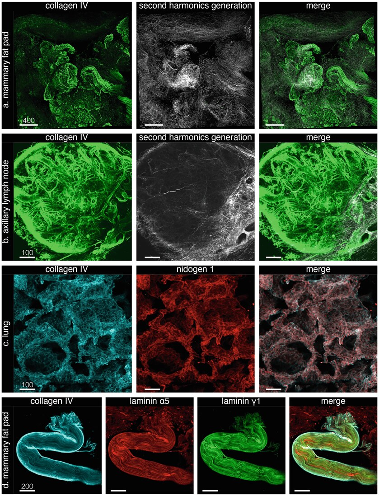
70 Alejandro E. Mayorca-Guiliani
- DOC 용액으로 하룻밤(18시간) 관류한다.
- SDS 용액으로 6–18시간 관류한다.
- 관류액을 탈이온수로 바꾸고 18시간 관류한다.
- Dumont 미세겸자와 미세 스프링 가위로 탈세포화된 조직을 회수해 보관 용액이 든 크라이오튜브에 넣는다. 이 시점에서 탠덤질량분석(MS/MS) 같은 후속 화학 분석을 위해 조직을 동결할 수도 있다. 남은 마우스 조직, 사용한 시약, 기구는 소속 동물시설 규정에 따라 폐기한다. 조직은 +4 °C에서 최대 6개월 보관할 수 있다.
3.3.1 면역염색을 위한 탈세포화 조직 준비
- 차단 용액을 준비한다. 크라이오튜브 안 각 조직 단편이 덮이도록 충분히 넣고 샘플을 로킹 테이블에 하룻밤 둔다(모든 실험에서 실온, 약 15 r.p.m.). 액체 교환 시 피펫 팁으로 조직 단편을 다치지 않게 특히 주의한다. 교환 사이 조직이 탈수되지 않도록 빠르게 진행한다.
- 1차 항체 용액과 음성 대조군 용액을 준비한다. 조직 용기에서 차단 용액을 버리고 시험 조직에는 1차 항체 용액을, 음성 대조군에는 대조군 용액을 넣는다. 샘플이 완전히 잠기도록 충분히 넣는다. 튜브에 라벨을 붙여 로킹 테이블에 하룻밤 둔다. 20–24시간 배양을 권장한다.
- 세척 용액을 준비한다. 조직 용기의 1차 항체 용액을 버리고 샘플이 완전히 잠길 만큼 세척 용액을 넣는다. 로킹 테이블에서 1시간 둔 뒤 세척 용액을 버리고 새 용액을 넣는다. 다섯 번 세척 사이클을 돌릴 때까지 반복한다.
- 2차 항체 용액을 준비한다. 조직의 세척 용액을 버리고 음성 대조군 샘플 포함 전체에 2차 항체 용액을 넣는다. 알루미늄 포일로 감싸 빛을 차단하고 로킹 테이블에 하룻밤 둔다.
- 조직 용기의 용액을 버리고 세척 용액을 넣는다. 로킹 테이블에서 1시간 둔 뒤 용액을 빼내 새 용액으로 채운다. 세 번 세척 사이클을 반복한 뒤 보관 용액으로 용기를 채운다. 조직은 +4 °C에서 최대 6개월 보관 가능하지만 형광 감쇠를 피하려면 최대한 빨리 촬영 단계로 넘어가는 것이 좋다.
ISDoT Applied to the Topographical Analysis of Tumor-Associated ECM 71
3.4 다광자/공초점 형광현미경 촬영용 탈세포화 조직 준비
- 링 끝 미세겸자로 탈세포화 조직을 글래스바닥 접시에 조심스럽게 옮긴다. 촬영하고 싶은 면이 아래를 향하도록 글래스바닥에 놓는다. 피펫으로 여분의 보관 용액 한두 방울을 조직에 더해 말라붙지 않게 한다. 조직이 액체 속에서 떠다니지 않고 글래스바닥에 붙어 있는지 확인한다.
- 깨끗이 닦은 대물렌즈 위에 침지액(여기서는 물) 한 방울을 올리고 글래스바닥 접시를 원형 프레임 마운트 홀더에 얹는다. 렌즈를 올려 물방울이 접시 바닥에 닿게 한다. 형광 광원(램프)을 켜고 샘플에 초점을 맞춘다. 촬영하고 싶은 영역으로 이동·배치한다. 레이저 영상 획득으로 넘어가기 전에 형광등은 끈다.
3.5 영상 획득
컴퓨터 제어로 전환하고 사용하는 레이저에 따라 백색광 또는 2광자 레이저 live 모드로 들어간다. 둘 다 쓴다면 2광자 레이저부터 시작한다. 형광 소광을 피하기 위해 레이저 출력을 낮춘다. 선택한 형광물질에 맞춰 검출기(하이브리드 및 PMT)를 고르고 조절한다. 동시 획득 또는 순차 획득 중 하나를 고른다. 레이저 파장, 출력, 게인, 오프셋을 조절한다. 핀홀, 픽셀 크기, 픽셀 체류 시간, 평균화, 줌을 조절한다. 음성 대조군이 검출기에서 신호를 내지 않는지 확인하는 것을 잊지 않는다. z-제어를 스크롤해 z 범위를 정하고 시작점과 끝점을 지정한다. 부피(z-stack) 안 이미지 수는 목적에 맞게 그때그때 고른다. 이미지를 획득한다. 같은 샘플을 오래 촬영할 계획이라면 보관 용액이 항상 샘플을 적시고 있고 대물렌즈의 침지액이 마르지 않는지 확인한다(주의사항 4–6 참고).
4 주의사항
- 모든 수술 절차와 샘플 보관은 무균 조건에서 해야 한다.
- 모든 용액은 매번 신선하게 준비한다.
- 3.2.2절 단계 1부터는 해부현미경 아래에서 박리한다.
- 촬영한 조직은 +4 °C에서 최대 6개월 보관할 수 있으나 시간이 지나며 형광 신호가 줄어들 수 있다.
- ISDoT 수술의 상세 영상은 참고문헌 [1]과 [5]에서 볼 수 있다.
- 3D 영상의 분석과 정량화는 이 프로토콜의 범위 밖이다.
72 Alejandro E. Mayorca-Guiliani
References
- Mayorca-Guiliani AE, Madsen CD, Cox TR, Horton ER, Venning FA, Erler JT (2017 July) ISDoT: in situ decellularization of tissues for high-resolution imaging and proteomic analysis of native extracellular matrix. Nat Med 23(7):890–898. https://doi.org/10.1038/nm.4352. Epub 2017 Jun 12. PMID: 28604702
- Crapo PM, Gilbert TW, Badylak SF (2011 Apr) An overview of tissue and whole organ decellularization processes. Biomaterials 32(12):3233–3243. https://doi.org/10.1016/j.biomaterials.2011.01.057. Epub 2011 Feb 5. PMID: 21296410; PMCID: PMC3084613
- Mayorca-Guiliani AE, Willacy O, Madsen CD, Rafaeva M, Elisabeth Heumüller S, Bock F, Sengle G, Koch M, Imhof T, Zaucke F, Wagener R, Sasaki T, Erler JT, Reuten R (2019 Dec) Decellularization and antibody staining of mouse tissues to map native extracellular matrix structures in 3D. Nat Protoc 14(12):3395–3425. https://doi.org/10.1038/s41596-019-0225-8. Epub 2019 Nov 8. Erratum in: Nat Protoc 2020 June;15(6):2140. PMID: 31705125
- Ott HC, Matthiesen TS, Goh SK, Black LD, Kren SM, Netoff TI, Taylor DA (2008 Feb) Perfusion-decellularized matrix: using nature’s platform to engineer a bioartificial heart. Nat Med 14(2):213–221. https://doi.org/10.1038/nm1684. Epub 2008 Jan 13. PMID: 18193059
- Mayorca-Guiliani AE, Rafaeva M, Willacy O, Madsen CD, Reuten R, Erler JT (2021 May 30) Decellularization of the murine cardiopulmonary complex. J Vis Exp 171. https://doi.org/10.3791/61854. PMID: 34125099
74 Özlem Şen et al.
자극은 섬유아세포와 대식세포의 증식 [2, 3], 신경모세포종과 골육종세포의 분화 [4, 5], 중간엽줄기세포의 부착과 연골형성에 유익한 효과를 낸다 [6, 7]. 반면 다형교모세포종과 유방암 등 여러 종양의 압전 자극은 세포사멸을 유도하고 세포 성장을 억제하는 것으로 입증되었다 [8, 9]. 압전 자극은 자극 파라미터에 따라 대식세포의 염증성(M1) 또는 항염증성 표현형(M2)을 활성화함으로써 면역반응을 조절하기도 한다 [10, 11]. 여러 연구에서 압전 자극 후 공통적으로 관찰되는 효과는 세포골격, 특히 구상 액틴(g-actin)과 섬유상 액틴(f-actin)의 비율 변화다 [12]. 골격의 기본 구조는 세포 모양을 유지하고 세포 이동과 외부 신호 대응 능력 같은 기본적 동적 세포 기능을 조절하는 세 가지 섬유 요소(액틴, 미세소관, 중간섬유)로 이루어진다 [13]. 특히 f-actin은 세포 형태 유지와 막 돌출(lamellipodia) 형성에 관여하여 내포작, 세포질분열, 부착, 이동에서 중요한 역할을 한다 [13]. f-actin이 세포 선단부에 모이는 것이 세포 이동에 중요하므로 f-/g-actin 비율은 특정 처치 후 세포 운동성과 이주 능력의 변화, 특히 침습성이 강한 종양에서 유용한 정보를 준다. 비율이 낮을수록 인접 영역으로 이동하려는 경향이 약하다. 우리는 최근 연구에서 폴리(불소비닐리덴-트리플루오로에틸렌)(P(VDF-TrFE)) 기반 고분자 압전 나노입자로 다형교모세포종 모델(T98G 세포)을 처리하면 in vitro에서
Cell Cytoskeleton Modifications upon Piezo-Stimulation 75
NADPH 산화효소 활성에 영향을 주는 것 [16], 자연살해세포 활성화에 역할이 있다는 것 [17]도 보고했다. 게다가 압전 자극은 면역세포 활성화에도 영향을 미친다. 예를 들어 PVDF 막 위 초음파 자극으로 대식세포의 M1 상태가 활성화되었다 [10]. 세포골격이 여러 세포 기능과 종양세포의 이동·침습 능력에 결정적이라는 점에서, 이 장에서는 압전 자극 후 f-/g-actin 비율 분석과 이동·침습 분석을 수행하는 방법을 우리 실험실에서 통상 쓰는 방법론에 따라 상세히 설명한다. 설명하는 검사들은 P(VDF-TrFE) 나노입자의 초음파(US) 활성화로 자극한 교모세포종 세포 실험에 근거하지만, 다재다능해서 다른 세포 유형이나 다른 종류의 압전 자극에도 쉽게 옮겨 쓸 수 있다.
2 재료
별도 명시가 없는 한 모든 용액은 실온에서 MilliQ 물로 준비했다.
2.1 입자 분산액 준비
- Nutlin-3a(Nut, Sigma-Aldrich, SML0580). -20 °C 보관.
- PNPs: apolipoprotein E 유래 펩타이드(GenScript, 서열 CWGLRKLRKRLLR)로 기능화된 P(VDF-TrFE)(45:65, Piezotech) 나노입자(주의사항 1 참고). 4 °C 보관.
- Nut-PNPs: nutlin-3a를 적재한 PNPs. 4 °C 보관.
2.2 세포 배양
- 교모세포종 세포주(T98G, ATCC® CRL-1690™).
- 10% (v/v) 태아우혈청(Gibco, 16000044), 페니실린–스트렙토마이신 100 U/mL(Gibco, 15140122), 2 mM L-글루타민(Gibco, 25030081)을 보충한 Dulbecco’s modified Eagle’s medium(Sigma-Aldrich, D6429)(주의사항 2 참고). 4 °C 보관.
- 염화칼슘(Ca²⁺)과 염화마그네슘(Mg²⁺)이 없는 Dulbecco’s phosphate-buffered saline(PBS, Sigma-Aldrich, D8537).
- 트립신/EDTA(Gibco, 25200056). 4 °C 보관.
- 에탄올.
- 블리치.
- 세포배양 플라스크(T75)와 플레이트(96웰, 12웰).
- 5-, 10-, 25-mL 혈청학적 피펫.
- 멸균 15-mL 원추튜브.
76 Özlem Şen et al.
- 혈구계산판.
- 글래스 커버글라스.
- 1.5–2-mL 플라스틱 튜브.
- 10-, 200-, 1000-μL 피펫과 멸균 팁.
- 폐기물 용기.
2.3 스크래치/이동 분석
- 배양 인서트 2웰 시스템(Ibidi, 80209).
- 12웰 플레이트.
- 멸균 트위저.
- Ca²⁺과 Mg²⁺이 있는 PBS(Sigma-Aldrich, D8662).
- Calcein(Invitrogen, C3099). -20 °C 보관.
2.4 f-/g-Actin 비율
- 4% (w/v) 파라포름알데히드(PFA, Sigma-Aldrich, 158127) 용액: PBS 80 mL에 PFA 4 g을 넣고 환기후드 안 교반판에서 60 °C로 가열한다. 1 M 수산화나트륨(NaOH, Sigma-Aldrich, 567530) 1 mL를 넣고 PFA가 녹을 때까지 부드럽게 저어준다. 1 M 염산(HCl, Sigma Aldrich, 320331)으로 pH를 7.4로 맞춘 뒤 PBS로 최종 부피를 100 mL로 맞춘다(주의사항 3 참고).
- 배양 인서트 2웰 시스템(Ibidi, 80209).
- 12웰 플레이트.
- 멸균 트위저.
- Ca²⁺, Mg²⁺이 있는 PBS.
- Triton X-100(Sigma-Aldrich, T8787).
- TRITC-phalloidin(Sigma-Aldrich, P1951). -20 °C 보관.
- Deoxyribonuclease I conjugate(Invitrogen, D12371). -20 °C 보관.
- Hoechst 33342(Invitrogen, H1399). -20 °C 보관.
2.5 Trans-Well 침습 분석
- 세포 침습 챔버(24웰, 8 μm).
- 기저막 매트릭스(collagen I; Abcam, ab235887). -20 °C 보관.
- 세척 완충액. -20 °C 보관.
- 세포 분리 용액. -20 °C 보관.
- 대조군 침습 유도제. -20 °C 보관.
- 세포 염료. -20 °C 보관.
- Tris–HCl 완충액(Invitrogen, 15567027).
- 면봉.
- 96웰 투명바닥 백색 플레이트.
Cell Cytoskeleton Modifications upon Piezo-Stimulation 77
2.6 장비
- 세포배양 후드(MSC-Advantage™ Class II Biological Safety Cabinets, Thermo Fisher Scientific).
- Epifluorescence 현미경(Eclipse Ti, Nikon).
- 배양기(Heracell™ 150i, Thermo Fisher Scientific)와 CO₂ 공급기(Nippon Gases, Italy).
- 원심분리기(Hettich Universal 320/320R centrifuge, Sigma Aldrich).
- 수욕조(Julabo TW12, Sigma Aldrich).
- 평면파 변환기 모듈(PW-1.0-6 mm, 직경 6-mm 팁, 1 MHz)을 장착한 Sonitron GTS Sonoporation System(ST-GTS, Nepagene).
- 공초점 형광현미경(C2 system Nikon).
- 형광 플레이트 리더(VICTOR X3, PerkinElmer).
2.7 영상 및 통계 분석
- “Wound Healing” 플러그인이 있는 ImageJ 소프트웨어 (https://imagej.nih.gov/ij/plugins/index.html).
- NIS-Elements 소프트웨어(Nikon).
- R 소프트웨어(https://www.r-project.org/)를 사용한 ANOVA 모수검정 및 Tukey’s HSD 사후검정.
3 방법
3.1 입자 분산액 준비
- 디메틸설폭사이드(DMSO)에 Nut 5 mM 원액을 만든다. 4 °C 보관.
- 출력 8 W로 PNPs와 Nut-PNPs를 2분간 초음파 처리한다.
- 완전 배지에서 PNPs와 Nut-PNPs를 500 μg/mL로 준비한다.
3.2 세포 파종
모든 용액은 수욕조에서 37 °C로 데워야 한다. 시작 전 작업 영역과 모든 시약을 70% (v/v) 에탄올로 철저히 소독한다(주의사항 4 참고). 일상 청소 외에 작업 중에도, 특히 액체가 흘렀을 때 작업면을 70% (v/v) 에탄올로 닦는다. 1. T75 플라스크에 완전 배지 12 mL로 T98G 세포를 37 °C, 5% CO₂에서 배양한다. 2일마다 배지를 갈아준다. 2. 배양이 90% confluent에 도달하면 분주한다. 3. 배양 플라스크에서 배지를 버린다. 4. Ca²⁺, Mg²⁺ 없는 PBS 5 mL로 세포를 씻는다(주의사항 5 참고). 5. 배양 플라스크에서 PBS를 제거한다.
78 Özlem Şen et al.
- 트립신/EDTA 3 mL를 플라스크에 넣어 세포층을 덮는다.
- 37 °C에서 5분간 배양한다(주의사항 6 참고).
- 위상차현미경으로 세포가 떨어졌는지 확인한다(주의사항 7 참고).
- 트립신/EDTA 작용을 멈추려고 완전 배지 6 mL(떼어내는 데 쓴 트립신/EDTA의 두 배 부피)를 넣는다.
- 세포를 15-mL 원추튜브로 옮기고 600 g으로 5분간 원심분리한다(주의사항 8 참고).
- 상층액을 버린다.
- 완전 배지 1 mL로 세포 펠릿을 재현탁한다.
- 세포 계수기(혈구계산판)로 총 세포 수를 구한다.
- 이후 각 프로토콜에 필요한 파종 밀도로 세포 현탁액을 희석한다.
3.3 이동 분석
- 멸균 트위저로 배양 인서트 2웰 시스템(Ibidi, 80209)을 12웰 플레이트에 놓는다.
- 웰마다 세포 현탁액 70 μL를 파종한다(5∙10⁴ cells/cm² 파종 밀도)(주의사항 9 참고).
- 세포 부착을 위해 37 °C에서 24시간 배양한다.
- 배지를 버리고 대조군용 순수 완전 배지, 21.5 μM Nut, 500 μg/mL PNPs, 또는 500 μg/mL Nut-PNPs를 넣어 24시간 둔다.
- 배양 후 멸균 트위저로 모서리를 집어 인서트를 부드럽게 제거한다(주의사항 10 참고).
- Ca²⁺, Mg²⁺이 있는 PBS로 세포를 헹궈 비부착 세포나 세포 찌꺼기를 제거한다.
- Ca²⁺, Mg²⁺이 있는 PBS로 준비한 1 μM calcein으로 37 °C에서 15분간 염색한다.
- Ca²⁺, Mg²⁺이 있는 PBS로 세포를 씻는다.
- 4× 대물렌즈로 세포 사이 gap을 촬영한다(0시간).
- 1 W/cm² 강도, 1 MHz 주파수의 초음파로 하루 1시간씩 2일간 자극한다. US 프로브 팁을 배양액과 접촉하게 플레이트 위에 놓되 세포에서 5 mm 거리를 둔다.
- 4× 대물렌즈로 세포 사이 gap을 촬영한다(24시간). 대표 이미지는 그림 1 참고.
- ImageJ 소프트웨어의 “Wound Healing” 플러그인으로 이미지를 분석한다.
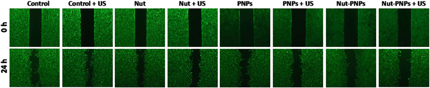
Cell Cytoskeleton Modifications upon Piezo-Stimulation 79
그림 1 이동 분석 중 t = 0 h와 t = 24 h에서 calcein으로 염색한 T98G 세포의 대표 형광 이미지. (Elsevier 허락 하에 [9]에서 재인용)
3.4 Actin 골격 재배열
- 3.3절에서 설명한 대로 세포를 파종하고 배양물을 처리한다.
- 같은 파라미터로 US로 배양물을 자극한다.
- 처리가 끝나면 4% PFA로 4 °C에서 20분간 고정한다.
- Ca²⁺, Mg²⁺이 있는 PBS로 헹군 뒤 실온에서 0.1% (v/v) Triton X-100 용액으로 15분간 투과화한다.
- 용액을 제거하고 TRITC-phalloidin(1:200, v/v), deoxyribonuclease I conjugate(0.3 μM), Hoechst(1:1000, v/v)로 37 °C에서 45분간 f-actin, g-actin, 핵을 염색한다.
- Ca²⁺, Mg²⁺이 있는 PBS로 세포를 씻는다.
- 공초점 형광현미경으로 scratch 영역의 이미지를 얻는다.
- NIS-Elements 소프트웨어로 적색/녹색 신호 비율에서 f-/g-actin 신호 비율을 분석한다(그림 2).
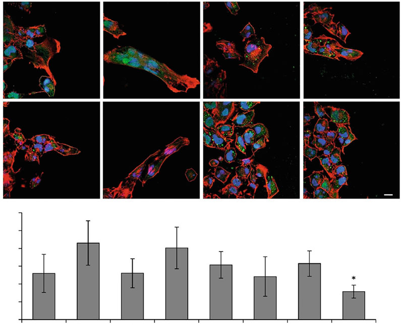
3.5 침습 분석
모든 시약은 사용 직전 실온에 맞추고 침전이 생기지 않게 살살 흔든다. 필터에 collagen I 100 μL를 넣어 막을 만든다. 1. 37 °C에서 2시간 배양한다(주의사항 11 참고). 2. 상부 챔버의 각 웰에 완전 배지 + 21.5 μM Nut, 500 μg/mL PNPs, 또는 500 μg/mL Nut-PNPs에 현탁한 세포 현탁액(챔버당 2.3∙10⁵ T98G 세포) 200 μL를 넣는다. 3. 무균 조건에서 상부 챔버를 분리하고 하부 챔버에 배양액 600 μL를 넣는다. 4. 상부와 하부 챔버를 다시 결합한다(주의사항 12 참고). 5. 12시간 배양 후 하부 챔버 배지를 대조군 침습 유도 배지(1:10, v/v)로 교체한다. 6. 앞서 설명한 대로 US로 배양물을 자극한다.
80 Özlem Şen et al.
Control / Nut / PNPs / Nut-PNPs, ± US — f-actin/g-actin/핵; SU o/w, SU w; 3.0–0.0; Control + US, Nut + US, PNPs + US, Nut-PNPs + US — f-/g-actin 비율; a) 10 μm, b)
그림 2 (a) scratch 영역의 T98G 세포 대표 공초점 이미지(녹색: g-actin, 적색: f-actin, 청색: 핵). (b) 세포 이동 중 f-/g-actin 비율 정량화(*p < 0.05). (Elsevier 허락 하에 [9]에서 재인용)
- 배양 시간이 끝나면 필터와 기저막 매트릭스를 건드리지 않고 상부 챔버의 배지를 버린다.
- 면봉으로 닦아 침습하지 못한 세포를 상부 챔버에서 제거한다.
- 상부 챔버를 분리해 옆에 둔다.
- 플레이트를 600 g으로 5분간 원심분리한다.
- 하부 챔버의 배지를 버리고 세척 완충액 500 μL로 세포를 헹군다.
- 세포 염료 50 μL(Ca²⁺, Mg²⁺이 있는 PBS에 1:250 희석)를 준비하고 세포 분리 완충액 450 μL와 섞는다(웰 하나 분량).
- 준비한 염료 용액 500 μL를 각 하부 웰에 넣는다.
- 상부 챔버를 하부 챔버에 얹고 플레이트를 37 °C에서 30분간 배양한다(주의사항 13 참고).
Cell Cytoskeleton Modifications upon Piezo-Stimulation 81
- 배양 후 상부 챔버를 제거하고 용액 100 μL를 96웰 플레이트로 옮긴다.
- 형광 플레이트 리더(VICTOR X3, PerkinElmer)로 형광을 읽는다(λ_ex 485 nm, λ_em 530 nm).
- 표준곡선을 이용해 형광값을 세포 수로 환산한다.
- 표준곡선:
- 세척 완충액(1:1, v/v)에서 T98G 세포 연속 희석을 만들어 총 부피 100 μL에서 표준곡선을 생성한다(세포 수 = 12500, 6250, 3125, 1562, 781, 390, 195, 98, 49). (b) 세척 완충액 100 μL를 blank로 사용한다. (c) 세포 형광 측정은 앞서 설명한 것과 같은 절차를 따른다(주의사항 14 참고).
4 주의사항
- 입자는 우리 그룹의 선행 연구 [9]에서 설명한 방법으로 합성하고 표면 기능화했다.
- 준비한 배지는 사용 전 여과해도 된다.
- 입자를 제거하기 위해 용액을 0.45-μm 막 필터로 여과했다. PFA 용액은 사용 직전 신선하게 준비하거나 소분해 -20 °C에 수개월 보관할 수 있다. 반복 동결·해동은 피한다.
- 세포배양 후드 안 표면은 자외선으로 멸균할 수 있다.
- PBS 용액은 세포층이 다치지 않도록 플라스크 바닥에 조심스럽게 넣는다.
- 배양 시간은 사용하는 세포주에 따라 달라질 수 있음을 유념한다.
- 플라스크를 살살 두드리면 세포 박리가 잘 된다.
- 원심분리 속도와 시간도 세포주에 따라 달라질 수 있음을 유념한다.
- 인서트를 흔들지 않는다. 세포 분포가 고르지 않게 될 수 있다.
- 현미경으로 confluency를 확인한다. 100%에 이르지 않았으면 12–24시간 더 배양하면서 수시로 확인한다.
- 플레이트를 4 °C에서 하룻밤 배양해도 된다.
- 상부와 하부 챔버 사이에 기포가 끼지 않게 한다.
- 플레이트 옆면을 살살 두드리면 분리가 잘 된다.
- 표준곡선에는 3반복을 사용한다.
5 요약
이 장에서는 압전 자극이 세포 골격과 이동·침습 능력에 미치는 영향을 분석할 때 수행할 수 있는 세 가지 단순한 방법론을 소개했다. 이 검사들은 종양세포에 맞춰 최적화되었지만 다른 세포 유형으로도 쉽게 전용할 수 있다. 예컨대 과학적으로 중요한 만큼, 압전 자극이 면역세포에 미치는 영향을 평가할 때 매우 유용할 것으로 기대한다.
References
- Cafarelli A, Marino A, Vannozzi L et al (2021) Piezoelectric nanomaterials activated by ultrasound: the pathway from discovery to future clinical adoption. ACS Nano 15:11066–11086
- Cafarelli A, Verbeni A, Poliziani A et al (2017) Tuning acoustic and mechanical properties of materials for ultrasound phantoms and smart substrates for cell cultures. Acta Biomater 49:368–378
- Murillo G, Blanquer A, Vargas-Estevez C et al (2017) Electromechanical nanogenerator–cell interaction modulates cell activity. Adv Mater 29:1605048
- Genchi GG, Sinibaldi E, Ceseracciu L et al (2018) Ultrasound-activated piezoelectric P (VDF-TrFE)/boron nitride nanotube composite films promote differentiation of human SaOS-2 osteoblast-like cells. Nanomedicine (Nanotechnol Biol Med) 14:2421–2432
- Montorsi M, Genchi GG, De Pasquale D et al (2022) Design, fabrication, and characterization of a multimodal reconfigurable bioreactor for bone tissue engineering. Biotechnol Bioeng 119:1965–1979
- Chu Y-C, Lim J, Hwang W-H (2020) Piezoelectric stimulation by ultrasound facilitates chondrogenesis of mesenchymal stem cells. Cit J Acoust Soc Am 148:58
- Xue G, Zhang Y, Xie T et al (2021) Cell adhesion-mediated piezoelectric self-stimulation on polydopamine-modified poly (vinylidene fluoride) membranes. ACS Appl Mater Interfaces 13:17361–17371
- Marino A, Battaglini M, De Pasquale D et al (2018) Ultrasound-activated piezoelectric nanoparticles inhibit proliferation of breast cancer cells. Sci Rep 8:6257
- Pucci C, Marino A, Şen Ö et al (2022) Ultrasound-responsive nutlin-loaded nanoparticles for combined chemotherapy and piezoelectric treatment of glioblastoma cells. Acta Biomater 139:218–236
- Kong Y, Liu F, Ma B et al (2021) Wireless localized electrical stimulation generated by an ultrasound-driven piezoelectric discharge regulates proinflammatory macrophage polarization. Adv Sci 8:2100962
- Zhu P, Lai C, Cheng M et al (2022) Differently charged P (VDF-TrFE) membranes influence osteogenesis through differential immunomodulatory function of macrophages. Front Mater 8:611
- Ricotti L, Das Neves RP, Ciofani G et al (2014) Boron nitride nanotube-mediated stimulation modulates F/G-actin ratio and mechanical properties of human dermal fibroblasts. J Nanopart Res 16:2247
- Wickramarachchi D, Theofilopoulos AN, Kono DH (2010) Immune pathology associated with altered actin cytoskeleton regulation. Autoimmunity 43:64–75
- Mostowy S, Shenoy AR (2015) The cytoskeleton in cell-autonomous immunity: structural determinants of host defence. Nat Rev Immunol 15:559–573
- Zalavary S, Grenegård M, Stendahl O et al (1996) Platelets enhance Fcγ receptor-mediated phagocytosis and respiratory burst in neutrophils: the role of purinergic modulation and actin polymerization. J Leukoc Biol 60:58–68
- Rasmussen I, Pedersen LH, Byg L et al (2010) Effects of F/G-actin ratio and actin turn-over rate on NADPH oxidase activity in microglia. BMC Immunol 11:1–15
- Ben-Shmuel A, Sabag B, Biber G et al (2021) The role of the cytoskeleton in regulating the natural killer cell immune response in health and disease: from signaling dynamics to function. Front Cell Dev Biol 9:95
86 Naym Blal and Daniela Guarnieri
직접 암세포를 죽이는 다른 화학요법제보다 건강한 조직에 덜 해롭다는 장점도 있다 [7, 8]. 이런 장점에도 불구하고 면역요법은 성격이 다른 여러 난제에 부딪힌다. 예컨대 모든 환자에게 효과가 있는 것이 아니어서 반응 예측이 어렵다 [9]. 또 일부 환자에게 자가면역반응을 일으켜 결국 건강한 조직이 손상될 수 있다 [10]. 면역요약 약물을 더 안전하고 통제된 방식으로 투여하는 새 접근법을 찾으면 이 요법의 효능을 더 많은 환자에게 확장할 수 있다. 구체적으로 새로운 전달(delivery) 기술 개발은 비표적(off-target) 효과를 줄이며 표적인 종양으로 약물 전달을 가능하게 한다. 최근 활발히 연구되는 면역요법 약물 전달 플랫폼으로는 스캐폴드, 임플란트, 세포 기반 플랫폼, 생체재료, 나노입자(NPs) 등이 있다 [11]. 특히 NPs는 나노 크기 덕분에—폴리에틸렌글리콜(PEG) 사슬과 결합하면—간관계계(RES)를 피해 표적 조직에서 우선적으로 약물을 방출할 수 있어 고형종양 암치료에 매우 적합하다 [12]. 나아가 약물 전달 효율을 높이려면 종양 미세환경에서 오는 특정 자극에 반응해 약물을 방출하도록 약물 적재 NP를 설계할 수 있다 [13]. pH [14], 환원 조건 [15], 과발현된 기질금속단백분해효소(MMPs) [16]처럼 종양의 생화학적 성질에 연관된 자극은 많고, 이들이 표적 방출을 활성화할 수 있다. 이 장에서는 자극 반응형 나노입자 약물 전달 시스템을 만드는 방법과 그 물리화학적 성질을 특성화하고 in vitro 치료 효능을 평가하는 프로토콜을 소개한다. 이를 위해 nanoprecipitation 방법으로 폴리(d,l-lactic-co-glycolic acid)(PLGA)–block–PEG 공중합체(PELGA) 기반의 생분해성 NP를 형성한다. 이 방법은 재현성이 높고
Nanoparticles for Tumor Targeting 87
효소에 민감하며 종양 스페로이드 내부에서 약물 방출을 그에 맞게 조절한다. 아울러 이 장은 NM 기반 시스템의 활용 가능성을 부각시켜 암 면역요법 전략을 강화·개선하는 데 도움을 준다.
2 재료
2.1 공중합체와 접합체
이 작업에 쓰는 NP를 준비하려면 다음 시약이 필요하다:
- PELGA 공중합체 — poly(d,l-lactide-co-glycolide)(PLGA)(Resomer RG502H, Mw 12,000 Da, Boehringer, Germany)와 폴리에틸렌글리콜(PEG)(Mw 1500 Da, Sigma–Aldrich, USA)을 문헌의 프로토콜에 따라 커플링 반응으로 합성한 것 [19]
- Doxorubicin(Dox)(doxorubicin hydrochloride, purity >99%, Discovery Fine Chemicals, UK)(주의사항 1 참고)
- MMP2 감수성 펩타이드(Fmoc-Gly-Pro-Leu-Gly-Ile-Ala-Gly-Gln-COOH) — 표준 고상 Fmoc 법으로 합성 20. 펩타이드 합성용 아미노산은 IRIS Biotech GmbH, Germany에서 구입
- Dox를 PLGA 사슬에 공유결합해 PLGA–Dox 접합체를 만들거나, MMP2 감수성 펩타이드에 결합해 종양활성형 프로드럭(TAP)을 만든 뒤 PLGA에 붙여 PLGA–TAP을 만든다. 절차는 선행 문헌 [17] 참고
- 이 공중합체와 접합체들을 조합해 그림 1처럼 PELGA–Dox 및 PELGA–TAP 나노입자를 준비한다
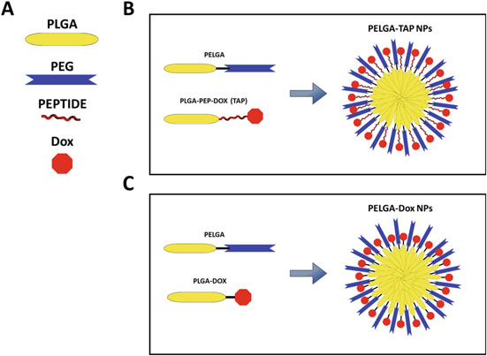
2.2 세포 배양 시약
- NP에 대한 세포 반응을 시험하기 위해 사람 교종 세포주(U87, ATCC)와 사람 진피섬유아세포(HDF, ECACC)를 각각 종양 조직과 정상 조직 모델로 사용한다(주의사항 3 참고)
- U87은 10% 태아우혈청(FBS)(Gibco), 페니실린 100 U/mL, 스트렙토마이신 100 mg/mL(Euroclone)를 보충한 완전 Eagle’s minimal essential medium(EMEM)(Sigma-Aldrich, USA)에서 배양한다
- HDF는 20% FBS, 페니실린 100 U/mL, 스트렙토마이신 100 mg/mL, 비필수 아미노산(Euroclone)을 보충한 EMEM에서 배양한다
- 세포는 37 °C, 5% CO₂ 가습 조건에서 배양한다
88 Naym Blal and Daniela Guarnieri
그림 1 각 구성 요소(PLGA, PEG, MMP2 감수성 펩타이드[peptide], doxorubicin[dox])와 이들을 조합해 나노입자 준비의 빌딩블록으로 쓰는 여러 공중합체를 합성하는 모식도 (a). MMP2 감수성 PELGA–TAP NPs (b)와 PELGA–Dox NPs (c)
2.3 MMP2 절단 분석
- p-aminophenylmercuric acetate(APMA)(Sigma-Aldrich, USA) 3.9 mg을 0.1 M NaOH 1 mL에 녹여 100 μM APMA 용액을 만든다.
- 이 용액을 50 mM Tris–HCl 완충액(pH 7.5)(Sigma-Aldrich, USA) 99 mL로 희석하고 pH를 7.2로 맞춘다.
- 재조합 사람 matrix metalloproteinase 2(MMP2)(Peprotech Inc., USA)를 MMP2 완충액(50 mM HEPES, 200 mM NaCl, 10 mM CaCl₂, 1 mM ZnCl₂, pH 7.4)(Sigma-Aldrich, USA)에 녹여 20 nM MMP2 용액을 준비한다.
- 투석 백(MWCO 6000–8000 Da)은 Spectrum Laboratories, Inc.(the Netherlands)에서 구입했다.
2.4 나노입자 세포독성
PELGA NP의 생체적합성은 PELGA 공중합체와 로다민 접합 PLGA(Rhodamine B, Sigma-Aldrich, USA)를 조합해 만든 로다민 표지 PELGA NP로 여러 분석을 통해 평가한다.
2.4.1 Alamar Blue 분석
- U87과 HDF 세포배양이 70–80% confluent일 때 이 분석을 수행한다.
- Alamar Blue 시약(Invitrogen)을 phenol red 없는 DMEM에 최종 농도 10% (v/v)가 되게 희석한다.
- 플레이트 리더(Wallac Victor 1420 Victor2™, Perkinelemer, USA)로 흡광도를 측정한다.
Nanoparticles for Tumor Targeting 89
2.4.2 공초점현미경 촬영
- 파라포름알데히드 가루를 인산완충식염수(PBS)(Sigma-Aldrich, USA)에 약 100 °C에서 저으며 녹여 4% 파라포름알데히드 용액을 만든다. 용액이 투명해지는지 확인한 뒤 15-mL 원추튜브에 4–5 mL씩 소분해 -20 °C 보관한다(주의사항 4 참고).
- Triton X-100(Sigma-Aldrich, USA)을 PBS에 저으며 희석해 0.1% Triton X-100을 만든다(주의사항 5 참고).
- 4′,6-diamidino-2-phenylindole dihydrochloride(DAPI)(Sigma-Aldrich, USA)를 PBS에 1:10000으로 희석한 것으로 샘플을 처리해 세포핵을 표지한다.
- 공초점현미경(Leica TCS SP5 MP)으로 관찰한다.
2.4.3 NP 세포내섭취 속도 정량화
- Triton X-100 원액을 PBS에 희석해 1% Triton X-100 용해 완충액을 만든다.
- 분광형광계(Wallac 1420 Victor2™, PerkinElmer, USA)로 형광을 정량한다.
3 방법
3.1 NP 준비
- PELGA–TAP NP를 만들려면 PELGA 1 mg과 PLGA–TAP 1 mg을 아세톤 500 μL에 녹이고 용액을 섞는다(주의사항 6 참고).
- 용액을 10-mL 주사기로 옮기고 주사기를 주사기 펌프(Harvard Apparatus)에 장착한다.
- 자기교반(600 rpm) 중인 증류수 12.5 mL(Millipore, USA에서 구입한 18 MΩ 저항)가 든 비커에 주사기 펌프로 용액을 방울방울 떨어뜨린다(6 mL/h)(주의사항 7 참고)(그림 2).
- 유기용매를 3시간 증발시켜 NP 분산액을 얻는다(주의사항 8 참고).
- NP 분산액을 0.22-μm 막 필터로 여과해 멸균한다(주의사항 9 참고).
- Amicon Ultra4 10-kDa 원심튜브(Millipore)로 NP 현탁액 부피를 1 mL까지 줄여 최종 NP 농도 2 mg/mL를 얻는다(주의사항 10 참고).
- 음성 대조군으로 쓰는 PELGA–Dox NP(MMP2 감수성 펩타이드 없음)는 같은 프로토콜의 1–6 단계를 따르되, PLGA–Dox 1 mg과 PELGA 1 mg을 아세톤 500 μL에 녹이는 것부터 시작한다.
- NP의 예비 생물학적 특성화를 위해 위 절차대로 로다민 표지 PELGA(PELGA–rhod) NP를 준비한다.
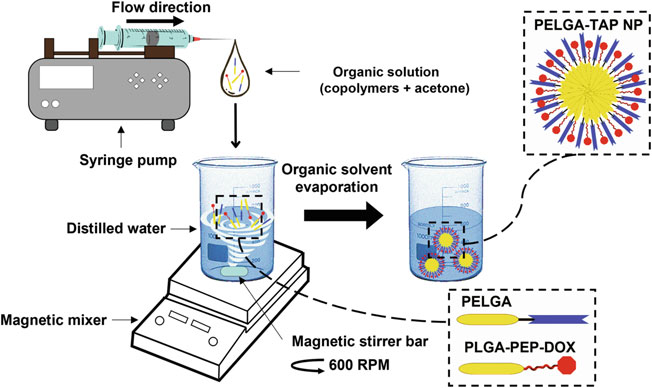
90 Naym Blal and Daniela Guarnieri
그림 2 nanoprecipitation 방법에 따른 NP 준비 모식도
표 1 PELGA–TAP 및 PELGA–Dox NP의 크기와 ζ-전위(다분산지수[PDI] < 0.2). Dox/NP 비는 PELGA–TAP이 20 μg/mg, PELGA–Dox가 21.5 μg/mg. 데이터는 mean ± SD로 표기. p < 0.05를 통계적 유의로 간주
3.2 PELGA NP의 물리화학적 특성화
위 절차로 얻은 NP는 동적광산란(DLS)으로 평균 크기, 크기 분포, ζ-전위를 측정해 특성화한다. NP 형태는 주사전자현미경(SEM)과 초저온 투과전자현미경(Cryo-TEM)으로 분석한다.
3.2.1 DLS
- ZetaSizer Nano ZS(Malvern Instruments, UK)로 NP의 평균 크기, 크기 분포, ζ-전위를 측정한다. 평균 크기와 ζ-전위는 표 1에 정리했다.
- 물 속 0.1 mg/mL NP 현탁액으로 분석한다(주의사항 11 참고).
- 시간에 따른 NP 안정성을 평가하려면 NP 제조 후 1, 7, 14일째 DLS 측정을 반복한다.
- 측정 사이에는 NP를 4 °C에 보관한다.
Nanoparticles for Tumor Targeting 91
그림 3 PELGA-TAP NP의 SEM 사진. 삽입 그림은 고배율 PELGA–Dox NP의 Cryo-TEM 사진
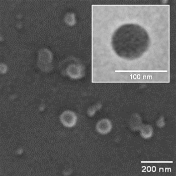
3.2.2 SEM
- NP 현탁액 50 μL를 표준 SEM pin stub에 장착한 커버글라스 위에 올린다.
- HR208 Cressington sputter coater로 금 스퍼터링(두께 3-nm)한다.
- FESEM ULTRAPLUS(Zeiss)로 20 kV, SE2 검출기, 15.9-mm 작업거리 조건에서 샘플을 분석한다(그림 3).
3.2.3 Cryo-TEM
- FEI Vitrobot Mk IV로 샘플을 유리화(vitrify)한다(주의사항 12 참고).
- 샘플 3 μL를 200 mesh Quantifoil 그리드에 올린다.
- 필터지로 여분의 샘플을 흡수한다(주의사항 13 참고).
- 그리드를 액체 프로판에 담근다(주의사항 14 참고).
- TEM TECNAI G2 장비로 200 kV, low-dose 모드, Eagle 2HS 카메라로 촬영한다(그림 3).
3.3 PELGA NP의 생체적합성
NP를 물리화학적으로 특성화한 뒤에는 NP 제조 중 쓴 용매나 다른 시약의 잔류물로 인한 독성을 배제하기 위해 생체적합성을 평가한다. 이를 위해 PLGA를 로다민에 접합해 얻은 형광 NP를 사용한다. PELGA–rhod를 U87과 HDF 세포에 대해 2차원(2D) 표준 세포배양에서 최종 농도 0.05 mg/mL로 지정 시점별로 시험한다. NP 세포독성은 Alamar Blue 분석으로, NP 세포내섭취는 공초점현미경과 분광형광 분석으로 평가한다.
3.3.1 Alamar Blue 분석
- 96웰 마이크로플레이트에 웰당 1 × 10⁴ 세포를 최종 배양액 부피 100 μL로 파종한다.
- 마이크로플레이트를 37 °C, 5% CO₂에서 24시간 배양한다.
92 Naym Blal and Daniela Guarnieri
그림 4 PELGA NPs와 24시간 배양한 U87(파랑)과 HDF(빨강) 세포주의 Alamar Blue 분석 세포 생존율 백분율 (a). 데이터는 무처치 세포 기준 정규화한 생존 세포 백분율의 mean ± standard deviation(SD)으로 표기. U87 세포 내 PELGA–rhod NPs(적색)의 세포내 분포 대표 이미지. DAPI 염색은 세포핵(청색)을 나타냄 (b)
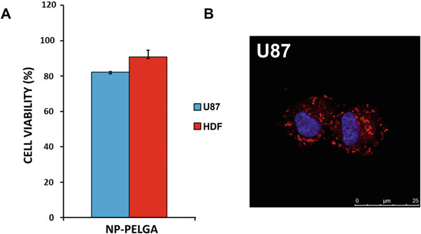
- NP 세포독성을 평가하기 위해 최종 부피 100 μL에서 PELGA–rhod NPs 50 μg/mL가 든 배양액으로 37 °C, 24시간 처리한다.
- 배양 후 배지를 제거하고 PBS 100 μL로 세포를 씻는다.
- Alamar Blue 시약 10%를 포함한 phenol red 없는 배양액 100 μL를 넣는다.
- 37 °C에서 4시간 배양한다.
- 570 nm와 600 nm에서 흡광도를 측정한다.
- 데이터는 무처치 세포 기준으로 정규화한 생존 세포 백분율로 표기한다(그림 4a).
3.3.2 공초점현미경 촬영
- 24웰 플레이트에서 12-mm 글래스 커버글라스 위에 웰당 배지 1 mL로 5 × 10⁴ 세포를 파종한다.
- 파종 24시간 뒤 PELGA–rhod NPs 50 μg/mL가 든 신선 배지 1 mL로 교체한다.
- 37 °C에서 24시간 배양한다.
- 배양이 끝나면 배지를 제거하고 세포내섭취되지 않은 NP를 제거하기 위해 PBS로 두 번 헹군다.
- 실온에서 4% 파라포름알데히드로 20분간 고정한다.
- 실온에서 DAPI로 10분간 핵을 염색한다.
- PBS로 두 번, ddH₂O로 한 번 헹군다.
Nanoparticles for Tumor Targeting 93
그림 5 U87 (a) 및 HDF (b) 세포에서의 PELGA–rhod NPs 섭취 속도. 데이터는 mean ± SD
- 글래스 커버글라스를 슬라이드에 장착한다.
- 63× oil-immersion 대물렌즈로 공초점현미경에서 관찰한다.
- 해상도 1024 × 1024 픽셀로 공초점현미경 이미지를 얻는다(그림 4b).
3.3.3 섭취 정량 분석
- 24웰 플레이트에 웰당 배지 1 mL로 5 × 10⁴ 세포를 파종한다.
- 파종 24시간 뒤 PELGA–rhod NPs 50 μg/mL가 든 신선 배지 1 mL로 교체한다.
- 37 °C에서 최대 24시간까지 여러 시점별로 배양한다.
- 각 시점에 배지를 제거하고 PBS로 두 번 헹군다.
- PBS 속 1% Triton X-100으로 세포를 용해한다.
- 분광형광계로 λ_ex = 543 nm에서 세포용해물의 형광을 측정한다.
- 형광 강도 데이터를 PELGA–rhod NPs 검량선과 보간하여 세포내섭취된 NP를 정량한다(그림 5).
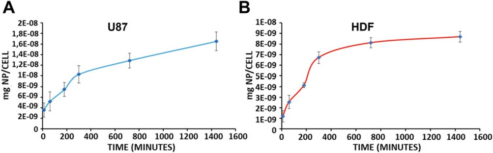
3.4 MMP2 매개 약물 방출 분석
Dox 방출은 선행 문헌 [20]처럼 MMP2 완충액에서 수행하는 MMP2 절단 분석으로 in vitro 평가한다. 1. MMP2 효소 활성화를 위해 2 mL의 20 nM MMP2에 100 μM APMA 용액 1.8 μL를 넣고 37 °C에서 3시간 배양한다. 2. MMP2 활성화 후 50-mL 원심튜브에 2.3절 항목 3에서 만든 MMP2 완충액 12.5 mL를 넣는다. 3. 투석 튜브(MWCO 6000–8000 Da)에 PELGA–TAP 또는 PELGA–Dox 현탁액 500 μL를 넣되, 활성화된 20 nM MMP2가 있거나 없는 조건으로 나눈다. 4. 투석 튜브를 MMP2 완충액이 든 원심튜브에 담그고 교반(100 rpm)하며 37 °C에서 배양한다.
94 Naym Blal and Daniela Guarnieri
그림 6 37 °C에서 48시간 배양 후 MMP2 효소 존재 유무에 따른 PELGA–TAP과 PELGA–Dox NP의 Dox 방출 백분율. 데이터는 mean ± SD
- 여러 시점마다 방출된 배지 120 μL를 회수하고 분광형광 측정(λ_ex = 485 nm; λ_em = 595 nm)으로 방출된 Dox를 정량한다(주의사항 15 참고).
- 투석 튜브를 통과해 확산한 free Dox 양을 100%로 간주해 방출된 Dox 백분율을 계산한다(주의사항 16 참고)(그림 6).
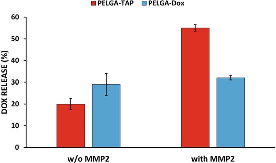
3.5 스페로이드 형성
- 스페로이드 형성을 위해 U87과 HDF 세포를 70–80% confluency에서 트립신/EDTA 용액 1 mL로 37 °C, 5분간 떼어낸다.
- 신선 배양 배지 9 mL가 든 15-mL 튜브에 세포를 모으고 1000 rpm으로 원심분리한 뒤 상층액을 버리고 펠릿을 신선 배양 배지에 재현탁한다.
- 세포 수를 센다.
- 배양 배지에 0.25% (w/v) carboxymethylcellulose가 든 비부착형 원형바닥 96웰 플레이트(Greiner, Frickenhausen, Germany)의 각 웰에 U87 약 2500개, HDF 약 3000개를 파종한다.
- 37 °C, 5% CO₂, 상대습도 100% 조건에서 3일간 배양해 스페로이드 형성을 기다린다.
- 광학현미경으로 스페로이드 품질을 확인한다(주의사항 17 참고)(그림 7 좌측 패널).
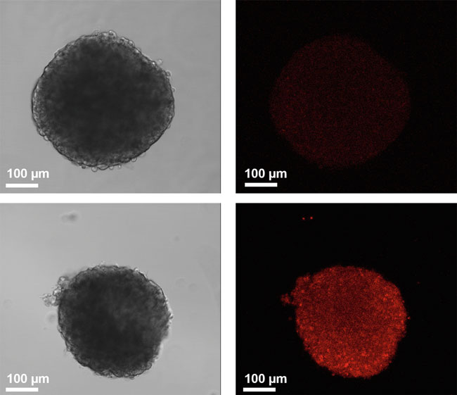
3.6 세포독성 시험
- 스페로이드를 회수해 저부착(low-attachment) 6웰 플레이트에 웰당 약 6–10개가 되도록 파종한다.
- 24시간 후 PELGA–Dox NPs 또는 PELGA–TAP NPs가 든 배양액 1 mL를 넣고 37 °C에서 배양한다.
Nanoparticles for Tumor Targeting 95
그림 7 PELGA–Dox와 PELGA–TAP NPs로 48시간 처리한 U87 스페로이드의 대표 형광 및 투과광 이미지. 적색 형광은 스페로이드 내부의 Dox 축적을 나타냄
- 24시간과 48시간 후 배양액을 제거하고 PBS로 두 번 씻는다(주의사항 18 참고).
- 실온에서 4% 파라포름알데히드로 30분간 스페로이드를 고정한다.
- PBS로 두 번 씻는다(주의사항 19 참고).
- 공초점현미경(Leica) 10× 대물렌즈로 스페로이드 매트릭스에 확산된 Dox의 형광을 관찰한다(그림 7).
- 해상도 1024 × 1024, 488-nm 레이저로 z-단면 이미지를 얻는다.
- 공초점현미경 소프트웨어로 형광 강도(그림 8)와 스페로이드 평균 직경(그림 9)을 측정한다(주의사항 20 참고).
- 형광 강도는 0부터 255까지 픽셀별 회색조 값에 대한 정규화된 픽셀 카운트 분포로 표기한다.
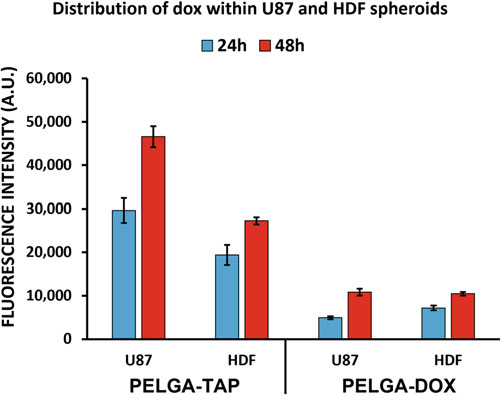
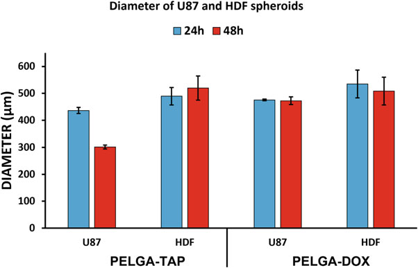
96 Naym Blal and Daniela Guarnieri
그림 8 24시간 및 48시간 후 U87과 HDF 스페로이드 내부의 Dox 형광 강도 분포. y축은 스페로이드의 형광 강도(평균 회색값)를 나타냄. 데이터는 mean ± SD
그림 9 PELGA–TAP 또는 PELGA–Dox 24시간·48시간 처리 후 U87과 HDF 스페로이드의 직경. 데이터는 mean ± SD
4 주의사항
- 주의해서 다룬다. 유전적 변이와 암을 일으킬 수 있다. 환기후드 아래에서 작업하고 물질/혼합물을 흡입하지 않는다. 장갑, 보호복, 보호안경을 착용하고 얼굴도 보호한다. 사용 후 피부를 깨끗이 씻는다.
Nanoparticles for Tumor Targeting 97
- 합성 대신 이런 고분자들은 맞춤 제작해 전문회사에서 구매할 수도 있다.
- 세포주는 indirect immunofluorescence와 zymography로 평가한 MMP2 효소 발현 수준 차이에 따라 골랐다 [17]. 우리 실험 조건에서 특히 U87 세포는 HDF 세포보다 8배 많은 MMP2 효소를 발현한다 [17].
- 사용 전 37 °C 항온수조에서 4% 파라포름알데히드를 해동하고 4 °C로 유지한다. 다시 얼리지 않는다.
- 용액은 실온에 보관한다.
- 침전물이 없는지 확인하고 용액이 투명해질 때까지 기다린다.
- 방울이 물 소용돌이 안쪽에 떨어지고 옆으로 흐르지 않게 한다. 속도에 주의한다. 나노입자의 평균 크기와 크기 분포가 달라질 수 있다.
- 아세톤 잔류물은 독성이 될 수 있으므로 완전히 증발했음을 확실히 하려면 3시간 이상 기다린다.
- 이 단계부터는 무균 조건에서 작업해야 한다.
- NP 준비 후 3.2절대로 크기 측정을 진행하고, 펩타이드 분해를 막기 위해 NP를 4 °C에 보관한다.
- 결과는 최소 5회 측정을 평균낸다.
- 이 작업 중 포화 수증기 환경인지 확인한다.
- blot 시간과 건조 시간은 둘 다 1초다.
- 액체 프로판은 프로판 용기를 감싼 액체 질소로 냉각해야 한다.
- 이 분석에서는 Dox 자체 형광을 이용한다. Dox 농도가 1 mg/mL를 넘으면 self-quenching 현상이 일어나 실험 데이터를 잘못 해석할 수 있음에 유념한다. 이를 피하려면 샘플을 원래 농도와 희석한 농도에서 각각 측정해 형광 강도 감소 여부를 점검한다.
- Dox 최대 방출량을 정량하기 위해 투석 백(MWCO 10000 Da)에 free doxorubicin(40 μg/mL) 500 μL를 담아 MMP2 완충액 12.5 mL 속에서 교반(100 rpm)하며 37 °C에 배양한다. 정해진 시간 간격마다 완충액 120 μL를 분광형광계로 분석해 plateau에 도달할 때까지 진행한다.
98 Naym Blal and Daniela Guarnieri
- 스페로이드를 실험에 쓰기 전 다음 항목을 확인한다: 둥글고 대칭적인 모양; 규칙적이고 명확한 경계; 약 200 μm 크기.
- 피펫으로 스페로이드를 실수로 빨아들이지 않도록 배양액을 완전히 제거하지 않는다. 웰에 배지 몇 μL를 남기고 필요하면 PBS 세척 단계를 늘리는 것이 낫다.
- 스페로이드는 PBS 속에 둔다. 샘플을 말리지 않는다. 4 °C 보관 가능하다.
- 형광 강도는 ImageJ 같은 다른 영상 분석 소프트웨어로도 측정할 수 있다.
References
- Jain RK, Stylianopoulos T (2010) Delivering nanomedicine to solid tumors. Nat Rev Clin Oncol 7:653–664
- Hambley TW (2009) Is anticancer drug development heading in the right direction? Cancer Res 69:1259–1262
- Tannock IF, Lee CM, Tunggal JK et al (2002) Limited penetration of anticancer drugs through tumor tissue: a potential cause of resistance of solid tumors to chemotherapy. Clin Cancer Res 8:878–884
- Peer D, Karp JM, Hong S et al (2020) Nanocarriers as an emerging platform for cancer therapy, 1st edn. Jenny Stanford Publishing, New York, pp 61–91
- Injac R, Strukelj B (2008) Recent advances in protection against doxorubicin-induced toxicity. Technol Cancer Res Treat 7:497–516
- Riley RS et al (2019) Delivery technologies for cancer immunotherapy. Nat Rev Drug Discov 18:175–196
- Rosenberg SA (2014) IL-2: the first effective immunotherapy for human cancer. J Immunol 192:5451–5458
- Ahmed S, Rai KR (2003) Interferon in the treatment of hairy-cell leukemia. Best Pract Res Clin Haematol 16:69–81
- Vareki SM, Garrigós C, Duran I (2017) Biomarkers of response to PD-1/PD-L1 inhibition. Crit Rev Oncol Hematol 116:116–124
- June CH, Warshauer JT, Bluestone JA (2017) Is autoimmunity the Achilles’ heel of cancer immunotherapy? Nat Med 23:540–547
- Wang C et al (2017) Tailoring biomaterials for cancer immunotherapy: emerging trends and future outlook. Adv Mater 29:1606036
- Ferrari M (2005) Cancer nanotechnology: opportunities and challenges. Nat Rev Cancer 5:161–171
- Lu Y et al (2016) Bioresponsive materials. Nat Rev Mater 2:1–17
- Luo M, Wang H, Wang Z et al (2017) STING-activating nanovaccine for cancer immunotherapy. Nat Nanotechnol 12:648–654
- Hu X, Zhai S, Liu G et al (2018) Concurrent drug unplugging and permeabilization of polyprodrug-gated crosslinked vesicles for cancer combination chemotherapy. Adv Mater 30:1706307
- Zhou Q, Shao S, Wang J et al (2019) Enzyme-activatable polymer–drug conjugate augments tumour penetration and treatment efficacy. Nat Nanotechnol 14:799–809
- Cantisani M, Guarnieri D, Biondi M et al (2015) Biocompatible nanoparticles sensing the matrix metallo-proteinase 2 for the on-demand release of anticancer drugs in 3D tumor spheroids. Colloid Surf Biointerfaces 135:707–716
- Falanga AP, Melone P, Cagliani R et al (2018) Design, synthesis and characterization of novel co-polymers decorated with peptides for the selective nanoparticle transport across the cerebral endothelium. Molecules 23:1655
- Lee SJ, Han BR, Park SY et al (2006) Sol–gel transition behavior of biodegradable three-arm and four-arm star-shaped PLGA–PEG block copolymer aqueous solution. J Polym Sci A1 44:888–899
- Guarnieri D, Biondi M, Yu H et al (2015) Tumor-activated prodrug (TAP)-conjugated nanoparticles with cleavable domains for safe doxorubicin delivery. Biotechnol Bioeng 112:601–611
질량 측정 기반 분석은 임상에서도 훌륭한 결과를 얻었다 [5–9]. 액성 종양을 분석할 때는 ex vivo 기능 분석에 쓸 세포를 충분히 확보하는 것이 가능하지만 고형종양 조직 검체에서는 더 복잡하다. 얻어지는 생존 세포 수가 보통 대규모 약물 스크리닝을 하기에 부족하기 때문이다. 마이크로유체 플랫폼을 쓰면 이 요구량을 줄여 시험할 수 있는 처치 수를 극대화하고 유효한 치료법을 찾을 가능성을 높일 수 있다. 여기서 우리는 (일차) 암세포를 주어진 세포독성 약제의 선형적으로 증가하는 농도에 노출시키고 형광 탐침으로 평가할 수 있는 새로운 마이크로유체 플랫폼을 소개한다 [10]. 이 설계는 취급이 최소한이고 기본 장비만으로 충분하다(예: 페리스탈틱 펌프와 형광현미경). 숙련 인력이나 복잡한 절차를 요구하지 않아 병원에서 기능 분석 도입을 용이하게 하고 암환자에게 도움을 준다. 이 마이크로유체 칩은 쉽게 확장 가능하며 필요 세포 수가 적어, 암환자에게 최적 치료를 배정하는 절차로 기능 분석을 정착시키는 데 기여할 수 있다.
2 재료
2.1 SU8 몰드 제작
- 4″ n-type <100> silicon wafer(MicroChemicals).
- 산소·공기 플라즈마 클리너(Harrick Plasma – model PCD-002-CE), 출력 3단계: 7.2 W(저), 10.2 W(중), 29.6 W(고).
- 음성 SU-82100 photoresist(MicroChem Lab).
- 스핀코터(Laurell Tech – model WS-650MZ 23NPP/LITE).
- UV 포토리소그래피 마스크 얼라이너(SUSS Microtec model MJB4).
- Photomask: 고해상도 투명 필름에 찍힌 마이크로유체 설계(JD Photodata UK).
- SU-8 developer(MicroChem Lab).
- 2-Propanol.
- 몰드 실란화용 Tricholoro perfluoroctyl silane(TPS)(Sigma-Aldrich, 448931).
2.2 PDMS 복제 성형
- Sylgard 184(prepolymer와 경화제).
- 75 × 50 mm 유리슬라이드.
- 진공 라인에 연결된 데시케이터.
- 0.5-mm multipurpose sampling tool puncher.
Microfluidic Device for Functional Assays 101
- 산소·공기 플라즈마 클리너(Harrick Plasma – model PCD-002-CE).
- 4-mm multipurpose sampling tool puncher.
2.3 마이크로유체 기반 동적 BH3 프로파일링
- 코팅 용액: 멸균 MilliQ 물에 poly-L-lysine 15 μg/mL(Quimigen).
- 완전 배지: 일차 샘플에는 표준 세포배양 배지를 쓸 수 있다. 예컨대 RPMI + 10% FBS + 1% L-glutamine + 1% pen-strep. 세포 요구가 다르면 전문 배지를 쓴다.
- 플라스틱 alligator clips.
- 마이크로유체 압력 펌프.
- 염색 용액: 원하는 농도의 형광 염료를 넣은 세포 배양용 완전 배지. 핵 염료(DAPI 1 μM, Thermo Fisher), 생존력 염료(calcein AM 4 μM, Thermo Fisher), 세포사멸 개시 염료(TMRE 400 nM, Abcam), 사멸 확인 염료(propidium iodide 1 μM, Thermo Fisher) 등을 쓸 수 있다.
- Phosphate-buffered saline(PBS).
- 세포독성 유도 용액: 세포독성 약제를 넣은 완전 배지. 연구 종양 종류에 따라 doxorubicin 100 nM(SelleckChem)이나 trametinib 100 nM(SelleckChem) 같은 화학요법제나 표적제를 쓸 수 있다.
3 방법
3.1 PDMS 마이크로유체 칩을 위한 SU8 몰드 제작
- CAD(computer-aided design) 소프트웨어로 photomask 패턴을 설계해 인쇄한다(주의사항 1 참고). 불투명 영역으로는 세포를 깔 챔버와 용액을 나누어 농도 기울기를 만드는 마이크로유체 채널이 들어간다(그림 1).
- silicon wafer를 저출력 모드 산소 플라즈마 클리너에 20분간 넣는다(주의사항 2 참고).
- silicon wafer를 hot plate로 옮겨 95 °C에서 5분 굽는다.
- silicon wafer를 스핀코터에 올리고 표면 전체가 던이게 SU-82100 photoresist를 붓는다. 스핀코터에서 500 rpm(가속 100 rpm/s) 5초, 이어 3000 rpm(가속 300 rpm/s) 30초로 돌려 균일한 100 μm 층을 만든다.
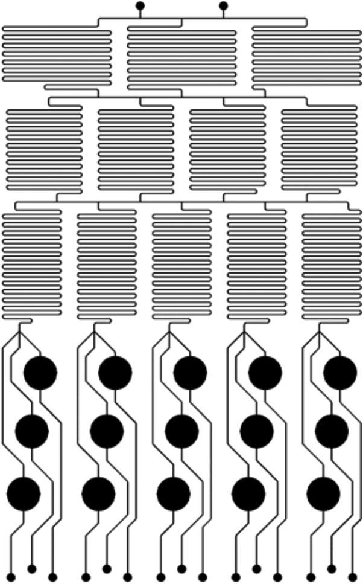
그림 1 암 기능 분석용 마이크로유체 플랫폼 설계
- 65 °C 5분, 이어 95 °C 20분 굽며 용매를 모두 증발시킨다.
- silicon wafer를 mask aligner로 옮기고 photomask를 얹은 뒤 UV 에너지 240 mJ/cm²로 SU-8 photoresist를 노출시킨다. hot plate에서 65 °C 5분, 95 °C 10분 구워 photoresist를 가교결합시킨다.
Microfluidic Device for Functional Assays 103
- silicon wafer를 SU-8 developer에 10분 담갔다 꺼내 미고결 photoresist를 제거하고 2-propanol로 씻는다. 마이크로유체 패턴이 뚜렷해질 때까지 SU-8 developer 1분 침지와 2-propanol 세척을 반복한다. UV 필터를 낀 광학현미경으로 검사한다.
- SU8 몰드를 150 °C hot plate에 60분 놓는다. 이후 hot plate를 끄고 실온까지 식힌다.
- PDMS가 몰드에 달라붙지 않도록 소수성 코팅을 위해 SU8 몰드 표면을 실란화한다. TPS 3–4방울을 담은 저류조가 있는 플라스틱 데시케이터에 silicon wafer를 넣고 밀폐한 뒤 30분간 진공을 건다. 이 단계는 환기후드에서 수행해야 한다.
3.2 PDMS 마이크로유체 칩 생산
- 원하는 두께의 PDMS 층을 만들 Sylgard 184 prepolymer 양을 저울로 잰다(주의사항 3 참고). 각 PDMS 층마다 별도 용기에서 진행한다. Sylgard 184 경화제를 1:10 비율로 넣고 최소 3분간 충분히 섞는다(주의사항 2 참고).
- 원하는 층 크기에 맞춰 PDMS 혼합물을 페트리접시 세 개에 붓는다. 빈 페트리접시 두 개에는 1-mm 두께 층이 되게 혼합물을 붓는다. 세 번째 접시—마이크로유체 설계가 새겨진 SU8 몰드가 든 것—에는 2-mm 두께가 되게 계산된 양의 PDMS 혼합물을 붓는다.
- 페트리접시들을 데시케이터에 넣고 최소 30분간 진공을 걸어 PDMS 혼합물의 기포를 모두 없앤다(주의사항 4 참고).
- 75 × 50 mm 유리슬라이드를 초음파세척기로 청소한다. 물과 비누 혼합물에 담가 5분 초음파 처리한다. 같은 방식으로 물, 에탄올, 2-propanol로 각각 5분씩 반복한다. N₂ 건으로 슬라이드를 말린다.
- 1 mm PDMS 혼합물이 든 페트리접시 하나에 유리슬라이드를 미경화 혼합물 위로 눌러 얇은 층을 만든다(주의사항 5 참고).
- 모든 페트리접시를 평평한 곳에 실온에서 하룻밤 둔 뒤 85 °C 오븐에서 4시간 굽는다(주의사항 6 참고).
- 메스로 경화된 PDMS를 자르고 세 층을 조심스럽게 벗긴다: (1) 마이크로유체 무늬가 있는 2-mm 두께 층, (2) 맨 1-mm PDMS 층, (3) 얇은 PDMS 층으로 덮인 유리슬라이드.
- 0.5-mm multipurpose puncher로 2-mm PDMS 층의 입구와 출구를 뚫는다(주의사항 7 참고).
그림 2 마이크로유체 몰드 제작과 PDMS 복제 성형 과정 요약. 1: Si 웨이퍼에 SU-8 photoresist 도포 및 스핀코팅; 2: soft baking; 3: photomask 정합 및 UV 노출로 SU-8 경화; 4: 현상·베이킹·헹굼; 5: 산소 플라즈마; 6: PDMS 주입 및 열 어닐링; 7: 구멍 뚫기 및 결합; 8: 최종 마이크로유체 장치
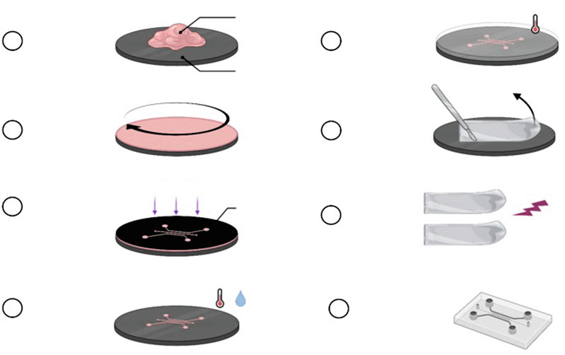
- 1-mm과 2-mm PDMS 층을 산소 압력 25 bar, 10.5 W에서 30초간 산소 플라즈마 클리너로 활성화한다. 즉시 활성화된 두 PDMS 표면을 맞대고 가볍게 누른 뒤 공유결합을 안정화하기 위해 85 °C 오븐에서 4시간 굽는다.
- 4-mm multipurpose puncher로 결과적으로 3-mm 두께가 된 PDMS 층의 세포 챔버를 뚫는다(주의사항 7 참고).
- 최종 3-mm PDMS 층과 유리슬라이드를 단계 9와 같은 조건으로 산소 플라즈마 클리너에서 활성화한다. 두 부분을 눌러 맞추고 85 °C에서 4시간 굽는다. 생산 과정 요약은 그림 2에, 최종 플랫폼은 그림 3에 나타나 있다.
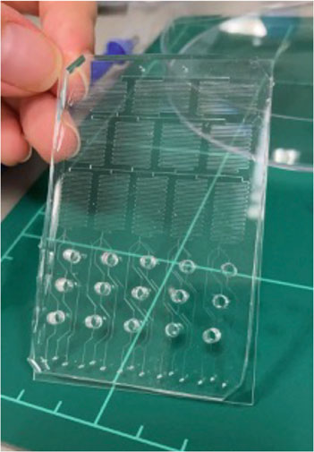
3.3 마이크로유체 플랫폼을 이용한 기능 분석
- 마이크로유체 칩을 85 °C 오븐에서 1시간 멸균한다(주의사항 8 참고).
- 세포 챔버마다 코팅 용액 10 μL를 넣고 37 °C에서 40분간 배양한다. 이후 멸균 MilliQ 물로 챔버를 씻는다(주의사항 9 참고).
- 원하는 세포 30,000개를 완전 배지 200 μL에 재현탁해 파종용 세포 현탁액을 만든다(주의사항 10 참고).
Microfluidic Device for Functional Assays 105
그림 3 완성된 마이크로유체 플랫폼 사진
- 마이크로유체 칩의 독립적인 행마다 실험 조건 하나가 배정되도록 웰마다 세포 현탁액 35 μL를 파종한다. 세포가 부착할 때까지 배양기 내 37 °C에서 충분히 배양한다(주의사항 11 참고).
- 배양 중 배지가 증발했다면 세포 챔버에 완전 배지를 다시 채우고 새 유리판과 alligator clips로 마이크로유체 칩을 밀봉한다(주의사항 12 참고).
- 압력 기반 유량 컨트롤러를 마이크로유체 튜빙으로 칩의 두 입구에 연결한다(주의사항 13 참고). 이 시점에서 세포독성 약제 기울기를 만들려는 실험 설계에 따라 두 용액(원하는 최대 농도의 세포독성 약제 용액과 순수 배지)을 두 입구로 관류한다(주의사항 14 참고). PBS 세척이나 전체 웰 염색은 같은 용액을 양쪽 입구로 관류하면 된다.
- 세포 배양 후 세포독성 유도 용액의 효과를 확인하기 위해 형광현미경으로 모든 세포 챔버 이미지를 찍고 원하는 생물학적 파라미터를 정량한다.
4 주의사항
- 고해상도 투명 필름 인쇄 서비스를 제공하는 회사가 여럿 있다(예: JD Photo Data, UK).
- SU8 몰드 제작과 PDMS 복제는 입자 수·습도·온도가 통제되는 클린룸에서 해야 한다.
- 특정 두께를 얻을 PMDS 혼합물 무게 계산에는 다음 식을 썼다: m = πr²hρ. m은 폴리머 혼합물 질량(g), r은 페트리접시 반경(cm), h는 원하는 두께(cm), ρ는 PDMS 밀도(0.965 g/cm³)다.
- 미경화 PDMS에서 기포가 없어지지 않으면 dropper나 N₂ 건의 저압 공기로 남은 기포를 터뜨릴 수 있다.
- 유리슬라이드 반대편에 PDMS가 묻는 것을 막으려면 누르기 전 윗면을 접착테이프로 덮었다가 경화 후 쉽게 제거할 수 있다.
- 균일한 마이크로유체 칩을 얻으려면 PDMS를 평평한 면에서 경화하는 것이 중요하다. 수평계로 평평한 곳에서 하룻밤 배양하는지 확인한다. 또는 오븐을 수평으로 놓았다면 60 °C에서 하룻밤 구워 경화해도 된다.
- 입구와 출구를 잘 뚫으려면 확대 카메라로 puncher 위치를 정확히 잡으면 좋다. 구멍은 puncher를 곧게 세워 PDMS 층 전부를 관통하고 마지막에 회전시켜 깨끗하게 내야 한다. 잘린 PDMS 조각을 버려 입구나 출구가 막히지 않게 하는 것이 중요하다.
- 대신 세포배양 후드의 UV 살균 프로그램을 사용할 수 있다.
- 표면 기능화는 세포에 따라 fibronectin, collagen, laminin 등을 적용할 수 있다. 마이크로유체 칩의 세포 챔버 배양면을 원하는 분자로 기능화할 때 같은 프로토콜을 쓴다.
- 이 단계에서 예컨대 두 약제의 시너지 조합을 찾으려고 순차적 세포독성 약제 추가를 할 수 있다.
- 배양 배지 증발을 줄이려면 MilliQ 물이 가득한 작은 페트리접시를 마이크로유체 칩 옆에 놓을 수 있다.
- 여기가 결정적 지점이다. 칩 밀봉 시 큰 기포가 있으면 마이크로유체 회로가 제대로 형성되지 않는다. 게다가 칩이 평평하지 않으면 밀봉이 실패하고 일부 챔버가 샐 수 있다. 예방하려면 마이크로유체 칩과 상부 밀봉 유리판 사이에 얇은 PDMS 층을 놓는다. 그 PDMS 층은 탄성이 있어 모든 챔버의 밀봉을 보장한다.
Microfluidic Device for Functional Assays 107
- 챔버 안에 새 기포가 들어가지 않게 하려면 밀봉 전에 마이크로유체 펌프로 완전 배지를 채널에 흘려 공기를 빼낼 수 있다. 작은 기포가 채널에 끼었으면 해당 채널 위를 조심스럽게 눌러 제거할 수 있다. 또는 압력 펌프 대신 페리스탈틱 펌프나 주사기 펌프를 쓸 수도 있다.
- 두 입구로 액체가 실제로 펌핑되는지 확인하는 것이 중요하다. 경우에 따라 한 입구가 막혀 잘못된 기울기가 만들어질 수 있다.
이해상충
JM은 동적 BH3 프로파일링(Dana-Faber Cancer Institute 특허)의 공동 발명자로 로열티를 받았으며, Oncoheroes Biosciences와 Vivid Biosciences의 유료 컨설턴트였고, Society for Functional Precision Medicine의 무급 이사이며, 현재 AstraZeneca와 협력 중이다. JR-A와 MAO는 Vitala Technologies의 공동 창립자로 회사 주식을 보유하고 있다. JR-A는 과학이사회 멤버이며 MAO는 회사 상근 직원이다. 다른 저자들은 밝힌 관련 이해상충이 없다.
연구비
Ramon y Cajal Programme, Ministerio de Economia y Competitividad grant RYC-2015-18357(JM). Ministerio de Ciencia, Innovación y Universidades grant RTI2018–094533-A-I00(JM). CELLEX foundation(JM, AM). Beca Trienal Fundación Mari Paz Jiménez Casado(JM). European Research Council, grant ERC-StG-DAMOC 714317(JR-A). European Research Council, H2020 EU framework FET-open BLOC 863037(JR-A). Spanish Ministry of Economy and Competitiveness, “Severo Ochoa” Program for Centers of Excellence in R&D SEV-2020-2023(JR-A). Generalitat de Catalunya, CERCA Programme 2017-SGR-1079(JR-A, JS). Fundación Bancaria “la Caixa” – Obra Social “la Caixa”(project IBEC-La Caixa Health Ageing)(JR-A). Networking Biomedical Research Center(CIBER). CIBER는 VI National R&D&i Plan 2008–2011, Iniciativa Ingenio 2010, Consolider Program, CIBER Actions, Instituto de Salud Carlos III(RD16/0006/0012)의 지원을 받으며 European Regional Development Fund(JS)의 후원도 받았다.
References
- Letai A (2017) Functional precision cancer medicine-moving beyond pure genomics. Nat Med 23:1028–1035
- Letai A, Bhola P, Welm AL (2022) Functional precision oncology: testing tumors with drugs to identify vulnerabilities and novel combinations. Cancer Cell 40:26–35
- Van De WM, Francies HE, Francis JM et al (2015) Prospective derivation of a living organoid biobank of colorectal cancer patients. Cell 161:933–945
- Byrne AT, Alférez DG, Amant F et al (2017) Interrogating open issues in cancer precision medicine with patient-derived xenografts. Nat Rev Cancer 17:254–268
- Snijder B, Vladimer GI, Krall N et al (2017) Image-based ex-vivo drug screening for patients with aggressive haematological malignancies: interim results from a single-arm, open-label, pilot study. Lancet Haematol 4:e595–e606
- Kornauth C, Pemovska T, Vladimer GI et al (2022) Functional precision medicine provides clinical benefit in advanced aggressive hematologic cancers and identifies exceptional responders. Cancer Discov 12:372–387
- Garcia JS, Bhatt S, Fell G et al (2020) Increased mitochondrial apoptotic priming with targeted therapy predicts clinical response to re-induction chemotherapy. Am J Hematol 95:245–250
- Cetin AE, Stevens MM, Calistri NL et al (2017) Determining therapeutic susceptibility in multiple myeloma by single-cell mass accumulation. Nat Commun 8:1613
- Stockslager MA, Malinowski S, Touat M et al (2021) Functional drug susceptibility testing using single-cell mass predicts treatment outcome in patient-derived cancer neurosphere models. Cell Rep 37:109788
- Manzano-Muñoz A, Yeste J, Ortega MA et al (2022) Microfluidic-based dynamic BH3 profiling predicts anticancer treatment efficacy. NPJ Precis Oncologia 6:90
미생물생리학적 시스템(MPS)은 이제 고처리량/고콘텐츠 구성으로 생리학적으로 타당한 미세환경을 재현하는 가장 유망한 기술 발전 가운데 하나다 [1, 2]. 세포 공동배양, 세포 집단 전체, 나아가 기관의 기능 단위를 마이크로유체 칩 위에 올리면 병렬로 여러 실험을 수행할 수 있고, 고콘텐츠 데이터를 다루는 표준 생화학 기법과 AI 기반 방법과 함께 첨단 현미경의 잠재력을 모두 활용할 수 있다 [3–5]. 이런 플랫폼은 한편으로 암의 행동과 진화 [6, 7, 14]를, 다른 한편으로 약효와 작용기전을 평가하는 데 쓰여 환자 조직 검체를 활용한 개인 맞춤 의료 접근을 촉진한다 [8–11]. 본 연구는 면역세포 공동배양 자극에 따라 마우스 종양 미세환경 모델에서 일어나는 세포사멸(apoptosis)을 과학적 사례로 삼아, 칩 위 방법론과 첨단 현미경을 결합해 관련 생물학 과정을 역동적으로 측정할 가능성을 보여주는 데 목적이 있다.
2 재료
세포 배양에 쓰는 모든 용액·시약·마이크로유체 장치는 멸균되거나 멸균 가능해야 한다. 콜라겐 믹스 재료는 얼음 위에서 준비하고 4 °C에 보관한다. 폐기물은 폐기 규정을 철저히 지켜 처리한다.
2.1 세포 배양 및 콜라겐 준비
MC-38 세포주(Kerafast).
C57BL/6 마우스에서 분리한 비장세포(Envigo RMS Srl)(주의사항 1 참고).
완전 DMEM: DMEM(Dulbecco’s Modified Eagle Medium, Gibco, #11965–092)에 10% v/v 태아우혈청(FBS, Gibco, Brazil, South America, #26140079), 1% 페니실린/스트렙토마이신(5000 U/mL, Gibco, #15070063), 2 mM L-glutamine(Gibco #25030081)을 보충.
완전 RPMI 배지: RPMI(Roswell Park Memorial Institute, Gibco #11875093) 1640에 10% v/v 태아우혈청(FBS, Gibco, Brazil, South America, #26140079), 1% 페니실린/스트렙토마이신(5000 U/mL, Gibco, #15070063), 2 mM L-glutamine(Gibco, #25030081)을 보충.
TrypLE™ Express Enzyme 1X(Gibco, #12605010).
Trypan blue(Gibco #15250061).
Phosphate-buffered saline(PBS).
Hoechst 33342(Invitrogen #H1399).
Collagen I(Gibco, #A1048301).
NaOH 1 N 멸균 용액.
멸균 2dH₂O.
CellEvent™ caspase-3/7(Invitrogen #C10723).
Staurosporine(from Streptomyces sp., Sigma, #S6942-200ul), 최종 농도 1 mM.
Anti-mCD3(eBioscience, Invitrogen, #14–0031-82).
Cellvis 6-well glass-bottom plate(#P06–1.5H-N).
2.2 장비
- BSL2 생물안전캐비닛과 CO₂ 배양기를 갖춘 완전한 세포생물학 시설.
- 자동 세포 계수기(대신 혈구계산판으로 수동 계수 가능).
- Reactive ion etching system.
- live cell imaging 호환(stage-top incubator) 공초점현미경으로, 405-nm과 488-nm 레이저 라인, 투과광 검출기 및 필터 큐브(DAPI, FITC) 또는 분광 선택을 갖춘 것(멀티웰 플레이트는 공초점 촬영에 호환됨; 주의사항 2 참고).
3 방법
이 프로토콜에 쓰는 마이크로칩은 이전에 3D 면역역량 종양 온칩 모델로 소개된 바 있다 [8, 13]. 주의사항 3 참고.
3.1 마이크로유체 칩 설계 및 제작
- 칩은 포토리소그래피로 만든 마스터(Si 웨이퍼 위 Su-8 photoresist)에서 PDMS 복제본으로 제작할 수 있다. 제작 단계의 상세한 설명은 선행 문헌 [8, 15] 참고.
- 산소 플라즈마 활성화로 6웰 광학바닥 플레이트에 PDMS 복제본을 봉합한다. 공정 변수: density power 0.22 W/cm², pressure 0.8 Torr, time 35 s, 산소 유량 60 sscm. 파라미터는 사용하는 기능화 기기(예: plasma cleaner)에 맞춰 최적화해야 한다(그림 1 참고).
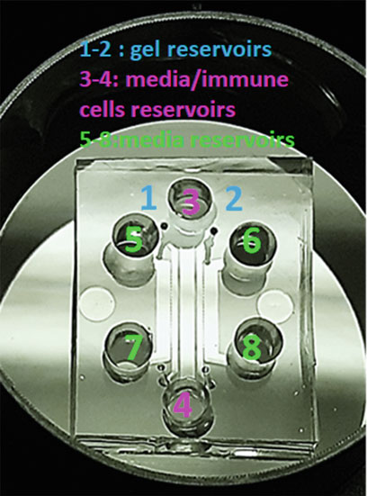
3.2 MC-38 세포 배양
- 완전 DMEM에서 세포를 배양한다.
- MC-38 암세포를 T75 플라스크에 1 × 10⁶ 세포 파종하고 37 °C, 5% CO₂ 가습 조건에서 배양한다.
- 세포가 confluence(이 세포주 배가 시간은 12시간)에 도달하면 배지를 흡인하고 PBS로 씻는다(T75 플라스크 기준 8 mL).
그림 1 칩 구조와 구획별 배지 저장조 표시. 칩은 광학바닥 멀티웰 플레이트에 결합되어 있다(주의사항 2 참고)
- TrypLE 세포 분리 시약 2 mL로 37 °C 배양기에서 2분간 세포 단일층을 떼어낸다.
- 떨어진 세포를 완전 성장 배지에 재현탁한다.
- Trypan blue 염색(세포 현탁액 20 μl + Trypan blue 20 μl)으로 세포를 세고 생존율을 평가한다.
- 필요한 세포 수에 해당하는 현탁액 부피를 취한다. 이 성장 속도에서 하이드로겔 현탁액 내 종양세포 최종 농도는 2000 cells/μl다. 이 구성에서 각 3D 챔버의 총 부피는 3.5 μl지만, 세포 현탁액이 고르게 되도록 각 처치 샘플당 50 μl 이상 준비할 것을 권장한다.
3.3 핵 염색
- 세포 현탁액을 1.5-mL 바이얼로 옮긴다.
- 1:1000 멸균 Hoechst 33342(최종 농도 10 μg/mL)를 세포 현탁액에 넣고 실온에서 어둠 속에 20분간 배양한다.
- 완전 배지로 세포를 씻는다(4분, 1000 RPM, 실온).
3.4 콜라겐 준비
이 프로토콜은 I형 콜라겐을 사용한다. 3D 배양용 대부분의 하이드로겔 매트릭스와 호환된다(최적화 시험 필요).
제조사 프로토콜대로 겔 용액을 준비한다(최종 농도 2 mg/mL): 200 μl 최종 겔 용액 기준으로 PBS 10X 20 μl, NaOH 3.4 μl, 2dH₂O 42.6 μl, collagen 134 μl. pH를 확인해 7로 맞춘다(주의사항 4 참고).
콜라겐 용액을 세포 펠릿에 넣고 기포가 생기지 않게(완전히 섞일 때까지 천천히 피펫팅) 세포를 현탁시킨다.
세포 현탁액을 얼음 위에 둔다(주의사항 5 참고).
미리 차갑게 해둔(4 °C 유지) P10 팁으로 콜라겐 현탁액 속 세포를 마이크로칩 입구(직경 1-mm)에 천천히 주입해 3D 챔버를 채운다(주의사항 6 참고).
현미경으로 기포가 없는지와 3D 채널이 완전히 채워졌는지 확인한다(주의사항 7, 8 참고).
멀티웰을 37 °C 배양기에 20–30분 넣어 콜라겐 중합을 기다린다.
중앙과 측면 저장조에 배양 배지를 넣되 각 저장조마다 같은 양을 넣도록 주의한다(저장조 크기에 따라 각각 50–70 μl).
칩을 배양기(37 °C, 5% CO₂ 가습 조건)에 24시간 넣어둔다(주의사항 9 참고)(그림 2 참고).
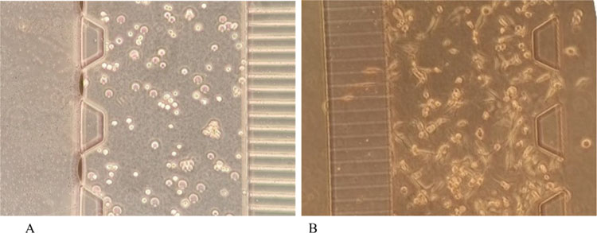
3.5 Caspase 3/7 분석
- CellEvent™ caspase-3/7(Thermo Fisher Scientific cat no C10723)를 외부 저장조에 최종 농도 2 μM이 되게 넣는다. 세포 현탁액을 1.5-mL 바이얼로 옮긴다.
- 플레이트를 실온에서 어둠 속에 30분간 배양한다.
그림 2 Day 1: 배지 추가 전 MC-38 세포와 겔 로딩 상태 (a). Day 2: 배지 추가 후 24시간 배양한 MC-38 세포 (b). 배율 10X
3.6 비장세포 배양 및 공동배양
- 완전 RPMI 배지에서 세포를 배양하고 37 °C, 5% CO₂ 가습 조건에서 둔다. 비장세포 준비는 주의사항 1 참고.
- 24웰 플레이트에서 완전 배지 400 μl로 anti mCD3(eBioscience, Invitrogen, #14–0031-82) 1:100 희석액과 함께 24시간 배양한다.
- 24시간 배양 후 세포를 떼어내고 Trypan blue 분석으로 수를 센다.
- 칩마다 splenocytes/MC-38 비율을 10:1로 잡고 필요한 세포 수가 나오는 적절한 현탁액 부피를 취한다. 이 실험 설정에서 칩당 비장세포는 140,000개였다.
- 세포를 원심침전(1500 RPM, 5분)하고 칩 하나당 15 μl 부피로 재현탁한다.
- 저장조에서 배양 배지를 흡인한다.
- 중앙 챔버 양쪽에서 비장세포 현탁액 7.5 μl씩 넣고 10분간 둔다.
- 현미경으로 면역세포 위치를 확인한다(주의사항 10 참고).
- 저장조에 같은 부피의 배지를 다시 넣는다.
3.7 영상 획득
- 현미경 stage-top 배양 시스템의 배양 파라미터(37 °C, 5% CO₂ 가습 조건)를 설정하고 시스템이 열평형에 도달하게 기다린다.
- 멀티웰 플레이트를 현미경 스테이지 어댑터에 올린다.
- 실험 특성에 맞춰 대물렌즈 배율과 시야를 고른다. 이 응용에는 10X 대물렌즈가 권장된다(그림 3 참고).
- 다음 구성으로 time-lapse 획득을 진행한다: DAPI 채널 — 핵 대조 염색; FITC 채널 — 세포사멸 사건; 투과광 — 칩 구조와 세포 형태 디테일. 30분 간격으로 총 12시간 획득하도록 설정한다(그림 4 참고).
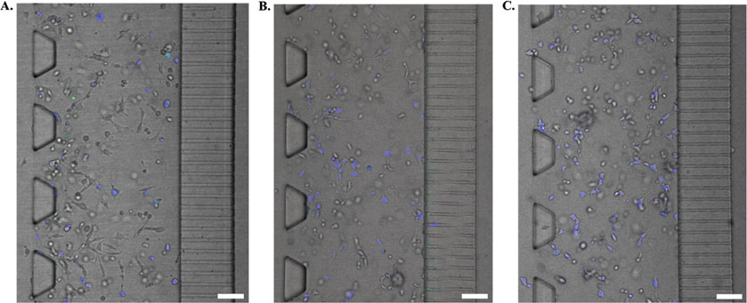
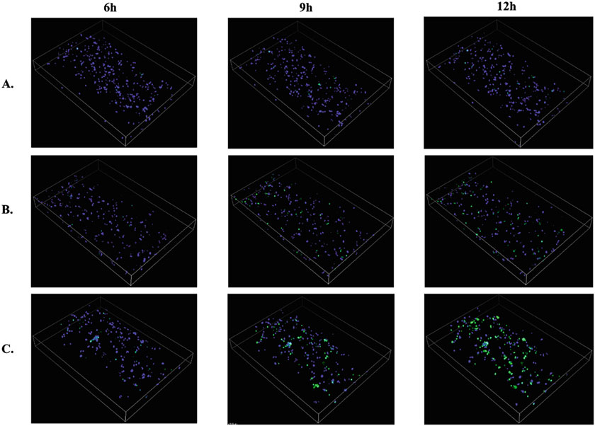
3.8 영상 분석
- 현미경 데이터세트는 정해진 시점별 또는 과정의 역동적 변화에 따라 세포사멸 사건 수를 정량화해 분석할 수 있다. 사건 수는 녹색 채널에서 기록·정량한 사건 수를 Hoechst 염색 기반 핵 정량으로 나타낸 전체 세포 수로 나눈 비율이다. 세포 현탁액을 1.5-mL 바이얼로 옮긴다.
- 1:1000 멸균 Hoechst 33342(최종 농도 10 μg/mL)를 세포 현탁액에 넣고 실온 어둠 속에 20분간 배양한다.
- 완전 배지로 세포를 씻는다(4분, 1000 RPM, 실온).
그림 3 Day 2: time-lapse 실험 시작 시점의 2D 이미지. (a) 음성 대조군, (b) 비장세포 공동배양, (c) STS(staurosporine) 처리 세포. 배율 10X, 스케일바 100 mm. 이미지는 bright-field 채널, 청색 채널(Hoechst 핵 염색), 녹색 채널(caspase 3/7 활성 마커)을 합성해 얻었다
그림 4 Days 2–3: 처리 후 6, 9, 12시간 시점의 3D 이미지(Z stack 투영). (a) 음성 대조군, (b) 비장세포 공동배양, (c) STS(staurosporine) 처리 세포. 배율 10X. 청색: Hoechst 핵 염색, 녹색: caspase 3/7 활성 마커. 각 스택은 서로 5 mm 간격의 29장 이미지로 구성되어 총 두께 135 mm, XY 촬영 범위 1000 × 1273 mm다
4 주의사항
- 비장세포는 C57BL/6 마우스 오른쪽 옆구리 피하에 PBS 0.1 mL 속 MC-38 결장선암세포 3 × 105개를 미리 주입하고, 그 후 프로토콜 [12]에 따라 희생시켜 분리했다.
- 이 멀티웰 플레이트의 glass bottom 두께는 공초점 및 2광자 여기 형광현미경과 호환되며 여러 실험을 연속으로 통제할 수 있게 한다.
- 칩은 다섯 개의 주요 구획으로 되어 있다: 유동성 면역세포 투입용 중앙 구획, 종양세포를 하이드로겔 매트릭스(높이 150–250 μm)에 담그는 두 측면 영역, 배지 관류 챔버. 면역 챔버와 종양 챔버는 좁은 마이크로채널 배열 두 세트(200 × 12 × 10 μm³, L×W×H)로 연결된다. 균등하게 100-μm 간격으로 배열된 사다리꼴 등변 마이크로필러(측면 젤 영역당 약 25–30개 계면)는 표면 장력과 모세관력의 균형을 이용해 주입 중 겔 용액을 가두는 장벽 역할을 하며, 종양 영역을 양쪽 추가 배지 챔버와 연결해 겔–액체 계면을 만든다.
- 콜라겐 믹스 재료를 모두 미리 차갑게 하고, 혼합·마이크로챔버 주입 중 하이드로겔이 조기 중합되지 않도록 미리 차게 한 피펫 팁을 쓴다.
- 혼합할 때 피펫 팁을 용액 속에 잠근 채 유지하고 원심튜브를 얼음에서 들어올리지 않는다.
- 점성 용액 안에서 채널에 기포가 갇히지 않도록 새 겔 채널마다 새 피펫 팁을 사용해 로드한다.
- 인접 채널로 콜라겐이 새지 않도록 현탁액 로드 시 과도한 압력을 주지 않는다.
- 겔 입구에서 마이크로피펫을 뺄 때 겔 용액이 빨려 나오지 않도록 plunger를 단단히 잡는다.
- 실험 중 배지 증발을 최소화하려면 웰 사이 빈틈에 멸균수를 넣어야 한다.
- 면역세포를 중앙 챔버에 넣은 뒤 세포가 겔 챔버 안으로 곧바로 흘러들면 칩을 폐기한다. 겔이 제대로 중합되지 않았거나 깨졌거나 떨어졌다는 뜻이다.
감사의 글
본 연구는 Regione Lazio의 “Progetti Strategici 2019” – POR FESR Lazio 2014-2020 – Azione 1.1.4 공모로 지원받은 Ithaca Project(protocol number A0320-2019-28177), 이후 PNRR-NextGenerationEU n. ECS 00000024(Mission 4 Education and Research, Component 2 From Research to Enterprise, Investment 1.5 Creation and strengthening of “Innovation ecosystems for sustainability”) 프레임워크의 Rome Technopole project에서 개발되었다. F.D.M.은 Regione Lazio의 “Gruppi di Ricerca 2020” POR FESR Lazio 2014-2020 – Azione 1.2.1 공모로 지원받은 Perseo project(protocol number A0375-2020-36656)의 지원을 받았다.
References
- Miller CP, Shin W, Ahn EH, Kim HJ, Kim D-H (2020) Engineering microphysiological immune system responses on chips. Trends Biotechnol 38(8):857–872
- Shin Y, Han S, Jeon JS, Yamamoto K, Zervantonakis IK, Sudo R, Kamm RD, Chung S (2012) Microfluidic assay for simultaneous culture of multiple cell types on surfaces or within hydrogels. Nat Protoc 7(7):1247–1259
- Ingber DE (2016) Reverse engineering human pathophysiology with organs-on-chips. Cell 164(6):1105–1109
- Huh D, Kim HJ, Fraser JP, Shea DE, Khan M, Bahinski A, Hamilton GA, Ingber DE (2013) Microfabrication of human organs-on-chips. Nat Protoc 8(11):2135–2157
- Low LA, Mummery C, Berridge BR, Austin CP, Tagle DA (2020) Organs-on-chips: into the next decade. Nat Rev Drug Discov
- Businaro L, De Ninno A, Schiavoni G, Lucarini V, Ciasca G, Gerardino A, Belardelli F, Gabriele L, Mattei F (2013) Cross talk between cancer and immune cells: exploring complex dynamics in a microfluidic environment. Lab Chip 13(2):229–239
- Racioppi L, Nelson ER, Huang W, Mukherjee D, Lawrence SA, Lento W, Masci AM, Jiao Y, Park S, York B, Liu Y, Baek AE, Drewry DH, Zuercher WJ, Bertani FR, Businaro L, Geradts J, Hall A, Means AR, Chao N, Chang CY, McDonnell DP (2019) CaMKK2 in myeloid cells is a key regulator of the immune-suppressive microenvironment in breast cancer. Nat Commun 10(1):2450
- Parlato S, De Ninno A, Molfetta R, Toschi E, Salerno D, Mencattini A, Romagnoli G, Fragale A, Roccazzello L, Buoncervello M, Canini I, Bentivegna E, Falchi M, Bertani FR, Gerardino A, Martinelli E, Natale C, Paolini R, Businaro L, Gabriele L (2017) 3D microfluidic model for evaluating immunotherapy efficacy by tracking dendritic cell behaviour toward tumor cells. Sci Rep 7(1):1093
- Ayuso JM, Virumbrales-Muñoz M, Lang JM et al (2022) A role for microfluidic systems in precision medicine. Nat Commun 13:3086
- Lucarini V, Buccione C, Ziccheddu G, Peschiaroli F, Sestili P, Puglisi R, Mattia G, Zanetti C, Parolini I, Bracci L, Macchia I, Rossi A, D’Urso MT, Macchia D, Spada M, De Ninno A, Gerardino A, Mozetic P, Trombetta M, Rainer A, Businaro L, Schiavoni G, Mattei F (2017) Combining type I interferons and 5-Aza-2’-Deoxycitidine to improve anti-tumor response against melanoma. J Invest Dermatol 137(1):159–169
- Maulana TI, Kromidas E, Wallstabe L, Cipriano M, Alb M, Zaupa C, Hudecek M, Fogal B, Loskill P (2021) Immunocompetent cancer-on-chip models to assess immuno-oncology therapy. Advanced Drug Delivery Reviews, Volume 173:281–305
- Longley L (2009) Rodents: dermatoses. In: Keeble E, Meredith A (eds) BSAVA manual of rodents and ferrets. BSAVA, Gloucester, pp 107–122
- De Ninno A, Bertani FR, Gerardino A, Schiavoni G, Musella M, Galassi C, Mattei F, Sistigu A, Businaro L (2021) Microfluidic co-culture models for dissecting the immune response in in vitro tumor microenvironments. JoVE 170:e61895
- Biselli E, Agliari E, Barra A, Bertani FR, Gerardino A, De Ninno A, Mencattini A, Di Giuseppe D, Mattei F, Schiavoni G, Lucarini V, Vacchelli E, Kroemer G, Di Natale C, Businaro L, Martinelli E (2017) Organs on chip approach: a tool to evaluate cancer-immune cells interactions. Scientific Rep 7(1):12737
- Mencattini A, De Ninno A, Mancini J, Martinelli E, Schiavoni G, Mattei F (2020) High-throughput analysis of cell-cell crosstalk in ad hoc designed microfluidic chips for oncoimmunology applications. Methods Enzymol 632:479–502
120 Jeong Min Oh and Keyue Shen
종양 미세환경(TME)에는 T세포 침윤을 방해하는 독특한 물리적 장벽이 있다. 예컨대 조밀한 세포외기질(ECM) 네트워크와 상승한 종양 내 액체 압력이다 [5]. 게다가 CAR-T 세포는 생화학적 장벽도 넘어야 한다. 즉 programmed death ligand-1(PD-L1)처럼 T세포 생존을 조절하고 T세포의 종양세포 세포독성을 약화시키는 암과 TME 유래 면역억제 인자들이다 [6]. 더욱이 고형종양의 주요 특징인 저산소증(hypoxia)은 산소 부족 시 종양세포가 억제 분자(예: PD-L1) 생성을 상향조절하면서 TME 내 면역억제를 심화시킨다 [7, 8]. 그럼에도 CAR-T 기능을 저산소 TME가 어떻게 조절하는지, 그리고 고형종양에서 치료 효능을 어떻게 높일 수 있는지에 대한 이해는 아직 부족하다. 기존 in vivo 모델은 저산소와 여러 TME·전신 요인의 역할을 분리하기 어려워 이 문제를 충분히 다루지 못한다. 변동성이 크고 노동 집약적이며 저처리량이라는 한계도 있다. 따라서 잘 통제되면서도 현실적인 물리·생화학 조건에서 CAR-T 세포 요법과 CAR-T를 포함한 병용 치료를 평가할 수 있는 in vitro 저산소 종양 모델이 절실하다. 우리는 최근 저산소 고형 TME에서 CAR-T 매개 암살해(high-content analysis)를 가능하게 하는 사람 난소암 in vitro 종양 모델을 확립했다 [9]. 이 모델이 TME에서 CAR-T 작용의 면역억제 기전을 연구하고 CAR-T 세포 요법과 다른 처치(예: PD-1/PD-L1 차단)의 병용 치료를 신속히 검증하는 in vitro 플랫폼으로 적합함을 보였다. 평가 시간 범위 내에서 PD-1/PD-L1 억제는 CAR-T 매개 암세포 살해를 강화하지 않았는데,
Hypoxic 3D Tumor Model for Evaluating of CAR-T Cell Therapy In Vitro 121
checkpoint 억제를 쓴 임상 연구 결과와 비슷하다 [10]. 여기서 우리는
그림 1 조립 전후 저산소 마이크로장치의 모식도. PDMS 챔버/채널은 깨끗한 유리슬라이드(제1 산소 장벽)에 플라즈마 결합된다. 마이크로밀링한 폴리카보네이트(PC) 캡이 PDMS 챔버/채널 위에 단단히 조립되어 암세포가 박힌 3-D 하이드로겔 층 위의 제2 산소 장벽 역할을 한다. 산소 기울기는 암세포 대사와 제한된 확산/보충으로 만들어진다
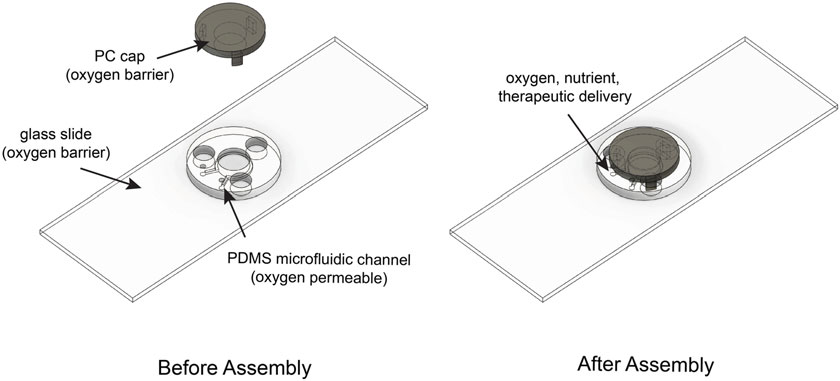
2 재료
세포 배양에 쓰기 전 모든 드랩 재료는 70% 에탄올 침지나 고압멸균으로 소독한다. 세포 배양용 용액·시약을 준비할 때 무균 실험실 기법을 지킨다. 모든 세포 배양 작업은 적절한 개인보호구(PPE)를 착용하고 멸균 생물안전캐비닛 안에서 한다. 세포는 37 °C, 5% CO₂ 가습 배양기에서 배양한다.
2.1 저산소 마이크로장치 설계 및 제작
- CAD(computer-aided design) 소프트웨어: Autodesk Fusion360(Autodesk Inc.).
- 데스크톱 CNC(computer numerical control) 밀링 머신과 제어 소프트웨어: Nomad 883 Pro(Carbide 3D), Carbide Motion(Carbide 3D), 1/16″·1/32″ 2-flute flat end mill(Bantam Tools), 양면테이프(Scotch), 찌꺼기 청소와 기계 유지를 위한 진공 설비.
- 폴리카보네이트(PC) 소재: 4″ × 5″ × 0.236″ polycarbonate(Bantam Tools).
- Vapor polishing: hot plate, dichloromethane(Sigma-Aldrich), 알루미늄 포일, 트위저. Vapor polishing 프로토콜은 Yen et al. [11] 참고.
- 폴리디메틸실록산(PDMS): Dow Corning SYLGARD 184 Silicone Elastomer의 base:curing agent 10:1 혼합물.
122 Jeong Min Oh and Keyue Shen
- Biopsy punch: Φ1.0 mm, Φ4.0 mm, Φ6.0 mm Limited Reuse Biopsy Punch(World Precision Instruments).
- 세포 배양용 클린 유리슬라이드: 일반 1″× 3″ microscope slide(Globe Scientific)를 glass slide rack(Electron Microscopy Sciences)에 놓는다. 10,000-mL 유리비커에 ES-7X cleaning solution(MP Bio) 250 mL와 Milli-Q water(Millipore Sigma) 750 mL를 붓는다. 유리슬라이드 랙을 용액에 담그고 자석 교반바를 비커에 넣는다. 알루미늄 포일로 비커 위를 덮고 magnetic stirrer와 temperature probe가 달린 hot plate 위에 올린다. 목표 온도를 80 °C로 맞추고 용액 속 열탐침으로 확인하며 200 RPM으로 교반해 용액이 투명해질 때까지 둔다(목표 온도 도달 후 보통 30분). 유리슬라이드 랙을 꺼내 탈이온수로 완전히 갈아붓기를 10번 반복해 헹군 뒤 마지막으로 1× Milli-Q water로 마무리한다. 물을 버리고 공기로 유리슬라이드를 말린 뒤 400 °C 전기로에서 6시간 구워 남은 유기물을 모두 제거한다. 사용 전 유리를 실온까지 식힌다.
- 플라즈마 결합용 high-power expanded plasma cleaner: model PDC-001-HP(Harrick Plasma).
2.2 3D 저산소 종양 모델 확립
암세포: SKOV3 사람 상피 난소암 세포(ATCC). Dulbecco’s Modified Eagle’s Medium(DMEM; Thermo Fisher)에 10% v/v 태아우혈청(Sigma-Aldrich), 페니실린 100 U mL⁻¹·스트렙토마이신 100 μg mL⁻¹(P/S, Thermo Fisher), 4 × 10⁻³ M sodium pyruvate(Fisher Scientific), 2 × 10⁻³ M GlutaMAX(Thermo Fisher)를 보충해 T75 플라스크에서 배양. DMEM은 4 °C 보관.
하이드로겔 구성물: 멸균 phosphate-buffered saline(PBS, 1×; VWR)에 녹인 20% w/v gelatin methacryloyl(GelMA; 8% MA) 용액 250 μL. 4 °C 보관. 멸균 PBS에 녹인 2% w/v lithium phenyl-2,4,6-trimethylbenzoylphosphinate(LAP) 75 μL. -80 °C 보관. DMEM 가루(Thermo Fisher) 1.348 g, 7.5% w/v sodium bicarbonate(Thermo Fisher) 0.494 mL, Milli-Q water(Millipore Sigma) 9.51 mL를 섞어 10 mL의 10× 농축 DMEM을 만든다. 10× DMEM의 pH를 7로 조정하고 0.2-μm Nalgene sterile syringe filter(Fisher Scientific)로 여과한 뒤 4 °C 보관. 멸균 1× Ca²⁺-free·Mg²⁺-free PBS(VWR); 실온 보관.
세포 회수용 멸균 1× Ca²⁺-free·Mg²⁺-free PBS(VWR); 실온 보관.
1× trypsin/EDTA 용액(0.05%): 10× trypsin–EDTA(0.5%; Thermo Fisher) 5 mL를 1× Ca²⁺-free·Mg²⁺-free PBS(VWR) 45 mL로 희석. 4 °C 보관.
볼텍스 믹서.
멸균된 100 × 15 mm 및 150 × 15 mm(지름 × 높이) 페트리 접시.
멸균 0.65 mL 마이크로원심튜브.
멸균 15 mL 및 50 mL 원심튜브.
120초 동안 최소 2.34 ± 0.26 mW cm⁻²의 세기로 375 ± 14 nm 파장의 자외선(UV)을 방출할 수 있는 여과된 자외선 광원.
미소기기용 습윤 챔버(배양기 안에서 미소기기를 담아 두는 용기): 멸균 생물안전케비닛에서 준비한다. 킴와이프(Kimwipes, Kimberly-Clark Professional)에 70% IPA를 뿌리고 생물안전케비닛에서 건조시킨다. 접어서 멸균 150 × 15 mm 페트리 접시 안쪽 벽면에 붙여 놓는다. 접은 킴와이프에 멸균수를 적신다. 페트리 접시 안쪽 벽이 젖은 킴와이프로 완전히 둘러싸이도록 한다. 접시에 물이 넘치지 않게 주의하고 남은 멸균수는 흡인해 낸다. 뚜껑을 닫아 사용할 때까지 생물안전케비닛 안에 보관한다.
2.3 CAR-T 세포와 PD-1/PD-L1 억제 요법의 병용 1. T세포 및 CAR-T 세포 배양: 말초혈액단핵세포(PBMCs)에서 인체 T세포를 분리한다. anti-HER2(4D5) scFv CAR 구조를 지닌 렌티바이러스 입자는 -80 °C에 보관한다. Siegler 등 [12]의 방법을 따라 T세포에 CAR 렌티바이러스를 형질도입한다. T세포 배양액은 X-VIVO 15 무혈청 배지(Lonza)에 5% v/v GemCell 인체 혈청 항체 AB(Gemini Bio-Products), 2 × 10⁻³ M GlutaMAX(Thermo Fisher), 10 × 10⁻⁹ M HEPES 완충액(Corning), 1% v/v P/S(Thermo Fisher), 12.25 × 10⁻³ M N-아세틸-L-시스테인(Sigma-Aldrich), 10 ng mL⁻¹ 인체 IL-2(Peprotech)를 첨가해 만든다. T세포 배양액은 4 °C에 보관한다. 2. PD-L1 차단: PD-1/PD-L1 Inhibitor 3 분말 100 mg(Selleck Chemicals, IC₅₀ = 5.6 × 10⁻⁹ M)에 멸균수 1 mL를 넣어 원액(53.99 mM)을 만든다. 원액은 -80 °C에 보관한다. 사용 직전 신선한 T세포 배양액에서 원액을 희석해 10 × 10⁻⁹ M 작업용액을 준비한다.
2.4 세포독성 분석 1. 생사 염색액: 살아있는 세포 염색용 calcein-AM(Thermo Fisher)과 죽은 세포 염색용 프로피듐 아이오다이드(propidium iodide, PI; Thermo Fisher). 세포 배양액에서 calcein-AM과 프로피듐 아이오다이드를 각각 5 μM의 작업 농도로 희석해 염색액을 준비한다. 2. 멸균 1× Ca²⁺·Mg²⁺ 무척 PBS(VWR), 실온 보관. 3. 미소기기를 완전히 분해하기 위한 한쪽날 면도칼. 4. 멸균 100 × 15 mm(지름 × 높이) 페트리 접시.
2.5 면역염색 1. 4% 파라포름알데히드(PFA): 10% PFA 용액(Electron Microscopy Sciences)을 희석해 1× PBS에서 4% v/v PFA를 만든다. 2. 1× PBS 속 0.1% v/v Triton X-100(Fisher Scientific). 3. 4% 소혈청알부민(BSA): BSA(GE Healthcare Biosciences)를 PBS에 녹여(4% w/v) 0.2 μm Nalgene 멸균 주사기 필터(Fisher Scientific)로 여과한 뒤 4 °C에 보관한다. 4. DAPI(4′,6-diamidino-2-phenylindole) 함유 FluoroGel II(Electron Microscopy Sciences). 5. 1차 항체: anti-CD45(HI30; 1:200; Thermo Fisher). 6. 2차 항체: 당나귀 anti-Mouse Alexa Fluor 647(1:500; Thermo Fisher). 7. 유리 커버글라스.
2.6 현미경 관찰 1. Nikon Eclipse Ti-E 역광형 형광현미경(Nikon). 2. Nikon C2 점주사형 공초점현미경(Nikon).
3 방법
3.1 저산소 미소기기 설계 및 제작 1. Autodesk Fusion360으로 저산소 미소기기(캡 구조물과 PDMS 챔버/채널용 마스터 몰드)의 CNC 밀링 툴패스를 만든다(Notes 1, 2 참조). 2. 툴패스를 기계 코드로 변환해 내보낸다(Nomad 883 Pro 밀링용 GRBL). 3. CNC 밀링 기계를 켜고 초기화를 위해 기계 제어 소프트웨어(Carbide Motion)에 연결한다. 기계 스핀들에 1/16″ 2날 플랫 엔드밀을 부착한다. 4. 폴리카보네이트 소재 바닥면에 양면 스카치테이프를 붙이고 소재를 밀링 플랫폼 위에 올린다. 폴리카보네이트 소재 표면을 눌러 플랫폼에 잘 붙도록 한다(Note 3 참조). 5. 기계를 보정하여 기계가 인식하는 좌표가 툴패스 좌표와 일치하는지 확인한다(Note 4 참조). 6. 변환된 툴패스 코드를 기계 제어 소프트웨어(Carbide Motion)에 불러온다. 7. 초기 밀링을 시작한다. 8. 첫 밀링이 끝나면 진공청소기로 폴리카보네이트 찌꺼기를 제거하며 밀링 플랫폼을 정리한다(Note 5 참조). 두 번째 툴패스를 위해 1/16″ 2날 플랫 엔드밀을 1/32″ 2날 플랫 엔드밀로 교체한다. 필요하면 기계를 다시 초기화하고 재보정한다. 9. 최종 밀링을 시작한다. 10. 최종 밀링이 끝나면 진공으로 폴리카보네이트 찌꺼기를 제거한다. 밀링된 폴리카보네이트를 조심스럽게 플랫폼에서 들어낸다. 각 미소기기 부품(캡과 마스터 몰드)마다 밀링 과정을 반복한다. 증기 연마 전에 밀링 부품에서 모든 찌꺼기를 제거한다(Note 6 참조). 11. 증기 연마는 모두 화학 앞치마(fume hood) 안에서 진행한다. 뷰흐너 플라스크에 디클로로메탄 10 mL를 붓고 플라스크 상단을 알루미늄 포일로 덮는다(Note 7 참조). 플라스크를 가열판 위에 올리고 80 °C로 맞춘다. 호스 노즐에서 안정적인 증기류가 관찰될 때까지 기다린다. 12. 안정적인 증기류가 보이면 트위저로 밀링 부품을 집어 증기류 사이를 몇 번 통과시켜 부품 표면 전체가 광학적으로 투명해질 때까지 처리한다(Note 8 참조). 두 부품 모두에 대해 반복한다. 13. 증기가 완전히 증발하도록 연마한 부품을 하룻밤 앞치마 안에 두었다가 물로 헹구고 건조한 뒤 취급한다. 세포 배양에 사용하기 전에 폴리카보네이트 캡을 멸균한다. 14. 압축 여과 공기로 마스터 몰드의 이물질을 부드럽게 제거한다. 굳지 않은 PDMS 혼합물(기제 경화제 = 10:1)을 마스터 몰드에 붓고(Note 9 참조) 65 °C에서 하룻밤 경화시킨다. 15. 경화된 PDMS를 마스터 몰드에서 꺼낸다. 1.0 mm 바이옵시 펀치로 미류체닉 채널의 입구와 출구를 뚫는다. 6 mm 바이옵시 펀치로 PDMS 챔버/채널 중심의 얇은 PDMS 층을 제거한다. 4 mm 바이옵시 펀치로 중앙의 6 mm 구멍 주위에 균등한 간격으로 세 개의 구멍을 만든다(Note 10 참조). 테이프로 PDMS 표면의 이물질을 제거한다.
3.2 3차원 저산소 종양 모델 확립 1. 배양 조건에서의 저산소 기울기는 실리카 미립자 산소 센서와 저산소 고유 세포 표지자인 Glut-1 면역염색으로 특성 평가 및 검증되어 있다[9]. 종양 모델의 기계적 성질은 단축 기계 압축 시험으로 특성 평가되었다[9]. 이 절차에서 세포와 직접 닿는 모든 재료를 멸균한다. 세포와 관련된 모든 과정은 멸균 생물안전케비닛 안에서 수행하며, 세포 배양 시약과 배지는 37 °C로 예열한다. 2. 준비된 PDMS 소자를 깨끗한 유리슬라이드에 플라즈마 결합시킨다(Note 11 참조). 3. 결합된 PDMS–유리슬라이드를 자외선으로 최소 30분간 멸균한다. 4. PDMS–유리슬라이드를 즉시 멸균 150 × 15 mm 세포 배양 접시에 넣고 생물안전케비닛으로 옮긴다(Note 12 참조). 5. LAP 75 μL와 GelMA 250 μL를 볼텍스 믹서로 섞어 작업용 GelMA 용액을 만든다. 섞은 후 용액을 37 °C에 둔다. 6. SKOV3 세포가 든 T75 플라스크를 생물안전케비닛으로 옮긴다. 배양액을 버리고 세포를 1× Ca²⁺·Mg²⁺ 무척 PBS로 씻는다. 7. 예열한 트립신/EDTA 2 mL를 플라스크에 넣고 37 °C, 5% CO₂ 습윤 배양기에서 4분간, 또는 세포가 플라스크 표면에서 떨어질 때까지 배양한다. 8. 세포 배양액 6 mL를 넣어 트립신 활성을 멈추고 세포 현탁액을 15 mL 원심튜브에 옮겨 200 × g에서 5분간 원심분리한다. 9. 세포 펠릿을 흐트러뜨리지 않게 상층액을 조심히 제거하고 예열한 세포 배양액 1 mL로 세포 펠릿을 다시 현탁한다. 10. 세포를 계수하고 0.65 mL 마이크로원심튜브에 1 × 10⁷개 세포를 200 × g에서 5분간 원심분리해 펠릿으로 모은다. 11. 상층액을 버리고 세포 펠릿을 다음 성분으로 다시 현탁한다: 1× Ca²⁺·Mg²⁺ 무척 PBS 24.6 μL, 10× DMEM 10 μL, 작업용 GelMA 용액 65 μL(Note 13 참조). 세포가 든 용액의 최종 pH를 약 7로 맞춘다. 12. 멸균한 폴리카보네이트 캡을 중심 기둥 면이 위를 향하도록 잡고, 세포가 든 GelMA 용액 4 μL를 중심 기둥 표면에 피펫팅한다(Note 14 참조). 13. 폴리카보네이트 캡을 뒤집어 중심 기둥 면(GelMA 용액 방울이 묻은)이 아래를 향하게 한 뒤 즉시 PDMS–유리슬라이드에 캡을 조립한다(Note 15 참조). 14. 조립된 미소기기를 멸균 100 mm × 15 mm 페트리 접시에 넣고 여과된 자외선 광원으로 옮긴다(Note 16 참조). 15. 미소기기를 자외선(파장 375 ± 14 nm)에 2.34 ± 0.26 mW cm⁻²로 120초 노출시켜 GelMA를 가교결합시킨다. 16. 미소기기를 생물안전케비닛으로 되돌려 옮긴다(Note 17 참조). 17. 미소기기의 PDMS 채널을 1× PBS로 씻어 굳지 않은 남은 GelMA를 제거하고 예열한 세포 배양액으로 채운다(소자당 약 20 μL). 18. 미소기기를 습윤 챔버에 넣고, 습윤 챔버를 37 °C, 5% CO₂ 습윤 배양기에 넣는다(Note 18 참조).
3.3 CAR-T 세포와 PD-1/PD-L1 억제의 병용 요법 1. 미소기기는 치료액을 미류체닉 채널에 주입하기 전에 정상산소(PDMS 플러그; Note 15 참조) 또는 저산소(폴리카보네이트 캡) 조건에서 24시간 배양한다. 세포와 관련된 모든 과정은 멸균 생물안전케비닛에서 수행하며 세포 배양 시약과 배지는 37 °C로 예열한다. 2. CAR-T 세포가 든 T75 플라스크를 생물안전케비닛으로 옮긴다. 플라스크의 세포 현탁액을 50 mL 원심튜브에 옮겨 300 × g에서 5분간 원심분리한다. 3. 상층액을 조심히 버리고 펠릿을 다시 현탁한 후 세포를 계수한다. 배양된 미소기기 하나당 CAR-T 세포 8 × 10⁵개를 300 × g에서 5분간 원심분리해 펠릿으로 모은다(Note 19 참조). 4. 상층액을 버리고 세포 펠릿을 PD-L1/PD-1 inhibitor 3 작업용액으로 다시 현탁해 CAR-T 세포 밀도를 4천만 cells/mL로 맞춘다(Note 20 참조). 5. 미소기기가 든 습윤 챔버를 생물안전케비닛으로 옮긴다. 6. 미소기기의 배양액을 빼내고 병용 치료액을 주입한다. 폴리카보네이트 캡/PDMS 플러그가 PDMS–유리슬라이드에 제대로 조립되었는지 확인한다. 7. 미소기기를 습윤 챔버에 넣고, 습윤 챔버를 37 °C, 5% CO₂ 습윤 배양기에 넣는다.
3.4 PD-L1 차단과 CAR-T 세포 병용 치료의 치료 효과 평가 1. 마이크로패턴화된 암세포에 병용 치료를 24시간 적용한다. 병용 치료의 효과는 치료의 세포독성과 3차원 마이크로패턴 종양으로의 CAR-T 세포 침투를 기준으로 평가한다[9]. 세포와 관련된 모든 과정은 멸균 생물안전케비닛에서 수행한다.
3.4.1 세포독성 분석 2. 생사 염색액과 세포 배양 시약을 37 °C로 예열한다. 3. 미소기기가 든 습윤 챔버를 생물안전케비닛으로 옮긴다. 4. 병용 치료액을 제거하고 미류체닉 채널을 신선한 배지로 씻어낸다. 5. 폴리카보네이트 캡/PDMS 플러그를 PDMS–유리슬라이드에서 분리해 미소기기를 해체한다. 한쪽날 면도칼로 유리슬라이드에서 PDMS 챔버/채널을 떼어낸다(Note 21 참조). 6. 마이크로패턴 종양 주변의 남은 배지를 흡인하고 마이크로패턴 종양 위에 생사 염색액 100 μL를 붓는다(Note 22 참조). 마이크로패턴 종양을 습윤 챔버에 다시 넣고 생물안전케비닛에서 실온으로 30분간 배양한다. 7. 생사 염색액을 흡인하고 유리슬라이드를 100 mm × 15 mm 페트리 접시에 놓는다. 8. 100 mm × 15 mm 페트리 접시에 1× PBS를 채워 유리슬라이드 전체가 완전히 잠기도록 한다(Note 23 참조). 9. 분석을 위해 영상을 촬영한다(Note 24 참조).
3.4.2 CAR-T 세포 침투 1. 세포독성 촬영 후, 마이크로패턴 종양 덩어리로의 CAR-T 세포 침투는 면역염색으로 평가할 수 있다. 면역염색은 화학 앞치마에서 수행한다. 추가하는 염색액이 마이크로패턴 종양 전체를 덮도록 한다. 2. PBS가 채워진 페트리 접시에서 유리슬라이드를 꺼내 남은 PBS를 닦아낸다. 3. 마이크로패턴 종양 주변에 남은 PBS를 제거하고 마이크로패턴 종양 위에 4% PFA 100 μL를 붓는다. 4. 실온에서 30분간 배양한다. 5. 4% PFA를 제거하고 PBS로 씻는다. 6. PBS를 제거하고 마이크로패턴 종양 위에 0.1% Triton X-100 100 μL를 붓는다. 7. 실온에서 30분간 배양한다. 8. 0.1% Triton X-100을 제거하고 PBS로 씻는다. 9. PBS를 제거하고 마이크로패턴 종양 위에 4% BSA 용액 100 μL를 붓는다. 10. 실온에서 2시간 배양한다. 11. 4% BSA 용액을 제거하고 희석한 anti-CD45 1차 항체 용액(1:200) 60 μL를 마이크로패턴 종양 위에 붓는다. 12. 4 °C에서 하룻밤 배양한다. 13. 1차 항체 용액을 제거하고 PBS로 회씻기를 5분씩 세 번 한다. 마지막 세척 후 마이크로패턴 종양에 4% BSA 용액 100 μL를 넣는다. 14. 4% BSA 용액을 제거하고 희석한 당나귀 anti-Mouse Alexa Fluor 647 2차 항체 용액(1:500) 60 μL를 마이크로패턴 종양 위에 붓는다. 15. 빛을 차단하고 실온에서 2시간 배양한다. 16. 2차 항체 용액을 제거하고 PBS로 회씻기를 5분씩 세 번 한다. 17. PBS를 제거하고 마이크로패턴 종양을 DAPI 함유 FluoroGel II로 덮는다. 18. 빛을 차단하고 실온에서 30분간 배양한다. 19. 각 마이크로패턴 종양 위에 유리 커버글라스를 올린다. 20. 분석을 위해 영상을 촬영한다(Note 25 참조).
4 Notes
- 저산소 미소기기의 설계는 Autodesk Fusion360에서 만들고(Fig. 2) Nomad 883 Pro 밀링 기계와 소프트웨어로 제작했다. 그러나 저산소 미소기기의 설계 분해능을 달성할 수만 있다면 다른 CAD 소프트웨어, 다른 CNC 밀링 기계와 소프트웨어도 사용할 수 있다. 미소기기는 (1) 산소 확산 간격 크기를 정하는 중심 기둥(직경 6 mm)과 세 개의 기준 기둥을 갖춘 캡 구조물(예: 중심 기둥은 기준 기둥보다 100 μm 짧다)과 (2) (3) 깨끗한 유리슬라이드에 플라즈마 결합된 PDMS 챔버/채널로 구성된다. 저산소 종양 배양 시에는 캡이 PDMS 챔버에 단단히 조립된다(Fig. 3). 이 소자 설계에서 예상되는 산소의 공간적·시간적 분포는 COMSOL Multiphysics 시뮬레이션으로 보인 바 있다[9].
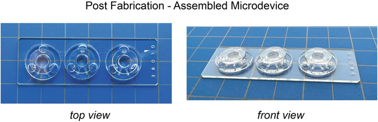
- 각 부품의 밀링 툴패스는 “adaptive clearing” 러핑 전략을 사용해 만든다. 제작 과정에서 쓰는 각 플랫 엔드밀마다 별도의 툴패스를 만든다(예: 1/16″과 1/32″ 플랫 엔드밀은 각자 자신의 툴패스가 있다). 큰 플랫 엔드밀은 폴리카보네이트 소재를 빠르게 깎아내는 데, 작은 플랫 엔드밀은 디테일 작업에 쓴다.
- 밀링 플랫폼에 소재를 고정하는 다른 방법이 있다면 양면 스카치테이프는 필요 없다. 소재가 플랫폼에 잘 붙지 않으면 밀링 도중 부서질 수 있다.
- 이 과정을 기계 “영점 잡기(zeroing)”라고 한다. 기계에 소재 위치와 밀링 시작 지점을 알려 주는 것이다.
- 밀링된 부품을 진공청소기로 직접 빨아들이지 않는다. 원래 위치에서 밀려나갈 수 있기 때문이다. 두 번째 툴패스를 정확히 밀링하려면 밀링 부품의 위치가 그대로 유지되는 것이 매우 중요하다.
- 폴리카보네이트 찌꺼기를 제거하지 않고 화학 증기 연마를 하면 원치 않는 찌꺼기가 밀링 부품 표면에 파묻힌다.
- 플라스크 상단을 덮으면 디클로로메탄 증기가 좁은 호스 노즐로 빠져나가면서 안정적인 증기류가 만들어진다.
- 디클로로메탄 가스는 독성이 있으므로 증기 연마 동안 적절한 개인보호구(PPE)를 착용한다. 연마 중 호스 노즐과 직접 접촉하지 않는다. 밀링 부품과 호스 노즐 사이 거리를 약 1 cm 이상 유지하는 것이 가장 좋다는 것을 경험적으로 알았다. 증기류에 장시간(연속 1초 초과) 노출되면 미소기기의 의도된 설계가 망가질 수 있다. 증기 연마 직후의 부품 표면은 말랑해져 긁힘에 매우 취약하므로 취급에 주의한다.
- 경화 전에 진공 데시케이터로 PDMS 혼합물의 기포를 모두 제거한다.
- 펀칭 전에 펀칭된 PDMS 챔버를 보여 주는 그림(Figs. 1, 3)을 자세히 살핀다. 6 mm 구멍과 4 mm 구멍은 미소기기 조립 시 폴리카보네이트 캡이 PDMS 챔버/채널 중심에 맞도록 배치한다. 폴리카보네이트 캡의 세 개 기준 기둥 모두가 PDMS 챔버/채널을 늘이지 않고 4 mm 구멍에 들어가는지 확인한다. 4 mm 구멍 위치가 어긋나면 미소기기 조립이 어려워지고 저산소 유도가 깨진다.
- 각 플라즈마 처리 최소 15분 전에 플라즈마 클리너 전원을 켜 둔다. PDC-001-HP 플라즈마 클리너(Harrick Plasma)의 경우 PDMS와 유리슬라이드를 “low” 출력으로 1분간 처리한다.
Fig. 2 저산소 미소기기 제작에 필요한 부품들의 CAD 설계와 치수. 저산소 미소기기를 만들려면 PDMS 챔버/채널용 마스터 몰드와 캡을 밀링해야 한다. 두 부품 모두 폴리카보네이트로 제작한다.
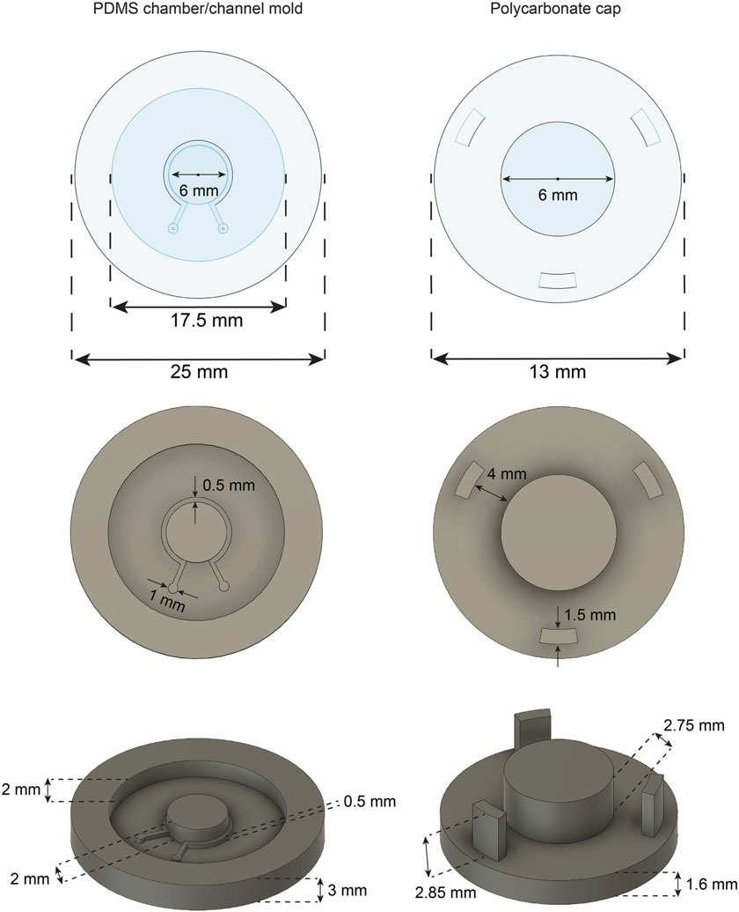
Fig. 3 제작 후 조립된 저산소 미소기기 사진
플라즈마 처리 직후 처리된 표면에 접촉시킨다. PDMS 표면 전체가 유리슬라이드에 완전히 결합되는지 확인한다. 불완전한 결합은 미류체닉 채널의 구조적 무결성을 해치고 누수를 일으킬 수 있다. 미소기기 안에 이물질이 들어가지 않도록 깨끗한 작업 공간에서 플라즈마 결합을 수행한다. 12. 페트리 접시 하나에 유리슬라이드 두 장까지가 취급하기 가장 좋다는 것을 경험적으로 알았다. 13. 작업용 GelMA 용액의 점성 때문에 세포가 고르게 섞인 GelMA 용액을 만들기가 쉽지 않다. PBS와 10× DMEM을 먼저 세포 펠릿에 넣어 피펫으로 수작업으로 재현탁한 뒤 작업용 GelMA 용액을 넣는 것이 가장 좋다. 볼텍스 믹서를 써서 용액 속 세포가 균질하게 분포되도록 하는 것이 좋다. 볼텍스 믹서로 재현탁할 때 살아있는 세포가 다칠 수 있으니 각별히 조심한다. 볼텍스 믹서를 “touch mode”로 설정하고 필요할 때마다 짧게(약 1초) 섞는 방식이 가장 좋다. 14. GelMA 용액은 중심 기둥의 중심에 있어야 한다. 준비된 GelMA 용액 4 μL에는 약 40,000개의 세포가 들어 있다. 이 GelMA 용액으로 최대 24개의 미소기기를 만들 수 있다. 15. 이 단계는 저산소 종양 모델 확립에서 가장 결정적인 단계다. Note 9에서 말했듯이 세 개의 기준 기둥을 4 mm 구멍에, 중심 기둥은 PDMS 중앙의 6 mm 구멍에 넣어야 한다. 폴리카보네이트 캡을 아래로 눌러 세 기준 기둥 모두가 유리슬라이드에 닿도록 하고 캡이 PDMS에 단단히 조립되었는지 확인한다. 또한 GelMA 용액이 중심 기둥 위에 골고루 퍼져 중심 기둥과 유리슬라이드 사이 간격을 가득 채우는지 확인한다. 기포 없이 균일하게 분포된 GelMA 마이크로패턴이 만들어질 때까지 GelMA 용액을 흡인했다가 다시 피펫팅한다. 캡이 PDMS에 완전히 고정되지 않으면 배양액을 넣은 뒤 캡이 분리될 수 있고, 그러면 종양 모델에서 저산소 기울기를 만들 수 없게 된다. 16. 명시된 멸균 페트리 접시 크기는 우리 자외선 플랫폼에 맞는 것이다. 다른 멸균 운반 방법을 사용해도 된다. 17. 가교결합 후 폴리카보네이트 캡은 저산소 배양을 위해 그대로 조립해 두거나, 분리하고 6 mm 바이옵시 펀치로 만든 PDMS 플러그로 교체해 정상산소 배양을 한다. 18. 습윤 챔버는 미소기기가 마르지 않도록 확실히 보장한다. 19. CAR-T 세포는 각 미소기기에 효과세포/표적세포(E:T) 비율 20:1로 주입한다(각 3차원 마이크로패턴 종양에 약 40,000개의 표적세포가 있다고 가정). 따라서 각 미소기기에 CAR-T 세포 8 × 10⁵개를 주입해야 한다. 20. 이 PD-1/PD-L1 억제제와 CAR-T 세포의 혼합물이 병용 치료액이다. 각 미소기기는 병용 치료액 약 20 μL를 담을 수 있다. 21. 면도칼이 마이크로패턴 종양을 다칠 수 있으므로 PDMS 제거 시 극도로 조심한다. 경험상 절단할 때 칼날을 PDMS–유리슬라이드에서 약 20° 각도로 두는 것이 가장 좋다. 유리 접촉면의 50% 초과 부분을 잘랐으면 PDMS 챔버/채널을 손으로 벗겨낸다. 다만 플라즈마 결합 강도에 따라 더 깊은 절단이 필요할 수 있다. 완전히 해체한 뒤에는 마이크로패턴 종양(가교결합된 세포 함유 GelMA)만 유리슬라이드에 남아 있어야 한다. 22. (1) 마르지 않도록 하고 (2) 마이크로패턴 전체가 염색되도록 생사 염색액이 마이크로패턴 종양을 완전히 덮어야 한다. 23. 마이크로패턴 종양은 촬영을 위해 1× PBS에 잠근다(즉, 균질한 굴절률 환경을 제공한다). 페트리 접시를 PBS로 꽉 채울 필요는 없다. 흘러넘침 같은 실수를 막으려면 접시 반쯤 PBS를 채우는 것이 좋다고 생각한다. 24. 영상은 ImageJ, Python, MATLAB 소프트웨어로 분석할 수 있다. 세포독성은 마이크로패턴 종양에서 PI 양성 세포(죽은 세포)로 확인된 개수를 세어 정량화한다. 죽은 세포 위치는 각 마이크로패턴의 무게중심을 기준으로 잡아, 바깥쪽으로 커지는 100개의 동심원 구간에 나누고 마이크로패턴 반지름에 대해 도시한다. 결과에 관한 추가 정보는 우리 연구 [9]에 있다. 25. 영상은 ImageJ, Python, MATLAB 소프트웨어로 분석할 수 있다. 침투는 CD45⁺ 세포 무게중심에서 가장 가까운 GelMA 내 매립 SKOV3 암세포 또는 가장 가까운 GelMA 경계까지의 거리를 재어 정량화한다. 결과에 관한 추가 정보는 우리 연구 [9]에 있다.
감사의 글 본 연구는 NIH National Cancer Institute 보조금(R01CA220012), STOP CANCER Marni Levine Memorial Research Career Development Award, USC Viterbi School of Engineering, USC Provost’s PhD Fellowship의 지원을 받았다. 또한 NIH National Cancer Institute Award(P30CA014089)의 공동 이용 자원 지원도 받았다.
References 1. Larson RC, Maus MV (2021) Recent advances and discoveries in the mechanisms and functions of CAR T cells. Nat Rev Cancer 21(3):145–161. https://doi.org/10.1038/s41568-020-00323-z — 7. Petrova V, Annicchiarico-Petruzzelli M, Melino G, Amelio I (2018) The hypoxic tumour microenvironment. Oncogenesis 7(1):10. https://doi.org/10.1038/s41389-017-0011-9 2. Maude SL, Frey N, Shaw PA 외 (2014) Chimeric antigen receptor T cells for sustained remissions in leukemia. N Engl J Med 371(16):1507–1517. https://doi.org/10.1056/NEJMoa1407222 — 8. Barsoum IB, Smallwood CA, Siemens DR, Graham CH (2014) A mechanism of hypoxia-mediated escape from adaptive immunity in cancer cells. Cancer Res 74(3):665–674. https://doi.org/10.1158/0008-5472.Can-13-0992 3. Hou AJ, Chen LC, Chen YY (2021) Navigating CAR-T cells through the solid-tumour microenvironment. Nat Rev Drug Discov 20(7):531–550. https://doi.org/10.1038/s41573-021-00189-2 — 9. Ando Y, Siegler EL, Ta HP 외 (2019) Evaluating CAR-T cell therapy in a hypoxic 3D tumor model. Adv Healthc Mater 8(5):1900001. https://doi.org/10.1002/adhm.201900001 4. Sterner RC, Sterner RM (2021) CAR-T cell therapy: current limitations and potential strategies. Blood Cancer J 11(4):69. https://doi.org/10.1038/s41408-021-00459-7 — 10. Grosser R, Cherkassky L, Chintala N, Adusumilli PS (2019) Combination immunotherapy with CAR T cells and checkpoint blockade for the treatment of solid tumors. Cancer Cell 36(5):471–482. https://doi.org/10.1016/j.ccell.2019.09.006 5. Wagner J, Wickman E, DeRenzo C, Gottschalk S (2020) CAR T cell therapy for solid tumors: bright future or dark reality? Mol Ther 28(11):2320–2339. https://doi.org/10.1016/j.ymthe.2020.09.015 — 11. Yen DP, Ando Y, Shen K (2016) A cost-effective micromilling platform for rapid prototyping of microdevices. Technology (Singap World Sci) 4(4):234–239. https://doi.org/10.1142/S2339547816200041 6. Hamanishi J, Mandai M, Iwasaki M 외 (2007) Programmed cell death 1 ligand 1 and tumor-infiltrating CD8+ T lymphocytes are prognostic factors of human ovarian cancer. Proc Natl Acad Sci U S A 104(9):3360–3365. https://doi.org/10.1073/pnas.0611533104 — 12. Siegler E, Li S, Kim YJ, Wang P (2017) Designed ankyrin repeat proteins as Her2 targeting domains in chimeric antigen receptor-engineered T cells. Hum Gene Ther 28(9):726–736. https://doi.org/10.1089/hum.2017.021
이식된 T세포의 대사 적응(metabolic fitness), 줄기성(stemness), 지속성은 ACT의 전체 효능을 결정하는 핵심 변수임이 입증되었다[9, 10]. 특히 줄기세포 같은 성질을 지닌 초기 기억 T세포 아집단은 전임상 마우스 종양 모델에서 놀라운 활성을 보였고[11–14], CAR-T[15–17], TCR-T[18], TIL 요법[19]에서 객관적 반응과 상관관계를 보였다. 이런 줄기세포형 T세포는 왕성한 증식 능력, 극도의 수명, 다기능성(polyfunctionality, 즉 여러 사이토카인을 동시에 생산하는 능력)으로 특징지어진다[11, 14, 20–22]. 현재 ACT 효능을 높이기 위해 T세포의 줄기성과 기능적 건강 상태를 키우는 새 방법 개발에 노력이 집중되고 있다. 전략으로는 T세포 대사 조절[23–26], 신호 전달 경로 조절[11, 27–29], miRNA 조절[30–32], 전사 인자 조절[33–35], 후성유전자 조절 인자(epigenetic regulator)[36–38] 등이 있다. 수많은 후보 물질이 연구기관과 바이오텍 기업의 파이프라인에 들어 있다. 이런 분자들을 마우스 모델에서 생체 내 평가하는 것은 임상 적용 가능성을 판단하는 최종 시험이지만 비용과 시간이 많이 든다. 한 번에 시험할 수 있는 전략 수가 제한적이므로 생체 내 효능을 대신할 생체 외 대용 평가법이 필요하다. 최근 다기능성이 CD19 특이적 CAR-T 세포 치료 후 반응군과 진행성 질환 환자를 뚜렷이 구분한다는 사실이 밝혀졌다[39]. 그러나 T세포 제품의 이질성 때문에 벌크 수준에서 측정하면 사이토카인 분비 차이가 가려지곤 한다. 이 장에서는 IsoLight 자동화 플랫폼 기반의 고다중화 단일세포 분비체(secretome) 분석법을 자세히 소개한다. 이 분석법은 단일 세포가 생산하는 서로 다른 사이토카인을 최대 32종까지 분석한다. 각 샘플은 단일 IsoCode 칩에 올려지며, 개별 세포들은 독립된 미세챔버에서 배양되고, 분비된
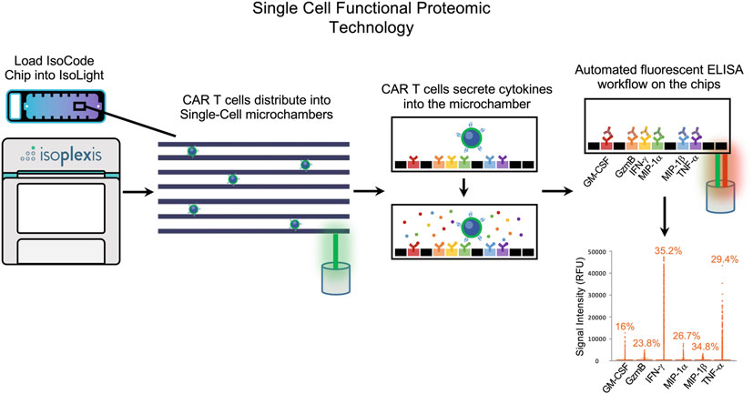
Fig. 1 IsoCode 칩 기술을 이용한 고다중화 단일세포 분비체 분석의 개념도. CAR-T 세포를 IsoCode 칩에 올리고 이 칩을 IsoLight 기기에 넣는다. IsoLight 시스템이 올려진 IsoCode 칩을 자동으로 처리한다. 세포들은 IsoCode 칩 안의 개별 챔버로 분리되며, 형광 영상으로 단일 세포가 있는 챔버를 식별한다. 패터닝된 단백질체 바코드(proteomic barcode)가 분비된 사이토카인을 포획하고, 단백질체 바코드의 공간적 위치로 사이토카인 신호 강도를 검출한다.
- AIM-V 완전 배지; AIM-V 배지, 5% FBS, 1× 페니실린/스트렙토마이신(페니실린 100 U/mL, 스트렙토마이신 100 μg/mL), 2 mM L-글루타민, 10 mM HEPES.
- 인체 IL-2.
- 인산완충식염수(PBS).
- CD19-K562와 NGFR-K562 세포.
- aCD19-CAR T 세포.
- IsoCode 칩 – 단일세포 분비체 ISOCODE-1001-4(IsoPlexis).
- Single-Cell Adaptive Immune panel-4 Human PANEL-1001-4(IsoPlexis).
- 선택 사항: Cell Membrane STAIN-1001-1(IsoPlexis).
- 디메틸설폭사이드(DMSO).
- 소혈청알부민(BSA).
- 표적세포 제거 키트(CD235a 특이적 마이크로비즈, Miltenyi Biotec 또는 Invitrogen).
- CD8-AF647 anti-human CD8 항체(IsoPlexis).
- LS 컬럼(Miltenyi Biotec).
- MACS Separator.
- 노이바워 계수판(Neubauer counting chamber).
- 트리판 블루.
2.2 죽은 세포 제거 1. Dead cell removal kit(Miltenyi Biotec). 2. Ficoll.
2.3 세포내 사이토카인 염색 1. 모네신(monensin). 2. 브레펠딘 A(brefeldin A). 3. 고정/투과화 키트(BD Biosciences). 4. 유동세포측정으로 사이토카인 검출용 형광색소 결합 항체.
2.4 장비 및 소모품 1. T25 및 T75 세포 배양 플라스크. 2. 24웰 플레이트. 3. 96웰 원형바닥 세포 배양 플레이트. 4. 50 mL 코니컬 튜브. 5. 15 mL 코니컬 튜브. 6. 피펫. 7. IsoLight. 8. 원심분리기. 9. 층류 후드(laminar flow hood). 10. 세포 배양 배양기. 11. 수조(water bath). 12. 유동세포계(flow cytometer).
3 방법 프로토콜 개요는 Fig. 2에 나와 있다. 공배양 분석 7일 전에 표적 종양 세포주를 회복시켜야 한다. CD19 특이적 CAR-T 세포의 항원특이적 자극에는 CD19 항원 발현 세포주가 필요하고, 음성 대조구로는 CD19 음성 세포주면 무엇이든 쓸 수 있다. 여기서는 CD19 항원을 발현하도록 유전적으로 변형된 K562 세포(ATCC의 만성골수성백혈병 세포주)[40]를 이용하는 분석법을 설명한다. 또한 음성 대조구로는 truncated 저친화성 신경성장인자 수용체(NGFR-K562)를 발현하도록 변형된 K562 세포를 사용한다[40].
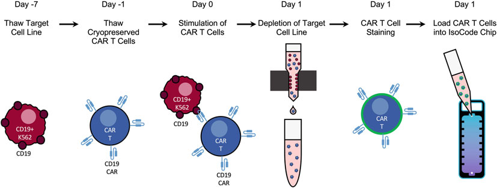
Fig. 2 고다중화 단일세포 분비체 분석 프로토콜 개요. 동결보관 표적세포는 CAR-T 세포 자극 7일 전에 해동한다. 동결보관 CAR-T 세포는 자극 하루 전에 해동하고 200 IU/mL IL-2를 첨가한 AIM-V 완전 배지에서 하룻밤 배양한다. CD8⁺ CAR-T 세포는 표적세포주와 1:1 비율로 공배양하여 자극한다. 37 °C, 5% CO₂에서 16–18시간 배양한 후 남은 종양세포는 CD235a 특이적 마그네틱 비즈 분리로 제거한다. CD8⁺ T세포는 CD8 특이적 항체(예: anti-CD8-AF647)로 염색해 IsoCode 칩에 올린다.
3.1 표적 세포주와 비표적 세포주 배양 1. 동결보관 표적 종양 세포주는 CAR-T 세포 자극 최소 7일 전에 해동해야 한다. CAR-T 세포 자극에 충분한 생존 세포를 확보하려면 동결보관 바이알 하나당 최소 2 × 10⁶개의 세포가 들어 있도록 권장한다. 2. 세포주마다 50 mL 코니컬 튜브를 하나씩 준비해 세포주 이름을 표기한다. 3. 두 50 mL 코니컬 튜브에 RPMI 완전 배지 10 mL씩 넣는다. 4. 50 mL 튜브 뚜껑을 닫고 튜브를 37 °C 수조에 10분간 둔다. 5. 액체질소에서 동결보관 세포주 바이알을 꺼내 세포 현탁액이 거의 완전히 녹을 때까지 잠깐 수조에 넣는다. 6. 동결 바이알의 세포를 천천히 피펫팅해서 미리 표기해 둔 RPMI 완전 배지가 든 50 mL 튜브로 옮긴다. 7. 코니컬 튜브 뚜껑을 닫고 300 × g에서 10분간 원심분리한다. 8. 상층액을 버리고 세포 펠릿을 RPMI 완전 배지 1 mL에 현탁해 세포를 계수한다. 9. RPMI 완전 배지에서 0.5 × 10⁶ cells/mL 농도로 T25 플라스크에 세포를 접종한다. 10. 2–3일마다 배지를 교환하고 농도를 0.1 × 10⁶~10⁶ cells/mL 사이로 유지한다. T25 플라스크는 최대 20 mL까지, T75는 최대 50 mL까지 쓴다.
3.2 동결보관 CAR-T 세포 해동 1. 이상적으로는 CAR-T 세포를 최소 5 × 10⁶개 이상, 표적 T세포로 자극하기 하루 전에 해동한다. 2. 참고로 CAR-T 세포의 다기능성을 최적으로 비교하려면 샘플들이 비슷한 CAR-T 세포 빈도를 가져야 한다. CAR 형질도입률이 고르지 않으면 마그네틱 비즈나 유동세포측정 정렬로 CAR 양성 T세포를 농축한다. CAR의 항원결합 부위를 방해하는 항체나 CAR 검출 시약은 쓰지 않는다. 3. CAR-T 세포 유형마다 50 mL 코니컬 튜브를 하나씩 준비해 이름을 표기하고 RPMI 완전 배지 10 mL를 채운다. 4. 각각의 동결보관 CAR-T 세포 바이알을 꺼내 세포가 거의 완전히 녹을 때까지 37 °C 수조에 잠깐 넣는다. 5. 세포를 미리 표기해 둔 해당 코니컬 50 mL 튜브로 옮긴다. 6. 실온에서 300 × g, 10분간 원심분리한다. 7. 상층액을 제거하고 AIM-V 완전 배지에 세포를 현탁한다. 8. 소량을 트리판 블루로 희석해 세포를 계수한다. 9. 200 IU/mL IL-2를 보강한 AIM-V 완전 배지에서 3 × 10⁶ cells/mL 농도로 24웰 플레이트(웰당 2 mL)에 세포를 접종한다.
3.3 CD19 특이적 CAR CD8⁺ T세포의 항원특이적 자극 1. CD19-K562와 NGFR-K562 세포주용 50 mL 코니컬 튜브 두 개, 시험할 CAR CD8⁺ T세포 유형마다 하나씩 튜브를 준비해 표기한다. 2. CAR CD8⁺ T세포와 표적세포를 배양기에서 꺼내 현탁하고 미리 표기해 둔 50 mL 코니컬 튜브로 옮긴다(벌크 CAR-T 세포는 Note 1 참조). 3. 300 × g에서 10분간 원심분리한다. 4. 각 세포 펠릿을 AIM-V 완전 배지 1 mL에 현탁한다. 5. 각 세포 현탁액 소량을 취해 트리판 블루로 희석한 후 세포 수와 생존율을 측정한다(Note 2 참조). 6. CD19-K562, NGFR-K562, CD19 특이적 CAR CD8⁺ T세포를 AIM-V 완전 배지에서 2 × 10⁶ cells/mL 농도로 현탁한다. 세포 자극은 IL-2 없이 수행함에 유의한다. 7. 96웰 원형바닥 플레이트를 준비해 한쪽 부분에 “NGFR-K562 + CAR CD8⁺ T”, 다른 부분에 “CD19-K562 + CAR CD8⁺ T”라고 표기한다. 조건마다 다섯 웰을 권장한다.
- 표적세포 현탁액 100 μL를 미리 표기해 둔 96웰 원형바닥 플레이트의 웰에 피펫팅한다. 웰당 2 × 10⁵개 T세포가 되어야 한다.
- K562 세포가 든 각 웰에 CD19 특이적 CAR CD8⁺ T세포 현탁액 100 μL씩 피펫팅한다.
- 세포를 배양기에서 37 °C, 5% CO₂로 13–20시간 유지한다(Note 3 참조).
3.4 표적세포 제거 1. 적절한 배양 시간(13–20시간; Note 3 참조)이 지나면 표적세포를 제거해야 한다. 2. CD19-K562와 NGFR-K562의 제거는 제조사 지침을 따라 CD235a 특이적 마이크로비즈(Miltenyi Biotec 또는 Invitrogen)로 CD235a 항원을 표적으로 하여 달성할 수 있다. 3. 표적세포 제거 후 T세포(CD235a 음성 분획)를 300 × g에서 10분간 원심분리한다. 4. 상층액을 제거하고 세포 펠릿을 PBS 1 mL에 현탁한 뒤 세포를 1.5 mL 에펜도르프 튜브로 옮긴다. 5. 막 염색으로 진행한다.
3.5 칩 해동 1. 분석을 시작하려면 최소 4장의 IsoCode 칩을 올려야 한다. 2. 필요한 수의 IsoCode 칩을 -20 °C에서 꺼내 올릴 때까지 실온에 둔다. 칩은 올리기 30–60분 전에 해동해야 한다. 3. 칩 오염을 피하려면 해동 중 원래 포일 속에 닫아 보관하는 것이 중요하다.
3.6 막 염색(선택 사항) 막 염색은 비특이적이며 샘플 속 모든 세포를 염색한다. 염색 직전 DMSO와 PBS로 희석해 준비해야 한다. 1. 막 염색약을 실온에서 해동한다. 2. 막 염색약이 든 튜브를 잠깐 스핀다운한다. 3. 막 염색약 바이알에 DMSO 20 μL를 넣고 피펫으로 현탁한다. 4. PBS에서 막 염색약을 추가 희석한다(1:500). 5. CAR CD8⁺ T세포 1 × 10⁶개당 막 염색약 100 μL를 넣는다. 6. 빛을 차단하고 37 °C에서 10분간 배양한다. 7. 배양 후 세포를 재현탁하고 완전 배지를 5배 부피만큼 넣는다. 8. 빛을 차단하고 37 °C에서 10분 더 배양한다. 9. 세포를 300 × g에서 10분간 원심분리한다. 10. 상층액을 버린다. 11. 세포를 0.5% BSA 보강 PBS에 현탁하고 CD8 T세포 염색으로 진행한다.
3.7 CD8-AF647 염색 1. 최대 10⁶개 세포를 0.5% BSA 보강 PBS 20 μL에 현탁한다. 1. CD8-AF647 항체 2 μL를 넣는다. 2. 빛을 차단하고 실온에서 20분간 배양한다. 3. 0.5% BSA 보강 PBS 1 mL로 씻는다. 4. 선택: 유동세포계 품질관리용 앨리콧을 따로 둔다. 1. 세포를 300 × g에서 10분간 원심분리한다. 2. 상층액을 제거하고 세포 펠릿을 AIM-V 완전 배지에 현탁한다.
3.8 칩 로딩 1. 염색한 세포를 AIM-V 완전 배지에서 10⁶ cells/mL 농도로 현탁한다. 1. 칩 하나에 세포 30,000개를 로드한다. 즉, 세포 현탁액 30 μL를 칩의 로딩 포트로 피펫팅한다. 피펫 팁이 로딩 포트 바닥에 살짝 닿아야 한다. 피펫팅 시 기포가 생기지 않도록 첫 정지점(first stop)까지만 눌러 배출한다.
3.9 IsoLight에 시약 튜브 장착 1. cocktail A와 cocktail B 바이알을 잠깐 스핀다운한다. 1. cocktail A 혼합 튜브에 적정량(바이알에 표기된)의 cocktail A를 넣는다. 마찬가지로 cocktail B 혼합 튜브에 적정량(바이알에 표기된)의 cocktail B를 넣는다. 1. cocktail A와 B 튜브 및 시약 1–8을 장착하려면 각 튜브 뚜껑을 열고 IsoLight에 sipper를 부착한 다음, 각 튜브를 표기된 위치로 돌려 끼운다. 각 튜브에는 sipper 하나가 들어가야 한다. 시약 교차 오염에 주의하고 장갑을 깨끗하게 쓰며 필요하면 갈아낀다.
3.10 분석 실행 1. IsoLight의 CO₂ 수준, 마지막 청소 기록, 폐액 병의 잔량을 확인한다. 1. 실행 전에 데이터 업로드 연결을 설정하거나, 아니면 실행 완료 후 데이터 파일을 내보낸다. 1. Single-Cell Secretome 아이콘을 눌러 프로그램을 시작한다. Single Cell Adaptive Immune을 선택하고 안내에 따른다. 1. 로드된 IsoCode 칩을 IsoLight 칩실에 넣기 전에 세포 현탁액이 칩 안으로 들어갔는지 확인한다. 로딩 포트에 액체가 남아 있으면 안 되며, 칩 아랫부분을 보면 액체가 칩 표면의 약 3분의 1을 덮고 있음이 보여야 한다. 5. IsoLight 칩 트레이에 놓기 직전에 칩 밑면의 파란 테이프를 뗀다. 칩은 항상 트레이 가운데 부분에 놓는다. 예컨대 네 개의 칩을 쓴다면 왼쪽 두 자리와 오른쪽 두 자리는 비워 둔다. 두 칩 사이에 빈 공간을 절대 두지 않는다.
3.11 데이터 분석 실행과 데이터 업로드가 끝나면 데이터 업로드 장치를 분리한다. 1. IsoSpeak 소프트웨어를 실행하고 New Project를 클릭한다. 2. 원하는 프로젝트 제목을 입력하고 SC Adaptive Immune Human 애플리케이션을 선택한다. 3. 프로젝트를 저장하고 IsoSpeak 소프트웨어에서 PROJECT INFO를 클릭한다. 4. IMPORT를 클릭하고 Instrument data를 고른다. 5. 분석할 칩 ID를 선택해 실험을 업로드한다. 6. 기기 데이터가 불러와지면 프로젝트 세부 정보를 입력한다. 7. 세포를 막 염색약으로 염색했다면 Cell Type에서 CD3 Violet을 선택한다(막 염색은 비특이적이므로 제거되지 않고 남은 표적세포까지 같이 염색된다는 점에 유의). 8. AF647 anti-human CD8 항체로 염색한 세포는 Cell Type에서 CD8(빨강)을 선택한다. 9. Stimulants에 각 칩에 사용한 표적세포주를 입력한다. 10. 분석자, 공여자 ID, 공여자 그룹, 세포 생존율, 형질도입률 정보를 입력한다. 11. DATA PROCESSING을 클릭하고 모든 실험을 선택한 뒤 Analyze를 누른다. 분석은 완전 자동이며 소프트웨어가 진행 상황을 알려 준다. 12. 분석이 완료되면 quality cells 열에 각 칩에서 분석된 세포 수가 표시된다. 세포가 둘 이상 들어간 챔버는 소프트웨어가 제외한다. IsoQ 점수는 분석 데이터의 품질을 나타낸다. 13. IsoSpeak 소프트웨어는 검출된 사이토카인의 신호 강도와 빈도, 다기능 세포 비율, 다기능 강도 지수(polyfunctional strength index), 다기능 그룹을 보여 주는 원시 데이터 표를 생성한다. 또한 분비 빈도·신호 강도·다기능성·PSI(Fig. 3)를 보여 주는 그래프가 자동으로 만들어진다(Fig. 4a 참조; Note 4 참조). 기능 히트맵, 다기능 활성 위상 PCA, t-SNE도 다차원 데이터를 알기 쉬운 시각화로 보여 주도록 자동 생성된다.
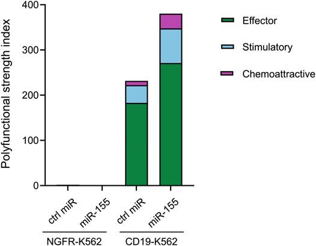
- 각 그래프에는 서로 다른 필터(공여자, 공여자 그룹, 마커 등), 그래프 옵션, 실험 선택을 적용할 수 있다. 막 염색약과 CD8-AF647로 모두 염색한 세포라면 CD3⁺CD8⁺만 선택해야 한다.
- 그래프와 원시 데이터는 전체 단백질 또는 유의하게 분비된 단백질만 보여줄 수 있다. Secreted 옵션은 배경 신호보다 3표준편차 낮은 신호 강도, 2% 미만 세포 또는 20세포 미만에서 분비된 사이토카인을 제외한다. miR-155 과발현 CD19 특이적 CAR-T 세포로 얻은 데이터 해석은 Note 4를 참조하라.
Fig. 3 다기능 강도 지수(PSI)는 샘플의 모든 단일세포 다차원 사이토카인 분비를 단일 지수로 보여준다. miR-155 과발현(94.7% 형질도입) 또는 Ctrl miR(94% 형질도입) CD19 특이적 CAR-T 세포에서 PSI 차이를 대표적으로 보여준다. PSI는 다기능 세포의 백분율에 다기능 세포가 분비하는 단백질의 평균 형광 강도(MFI)를 곱해 얻는다.
Fig. 4 벌크가 아닌 고다중화 단일세포 분비체 분석이 miR-155 과발현 CAR-T 세포의 향상된 다기능성을 드러낸다. (a) miR-155 또는 Ctrl miR을 과발현하는 CD19 특이적 CAR CD8⁺ T세포 개별 세포 아집단이 서로 다른 사이토카인 조합을 동시에 만들어 내는 것을 보여 주는 단일세포 분비체 다기능성 히트맵. 데이터는 CD19-K562 세포와 16시간 공배양 후의 값이다. 점선 사각형은 대표적인 건강한 공여자 한 명에서 miR-155 과발현 CD19 특이적 CAR CD8⁺ T세포의 독특한 다기능성 프로파일을 강조한다. 모든 실험은 CD19 특이적 CAR 형질도입률 >90%인 CD8⁺ T세포로 수행했다. (b) CD19-K562 세포와 16시간 공배양 후 miR-155 또는 Ctrl miR 과발현 CD19 특이적 CAR CD8⁺ T세포 상층액의 벌크 사이토카인 농도. 사이토카인 농도는 CodePlex 기술로 측정했다. 막대는 두 건강 공여자의 항원 자극 CD19 특이적 CAR CD8⁺ T세포 평균 사이토카인 농도이며, 오차 막대는 평균의 표준오차(SEM)이다.
4 Notes 1. CAR CD4⁺ 또는 CAR CD8⁺ T세포는 개별 IsoCode 칩에 각각 올려야 한다. 이 두 CAR-T 세포 집단은 CD4 또는 CD8 MicroBeads(Miltenyi Biotec) 양성선택으로 벌크 CAR-T 세포에서 농축할 수 있다. 대안으로 CD8 또는 CD4 음성 농축 키트(Miltenyi Biotec 또는 STEMCELL Technologies)를 사용할 수 있다. 이 단계는 CAR-T 세포 자극 전에 수행해야 한다. 2. 세포 생존율이 80% 미만이면 Ficoll 구배 원심분리 또는 Dead Cell Removal Kit(Miltenyi Biotec)로 죽은 세포를 제거한다. Ficoll 구배 원심분리로 죽은 세포를 제거하려면 세포 현탁액을 300 × g에서 10분간 원심분리하고 상층액을 버린 뒤 세포 펠릿을 AIM-V 완전 배지 5 mL에 현탁한다. 15 mL 코니컬바닥 튜브에 Ficoll 5 mL를 넣고 그 위에 세포 현탁액을 조심스럽게 겹겹이 얹는다. 브레이크 없이 실온에서 700 × g로 20분간 원심분리한다. Ficoll과 AIM-V 배지 사이 층에서 생존 세포를 조심히 회수해 새 15 mL 튜브로 옮긴다. AIM-V 완전 배지 1 mL에 세포를 현탁하고 계수와 생존율 측정을 한다. 3. CD19 특이적 CAR-T 세포와 표적세포의 최적 배양 시간을 정하려면 독립 실험에서 사이토카인 생산을 검출하는 것이 중요하다. 이는 세포내 사이토카인 염색이나 배양 상층액 벌크 사이토카인 농도 측정으로 할 수 있다. 두 방법 모두 공배양 실험(방법론 3.3 “CAR-T 세포의 항원특이적 자극” 참조)을 6시간, 12시간, 18시간 동안 수행한다. 공배양이 끝나면 표적세포를 제거하고(방법론 3.4 “표적세포 제거” 참조) 세포내 사이토카인 염색이나 벌크 사이토카인 측정으로 사이토카인 생산을 평가한다. 세포내 사이토카인 염색의 경우 CD19 특이적 CAR-T 세포에 모네신(2 μM)과 브레펠딘 A(1 μg/mL)를 넣고 AIM-V 완전 배지에서 10⁶ cells/mL 농도로 13시간 더 배양한다. 13시간 후 사포닌 함유 완충액으로 투과화하고 세포내 사이토카인 염색(예: IFNγ, TNFα, IL-2)을 한다. 유동세포측정을 하여 사이토카인 염색이 가장 높게 나오는 공배양 시간을 결정한다. 우리 예(Fig. 5)에서 TNFα·IL-2 양성 세포 비율은 자극 시간에 크게 변하지 않았으나 IFNγ 양성 세포 기준으로 최적 공배양 시간은 12~18시간 사이 어디든 가능했다. 대안으로 상층액 벌크 사이토카인의 경우 표적세포를 제거한 CD19 특이적 CAR-T 세포를 AIM-V 완전 배지에서 10⁶ cells/mL 농도로 37 °C, 5% CO₂에서 13시간 배양한다. 상층액을 모아 다중 ELISA나 IsoLight CodePlex 분비체 분석 같은 사용 가능한 방법으로 사이토카인 농도를 측정한다.
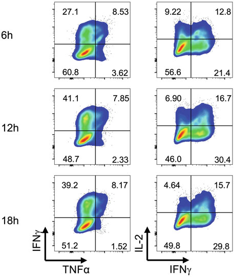
- 우리 예에서 miR-155 과발현 CD19 특이적 CAR-T 세포는 Ctrl miR로 만든 CAR-T 세포에 비해 독특한 다기능성 프로파일을 보이는 세포 아집단의 비율이 더 높았다(Fig. 4a 참조). 주목할 점은 벌크 분비체 기술로 사이토카인 분비를 평가하면 총 사이토카인 생산과 다기능성 모두 유의미한 차이가 관찰되지 않는다는 것이다(Fig. 4b 참조). 게다가 PSI는 여러 차원의
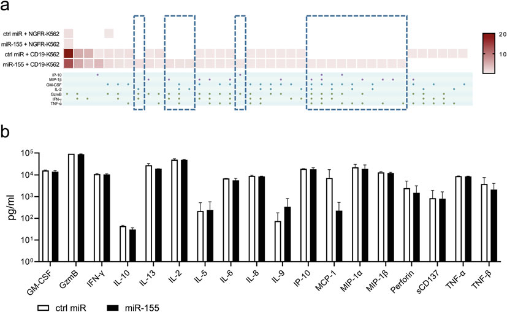
Fig. 5 세포내 사이토카인 염색(ICS)을 통한 CAR-T/표적세포 공배양 시간 최적화. CD19-K562 세포로 6시간, 12시간 또는 18시간 자극한 CD8⁺ CD19 특이적 CAR-T 세포의 ICS. 대표적인 건강 공여자 데이터
데이터를 전체 다기능 사이토카인 분비 강도를 반영하는 단일 지수로 환원하는 데 쓸 수 있다. PSI는 다기능 세포 백분율에 분비된 사이토카인의 평균 형광 강도(MFI)를 곱해 계산한다.
이해충돌 L.G.는 Lyell Immunopharma, Instil Bio, Advaxis와 자문 계약이 있다. L.G.는 Poseida Therapeutics와 Kiromic의 과학자문위원회 위원이자 Poseida Therapeutics 주주이다. E.H.와 J.Z.는 IsoPlexis에 고용되어 있으며 지분을 보유하고 있다.
References 1. Finck AV, Blanchard T, Roselle CP 외 (2022) Engineered cellular immunotherapies in cancer and beyond. Nat Med 28(4):678–689. https://doi.org/10.1038/s41591-022-01765-8 — 2. Rosenberg SA, Restifo NP (2015) Adoptive cell transfer as personalized immunotherapy for human cancer. Science 348(6230):62–68. https://doi.org/10.1126/science.aaa4967 3. Locke FL, Miklos DB, Jacobson CA 외 (2021) Axicabtagene Ciloleucel as second-line therapy for large B-cell lymphoma. N Engl J Med 386(7):640–654. https://doi.org/10.1056/NEJMoa2116133 — 14. Gattinoni L, Lugli E, Ji Y 외 (2011) A human memory T cell subset with stem cell-like properties. Nat Med 17(10):1290–1297. https://doi.org/10.1038/nm.2446 4. Maude SL, Laetsch TW, Buechner J 외 (2018) Tisagenlecleucel in children and young adults with B-cell lymphoblastic leukemia. N Engl J Med 378(5):439–448. https://doi.org/10.1056/NEJMoa1709866 — 15. Fraietta JA, Lacey SF, Orlando EJ 외 (2018) Determinants of response and resistance to CD19 chimeric antigen receptor (CAR) T cell therapy of chronic lymphocytic leukemia. Nat Med 24(5):563–571. https://doi.org/10.1038/s41591-018-0010-1 5. Majzner RG, Mackall CL (2018) Tumor antigen escape from CAR T-cell therapy. Cancer Discov 8(10):1219–1226. https://doi.org/10.1158/2159-8290.Cd-18-0442 — 16. Deng Q, Han G, Puebla-Osorio N 외 (2020) Characteristics of anti-CD19 CAR T cell infusion products associated with efficacy and toxicity in patients with large B cell lymphomas. Nat Med 26(12):1878–1887. https://doi.org/10.1038/s41591-020-1061-7 6. Fuca G, Reppel L, Landoni E 외 (2020) Enhancing chimeric antigen receptor T-cell efficacy in solid tumors. Clin Cancer Res 26(11):2444–2451. https://doi.org/10.1158/1078-0432.CCR-19-1835 — 17. Bai Z, Woodhouse S, Zhao Z 외 (2022) Single-cell antigen-specific landscape of CAR T infusion product identifies determinants of CD19-positive relapse in patients with ALL. Sci Adv 8(23):eabj2820. https://doi.org/10.1126/sciadv.abj2820 7. Scharping NE, Menk AV, Moreci RS 외 (2016) The tumor microenvironment represses T cell mitochondrial biogenesis to drive intratumoral T cell metabolic insufficiency and dysfunction. Immunity 45(2):374–388. https://doi.org/10.1016/j.immuni.2016.07.009 — 18. D’Angelo SP, Melchiori L, Merchant MS 외 (2018) Antitumor activity associated with prolonged persistence of adoptively transferred NY-ESO-1 (c259)T cells in synovial sarcoma. Cancer Discov 8(8):944–957. https://doi.org/10.1158/2159-8290.Cd-17-1417 8. Anderson KG, Stromnes IM, Greenberg PD (2017) Obstacles posed by the tumor microenvironment to T cell activity: a case for synergistic therapies. Cancer Cell 31(3):311–325. https://doi.org/10.1016/j.ccell.2017.02.008 — 19. Krishna S, Lowery FJ, Copeland AR 외 (2020) Stem-like CD8 T cells mediate response of adoptive cell immunotherapy against human cancer. Science 370(6522):1328–1334. https://doi.org/10.1126/science.abb9847 9. Gattinoni L, Klebanoff CA, Restifo NP (2012) Paths to stemness: building the ultimate antitumour T cell. Nat Rev Cancer 12(10):671–684. https://doi.org/10.1038/nrc3322 — 20. Lugli E, Dominguez MH, Gattinoni L 외 (2013) Superior T memory stem cell persistence supports long-lived T cell memory. J Clin Invest 123(2):594–599. https://doi.org/10.1172/JCI66327 10. Gattinoni L, Speiser DE, Lichterfeld M 외 (2017) T memory stem cells in health and disease. Nat Med 23(1):18–27. https://doi.org/10.1038/nm.4241 — 21. Oliveira G, Ruggiero E, Stanghellini MTL 외 (2015) Tracking genetically engineered lymphocytes long-term reveals the dynamics of T cell immunological memory. Sci Transl Med 7(317):317ra198. https://doi.org/10.1126/scitranslmed.aac8265 11. Gattinoni L, Zhong XS, Palmer DC 외 (2009) Wnt signaling arrests effector T cell differentiation and generates CD8+ memory stem cells. Nat Med 15(7):808–813. https://doi.org/10.1038/nm.1982 — 22. Fuertes Marraco SA, Soneson C, Cagnon L 외 (2015) Long-lasting stem cell-like memory CD8+ T cells with a naive-like profile upon yellow fever vaccination. Sci Transl Med 7(282):282ra248. https://doi.org/10.1126/scitranslmed.aaa3700 12. Sabatino M, Hu J, Sommariva M 외 (2016) Generation of clinical-grade CD19-specific CAR-modified CD8+ memory stem cells for the treatment of human B-cell malignancies. Blood 128(4):519–528. https://doi.org/10.1182/blood-2015-11-683847 — 23. Sukumar M, Liu J, Ji Y 외 (2013) Inhibiting glycolytic metabolism enhances CD8+ T cell memory and antitumor function. J Clin Investigat 123(10):4479–4488. https://doi.org/10.1172/jci69589 13. Arcangeli S, Bove C, Mezzanotte C 외 (2022) CAR T cell manufacturing from naive/stem memory T lymphocytes enhances antitumor responses while curtailing cytokine release syndrome. J Clin Invest 132(12). https://doi.org/10.1172/JCI150807 — 24. Geiger R, Rieckmann JC, Wolf T 외 (2016) L-arginine modulates T cell metabolism and
생존과 항종양 활성을 높인다. Cell 167(3):829–842.e813. https://doi.org/10.1016/j.cell.2016.09.031 — 세포 치료의 이식 모델. Sci Transl Med 13(611):eabg4328. https://doi.org/10.1126/scitranslmed.abg4328 25. Hermans D, Gautam S, Garcia-Canaveras JC 외 (2020) Lactate dehydrogenase inhibition synergizes with IL-21 to promote CD8(+) T cell stemness and antitumor immunity. Proc Natl Acad Sci U S A 117(11):6047–6055. https://doi.org/10.1073/pnas.1920413117 — 33. Gautam S, Fioravanti J, Zhu W 외 (2019) The transcription factor c-Myb regulates CD8(+) T cell stemness and antitumor immunity. Nat Immunol 20(3):337–349. https://doi.org/10.1038/s41590-018-0311-z 26. Wenes M, Jaccard A, Wyss T 외 (2022) The mitochondrial pyruvate carrier regulates memory T cell differentiation and antitumor function. Cell Metab 34(5):731–746.e739. https://doi.org/10.1016/j.cmet.2022.03.013 — 34. Lynn RC, Weber EW, Sotillo E 외 (2019) C-Jun overexpression in CAR T cells induces exhaustion resistance. Nature 576(7786):293–300. https://doi.org/10.1038/s41586-019-1805-z 27. Klebanoff CA, Crompton JG, Leonardi AJ 외 (2017) Inhibition of AKT signaling uncouples T cell differentiation from expansion for receptor-engineered adoptive immunotherapy. JCI Insight 2(23). https://doi.org/10.1172/jci.insight.95103 — 35. Seo H, González-Avalos E, Zhang W 외 (2021) BATF and IRF4 cooperate to counter exhaustion in tumor-infiltrating CAR T cells. Nat Immunol 22(8):983–995. https://doi.org/10.1038/s41590-021-00964-8 28. Kondo T, Morita R, Okuzono Y 외 (2017) Notch-mediated conversion of activated T cells into stem cell memory-like T cells for adoptive immunotherapy. Nat Commun 8:15338. https://doi.org/10.1038/ncomms15338 — 36. Ji Y, Fioravanti J, Zhu W 외 (2019) miR-155 harnesses Phf19 to potentiate cancer immunotherapy through epigenetic reprogramming of CD8(+) T cell fate. Nat Commun 10(1):2157. https://doi.org/10.1038/s41467-019-09882-8 29. Verma V, Jafarzadeh N, Boi S 외 (2021) MEK inhibition reprograms CD8+ T lymphocytes into memory stem cells with potent antitumor effects. Nat Immunol 22(1):53–66. https://doi.org/10.1038/s41590-020-00818-9 — 37. Prinzing B, Zebley CC, Petersen CT 외 (2021) Deleting DNMT3A in CAR T cells prevents exhaustion and enhances antitumor activity. Sci Transl Med 13(620):eabh0272. https://doi.org/10.1126/scitranslmed.abh0272 30. Dudda JC, Salaun B, Ji Y 외 (2013) MicroRNA-155 is required for effector CD8+ T cell responses to virus infection and cancer. Immunity 38(4):742–753. https://doi.org/10.1016/j.immuni.2012.12.006 — 38. Belk JA, Daniel B, Satpathy AT (2022) Epigenetic regulation of T cell exhaustion. Nat Immunol 23(6):848–860. https://doi.org/10.1038/s41590-022-01224-z 31. Ji Y, Wrzesinski C, Yu Z 외 (2015) miR-155 augments CD8+ T-cell antitumor activity in lymphoreplete hosts by enhancing responsiveness to homeostatic gammac cytokines. Proc Natl Acad Sci U S A 112(2):476–481. https://doi.org/10.1073/pnas.1422916112 — 39. Rossi J, Paczkowski P, Shen Y-W 외 (2018) Preinfusion polyfunctional anti-CD19 chimeric antigen receptor T cells are associated with clinical outcomes in NHL. Blood 132(8):804–814. https://doi.org/10.1182/blood-2018-01-828343 32. Zhang M, Zhao Z, Pritykin Y 외 (2021) Ectopic activation of the miR-200c-EpCAM axis enhances antitumor T cell responses in… — 40. Kochenderfer JN, Feldman SA, Zhao Y 외 (2009) Construction and preclinical evaluation of an anti-CD19 chimeric antigen receptor. J Immunother 32(7):689–702. https://doi.org/10.1097/CJI.0b013e3181ac6138
관심 유전자의 발현을 달성한다[4, 5]. 게놈 편집 기술은 엔지니어링된 핵산분해효소(nuclease)와 서열 특이적 DNA 결합 도메인의 조합으로 이루어지며, 결합 도메인이 핵산분해효소를 표적 DNA 절단 부위로 안내한다[6]. CAR-T 세포 분야에서 게놈 편집 접근은 세 가지 주요 용도로 쓰였다[3]. 첫째, TCR과 HLA 구성 성분의 녹아웃(KO)으로 동종이계(allogeneic) 범용 “즉용(off-the-shelf)” CAR-T 세포를 만들 수 있다[4]. 범용 CAR-T 세포의 임상 적용 노력이 활발히 진행 중이며, 최초 임상시험에서 이미 실현 가능성·안전성·효능이 보고되었다[7, 8]. 둘째, 게놈 편집 접근은 T세포 악성종양 치료를 위한 자가공격(fratricide) 내성 CAR-T 세포 제품 제작에 쓰였다[9]. 이와 관련해 CD7과 TRAC 유전자를 파괴한 CD7 표적 CAR-T 세포가 이미 임상 시험 중이다[10]. 마지막으로 CAR-T 세포 효능을 해칠 수 있는 억제 수용체나 다른 단백질을 침묵시키는 전략도 널리 탐구되고 있다[11–13]. 신규 또는 고유 단백질의 장기 발현은 보통 레트로바이러스·렌티바이러스 벡터나 트랜스포존 시스템으로 관심 유전자를 T세포 게놈에 무작위 통합하는 방식으로 달성된다[3]. 더 우아한 전략은 관심 유전자를 선택된 내인성 좌위(locus)에 넣어(knock in), 표적 유전자의 천연 프로모터 아래에서 형질유전자(transgene)가 발현되게 하는 것이다. 지난 몇 년간 이 분야의 상당한 진보 덕분에 이제 같은 게놈 편집 도구와 형질전환하고자 하는 형질유전자를 부호화하는 기증자 DNA(donor DNA)를 결합해 특정 좌위에 유전자를 넣는 것이 가능하다[14, 15]. 이 분야의 첫 시도는 CAR을 내인성 TCR 좌위에 넣는 데 초점이 맞춰졌다[14]. 분야가 확장되면서 IL-12 같은 다른 형질유전자가 PDCD1이나 CD25 같은 다른 좌위에 삽입되고 있다[16]. 분야는 빠른 발전을 앞두고 있으며
Genome Editing in CAR-T Cells Using CRISPR/Cas9 Technology
2 Materials
2.1 T세포 분리 1. 신선한 혈액 또는 buffy coat. 2. Lymphoprep(StemCell Technologies Catalog #7811). 3. 칼슘·마그네슘 무척 인산완충액(PBS⁻/⁻, Invitrogen, catalog #20012–068). 4. 태아우혈청(FBS)(Merck, catalog #F4135). 5. RosetteSep Human CD8⁺ T세포 농축 키트/CD4⁺ T세포 농축 키트(StemCell Technologies, catalog #15062 및 15,063). 6. R10 배지: RPMI 1640(Merck, Catalog #R6504-10X1L)에 10%(v/v) 열불활성화 FBS, 1X GlutaMAX(Thermo Fisher, catalog #35050–061), 페니실린 100 μg/mL, 스트렙토마이신 100 U/mL(Thermo Fisher, catalog #15140122), HEPES 10 mM(Sigma, catalog #H0887-100ML), 인체 재조합 IL-7 10 ng/mL, 인체 재조합 IL-15 10 ng/mL(Miltenyi, catalog #130–095-362 및 130–095-764). 7. Anti-CD3/CD28 마그네틱 비즈(Invitrogen, catalog #11132D). 8. DynaMag-2 및 Dynal 15 mL 마그네트(Invitrogen, catalog #12321D 및 12301D). 9. 혈구계([BRAND™] VWR, catalog #BE718605). 10. 트리판 블루 용액(Sigma, catalog #T8154).
2.2 CRISPR/Cas9 편집 CAR-T 세포 제작 11. CAR 발현 렌티바이러스 벡터 스톡. 12. 다중 파라미터 유동세포계(예: BD FACSCanto II). 13. FlowJo 소프트웨어. 14. 화학 변형 sgRNA(CRISP Revolution sgRNA EZ Kit, Synthego). 15. Neon™ Transfection System 100 μL Kit(Thermo Fisher, catalog #MPK10096). 16. Neon™ Transfection System 피펫(Thermo Fisher, catalog #MPP100). 17. Neon™ Transfection System 피펫 스테이션(Thermo Fisher, catalog #MPS100). 18. Neon™ Transfection System(Thermo Fisher, catalog #MPK5000). 19. TrueCut™ Cas9 Protein v2(Thermo Fisher, catalog #A36499). 20. 탈이온수(Thermo Fisher, catalog #15230089).
Table 1 유동세포측정으로 일차 확장 중 T세포 순도, CD4/CD8 T세포 비율, CAR, PD-1 발현을 분석하기 위한 항체 목록
| 표적 | 형광색소 | Catalog # | 회사 |
|---|---|---|---|
| CD3 | PE | 12–0037-42 | Thermo Fisher |
| CD4 | FITC | 557,695 | BD Bioscience |
| CD8 | APC | 17–0086-42 | Thermo Fisher |
| CAR (마우스 scFv) | Biotin goat anti-mouse IgG | 115–065-072 | Jackson ImmunoResearch |
| CAR (인체 또는 인간화 scFv) | Biotin goat anti-human IgG | 109–066-006 | Jackson ImmunoResearch |
| — | Streptavidin PE | 12–4317-87 | Thermo Fisher |
| PD-1 | PeCy7 | 561,272 | BD Bioscience |
2.3 녹아웃 효율 분석 21. DNA 추출 키트(예: DNeasy Blood & Tissue Kit, Qiagen, catalog #69504). 22. 고충실도 DNA 중합효소, 완충액, dNTPs(예: Phusion® High-Fidelity DNA Polymerase, NEB, catalog #M0530S). 10 μM 정방향 및 역방향 프라이머(IDT). 23. PureLink™. 24. PCR 정제 키트(예: PCR PureLink™, Thermo Fisher, catalog #K310001). 25. 무핵산수(nuclease-free water)(Thermo Fisher, catalog #AM9906). 26. 표준 1% 아가로스 겔. 27. Tris–acetate EDTA(TAE) 완충액(Bio Rad, catalog #1610743). 28. DNA ladder 1 kb(WERFEN S.A.U, catalog #174N3232S). 29. DNA loading dye(Thermo Fisher, catalog #R0611). 30. 겔 전기영동 장치. 31. 열순환기(thermocycler). 32. Tris-Buffered Saline(TBS)(Bio Rad, catalog #1706435). 33. Tween-20(PanReac-AppliChem, catalog #A4974,0250). 34. GraphPad 소프트웨어(Table 1 참조).
3 방법 이 프로토콜에서는 CRISPR/Cas9 기술로 CAR-T 세포를 유전적으로 편집한다. 이 방법론은 두 성분에 의존한다: 표적 DNA 서열에 결합할 단일가이드 RNA(sgRNA)와 그 지점에서 DNA 이중가닥 절단(DSB)을 일으킬 엔도뉴클레아제 Cas9이다. 이후 오류가 잦은 세포 내재 DNA 수복 기전이 삽입 또는 결실(indel)을 도입해 표적 유전자의 기능상실 변이로 이어질 수 있다. 일차 T세포는 형질천환이 어려운 세포이므로 필요한 성분을 세포에 전달하려면 대안적 방법이 필요하다. Cas9과/또는 sgRNA를 비통합형(아데노바이러스) 또는 통합형(렌티바이러스) 바이러스 벡터로 전달하는 방법이 보고된 바 있다[19, 20]. 그러나 낮은 형질도입률 때문에 편집 효율이 상대적으로 낮고, 다중 편집은 벡터의 포장 용량에 제한받는다[21]. 게다가 통합형 벡터의 경우 Cas9과 sgRNA의 장기 발현이 원치 않는 탈표적(off-target) 효과를 낳을 수 있다. 대안으로 CAR 렌티바이러스 벡터에 여러 sgRNA를 넣고 단백질이나 mRNA 전기천공으로 Cas9을 전달하는 방법[22], 또는 시험관 내 전사 sgRNA와 Cas9 RNA를 전기천공으로 전달하는 방법[5]이 있다. DNA 누클레오펙션 역시 T세포 편집에 쓰인 CRISPR/Cas9 전달 방법이지만 T세포에 독성이 큰 것으로 알려져 있다[23, 24]. 본 프로토콜에서는 Cas9 단백질과 sgRNA의 복합체인 리보핵단백질(RNP)의 전기천공으로 T세포를 유전적으로 변형한다. 이 방법은 간단하고 빠르며, 위 방법들에 비해 T세포에서 좋은 효율과 감소한 탈표적 효과·독성을 보였다[25]. 게다가 다중 편집을 허용하는 유연한 플랫폼이며 까다로운 knock-in 접근의 효율을 높인다고 보고되었다[25].
3.1 CAR-T 세포 제작 시작 T세포 양은 확장한 세포의 의도된 용도에 따라 달라진다. 전기천공
Table 2 응용 목적별 확장 시작에 쓰는 T세포 수 예시
| 백만 T세포 Day 0 | Day 4 | Day 10 | 관찰 사항 |
|---|---|---|---|
| 생체 내 실험 2 | 4 | 20–60 | 전기천공은 day 2에 가능. T세포는 day 3–4까지 두 배가 되지 않음을 고려하는 것이 중요. 200만 개 미만 세포를 전기천공하면 T세포 사망 증가로 이어질 수 있음 |
| 생체 외 실험 5 | 10 | 100–300 |
3.1.2 T세포 자극 및 형질도입 1. T세포를 R10 완전 배지에서 1 × 10⁶ cells/mL 농도로 준비하고 필요한 세포 수를 적절한 다중웰 평바닥 플레이트나 플라스크에 나눠 담는다. 실험군 수만큼 웰을 쓴다. 미형질도입 T세포(UTD) 대조군을 포함한다(Note 2 참조). 2. 마그네틱 비즈 하나당 T세포 하나의 비율을 기준으로 필요한 anti-CD3/CD28 마그네틱 비즈 양을 계산한다(Note 3 참조). 3. 마그네틱 비즈를 충분히 현탁하고 계산한 부피를 DynaMag-2 마그네트에 놓인 1.5 mL 튜브로 옮긴다. 4. 1분 후 비즈 완충액을 버린다. 튜브를 자장에서 꺼내 예열한 R10 배지 1 mL로 비즈를 씻는다. 세척을 두 번 반복한다. 5. 마지막 세척 후 비즈를 소량의 R10 배지에 현탁한다(비즈 백만 개당 배지 50 μL). 6. 비즈를 T세포가 든 해당 웰로 옮기고 섞는다. 7. 24시간 후 활성화된 T세포를 감염다중도(MOI) 5로 CAR 암호화 렌티바이러스로 형질도입한다(Note 4 참조). 해당 MOI를 만드는 데 필요한 바이러스 부피를 넣고 부드럽게 섞으면 된다. 8. 자극 후 3일째 되는 날 세포에 R10 완전 배지 한 부피를 더해 준다.
3.2 CRISPR/Cas9 기술에 의한 유전자 편집 대부분의 표적에 대해 유전자 편집은 자극 2~4일 후, 즉 T세포가 CD3/CD28 비즈로부터 충분한 활성화 신호를 받고 활발히 증식할 때 구분 없이 할 수 있다. 그러나 특정 표적은 더 이른 시점에 게놈 편집이 필요할 수 있다. 예컨대 T세포에서 발현되는 항원을 표적하는 CAR-T 세포는 CAR와 표적 항원의 공동 발현을 피하고 자가공격(CD7 등)을 막기 위해 그렇다. 이런 경우 녹아웃은 CAR이 T세포 막에 발현되기 전에 이루어져야 한다(프로토콜 변형은 Note 5 참조). 확장 프로토콜의 일부로 포함할 권장 CRISPR/Cas9 실험 대조군 목록은 Table 3에 있다.
Table 3 권장 실험용 CRISPR/Cas9 대조군
| 대조군 | 설명 | 목적 |
|---|---|---|
| 양성 대조 | 높은 편집 효율이 입증된 sgRNA(예: TRAC용 sgRNA)와 복합체를 이룬 Cas9으로 CAR-T 세포를 전기천공 | 모든 시약·프로토콜·장비가 최적 조건에서 작동함을 확인. 프로토콜 최적화나 sgRNA 첫 사용 시 사용 가능 |
| 음성 대조: 비전기천공 T세포 | 전기천공하지 않고 Cas9과 sgRNA 없이 배양 | 기초 조건에서의 세포 성장 판정 |
| 모크 대조: 전기천공 T세포 | 비표적 sgRNA, 게놈 안전 하버(safe harbour, 예: AAVS1 또는 Rosa26) 표적 sgRNA, 인트론 표적 sgRNA, 또는 sgRNA 없이 Cas9-RNP 복합체로 전기천공한 CAR-T 세포 | RNP(Cas9) 독성, 전기천공에 따른 세포사, 관심 유전자 편집과 연관된 생존력 문제를 통제. 관찰된 표현형이 특정 편집 때문임을 확인 |
| — | Cas9이나 sgRNA 없이 CAR-T 세포 전기천공 | 어떤 게놈 위치에서도 indel이 일어나지 않을 것. RNP/Cas9 전기천공 비용을 피하는 데 쓸 수 있으나 RNP/Cas9 독성은 통제하지 못함 |
모든 연구에 모크 대조군을 두는 것이 강하게 권장된다.
3.2.1 비즈 제거(Debeading) 전기천공 전에 비즈를 세포 배양에서 제거해야 하며 RNP 전기천공은 같은 날 수행한다. 1. 트리판 블루 배제법 또는 자동 세포계수기로 T세포를 계수한다(Note 6 참조). 2. 세포 농도를 1 × 10⁶ cells/mL로 맞추는 데 필요한 R10 배지 부피를 계산한다. 3. 샘플마다 뚜껑 없는 15 mL 튜브 두 개를 15 mL Dynal 마그네트에 올린다. 4. 세포를 자기 배지 속에서 충분히 섞어 비즈에서 세포를 떼어낸다. 5. 샘플을 첫 번째 팔콘 튜브로 옮긴다. 1분 후 비즈는 자장 쪽 벽에 모여야 한다. 6. 비즈를 흐트러뜨리지 않고 샘플을 두 번째 튜브로 옮겨 1분 더 둔 다음, 해당 웰/플라스크로 옮긴다(용기 선택은 소항목 3.2.4의 2번 단계 참조). 이 단계는 T세포 배양에서 비즈를 모두 없애는 데 필요하다. 7. 옮긴 순서대로 각 전송 후 2번 단계에서 계산해 둔 배지 부피로 비즈를 씻고 그 세척 배지로 세포에게 준다. 이 단계는 비즈에 붙어 남은 T세포를 회수하는 데 필요하다. 8. 전기천공 전에 세포를 37 °C, 5% CO₂ 습윤 배양기에서 2–4시간 쉬게 한다.
3.2.2 단일가이드 RNA(sgRNA) 설계 본 프로토콜에서는 Synthego의 CRISPR Design Tool(https://www.synthego.com/products/bioinformatics/crisprdesign-tool)로 sgRNA를 설계했다(Note 7 참조). 이 도구는 순차 알고리즘으로 관심 유전자를 녹아웃할 가능성이 높으면서 탈표적 효과를 최소화하는 가이드 RNA 서열 후보를 서열화한다. 후보가 되려면 가이드는 다음 조건을 충족해야 한다: (I) 1차 전사체의 공통 엑손을 표적할 것, (II) 유전자의 초기 영역을 표적할 것, (III) Azimuth 2.0 모델 기준 on-target 점수 >0.5일 것, (IV) 가이드 RNA 서열과 0, 1, 2개 불일치인 탈표적 부위가 같은 게놈에 없을 것. 화학 변형 sgRNA는 대부분의 세포 유형(T세포 포함)에서 우수한 편집 효율을 보여 이를 사용했다[26]. 같은 표적 유전자에 대해 여러 sgRNA를 시험해 최적 후보를 골라내는 것이 좋다. sgRNA 스크리닝은 Jurkat 세포에서 대신 수행해 T세포 활성화·형질도입·확장 비용과 시간을 줄일 수도 있다.
3.2.3 T세포 준비 1. T세포를 300 × g에서 7분간 원심분리하고 상층액을 버린다. 중요! 조건화 배지(상층액)는 전기천공 후 T세포 재현탁에 쓰므로 보관하라. T세포가 분비하는 사이토카인과 인자가 들어 있어 적절한 T세포 확장에 필수적이다. 2. PBS(무칼슘, 무마그네슘) 10–20 mL를 넣고 300 × g에서 7분간 원심분리한다. 3. T세포를 Resuspension Buffer R에 반응당 2–3 × 10⁶ 세포가 50 μL가 되도록 원하는 농도로 현탁하고, 세포를 얼음 위에 20분을 넘지 않게 둔다. 그보다 오래 두면 세포 생존율과 형질천환 효율이 떨어진다(Note 8 참조). 중요! 반응당 세포 수는 8–10 × 10⁶까지 늘릴 수 있으나 KO 효율이 떨어질 수 있다(표적 좌위에 따라 약 50%). 이렇게 낮은 효율이 오히려 원하는 경우도 있다(예: 관심 유전자 제거가 녹아웃 T세포 집단의 농축을 만드는지 평가할 때). 그러나 더 높은 편집 효율(>80%)을 원하면 T세포를 2–5 × 10⁶ 세포 단위로 나누어 전기천공해야 한다.
3.2.4 RNP 복합체 준비 1. T세포 원심분리 동안 RNP 복합체를 준비한다. 반응당 Cas9 단백질 10 μg(TrueCut™ Cas9 Protein v2 2 μL)과 sgRNA 2.5 μg(100 μM – 100 pmol/μL sgRNA 약 2 μL)을 Resuspension Buffer R로 최종 50 μL가 되게 섞는다. Cas9/gRNA 몰비는 1:3.3이다. 부드럽게 잘 섞는다(Note 9 참조). 2. Cas9/gRNA 복합체를 실온(RT, 15~25 °C)에서 5–20분간 배치한다. 3. Cas9/gRNA 복합체(5번 단계 산물)를 T세포(6번 단계 산물)에 넣고 잘 섞는다.
3.2.5 RNP 복합체 전기천공 1. Cas9/gRNA 복합체와 섞은 T세포 100 μL를 Neon™ 100-μL 팁으로 피펫팅한다. 중요! 전기천공 팁을 채울 때 기포를 만들지 않는다. 기포가 있으면 형질천환 효율이 낮아지거나 실패한다. 팁 안에 기포가 보이면 샘플을 튜브로 되돌리고 다시 조심스럽게 피펫팅해야 한다. 2. 전기천공에는 프로그램 #24(1600 V/10 ms/3회 펄스)를 사용한다. 3. 전기천공한 세포를 즉시 조건화 배지를 필요한 만큼 담아 CAR-T 세포 농도를 1.5 × 10⁶ cells/ml로 맞춘 적절한 용기로 옮기고, 플레이트를 37 °C, 5% CO₂ 습윤 배양기에 넣는다(Note 10 참조). 48시간 후 편집 후 CAR-T 세포 확장으로 진행한다.
3.2.6 편집 후 CAR-T 세포 확장 T세포 확장의 대수 증식기(day 6–9) 동안 T세포를 매일 계수하고 신선한 배지를 주어 T세포 농도가 2 × 10⁶ cells/mL를 넘지 않게 해야 한다. 세포가 진정될 때(증식 속도 감소와 세포 크기 감소로 판단)까지 배양을 유지한다. 이 프로토콜을 따르면 보통 활성화 후 10–12일경이며 이때 T세포를 동결보관하거나 기능 분석에 쓸 수 있다. 1. 트리판 블루 배제법 또는 자동 세포계수기로 세포를 계수한다. 2. 아래 공식과 Table 4에 근거해 세포를 적절한 웰이나 플라스크로 옮긴다: 총 세포 수 N = 3.5 × 10⁵ 3. 신선한 R10 배지를 넣어 세포 농도를 0.8 × 10⁶ cells/mL로 맞춘다. 웰/플라스크 전송 중 세포 손실을 최소화하려면 급이 배지로 웰/플라스크를 씻는다. 4. 일차 확장 말기(day 8–10)에 CD4⁺와 CD8⁺ T세포의 CAR 발현을 평가하는 데 1 × 10⁵~2 × 10⁵ 세포를 쓴다. CAR은 결합형 표적 재조합 단백질 또는 anti-mouse/human IgG(CAR의 ScFv 기원에 따라)로 염색할 수 있다. Anti-CD4, anti-CD8 항체도 함께 쓸 수 있으며, 녹아웃하는 단백질이 세포 표면에 발현된다면 KO 효율 평가용 특이 항체도 포함할 수 있다(아래 소항목 3.3.2 참조). 유동세포측정으로 분석한다. 5. (선택) 게놈 편집이 표면 분자(CD3, T세포 수용체 구성 성분, β2m 같은 MHC-I 복합체 성분 등)라면 동결보관이나 기능 실험 전에 음성선택(예: 마그네틱 마이크로비즈 사용)으로 편집된 CAR-T 세포를 농축할 수 있다. 6. 편집 효율 정량화를 위해 그룹당 최소 1 × 10⁶ 세포를 남겨 둔다(소항목 3.3.1 참조). 7. T세포를 day 10까지에 동결보관하거나 day 10–12까지 신선하게 사용한다. CD4⁺와 CD8⁺ T세포는 각각 따로 동결보관/시험하거나 1:1로 섞어 동결보관 및 추가 특성 평가를 할 수 있다.
Table 4 T세포 확장에 권장되는 플레이트와 플라스크 크기
| N | Well plate/flask type |
|---|---|
| 2 to 5 | 24-well plate |
| 5 to 8 | 12-well plate |
| 8 to 20 | 6-well plate |
| 20 to 40 | T25 flask–horizontal |
| 40 to 112.5 | T75 flask–horizontal |
| >112.5 | T150 flask–horizontal |
“N” 열은 매개변수 N의 값 범위를 지정한다. “Well plate/flask type” 열은 각 크기 범위에 대응하는 용기를 제공한다. “horizontal”은 플라스크의 방향을 뜻한다.
Fig. 1 유전자 편집 CAR-T 세포의 생체 외 확장. (a) 일차 인체 CAR-T 세포에서의 T세포 확장과 CRISPR/Cas9 편집 프로토콜 개념도. (b) 일차 T세포 확장 중 유전자 편집 CAR-T 세포의 집단 배가(population doubling). (그래프 축: A) 집단 배가, B) 세포 수(×10⁶); 시기: T세포 분리, T세포 대조 및 활성화, 비즈 제거와 모크, +IL7/IL15, 게놈 편집, PD1 KO CAR-T, Day 0, Day 2-4, Day 1, Day 6, Day 10-12, CAR 형질도입, 급이, 동결보관(0.8e6 cells/ml) 제품)
- 집단 배가 계산: day 0부터 T세포 일차 확장 끝(day N)까지 얻은 총 세포 수로 day 0에 자극한 세포 수 대비 집단 배가를 다음 공식으로 계산한다: Pop.Doub. = log₂(Total Cells Day N) − log₂(Total Cells Day 0) T세포는 day 0부터 day 10까지 약 4–5회 배가해야 한다. day 10에 배가가 4 미만이면 드문 경우이며 T세포 확장에 문제가 있을 수 있다. 유전자 편집 후의 대표적인 T세포 확장 데이터는 Fig. 1b에 있다.
3.3 녹아웃 효율 분석 편집 효율 평가는 매우 중요한 단계로, 녹아웃이 증식 이점을 주어 유전자 편집 집단이 농축되는지(또는 그 반대인지) 판단하기 위해 T세포 확장 도중 여러 시점(day 6, 8, 10 등)에 할 수 있다. 편집 효율은 DNA 또는 단백질 수준에서 측정할 수 있다. DNA 수준 평가를 위해서는 게놈 DNA를 추출하고 표적 유전자를 PCR로 증폭해야 한다. 그다음 여러 방법론으로 KO 효율을 평가할 수 있다. T7E1이나 Surveyor Mismatch Cleavage 같은 불일치 수복 분석은 편집이 일어나 불일치가 있을 때 DNA를 절단하는 T7 뉴클레아제 활성에 의존한다. 이 방법들은 시간이 걸리고 정확도가 낮으며 편집 효율을 과소평가하는 경향이 있다[27]. 더 정확한 방법은 서열분석 기반 방법이다. 이상적으로는 증폭산물(amplicon)의 차세대서열분석(NGS)을 쓸 수 있지만 비용이 커서 일상적으로는 어렵다. 더 경제적인 방법인 inference of CRISPR edits(ICE, Synthego)나 tracking of indels by decomposition(TIDE)은 Sanger 서열분석에 기반해, 편집되지 않은/모크 표본과 편집된 표본의 표적 영역 PCR 산물로 만든 Sanger 트레이스를 비교·분해하여 편집된 세포 집단에서 indel 크기 빈도를 구한다. 본 프로토콜에서는 편집 효율 평가에 ICE를 사용했다.
단백질 수준 편집 효율 평가에는 표적 단백질의 세포 내 위치에 따라 유동세포측정(표면 또는 세포내 염색), ELISA, 웨스턴 블롯을 사용할 수 있다.
3.3.1 DNA 수준 1. 상용 DNA 추출 키트를 제조사 지침대로 쓰어 최소 1 × 10⁶개 세포(편집군과 미편집/모크 집단 모두)에서 게놈 DNA를 추출한다(예: DNeasy Blood & Tissue Kits, QIAGEN). 2. 게놈 DNA 150 ng으로 표적 영역을 표준 중합효소연쇄반응(PCR)(예: NEB의 Phusion® High-Fidelity DNA Polymerase)으로 증폭한다. 본 프로토콜에서는 잠재 절단 부위를 포함하는 영역을 둘러싸는 특이 프라이머 설계에 benchling 소프트웨어(https://benchling.com/)를 사용했다(Note 11 참조). 3. PCR 정제 키트(예: PCR PureLink™, Thermo Fisher)로 PCR 산물을 정제한다. 정제산물 일부로 1% 아가로스 전기영동 겔을 돌려 증폭을 확인한다. 4. 모크 샘플과 편집 샘플의 정제된 증폭산물을 Sanger 서열분석한다. 증폭 단계에 쓴 프라이머는 indel이 있는 영역에서 좋은 서열 품질을 보장할 만큼 충분히 멀리 있으면 그대로 쓸 수 있다. 5. ICE(https://ice.synthego.com/)로 총 indel 백분율(삽입 또는 결실을 포함하는 서열의 빈도)과 knockout score(frameshift를 유발하는 indel 또는 >21 bp 결실)를 정량화한다. knockout score가 높을수록 indel이 표적 유전자의 기능적 KO로 이어질 가능성이 크다. R² 값은 indel 분포가 편집 샘플의 Sanger 서열 데이터에 얼마나 잘 맞는지 나타낸다. 얻은 모든 매개변수는 도시화할 수 있다(Fig. 2 참조).
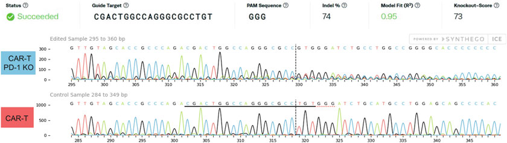
3.3.2 단백질 수준 1. 세포 표면 발현 표적 단백질의 경우 T세포 2 × 10⁵개를 형광색소 결합 항체로 염색해 유동세포측정으로 분석하고 모크/미편집 샘플과 편집 세포의 발현 수준을 비교한다(예: PD-1과 CD3, Fig. 3a와 b).
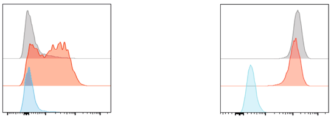
- 분비형 표적 단백질(예: 사이토카인)의 경우 상층액을 효소결합면역흡착분석(ELISA)으로 분석해 단백질을 검출할 수 있다.
- 세포내 발현 표적 단백질의 경우 유동세포측정용 세포내 염색(ICS) 프로토콜과 표준 웨스턴 블롯 프로토콜에 의한 단백질 검출을 할 수 있다.
Fig. 2 ICE 분석 도구로 얻은 PD-1 KO의 Trace 탭 예시. Trace 탭은 가이드 RNA 결합 부위 주변 영역(검은 가로선)에서의 편집(CAR-T PD-1 KO, 위)과 대조(CAR-T, 아래) Sanger 트레이스, 붉은 점선으로 밑줄 친 PAM 부위를 보여 준다. 절단 부위는 두 트레이스 모두에 수직 점선으로 표시되었다.
Fig. 3 (a) T세포 확장 8일째 CAR-T 세포의 PD-1 발현을 유동세포측정으로 평가했다. (b) TRAC CRISPR/Cas9 KO 후 항원 자극에 따른 CAR-T 세포 CD3 표면 발현. (A: 대조 T세포, 모크 CAR-T 세포, PD-1 KO CAR-T 세포; B: 대조 T세포, 모크 CAR-T 세포, TRAC KO CAR-T 세포; PD-1, CD3)
4 Notes 1. 다른 기술을 쓸 수 있다(예: Miltenyi Biotec 마이크로비즈). 2. 확장 day 9까지 IL-7과 IL-15로 배지를 보강하면 T세포 배양 중 분화를 제한하고 CAR-T 세포의 항종양 효능을 개선한다고 알려져 있다[28–30]. 3. 제조사는 비즈/세포 비율 1:1을 권장한다. 그러나 더 좋은 세포 자극을 위해 2:1 비율을 쓸 수 있다. 4. 렌티바이러스는 사전에 Jurkat 세포, 293T 세포 또는 T세포에서 역가(titer) 측정이 되어 있어야 한다. 5. 대안적인 게놈 편집 프로토콜은 자극 후 day 2에 CRISPR/Cas9을 수행하고 day 3(day 1 대신)에 T세포를 CAR 렌티바이러스로 형질도입하는 것이다. day 5부터 10까지는 일반적인 CAR-T 세포 확장을 진행한다. 또는 신선한(비자극) naïve T세포를 분리 후 day 1에 게놈 편집할 수도 있다. 이 경우 전기천공 조건과 IL-7/15 농도를 바꿔야 한다(예: 2200 V 20 ms 1회 펄스, IL-7/15 25 ng/mL)[31]. 이후 T세포는 day 2에 활성화하고 day 3에 렌티바이러스 CAR로 형질도입하며 day 12까지 확장한다. 6. 세포 직경 게이팅 옵션과 세포 부피/직경 평균 표시 기능이 있는 다른 자동 세포계수기를 쓸 수 있다(예: Life Technologies의 Countess). 7. sgRNA 설계에는 다른 정보 도구를 쓸 수 있다(Benchling, Invitrogen의 GeneArt CRISPR Search and Design tool, IDT의 CRISPR–Cas9 guide RNA design checker, E-CRISPR, CHOP-CHOP 등). 8. 피펫팅 오류를 피하려면 약간 여분의 세포를 준비하는 것이 좋다. 9. 피펫팅 오류를 피하려면 약간 여분의 RNP 복합체를 준비하는 것이 좋다. 10. 전기천공은 상당한 세포사를 일으킨다(전체 집단의 약 50%). 이를 감안해 T세포를 최소 1.5 × 10⁶ cells/mL 이상의 높은 농도로 두는 것이 좋다. 11. 최상의 결과를 위해서는: (I) Tm >55 °C인 프라이머를 쓰고, (II) 길이 18–22 bp, GC 함량 45–60% 프라이머를 설계하고, (III) 프라이머는 400–500 bp 증폭산물을 만들어야 하며, (IV) 잠재 절단 부위는 증폭산물 중앙에 오지 않게 해 검출 반응이 쉽게 구별되는 두 개의 뚜렷한 산물 밴드를 낳도록 한다. 까다로운 표적의 증폭은 문제 해결과 PCR 최적화가 필요할 수 있다. 예컨대 온도 구배로 프라이머 쌍마다 결합 온도를 최적화할 수 있다. GC-rich 서열이나 이차구조를 가진 서열의 증폭은 DMSO 같은 첨가물이나 특정 완충액으로 개선될 수 있다.
References 1. Guedan S, Ruella M, June CH (2019) Emerging cellular therapies for cancer. Annu Rev Immunol 37:145–171 — 4. Poirot L 외 (2015) Multiplex genome-edited T-cell manufacturing platform for “off-the-shelf” adoptive T-cell immunotherapies. Cancer Res 75:3853–3864 2. Majzner RG, Mackall CL (2019) Clinical lessons learned from the first leg of the CAR T cell journey. Nat Med 25:1341–1355 — 5. Ren J 외 (2017) Multiplex genome editing to generate universal CAR T cells resistant to PD1 inhibition. Clin Cancer Res 23:2255–2266 3. Irving M, Lanitis E, Migliorini D, Ivics Z, Guedan S (2021) Choosing the right tool for genetic engineering: clinical lessons from chimeric antigen receptor-T cells. Hum Gene Ther 32:1044–1058 — 6. Gaj T, Gersbach CA, Barbas CF (2013) ZFN, TALEN, and CRISPR/Cas-based methods for genome engineering. Trends Biotechnol 31:397–405 7. Qasim W 외 (2017) Molecular remission of infant B-ALL after infusion of universal TALEN gene-edited CAR T cells. Sci Transl Med 9 — 20. Wang W 외 (2014) CCR5 gene disruption via lentiviral vectors expressing Cas9 and single guided RNA renders cells resistant to HIV-1 infection. PLoS One 9:e115987 8. Benjamin R 외 (2018) Preliminary data on safety, cellular kinetics and anti-leukemic activity of UCART19, an allogeneic anti-CD19 CAR T-cell product, in a pool of adult and pediatric patients with high-risk CD19+ relapsed/refractory B-cell acute lymphoblastic leukemia. Blood 132:896–896 — 21. Kabadi AM, Ousterout DG, Hilton IB, Gersbach CA (2014) Multiplex CRISPR/Cas9-based genome engineering from a single lentiviral vector. Nucleic Acids Res 42:e147–e147 9. Gomes-Silva D 외 (2017) CD7-edited T cells expressing a CD7-specific CAR for the therapy of T-cell malignancies. Blood 130:285–296 — 22. Ren J 외 (2017) A versatile system for rapid multiplex genome-edited CAR T cell generation. Oncotarget 8:17002–17011 10. Wang X 외 (2020) Abstract CT052: clinical safety and efficacy study of TruUCAR™ GC027: the first-in-human, universal CAR-T therapy for adult relapsed/refractory T-cell acute lymphoblastic leukemia (r/r T-ALL). Cancer Res 80:CT052 — 23. Su S 외 (2016) CRISPR-Cas9 mediated efficient PD-1 disruption on human primary T cells from cancer patients. Sci Rep 6:20070; Pankaj K. Mandal 외, Efficient ablation of genes in human hematopoietic stem and effector cells using CRISPR/Cas9. Cell Stem Cell 15, 643–652 (2014) 11. Wang Z 외 (2021) Phase I study of CAR-T cells with PD-1 and TCR disruption in mesothelin-positive solid tumors. Cell Mol Immunol — 24. Schumann K 외 (2015) Generation of knock-in primary human T cells using Cas9 ribonucleoproteins. Proc Natl Acad Sci U S A 112:10437–10442 12. Stadtmauer EA 외 (2020) CRISPR-engineered T cells in patients with refractory cancer. Science 367 — 25. Hendel A 외 (2015) Chemically modified guide RNAs enhance CRISPR-Cas genome editing in human primary cells. Nat Biotechnol 33:985–989 13. Zhang Y 외 (2017) CRISPR-Cas9 mediated LAG-3 disruption in CAR-T cells. Front Med 11:554–562 — 26. Sentmanat MF, Peters ST, Florian CP, Connelly JP, Pruett-Miller SM (2018) A survey of validation strategies for CRISPR-Cas9 editing. Sci Rep 8:888 14. Eyquem J 외 (2017) Targeting a CAR to the TRAC locus with CRISPR/Cas9 enhances tumour rejection. Nature 543:113–117 — 27. Cieri N 외 (2013) IL-7 and IL-15 instruct the generation of human memory stem T cells from naive precursors. Blood 121:573–584 15. Roth TL 외 (2018) Reprogramming human T cell function and specificity with non-viral genome targeting. Nature — 28. Schluns KS, Kieper WC, Jameson SC, Lefrançois L (2000) Interleukin-7 mediates the homeostasis of naïve and memory CD8 T cells in vivo. Nat Immunol 1:426–432 16. Sachdeva M 외 (2019) Repurposing endogenous immune pathways to tailor and control chimeric antigen receptor T cell functionality. Nat Commun 10:5100 — 29. Zhou J 외 (2019) Chimeric antigen receptor T (CAR-T) cells expanded with IL-7/IL-15 mediate superior antitumor effects. Protein Cell 10:764–769 17. Guedan S 외 (2022) Time 2EVOLVE: predicting efficacy of engineered T-cells—how far is the bench from the bedside? J Immunother Cancer 10 — 30. Leoni C, Bianchi N, Vincenzetti L, Monticelli S (2021) An optimized workflow for CRISPR-Cas9 deletion of surface and intracellular factors in primary human T lymphocytes. PLoS One 16:e0247232 18. Donnadieu E 외 (2022) Time to evolve: predicting engineered T cell-associated toxicity with next-generation models. J Immunother Cancer 10 — 19. Li C 외 (2015) Inhibition of HIV-1 infection of primary CD4+ T-cells by gene editing of CCR5 using adenovirus-delivered CRISPR/Cas9. J Gen Virol 96:2381–2393
최근 우리는 TIL의 레트로바이러스 형질도입 효율을 크게 개선했다[3]. 따라서 재현 가능하고 시간 효율적이며 고수율의 TIL 제작 프로토콜을 여기에 소개한다. 또한 mRNA 형질천환을 통한 TIL의 일시적 형질유전자 발현 방법과, 말초 T세포 및 세포주를 위한 바이러스 형질도입 및 mRNA 형질천환 프로토콜도 설명한다.
2 Materials 모든 용액은 초순수(탈이온수 정제로 준비)와 분석급 시약으로 준비한다. 특별히 명시하지 않으면 모든 시약은 실온에서 준비·보관한다. 폐기물 처리 규정을 철저히 따른다. 시약에 아지화나트륨은 넣지 않는다. 모든 실험실 절차는 GMP 조건의 Class 10,000 클린 실험실에서 GMP 승인 시약으로 수행한다.
2.1 TIL 배양 준비 기본 완전 배지(CM): Roswell Park Memorial Institute(RPMI) 1640 배지(예: Lonza, Verviers Sprl, Belgium)에 인체 AB 혈청 10%(Valley Biomedical, Winchester, VA, 또는 Gemini Bio, West Sacramento, CA) 또는 지역 혈액은행에서 얻은 5~6명 공여자(혈액형 무관)의 열불활성화 혈청을 첨가.
2.1.1 TIL 배양 확립 1. 효소 함유 배지: RPMI 1640 배지에 콜라게나제 1 mg/mL(Sigma-Aldrich, Rehovot, Israel), 히알루로니다아제 type V 100 mg/mL(Sigma-Aldrich), DNase I type IV 30 U/mL(Sigma-Aldrich), 페니실린(100 U/mL)–스트렙토마이신(100 μg/mL)(Pen/Strep; Biological Industries, Israel), 젠타마이신 50 μg/mL, L-글루타민 1 mM(Lonza). 2. hrIL-2(Peprotech; Rehovot, Israel) Cat. No. 200–02, 무균수에 용해, 원액 100 μg/mL, 앨리콧으로 나누어 -20 °C 보관. 3. TIL 배양 확립용 CM(eCM): 기본 CM에 Pen/Strep, 젠타마이신 50 μg/mL, HEPES 25 mM pH 7.2, 2-메르캅토에탄올 0.25 μM, 인체 재조합 IL-2(hrIL-2) 3000 IU/ml(Chiron Novartis, New Jersey, USA) 추가. 4. 흑색종 배양 배지: IL-2 없는 eCM.
2.1.2 TIL 배양 확장 초기 급속 확장기용 CM(InRepCM): eCM 50%에 AIM-V 배지(Invitrogen, CA, USA) 50%를 보강하고 anti-CD3 단클론항체(OKT3; Miltenyi Biotec, Bergisch Gladbach, Germany) 30 ng/mL 및 hrIL-2 3000 IU/mL(Chiron Novartis, New Jersey, USA).
2.2 PBMCs, T세포 및 T세포주 준비 1. Cloudz™ Human T Cell Activation Kit(R&D Systems, Minneapolis, USA; Cat. No. CLD001). 이 키트는 anti-CD3와 anti-CD28 항체로 기능화된 알진산(alginate) 기반 하이드로겔 미소구(microsphere)로 구성된다. Note 1 참조.
2.2.1 PBMCs 활성화 2. T세포 배양 배지: L-글루타민 없는 RPMI 1640 배지, 태아우혈청(FBS) 10%, Glutamax 2%(L-글루타민 대체제, 안정성 향상; Gibco [Thermo Fisher Scientific]), HEPES 10%, β-메르캅토에탄올 0.1%, hrIL-2 50 ng/mL. Notes 2, 3 참조. 3. hrIL-2 없는 T세포 배양 배지.
2.2.2 PBMCs로부터 T세포 준비 1. Anti-human CD8 Magnetic Particles(BD Biosciences, Caesarea, Israel, Cat. No. 557766). 대안은 Note 4 참조. 2. BD IMag™ Buffer(10×)(Cat. No. 552362). 3. MagCellect Magnet(BD Biosciences, Cat. No. MAG997).
2.2.3 T세포 대체물 연구 목적으로는 T세포 하이브리도마 같은 세포주를 신선하게 준비한 T세포 대신 쓸 수 있다. 신선 분리 인체 T세포와 TIL은 아래에 설명한 대로 준비한다. 마우스 T세포 하이브리도마 예시: · B3Z: H-2K/b OVA 257–264-H-2Kb 특이적 하이브리도마로, T세포 활성화용 활성화 T세포 핵인자(NFAT)-lacZ 유도성 리포터 유전자를 지님. University of California, Berkeley의 Dr. N. Shastri가 제공. · BUSA14: H-2K/b gp100 25–33-H-2Db 특이적, NFAT–lacZ⁺ 하이브리도마. Weizmann Institute of Science(Israel)의 prof. Lea Eisenbach가 제공. · CHIB2: H-2K/NOD InsB 15–23-H-2Kd 특이적, NFAT–lacZ⁺ 하이브리도마. University of Bristol(UK)의 Dr. Susan Wong이 제공. 흑색종 및 T세포 하이브리도마 세포주 성장 배지: RPMI 1640 배지에 혈청 10%(임상용 인체 혈청 또는 실험용 FBS), Pen-Strep, L-글루타민 2 mM, 피루브산나트륨 1 mM, HEPES 25 mM.
2.3 TILs, PBMCs, T세포 또는 세포주의 유전적 변형
2.3.1 바이러스 준비 1. Dulbecco’s Modified Eagle Medium(DMEM). 2. T세포 배양 배지(위 참조). 3. 0.25% 트립신–EDTA(1×)(Gibco). 4. JetPrime buffer(Polyplus-transfection® SA, Strasbourg, France). 5. JetPrime 시약(Polyplus-transfection® SA). 대안은 Note 5 참조. 6. 차아염소산나트륨(표백제).
- 형질도입용 레트로바이러스 시스템: 세 개의 플라스미드로 구성. 이런 시스템 공급자는 많으며 연구자는 자기 필요에 맞는 것을 골라 쓴다.
- 관심 유전자(GOI)를 담은 transfer plasmid.
- 바이러스 Gag-Pol 유전자를 담은 플라스미드.
- 바이러스 외피(envelope)를 구성하는 단백질을 암호화하는 Env 유전자가 든 플라스미드.
- HEK293T 세포.
- HEK293T 세포 배양 배지: DMEM, FBS 10%, 피루브산나트륨 1%, Pen–Strep 0.5%.
RetroNectin 코팅 접시 준비 RetroNectin(Takara Bio Inc., Otsu, Japan)은 렌티바이러스 및 레트로바이러스 매개 유전자 형질도입 효율을 높이는 재조합 인체 파이브로넥틴 단편(rFN-CH-296으로도 불림)의 63-kD 단편이다. 멸균 1 mg/mL 용액으로 제공된다.
PBS 속 2% 소혈청알부민(BSA). RetroNectin 코팅 플레이트에 레트로바이러스 결합
T세포와 TILs의 레트로바이러스 형질도입 STIM 배지: AIM-V 배지에 Pen–Strep, L-글루타민 2 mM, hrIL-2 300 IU/mL, 인체 혈청 5%.
형질도입 TILs 유지 1. 형질도입 TIL 유지용 배지 – 급속 확장 프로토콜 day 7–11(TILmM1): AIM-V 배지에 Pen–Strep, L-글루타민 2 mM, hrIL-2 3000 IU/mL, 인체 혈청 5%. 2. 형질도입 TIL 유지용 배지 – 급속 확장 프로토콜 day 11–14(TILmM2): AIM-V 배지에 Pen–Strep, L-글루타민 2 mM, hrIL-2 3000 IU/mL. 이 배지는 인체 혈청이 없다는 점만 빼면 TILmM1과 같다.
2.3.2 T세포와 TILs의 mRNA 형질천환 1. T세포 배양 배지(소항목 2.2.1 참조). 2. hrIL-2 2 ng/mL 첨가 T세포 배양 배지(mRNA 형질천환 후 PBMCs용). 3. hrIL-2 250 ng/mL 첨가 TIL 배양 배지(형질천환 전 TIL 성장 배지). 4. hrIL-2 40 ng/mL 첨가 TIL 배양 배지(mRNA 형질천환 후 24시간 동안만). 5. Opti-MEM 배지(Thermo Fisher). 이 제품에는 인슐린, 트랜스페린, 하이포잔틴, 티미딘과 미량 원소가 들어 있다. 이 추가 성분 덕에 혈청 보강을 최소 50%까지 줄일 수 있다.
2.4 TIL의 형질도입/형질천환 효율 평가용 유동세포측정 FACS 완충액: CaCl₂·MgCl₂ 없는 PBS 500 mL에 아지화나트륨 0.05%, EDTA 0.5 μM, BSA 0.5 g/L(가급적 Quality Level 300, 예: Sigma Cat. No. 4503-100G).
3 방법
3.1 TILs 준비 TIL과 종양 세포주(TCL) 배양의 시작은 전이 병변의 수술적 절제이며, 다음 순서대로 세 가지 방법에 쓰인다: (A) 무처리 종양 조직 절편 배양, (B) 종양 조직 절편의 효소 소화로 얻은 TIL과 종양세포 배양, (C) 조직 잔류물 배양(TRC), 즉 (A)와 (B)를 위해 종양 조직 절편을 회수한 후 절단판에 남은 세포 잔류물 배양(Figs. 1, 2). 전이 병변을 수술적으로 절제하자마자 멸균 생리식염수나 CM이 든 멸균 용기에 넣는다. 좋은 세포 수율을 얻으려면 종양 크기가 최소 1 × 1 cm여야 한다. Note 6 참조.
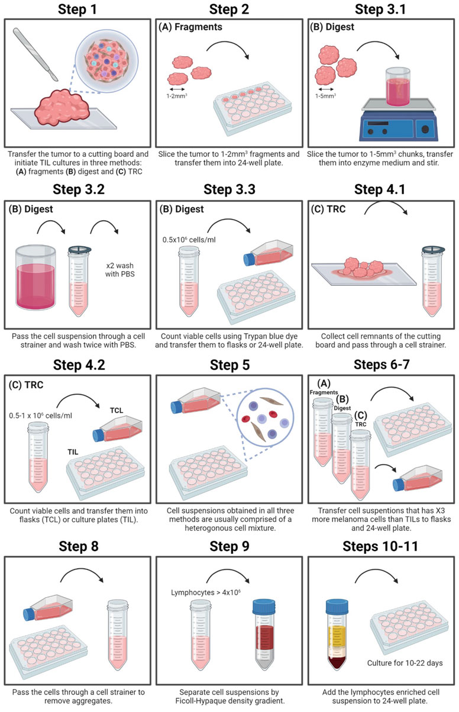
3.1.1 비선별/young TIL 배양 확립 절편 배양 1. 종양 조직을 절단판에 놓고 해부칼로 6–12개 절편으로 자른다. 각 절편은 크기 1–2 mm³ 정도로 절제 조직의 서로 다른 부위에서 채취하며, 절단판 위에 있는 동안 PBS나 CM에 잠겨 있어야 한다. 2. 각 절편을 24웰 플레이트의 개별 웰로 옮기고 웰마다 CM(IL-2 3000 UI/mL 함유) 2 mL를 넣는다.
종양 조직 절편의 효소 소화로 얻은 TILs와 종양세포 배양 1. “절편 배양” 소항목에서 남은 종양 조직을 해부칼로 1–5 mm³ 절편으로 자른다. 2. 멸균 기구로 절편을 효소 함유 배지가 든 멸균 용기로 옮긴다(종양조직 1 cm³당 약 50 mL). 3. 용기에 멸균 마그네틱 교반기를 넣고 증발과 오염을 막으려고 주석 포일로 용기를 감싼다. 4. 세포 분산이 충분해질 때까지 37 °C에서 2–4시간 또는 실온에서 하룻밤 교반한다. 5. 세포 현탁액을 멸균 세포 스트레이너로 여과해 50 mL 코니컬 튜브에 받는다. 튜브당 최대 25 mL; Note 7 참조. 6. PBS로 부피를 50 mL까지 채운다. 7. 1600 rpm(약 500 × g)에서 10분간 원심분리하고 상층액을 버린다. 8. 각 튜브의 세포 펠릿을 PBS 50 mL에 현탁한다. 9. 다시 1600 rpm(약 500 × g)에서 10분간 원심분리한다. 10. 생존 세포 총수를 세려고 펠릿 크기에 따라 PBS 10–50 mL에 세포 펠릿을 현탁한다. 11. 트리판 블루 염색 배제법으로 총 생존 유핵세포 수를 결정한다. 12. 1600 rpm(약 500 × g)에서 10분간 원심분리한다. 13. 상층액을 흡인하고 세포 펠릿을 CM 배지(IL-2 3000 IU/mL 포함)에 현탁해 생존 세포 농도를 0.5 × 10⁶ cells/ml로 만든다. 14. 세포를 T75(12–15 mL) 또는 T175(25–30 mL) 배양 플라스크나 24웰 플레이트(웰당 2 mL)로 옮긴다.
조직 잔류물 배양(TRC) 1. 50 mL 코니컬 튜브 위에 필터(세포 스트레이너, 70 μm)를 올린다. 2. “절편 배양”과 “종양 조직 절편의 효소 소화로 얻은 TILs와 종양세포 배양” 후 절단판에 남은 세포 잔류물을 모아 세포 스트레이너로 통과시킨다. 3. 튜브를 300 × g에서 8분간 원심분리한다. 4. 펠릿 크기에 따라 CM(IL-2 3000 IU/mL 포함) 10–50 mL에 세포 펠릿을 현탁해 총 생존 세포를 센다. 5. 트리판 블루 염색 배제법으로 총 생존 유핵세포 수를 결정한다. 6. 세포를 24웰 플레이트(TIL 성장용)나 플라스크(TCL 성장용)로 옮긴다(0.5–1 × 10⁶ cells/mL). 7. 1–3일 후 TIL 세포가 들은 세포 현탁액을 배양 플레이트에서 웰당 2 mL씩 24웰 플레이트로 옮긴다. 8. 흑색종이 자라도록 플라스크의 배지를 흑색종 배양 배지로 바꾼다.
Fig. 1 TIL 배양 확립. TIL과 종양 세포주(TCL) 배양의 시작은 전이 병변의 수술적 절제이며, 절제물은 다음 순서로 세 가지 방법의 시작 재료로 쓰인다: (a) 무처리 종양 조직 절편 배양(1, 2단계), (b) 종양 조직 절편 효소 소화로 얻은 TILs와 종양세포 배양(3.1–3.3단계), 그리고 (c) 조직 잔류물 배양(TRC), 즉 (a), (b) 방법을 위해 종양 조직 절편을 회수한 뒤 절단판에 남은 세포 잔류물 배양(4.1–4.2단계). 5–11단계는 림프구와 흑색종세포의 배양 및 분리를 보여준다.
Fig. 2 TIL 형질도입. TIL 형질도입은 전이 병변 수술 절제, 흑색종 같은 TILs와 종양 세포주(TCL)의 확립, IL-2(interleukin 2) 첨가 활성화를 통한 TIL 확장으로 시작한다. 이 시점에서 활성화된 세포는 저장할 수도 있고 즉시 급속 확장 프로토콜(REP)에 넣을 수도 있는데, REP에는 anti-CD3 항체(OKT3), IL-2, 사료세포(feeder cell)로의 활성화, CAR 같은 GOI로의 바이러스 형질도입, 형질도입 TILs의 확장이 포함된다. 흑색종세포는 형질도입 TILs의 검사용 표적세포로 쓸 수 있다.
위 세 가지 방법으로 얻은 세포 통합 및 TILs와 흑색종세포의 분리 절편 분쇄, 효소 소화 또는 TRC로 얻은 단일세포 현탁액에는 보통 림프구, 흑색종세포, 적혈구, 섬유아세포, 세포 찌꺼기가 뒤섞인 이질적인 세포 혼합물이 들어 있다. 림프구는 부유 상태를 유지하는 고유 성질이 있고 흑색종세포는 배양 용기 표면에 부착하는 경향이 있어 이 둘을 분리한다. 따라서 단일세포 현탁액에 흑색종세포가 많으면 조직배양 플라스크처럼 표면적이 넓은 배양 용기가 필요하다. 게다가 이 성장기에 TILs의 확장 속도는 조직배양 플라스크보다 24웰 플레이트에서 더 높아서, 단일세포 현탁액을 아래와 같이 24웰 플레이트와 조직배양 플라스크로 나눈다: 1. 흑색종세포가 TIL보다 최소 세 배 이상 많은 단일세포 현탁액의 약 4분의 3은 조직배양 플라스크로(T25 플라스크당 흑색종세포 5 × 10⁶ 이하), 약 4분의 1은 24웰 플레이트로 옮긴다(웰당 약 0.25 × 10⁶ 흑색종세포/mL). 단일세포 현탁액에서 흑색종세포가 TIL보다 세 배 미만이면 대부분을 24웰 플레이트에 접종한다. 하룻밤 배양하면 세포 현탁액(T25 플라스크와 24웰 플레이트 모두)에 비부착 림프구가 다른 세포들과 함께 남는다. 2. 비부착 림프구와 다른 세포(T25 플라스크와 24웰 플레이트에서)를 통합하고 70-mm 세포 스트레이너로 통과시켜 적혈구 큰 덩어리와 세포 찌꺼기를 제거한다. 흑색종세포는 웰에 붙아 남으며, 선택적으로 추가 배양해 TIL의 검사용 표적세포로 쓸 수 있다. 3. 비부착 림프구 수를 센다. 림프구 총수가 약 4 × 10⁶을 넘으면 4번 또는 5번 단계로 진행한다. 4 × 10⁶ 미만이면 비부착 세포가 한 겹의 빽빽한 층을 이루도록 24웰 플레이트에 세포를 접종한다. 5–7일 후 보통 림프구가 증식하기 시작한다. 림프구 밀도가 약 4 × 10⁶에 도달하면 4번 또는 5번 단계로 간다. 4. 세포 현탁액에 적혈구가 림프구보다 최소 열 배 이상 많거나 세포 찌꺼기가 대량이면 Ficoll-Hypaque 밀도 구배로 현탁액을 분획하고, 림프구가 농축된 세포 현탁액을 흑색종세포가 부착된 웰(2번 단계 참조) 또는 새 24웰 플레이트(림프구 1 × 10⁶/2 mL/웰)에 넣는다. 5. 3번 또는 4번 단계에서 얻은 세포는 확립 과정 내내 CM(hrIL-2 3000 IU/mL 포함)에서 배양한다. 림프구가 증식하기 시작하면(대개 수술 후 약 1주일) 0.5–2 × 10⁶ cells/mL(웰당 2 mL) 농도로 유지한다. TIL 배양은 24웰 플레이트에서 가장 잘 자란다. 모든 흑색종세포가 없어지고 TIL이 최소 5 × 10⁷개에 도달하면 young-TIL 배양이 확립됐다고 볼 수 있다. 이 과정에는 약 10–22일이 걸린다. 단기 배양 TILs는 즉시 동결보관하거나 이후의 대규모 확장에 직접 사용할 수 있다.
3.1.2 TILs의 급속 확장 프로토콜(REP) 이 절은 임상용 TIL 세포의 표준 급속 확장 프로토콜을 더 작은 규모로 설명한다1, 2.
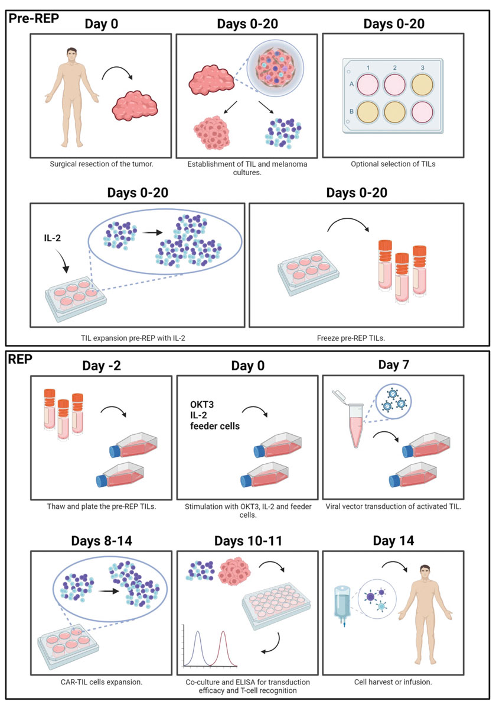
- TILs를 hrIL-2 3000 IU/mL가 든 eCM에서 해동하고 24웰 플레이트에서 1.0 × 10⁶/mL 농도로 2일간 쉬게 하거나, 소항목 3.1.1 “TIL 배양 확립”의 11번 단계에서 신선하게 분리한 TILs를 사용한다.
- [소규모] REP 시작: T25 플라스크에 OKT3 30 ng/mL, hrIL-2 3000 IU/mL(InRepCM 사용), 무관계 공여자 PBMC를 방사선 조사한 것을 사료세포로(5000 rad, TIL:사료세포 = 1:100) 넣고 50% CM + 50% AIM-V 배지에서 TILs를 자극한다.
- 바이러스 형질도입 당일(REP day 7) TIL을 회수하고 계수하여 hrIL-2 3000 IU/mL가 든 CM에서 0.5 × 10⁶/mL로 농도를 맞춘다. 즉시 세포를 쓰거나 -80 °C에서 48시간 저장한 뒤 액체질소 저장으로 옮긴다.
- 아래 설명대로 TILs를 유전적으로 변형한다(바이러스 형질도입은 “T세포와 TILs의 레트로바이러스 형질도입” 소항목, mRNA 형질천환은 소항목 3.3.2).
3.2 PBMCs, T세포 또는 세포주 준비 1. hrIL-2 없는 T세포 배양 배지 20 mL 또는 FCS/FBS 10%가 든 PBS가 들어 있는 50 mL 튜브에 PBMCs를 해동한다. 2. 세포를 계수하고 실온에서 1250 rpm으로 10분간 원심분리한다.
3.2.1 PBMCs 활성화 3. T세포 배양 배지에 세포를 현탁하고 6웰 플레이트로 옮긴다.
세포 배양 설정 및 활성화 4. Cloudz CD3/CD28 미소구를 사용 직전에 바이알을 5–10초 볼텍스로 섞는다. Note 1 참조. 5. PBMCs 1 × 10⁶개마다 Cloudz CD3/CD28 미소구 20 μL를 넣는다. 6. 흔들거나 기울여 세포와 Cloudz CD3/CD28 미소구를 약 30초간 부드럽게 섞는다. 7. PBMC 성장 배지에서 가습 배양기(37 °C, 5% CO₂)로 2–3일간 배양한다.
Cloudz CD3/CD28 미소구 용해에 의한 세포 방출 및 세포 회수 1. 2–3일 후 Cloudz 키트의 6× Release Buffer를 1:6 희석으로 세포 배양 배지에 직접 넣는다(즉, 배양 배지 40 mL가 든 세포 배양 용기에 6× Release Buffer 8 mL를 직접 넣음). 버퍼를 넣은 뒤 샘플을 저어 Cloudz CD3/CD28 미소구가 완전히 녹게 한다(약 5분). 2. 원심분리(실온 1250 rpm, 10분)로 T세포를 회수한다. 3. 상층액을 버린다. 세포 펠릿을 T세포 배양 배지에 현탁해 6웰 플레이트에 접종한다. 4. 플레이트를 37 °C, 5% CO₂ 배양기에서 24시간 배양한다.
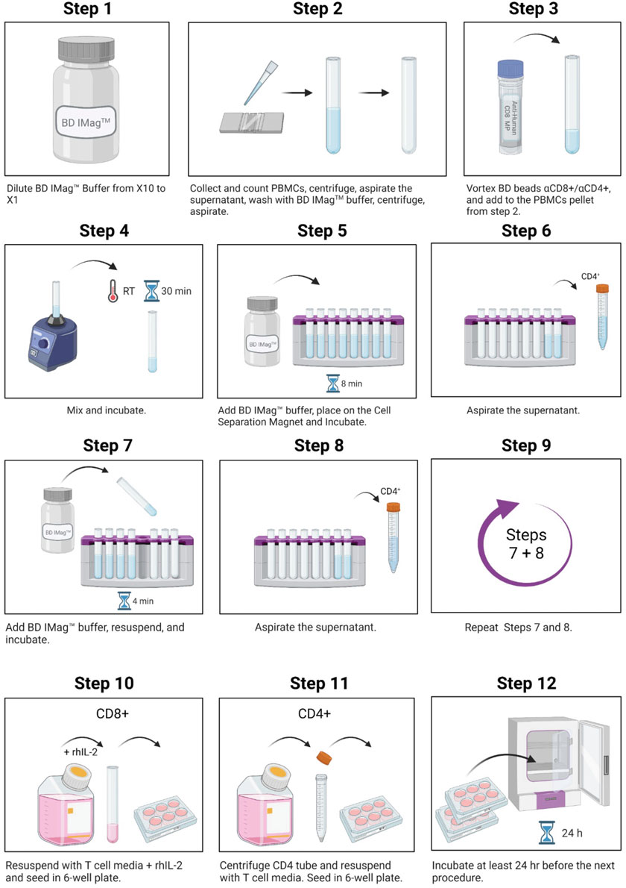
Fig. 3 PBMCs에서 T세포 분리. 이 절차는 활성화된 PBMC 집단에서 CD8⁺ T세포 양성선택과 CD4⁺ T세포 음성선택에 기반한다. 세포 현탁액을 anti-human CD8 마그네틱 입자와 섞으면 CD8⁺ T세포가 입자에 결합하고 자석으로 결합하지 않은 CD4⁺ T세포와 분리된다. CD4⁺ T세포는 상층액에서 회수되고 CD8⁺ T세포는 마그네틱 입자에서 분리된다. “BD beads αCD8+/αCD4+”: anti-CD8 또는 anti-CD4 항체가 붙은 마그네틱 비즈 첨가; “rhIL2”: 재조합 인체 IL-2
3.2.3 세포주 준비 1. 소항목 2.2.3에서 제안한 것 같은 세포주를 해동한다. 2. 흑색종 및 T세포 하이브리도마 세포주용 성장 배지에서 세포를 배양한다.
3.3 TILs, PBMCs, T세포 또는 세포주의 유전적 변형(Fig. 4)
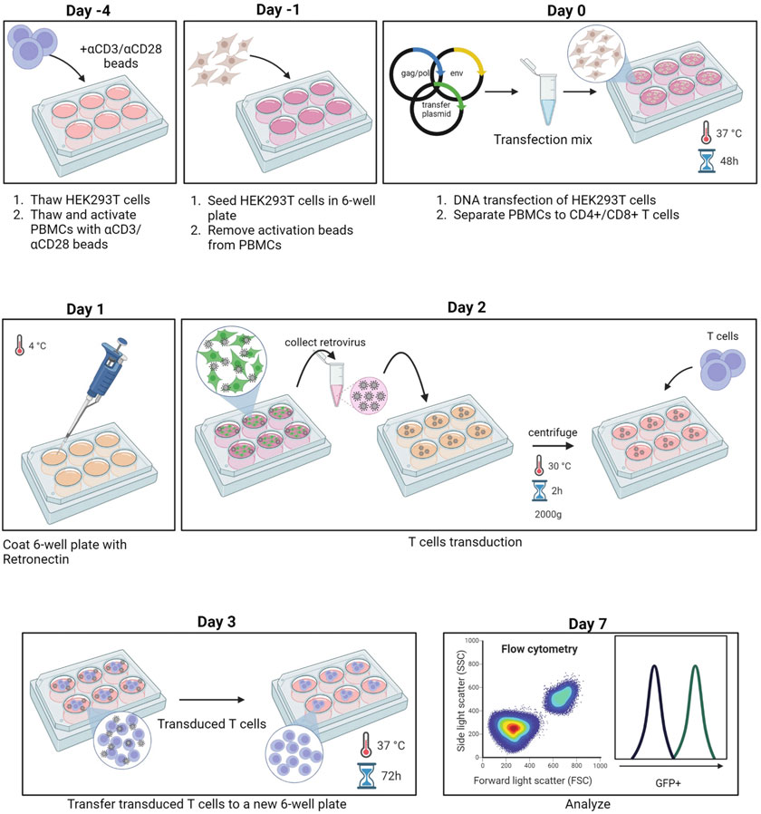
Day -4(세포 형질천환 4일 전): HEK293T 세포 해동. 1. HEK293T 세포 배양 배지 10 mL에 HEK293T 세포를 해동한다.
3.3.1 바이러스 준비 2. 위 소항목 3.2.1의 설명대로 PBMCs를 해동하고 6웰 플레이트에서 활성화한다. 3. 5% CO₂, 37 °C에서 72시간 배양.
Day -1: HEK293T 세포 접종 1. HEK293T 세포 배양 배지 2 mL와 함께 6웰 플레이트에 HEK293T 세포를 접종한다. 목표는 day 0에 세포가 약 60–70% confluent가 되도록 하는 것이다. 이를 위해 별도 플레이트에 서로 다른 세포 밀도로 접종한다. 예: 웰당 150,000, 200,000, 250,000 cells. Day 0에 적절한 밀도에 도달한 플레이트를 고른다. 2. 5% CO₂, 37 °C 배양기에서 24시간 배양. 3. 위(day -4) 3번 단계의 활성화된 PBMCs를 6웰 플레이트에 접종하고 5% CO₂, 37 °C에서 48시간 배양.
Day 0: 레트로바이러스 형질도입 시스템으로 HEK293T 세포 형질천환 1. 각 형질천환마다 에펜도르프 튜브에 다음 순서로 넣는다: 1.1 JetPrime buffer 200 μL(6웰 플레이트 웰 1개 분량). 1.2 레트로바이러스 형질도입 시스템 플라스미드로 최소 (1) GOI가 든 transfer plasmid, (2) 바이러스 Gag-Pol 유전자가 든 플라스미드, (3) Env 유전자가 든 플라스미드 포함. 2. 10초 볼텍스 후 스핀다운. 3. 사용 직전 jetPRIME® 시약을 5초 볼텍스하고 스핀다운. 4. jetPRIME® 시약 4 μL를 넣는다. 5. 10초 볼텍스 후 잠깐 스핀다운. 6. 실온에서 10분간 배치. 7. 형질천환 혼합물 웰당 200 μL씩 HEK293T 세포(60–70% confluent) 위에 적가하여 골고루 분산. 8. 플레이트를 앞뒤·좌우로 부드럽게 기울여 섞는다. 9. 5% CO₂, 37 °C에서 4시간 배양.
Fig. 4 형질도입 과정 개요. 유전 조작 대상 표적세포(TILs 또는 PBMCs)는 6웰 플레이트에서 활성화된다. HEK293T 세포는 평행하게 배양되며 최소 (1) GOI가 든 transfer plasmid, (2) 바이러스 Gag-Pol 유전자가 든 플라스미드, (3) Env 유전자가 든 플라스미드를 포함하는 레트로바이러스 형질도입 시스템 플라스미드로 형질천환된다. Day 1에 6웰 플레이트를 RetroNectin으로 코팅한다. Day 2에 레트로바이러스 입자가 들은 상층액을 HEK293T 세포 플레이트에서 회수해 RetroNectin 코팅 플레이트에 넣는다. 표적세포를 RetroNectin 결합 바이러스 입자에 넣고 day 3에 새 6웰 플레이트로 옮긴다. “+αCD3/αCD28”: anti-CD3, anti-CD28 항체 비즈 첨가
- 배지를 신선한 배지로 교체.
- 5% CO₂, 37 °C 배양기에서 48시간 배양.
- 선택: 레트로바이러스가 든 상층액을 회수해 -80 °C 보관.
RetroNectin 코팅 접시 준비 — Day 1 이 단계에서는 미처리(non-treated), 세포배양 등급 조직배양 플레이트나 접시를 써야 한다. 1. 코팅 전 멸균 PBS로 희석해 RetroNectin 용액(20–100 μg/mL)을 준비한다. 2. 6웰 플레이트에 20 μg/mL 농도의 RetroNectin 용액을 웰당 2.25 mL 넣는다(각 웰 지름이 35 mm [≈9 cm²]이므로 밀도 ≈5 μg/cm²). Notes 8, 9 참조. 각 플레이트에 멸균 RetroNectin 용액을 적정량 나눈다. 3. 플레이트를 실온에서 2시간 또는 4 °C에서 하룻밤 둔다. Note 10 참조.
Retrovirus의 RetroNectin 코팅 플레이트 결합 — Day 2: 형질도입 1. 원심분리기를 비운 채 2000 g, 32 °C로 돌려 예열한다. 2. PBS 속 멸균 2% BSA(Fraction V) 차단 용액을 준비한다. 6웰 플레이트 하나당 BSA 0.3 g + PBS 15 mL. 3. 6웰 플레이트에서 RetroNectin 용액을 흡인한다. 차단 용액을 넣기 전에(4번 단계) 한 번에 3웰 이상을 흡인하지 않아 웰이 마르지 않게 한다. Note 11 참조. 4. 적정량 차단 용액으로 차단: PBS 속 멸균 2% BSA를 6웰 플레이트 각 웰에 2 mL. 5. 실온에서 30분간 둔다. 6. 5번 단계를 기다리는 동안 6웰 플레이트의 HEK293T 세포에서 레트로바이러스 상층액을 회수해 15 mL 튜브로 옮기거나(day 0의 11번 단계) 저장해 둔 레트로바이러스 상층액을 해동한다. 7. 6번 단계의 바이러스 상층액이 든 15 mL 튜브를 1000 rpm에서 10분간 원심분리한다. 8. 7번 단계의 원심분리 동안 RetroNectin 6웰 플레이트에서 BSA 용액(차단 용액)을 빼고 적정량(웰당 2 mL) PBS로 한 번 씻으며, 세척액을 플레이트에 남겨 둔다. 9. 바이러스 상층액을 넣기 직전에 세척액을 흡인한다. 10. 7번 단계의 레트로바이러스 용액 2–4 mL를 RetroNectin 코팅 플레이트에 넣는다. 다음 단계(“T세포와 TILs의 레트로바이러스 형질도입” 소항목)에서 레트로바이러스 코팅 웰에 넣을 표적세포가 TILs라면 선택적으로 레트로바이러스 용액을 STIM 배지로 1:2 희석해 옮긴다. Note 12 참조. 11. 플라스틱 랩으로 덮는다. 12. 플레이트를 예열한 원심분리기에 넣고 32 °C에서 1000–2000 g으로 2시간 원심분리해 바이러스 입자와 RetroNectin 시약의 결합을 돕는다. 6웰 플레이트의 경우 32 °C에서 2000 g, 2시간이 최적이다. 13. 레트로바이러스 입자가 RetroNectin 코팅 플레이트에 결합하는 동안 표적 TIL 또는 T세포를 준비한다: 자세한 내용은 Note 13과 아래 “T세포와 TILs의 레트로바이러스 형질도입” 소항목 참조. 14. 저장 플레이트에서 표적세포를 회수하고 살아있는 세포 수를 센다. 15. 표적세포를 성장 배지에 현탁한다: T세포는 T세포 배양 배지에서 0.5 × 10⁶ cells/mL 밀도로, TILs는 STIM 배지에서 2 × 10⁶ TILs 밀도로 현탁한다. 16. RetroNectin 결합 바이러스 입자가 있는 플레이트를 원심분리기에서 꺼낸다. 17. 플레이트에서 바이러스 상층액을 흡인해 소량의 차아염소산나트륨(남은 레트로바이러스 입자 불활성화용)이 든 50 mL 튜브로 옮기되, 웰에 소량을 남겨 둔다(웰 접촉과 건조 방지). 즉시 “T세포와 TILs의 레트로바이러스 형질도입” 소항목 1번 단계로 진행하거나 Note 14를 참조.
T세포와 TILs의 레트로바이러스 형질도입 1. 표적세포를 RetroNectin 코팅 플레이트에 즉시 넣는다: (a) T세포를 0.5 × 10⁶ cells/mL 밀도로 넣는다(T세포 배양 배지 6 mL에 3 × 10⁶ cells). T세포는 “Cloudz CD3/CD28 미소구 우해에 의한 세포 방출 및 세포 회수” 소항목 4번 단계 직후 또는 소항목 3.2.2 “PBMCs로부터 T세포 준비” 12번 단계 직후에 사용한다. (b) hrIL-2 300 IU/mL가 든 TIL 레트로바이러스 형질도입용 배지(STIM 배지)에서 TILs를 2 × 10⁶ 밀도로 각 RetroNectin 코팅 웰에 넣는다. TILs는 회수 직후(소항목 3.1.2 “TILs의 급속 확장 프로토콜(REP)”) 또는 동결 상태였다면 사용 2일 전에 해동한다. 2. 표적세포와 바이러스 입자의 접촉을 돕기 위해 세포 추가 후 플레이트를 원심분리할 수 있다: 플레이트를 싸고 가속/브레이크를 1로 두고 1500 rpm에서 10분간 원심분리한다. 균형을 확실히 맞춘다! 3. 플레이트를 원심분리기에서 조심히 꺼낸다. 4. 현미경으로 세포 밀도를 확인한다. 세포가 접종되었는지 확인하는 품질 검사일 뿐이다. 5. 플레이트를 37 °C, 5% CO₂ 배양기에서 하룻밤(TILs 또는 T세포) 또는 2–3일간 배양.
형질도입 T세포 유지 — Day 3 1. 형질도입 T세포 상층액을 15 mL 튜브로 옮긴다. 2. PBS로 플레이트를 씻어 남은 비부착 세포를 회수해 15 mL 튜브에 합친다. 3. 세포를 회수하려고 15 mL 튜브를 1250 rpm에서 10분간 원심분리한다. 4. 세포를 신선한 T세포 배양 배지 1 mL에 현탁해 6웰 플레이트에 접종한다(웰당 총 4 mL 배지). 5. 37 °C에서 72시간 배양. Day 6 이후: 형질도입 T세포의 형질도입 효율 또는 활성 분석(FACS, ELISA, 살해 분석).
형질도입 TILs 유지 1. 형질도입 TILs를 6웰 배양 플레이트로 옮기고 hrIL-2 300 IU/mL가 든 TILmM1 배지에서 0.5–2.0 × 10⁶ cells/mL 농도로 유지하며 day 10–11까지 계속 확장한다. 2. Day 10–11에 TILmM1 배지를 TILmM2 배지로 교체. 3. Day 10 이후: 형질도입 TILs의 형질도입 효율 또는 활성 분석(FACS, ELISA, 살해 분석).
3.3.2 TILs와 T세포의 mRNA 형질천환 T세포 mRNA 형질천환은 회수 직후(소항목 3.2.2 “PBMCs로부터 T세포 준비” 12번 단계 후 T세포 분리 3일째) 또는 PBMCs 해동 1주일 후에 수행한다. TIL mRNA 형질천환은 회수 직후(소항목 3.1.2 “TILs의 급속 확장 프로토콜(REP)”) 또는, 동결 상태였다면 hrIL-2 3000 IU/mL가 든 TILmM2에서 해동하고 6웰 플레이트에 접종해 37 °C, 5% CO₂에서 2–3일 배양한 후 2일(day 11–12 REP)에 수행한다. 1. 큐벳을 얼음 위에서 미리 차게 식힌다. 2. TILs 또는 T세포를 센다. 3. 세포를 회수하고 차가운 Opti-MEM 배지로 씻는다: 상층액을 버리고 신선한 Opti-MEM 배지에 현탁, 원심분리 반복. 4. 차가운 Opti-MEM 배지에서 최종 1.6 × 10⁷ cells/mL로 현탁하고 얼음 위에 둔다. 5. 세포 180 μL와 mRNA 10 μg을 차가운 2-mm 큐벳에서 섞고 Gene Pulser Xcell(BioRad)이나 AgilePulse MAX System(BTX) 같은 전기천공 장치로 360–380 V 1-ms 사각파 펄스 조건에서 전기천공한다. 6. 세포를 즉시 hrIL-2 2 ng/mL가 든 T세포 배양 배지 3 mL가 들어 있는 12웰 플레이트로 옮긴다. 7. 후속 분석이나 응용을 위해 플레이트를 37 °C, 5% CO₂ 배양기에서 24시간 배양.
3.4 TILs의 형질도입/형질천환 효율 평가용 유동세포측정 형질도입 효율은 형질도입 4일 후(REP day 11)와 7일 후(REP day 14) 유동세포측정으로 판단하며, 성공적으로 형질도입된 세포가 발현하는 GOI 산물을 표적으로 하는 라벨 항체로 형질도입 세포를 염색한다. 예컨대 CAR 발현 TILs는 biotin-labeled goat anti-mouse IgG F(ab′)₂ 특이 항체(Jackson ImmunoResearch, West Grove, PA)와 streptavidin(APC 결합; BD Bioscience, San Jose, CA)으로 라벨링한다. 1. TILs 분석 시 세포를 씻어 세포 염색 버퍼(BioLegend, San Diego, CA)에 현탁한다. 2. 세포를 항체와 함께 얼음 위에서 30분 배양한다. 3. FACS 완충액으로 씻는다. 4. FACS 기기 MACSQuant(Miltenyi Biotec)로 측정한다. 샘플은 FlowJo 소프트웨어(FlowJo LLC, Ashland, OR)로 분석할 수 있다. 세포는 FCS/SSC와 singlet으로 게이팅한다.
4 Notes 1. 관련 대안으로 Dynabeads Human T-Expander CD3/CD28(Thermo Fisher Scientific, 11141D)과 에펜도르프 또는 코니컬 튜브용 DynaMag(Invitrogen 12321D, 또는 MACSiMAG separator, Miltenyi Biotec 130–092-168)가 있다. 활성화의 다른 방법: PBMCs를 OKT3 250 ng/mL, anti-CD28 mAb 125 ng/mL, hrIL-2 1000 IU/mL가 든 성장 배지에 PBMCs를 1.5 × 10⁶ cells/ml로 넣고 37 °C, 5% CO₂에서 72시간 배양한다. 2. 배지는 0.2 미크론 필터 유닛으로 여과해야 한다. 3. hrIL-2를 배지에 넣으면 일주일 안에 사용해야 한다. T세포 배지를 IL-2 없이 만들어 두고 필요할 때 일부를 덜어 hrIL-2 함유 T세포 배양 배지를 만드는 것이 좋다. 4. 대안적 T세포 농축 키트: (a) EasySep Human CD4/CD8 T Cell Enrichment Kit(StemCell Tech 17,952/17968). (b) EasySep buffer(StemCell Tech 20,144). (c) EasySep Magnet for 15-ml round-bottom tubes(StemCell Tech 18,001). (d) MAGH102, MagCellect Human CD4+ T Cell Isolation Kit R&D(R&D Systems). 5. 대안적 바이러스 준비 키트: (a) Xfect™(Takara Bio). (b) FuGENE® HD Transfection Reagent(Active Motif). 6. 검체는 수술 후 몇 시간 안에 멸균 용기의 멸균 생리식염수에 잠긴 상태로 실험실에 도착하는 것이 중요하다. TIL 준비를 즉시 시작하면 조직을 실온에 두고, 지연되면 4 °C에 둔다. 7. 대안으로 세포 현탁액 부피가 클 경우 멸균 금속 메쉬 필터로 여과해 하나 이상의 더 큰 225 mL 튜브에 받을 수 있다. 8. 다른 플레이트를 쓸 경우 플레이트 면적당 4–20 μg/cm²에 해당하는 부피로 20–100 μg/mL RetroNectin을 코팅한다.(6웰 플레이트 최적 밀도는 5 μg/cm².) 9. RetroNectin 단편 손실을 피하려면 PBS로 희석한 RetroNectin 용액을 여과멸균하지 않는다. 10. RetroNectin 코팅 플레이트는 파라필름으로 밀봉해 4 °C에서 최대 1주일 보관할 수 있다. 11. 6웰 플레이트에서 흡인한 RetroNectin 용액은 버려도 되고 재사용을 위해 저장해도 된다. 12. 이 방법에서 감염 저해 분자가 PBS 세척으로 제거되지 않을 수 있다. 그래서 유전자 형질도입 효율이 낮아질 수 있다. 그런 경우 성장 배지로 희석해 바이러스 스톡 용액을 쓰는 것이 권장된다. 적절한 희석 비율은 최적화가 필요하다. 13. 표적세포는 대수 증식기여야 하며 인테그린 수용체 VLA-4와/또는 VLA-5를 발현해야 한다. 14. 선택: “T세포와 TILs의 레트로바이러스 형질도입” 소항목 1번 단계 전에 적정량의 PBS 또는 알부민(BSA 또는 HSA) 0.1–2% 함유 PBS로 플레이트를 씻을 수 있다.
감사의 글 원고 작성과 편집에 결정적인 도움을 주신 Mikael Schwarz 박사님께 감사드린다. 최종 원고를 다듬어 주신 Gillian Kay 박사님께도 감사드린다. LN은 Israel Science Foundation(ISF), Israel Cancer Association(ICA), State of Israel Ministry of Innovation, Science and Technology Science Forefront 보조금의 지원을 받았다. LN은 암 면역치료 분야 바이오텍 기업에 직접적인 재정 이해관계가 있다. 모든 그림은 Biorender.com으로 제작했다.
References 1. Dudley ME, Wunderlich JR, Shelton TE 외 (2003) Generation of tumor-infiltrating lymphocyte cultures for use in adoptive transfer therapy for melanoma patients. J Immunother 26:332–342 — metastatic melanoma. Clin Cancer Res 16(24):6122–6131 3. Weinstein-Marom H, Gross G, Levi M, Brayer H, Schachter J, Itzhaki O, Besser MJ (2021) Genetic modification of tumor-infiltrating lymphocytes via retroviral transduction. Front Immunol 11:584148 2. Dudley ME, Gross CA, Langhan MM 외 (2010) CD8+ enriched “young” tumor infiltrating lymphocytes can mediate regression of
2017년 미국 식품의약국(FDA) 승인으로 이어졌다[3–5]. T세포를 CAR-T 세포로 엔지니어링하는 방식은 여러 가지가 확립되어 있다. 감마레트로바이러스 또는 렌티바이러스 벡터로 변형된 T세포가 임상시험에서 놀라운 효능을 보였지만[9] 바이러스 접근에는 여러 단점이 있다. 임상 제조 측면에서 특수 제조 공정이 필요해 임상 등급 렌티바이러스 제작은 매우 비싸고 시간이 오래 걸린다. 전임상 환경에서 렌티바이러스 제조의 복잡성은 다양한 구조물을 시험하는 데 필요한 유연성을 떨어뜨리고, 바이러스 벡터의 높은 비용은 빠른 전임상 개발을 방해한다. 최근 여러 연구에서 CAR-T 세포 제작의 대안으로 트랜스포존을 쓰는 비바이러스 형질천환 기반 접근이 탐구되었다[10, 11]. 비바이러스 플라스미드 기반 트랜스포존 시스템은 치료 목적 인체 세포의 안정적 유전 변형에 효율적인 방법으로 자리 잡았다[10, 11]. 트랜스포존 기반 엔지니어링의 큰 장점은 유연성과 큰 형질유전자 운반 능력[12], 복수 형질유전자 동시 전달 능력[13]이다. 게다가 트랜스포존을 암호화하는 플라스미드는 대부분의 기초 분자생물학 실험실에서 대량으로 쉽게 만들 수 있어 더 폭넓은 실험이 가능하다. 트랜스포존 시스템의 또 다른 장점은 CAR-T 세포의 현장(point-of-care) 제조에 쓸 수 있어 제조 시간을 크게 줄인다는 것이다. 이는 특히 렌티바이러스 방식의 기존 CAR-T 세포 제작에 필요한 4–6주 제조 기간을 버티기 어려운 중증 급성 환자에게 중요하다[14]. 결과적으로 Sleeping Beauty와 PiggyBac 트랜스포존 시스템은 여러 적응증에 대해 인체 CAR-T 세포 임상시험 사용이 승인되었다[15, 16]. 본 장에서는 h… (생성 절차를 자세히 설명한다)
- pTpB-hCD19-41BB 벡터. 4-1BB 공동자극 도메인이 있는 anti-CD19 키메라 항원 수용체(CAR)(Note 1 참조).
Transposon-Based Manufacturing of Human CAR-T Cells
- pTpB-hCD19-CD28 벡터. CD28 공동자극 도메인이 있는 anti-CD19 키메라 항원 수용체(CAR)(Note 2 참조).
- pTpB-CMV-hCD19: 막결합 인체 CD19용 포유류 발현 벡터17.
- ZymoPURE II Plasmid Maxiprep Kit(D4202).
2.2 말초혈액 검체에서 PBMC 분리 1. 신선한 인체 PBMC. 2. Hanks’ Balanced Salt Solution(HBSS)(1×). 3. Lympholyte® Mammal Cell Separation Media(Cedarline). 4. T세포 배지: advanced RPMI에 태아우혈청(FBS) 5%, 글루타민 2 mM, Pen-Strep 1% 보강. 5. 재조합 IL-7. 6. 탁상형 원심분리기: Eppendorf 5810R; 로터: A-4-81, 15/50 mL 버킷. 7. 24웰 세포 배양 플레이트(멸균, 평바닥).
2.3 형질천환 1. Amaxa Nucleofector(Lonza). 2. Human T Cell Nucleofector Kit(Lonza). 3. T세포 배지(앞서 설명). 4. 12웰 세포 배양 플레이트(멸균, 평바닥).
2.4 세포 배양 및 CAR-T 세포 확장 1. T세포 배지(앞서 설명). 2. CD19⁺ K562 세포주. 3. 재조합 IL-2. 4. 24웰 세포 배양 플레이트(멸균, 평바닥).
2.5 확장 후 CAR-T 세포 동결보관 1. 동결보관 배지: advanced RPMI에 인체 혈청 40%, DMSO 10% 보강. 2. 동결보관용 나사 마개 마이크로원심튜브.
2.6 HEK293Tscan-CD19⁺ 세포 제작 1. Neon Transfection System(Thermo Fisher, USA). 2. pTpB-CMV-Tscan-hmbCD19(Fig. 1). 3. HEK293HLAnull 세포18. 4. 6웰 세포 배양 플레이트(멸균, 평바닥).
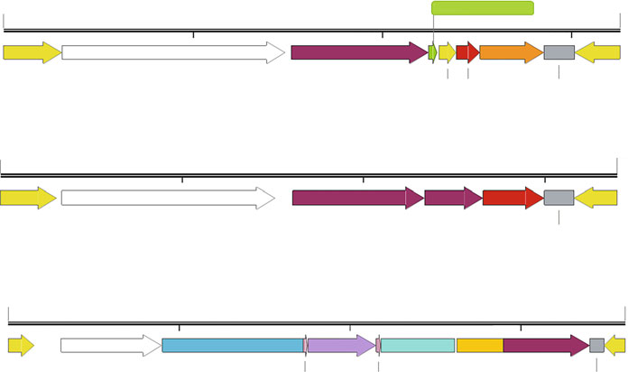
2.7 HLA Null Granzyme 리포터 세포(HEK293Tscan-CD19⁺) 배양 1. HEK-293Tscan-CD19⁺ 세포. 2. HEK-293T 배지: Dulbecco’s Modified Eagle Medium(DMEM)에 10% 3. FBS, Glutamax 2 mM, Pen/Strep 0.2%. 4. 0.25% 트립신–EDTA.
Fig. 1 벡터 개념도. PiggyBac 트랜스포자아제는 pTpB-hCD19-41BB, pTpB-hCD19-CD28, pTpB-Tscan-CD19 트랜스포존과 함께 사용되었다. CMV: 거대세포바이러스 즉기 초기 인핸서/프로모터; PiggyBac: 트랜스포자아제; FM63 scFv: 인체 CD19 표적 인식 도메인; 4-1BB: 4-1BB 세포내 신호 전달 도메인; CD28 ORF: CD28 막횡단 도메인과 신호 전달 도메인; GFP: 녹색 형광 단백질 리포터 유전자; ICADCR: caspase 내성 변이 ICAD(inhibitor of caspase-activated DNase) 막횡단 도메인; HO1: 헴 옥시게나제-1; IRES: 내부 리보솜 진입 부위; hmbCD19: truncated 인체 막결합 CD19; WPRE: 우드척 간염 바이러스 전사후 조절 요소; PolyA: 원숭이 바이러스 40 후기 폴리A 신호. 노란 실선 화살표는 PiggyBac 역위말단반복(TR) 서열을 가리킨다.
2.8 유동세포측정 분석 1. Dulbecco’s phosphate-buffered saline(DPBS)(1×). 2. BV421 mouse anti-human CD3(BD#563797). 3. PE-Cy7 mouse anti-human CD4(BD#560909). 4. APC mouse anti-human CD8(BD#561952). 5. UltraComp eBeads 보상 비즈(Thermo Fisher, USA). 6. 염색 버퍼: FBS 2.5% 함유 1× DPBS. 7. 원형바닥 폴리스티렌 튜브(5 mL). 8. CytoFLEX LX 유동세포계.
3 방법
3.1 플라스미드 구축 및 준비 1. 앞서 언급한 구조물의 형질천환 등급 플라스미드를 제조사 프로토콜대로 엔도톡신 프리 버퍼와 ZymoPURE II Plasmid Maxiprep Kit(ZYMO Research, USA)로 준비했다(Notes 4, 5 참조).
Fig. 2 트랜스포존 기반 인체 CAR-T 세포 제작 과정 개념도. (신선한 인체 heparinized 혈액/buffy coat를 형질천환(day -1) 전에 확보한다. 1. 신선한 인체 혈액 채취 → 2. 원심분리로 PBMC 분리 → 3. PBMC를 약 24시간 쉬게 함 → 4. PBMC를 transposon/transposase(piggyBac+CD19-41BB 또는 CD19-CD28)로 형질천환 → 5. 방사선 조사된 CD19 K562 + rIL2로 PBMC 접종, 14일 확장)
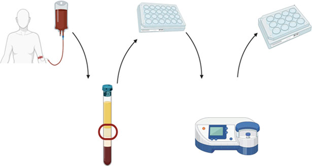
3.2 말초혈액 검체에서 PBMC 분리 1. 형질천환 전날(heparinized 혈액을 확보한다)(Note 6 참조). 2. 혈액을 HBSS로 1:1 희석하고 혈액/HBSS 혼합물과 림프구 분리 배지를 같은 부피로 하여 50 mL 코니컬 튜브의 림프구 분리 배지 위에 겹겹이 얹는다(Note 7 참조). 3. 22 °C에서 800 × g로 20분간 원심분리한다(Note 8 참조). 4. 림프구가 든 buffy coat 층을 수거한다. 5. PBS 10 mL로 500 × g, 4 °C에서 3분씩 두 번 씻는다. 6. 세포를 T세포 배지에 현탁한다. 7. 세포를 계수하고 생존율을 판정한 뒤 T세포 배지 + 재조합 인체 IL-7 10 ng/mL(4.4 × 10⁵ IU/ug)로 생존 세포 농도를 2 × 10⁶ cells/mL로 희석한다. 8. 24웰 플레이트에 웰당 2 mL씩 세포를 접종하고 37 °C, 5% CO₂에서 밤새 배양한다.
3.3 PBMCs의 안정적 형질천환 AmaxaⓇ Human T Cell NucleofectorⓇ Kit 지침에 따라 형질천환을 수행한다(Fig. 2). 아래는 형질천환 방법의 간략한 개요이다. 1. 다음 날 아침(day 0), 세포 밀도와 생존율을 확인한다(Note 9 참조). Human T Cell NucleofectorⓇ Solution 최종 100 μL 속에 생존 세포 1 × 10⁷개 + PiggyBac 트랜스포자아제 DNA 5 ug(pRP [Exp]-mCherry-CAG> hyPBase) + CD19-41BB 5 ug 또는 PiggyBac 트랜스포자아제 DNA 5 ug + pTpB-CD19-CD28 5 ug이 들어 있도록 세포를 현탁한다.
- 세포/DNA 혼합물을 인증 큐벳으로 옮긴다. 샘플이 큐벳 바닥을 덮고 기포가 없어야 한다(Note 10 참조). 큐벳을 닫는다.
- 세포/DNA 혼합물이 든 큐벳을 NucleofectorⓇ Cuvette Holder에 삽입한다. NucleofectorⓇ Program U-014를 선택해 프로그램을 실행한다.
- 프로그램이 끝나면 샘플을 T세포 배지 2 mL가 든 12웰 플레이트로 옮긴다. 형질천환된 세포를 37 °C, 5% CO₂에서 밤새 배양한다.
3.4 CAR-T 세포 확장 1. 형질천환 첫날(day 1), 세포 밀도와 생존율을 평가한다. 세포를 T세포 배지에서 최종 2 × 10⁶ cells/mL + rIL-2 100 IU/mL(2×)로 현탁한다. 2. 형질천환된 세포를 24웰 플레이트에 웰당 1 mL씩 접종한다. 3. 형질천환 세포 접종 후 미리 방사선 조사한(100 Gy) CD19⁺ K562 세포를 계수하여 T세포 배지에서 최종 5 × 10⁴로 현탁한다(Note 11 참조). 4. 현탁된 K562 세포 1 mL를 24웰 플레이트의 형질천환 세포 위에 넣어 최종 부피 웰당 2 mL, rIL-2 50 IU/mL, responder:stimulator = 40:1이 되게 한다. 5. 37 °C, 5% CO₂에서 14일간 세포를 확장하며 형질천환 세포 성장을 모니터링하고(Fig. 3) 세포 농도를 2 × 10⁶ cells/mL 이하로 유지한다. 6. 필요하면 세포를 나누어 신선한 T세포 배지 + rIL-2 50 IU/mL로 먹인다.
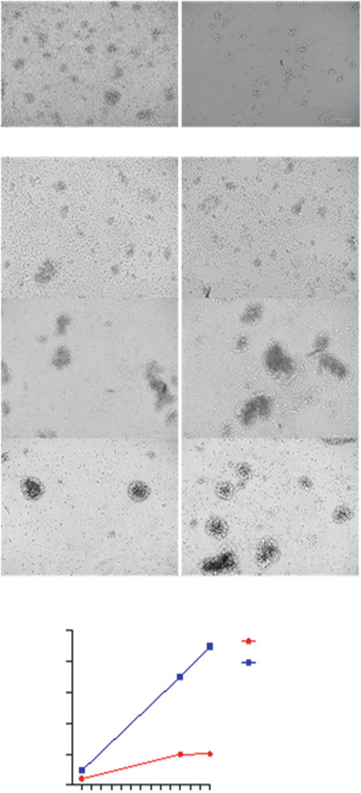
3.5 확장된 CAR-T 세포의 동결보관 14일 확장 후 CAR-T 세포는 이후 분석을 위해 동결보관했다. 1. 세포를 회수하고 PBS로 500 × g, 4 °C에서 3분씩 두 번 씻는다. 2. 세포 밀도와 생존율을 확인하고 동결보관 배지에 튜브당 1 × 10⁶ CAR-T 세포씩 나눈다. 3. 튜브를 -80 °C에서 밤새 둔 후 액체질소에 넣어 장기 저장한다(Note 12 참조).
3.6 CAR-T 세포 표현형 분석 이전에 확장한 CAR-T 세포의 표현형을 분석한다. 1. 이전에 동결보관한 CD19–41BB와 CD19–CD28 CAR-T 세포 앨리콧을 찾는다. 2. 37 °C 수조에서 빠르게 세포를 해동한다. 3. 섞고 바이알 내용물 전부를 T세포 배지 9 mL에 넣어 부드럽게 섞는다. 4. 500 × g, 4 °C에서 3분간 원심분리한다.
Fig. 3 CAR-T 세포 확장 모니터링. (a, b) (a) 형질천환 전 day 0 PBMCs(왼쪽)와 CD19⁺ K562 세포(오른쪽)의 대표 현미경 사진, (b) PiggyBac + pTpB-hCD19-41BB(왼쪽) 또는 pTpB-hCD19-CD28(오른쪽)으로 형질천환한 확장 PBMCs의 형질천환 후 day 4, 7, 14 사진. (c) 14일 확장 내내 CAR-T 세포 성장 곡선을 보여 주는 선 그래프
- 배지를 흡인하고 PBS로 500 × g, 4 °C에서 3분씩 두 번 씻는다.
- 세포 밀도와 생존율을 확인하고 튜브당 5 × 10⁵ 세포가 되게 원형바닥 튜브에 현탁한다.
- BV421 mouse anti-human CD3(5 μL/검사), PE-Cy7 mouse anti-human CD4(5 μL/검사), APC mouse anti-human CD8(20 μL/검사)을 함유한 염색 버퍼 100 μL 속에서 세포를 어두운 곳에서 4 °C로 30분 배양한다.
- 단일 염색 대조구로는 UltraComp eBeads 한 방울을 염색 버퍼 100 μL에 넣는다. 각 튜브에 위 부피대로 적절한 단일 염색약을 넣는다. 어두운 곳에서 4 °C로 30분 배양한다.
- 염색 버퍼로 두 번 씻는다.
- 샘플을 PBS 200 μL에 현탁하고 CytoFLEX LX 유동세포계로 분석한다. CD3⁺ 세포로 게이팅한다(Fig. 4).
Fig. 4 유동세포측정 기반 CAR-T 세포 표현형 분석. 14일 CAR-T 확장 후 CD4⁺와 CD8⁺ T세포 비율. CD4⁺와 CD8⁺ T세포는 CD3⁺ 확장 CAR-T 세포 총수 중 백분율로 표시됨
3.7 HEK293Tscan-CD19⁺ 세포 제작 Neon Transfection System 지침에 따라 형질천환을 수행했다. 아래는 형질천환 방법의 간략한 개요이다. 1. HEK293HLA⁻(Note 15 참조) 세포의 밀도와 생존율을 평가했다. 2. Resuspension buffer R 최종 100 ul 속에 생존 세포 5 × 10⁶개 + PiggyBac 트랜스포자아제 DNA 5 ug + pTpB-CMV-Tscan-IRES-hmbCD19 DNA 5 ug이 들도록 세포를 현탁한다. 3. Neon Electroporation Tube에 전해질 완충액 E2 3 mL를 채우고 neon pipette station에 튜브를 꽂는다. 4. Neon Transfection System 피펫으로 세포/DNA 혼합물 100 μl를 100 μl neon 팁으로 채운다. 5. 세포/DNA 혼합물이 든 피펫과 팁을 전기천공 튜브에 넣는다. 기포가 없도록 한다(Note 10 참조). 6. 샘플이 든 neon 피펫을 “딸깍” 소리가 들릴 때까지 수직으로 neon 튜브에 삽입한다. 7. 1100 volts(v), 펄스폭 20(ms), 펄스 2회를 선택하고 시작을 누른다. 8. 프로그램 완료 후 샘플을 HEK-293T 배지 3 mL가 든 6웰 플레이트로 옮긴다. 형질천환 세포를 37 °C, 5% CO₂에서 밤새 배양한다.
3.8 HEK293Tscan-CD19⁺(Granzyme Attack Assay) 사용 CAR-T 살해 능력 평가 — CAR-T 세포, HEK293Tscan-CD19⁺ 세포, HEK293Tscan-CD19⁺ 세포를 24시간 공배양해 CAR-T 세포 살해 기능 평가 1. HEK293Tscan CD19⁺ 세포의 밀도와 생존율을 평가한다. HEK 배지에서 4 × 10⁵로 6웰 평바닥 플레이트에 접종한다. 2. HEK293Tscan CD19⁺ 세포가 플레이트에 붙도록 약 8시간 둔다. 3. HEK293Tscan이 플레이트 바닥에 붙은 후 배지를 흡인한다. 4. 이전에 동결보관한 CD19–41BB와 CD19–CD28 CAR-T 세포 앨리콧을 찾는다. 5. 37 °C 수조에서 빠르게 세포를 해동한다(Note 13 참조). 6. 섞고 바이알 내용물 전부를 T세포 배지 9 mL에 넣어 부드럽게 섞는다. 7. 500 × g, 4 °C에서 3분간 원심분리한다. 8. 배지를 흡인하고 PBS로 500 × g, 4 °C에서 3분씩 두 번 씻는다. 9. 세포 밀도와 생존율을 평가하고 T세포 배지에서 4 × 10⁵ cells/mL로 원형바닥 튜브에 현탁한다. 10. 세포 현탁액 4 mL를 부착 HEK293Tscan-CD19⁺ 위에 넣어 CAR-T 세포 : CD19⁺ HEK293Tscan-CD19⁺ = 4:1 비율이 되게 한다(Note 14 참조). 11. 음성 대조군으로 “친(parental)” 무형질천환(CD19⁻) HEK293Tscan 세포만 CAR-T 세포 : HEK293Tscan = 4:1 비율로 든 웰을 준비한다. 12. 공배양 세포를 37 °C, 5% CO₂에서 24시간 배양한다.
3.9 CAR-T 세포 기능 분석 HEK293Tscan과 CAR-T 세포 공배양 후 HEK293Tscan-CD19⁺ 리포터 세포의 그란자임 활성(APC/Cy7) 측정으로 CAR-T 기능을 평가했다. 1. 24시간 배양 후 CAR-T 세포가 든 배지를 회수한다.
Fig. 5 유동세포측정 기반 CAR-T 세포 기능 분석. (a) Tscan 표적세포의 그란자임 B 리포터 개념도로 HEK293T-CD19⁺ 표적세포에서 그란자임 매개 활성을 나타내는 APC/Cy7의 활성화를 보여준다. (b–c) Tscan 세포 단독(b) 또는 CD19–CD28 CAR-T 세포 존재 하 공배양(c)에서 형광으로 보고된 그란자임 B 활성의 대표 FAC plot
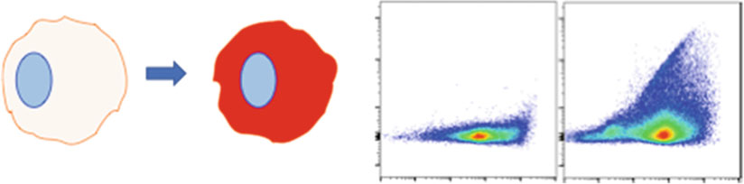
- 웰을 PBS로 헹군다.
- HEK293Tscan을 0.25% 트립신–EDTA로 처리해 회수한다. 500 × g, 4 °C에서 3분 스핀.
- —
- PBS로 500 × g, 4 °C에서 3분씩 두 번 씻는다.
- 샘플을 PBS 200 μL에 현탁하고 CytoFLEX LX 유동세포계로 GFP⁺(HEK293Tscan 세포)와 APC/Cy7(그란자임 공격 리포터) 게이팅으로 분석한다(Fig. 5).
4 Notes 1. 4-1BB CAR 구조물은 임상용 JCAR14–17과 비슷하게 설계되었다[19]. 간략히 FM63 scFv가 짧은 IgG1 힌지 도메인과 CD8 기원 막횡단 도메인에 연결되고 그 뒤 41BB 공동자극 도메인과 CD3zeta c-말단이 따른다. 2. CD28 CAR 구조물은 Genewiz(South Plainfield, NJ)에서 합성했으며 KTE-C19와 비슷하게 설계되었다[19]. 간략히 FM63 scFv가 CD3z c-말단을 갖는 CD28 막횡단 도메인과 신호 전달 도메인에 연결된다. 3. CMV 프로모터가 구동하는 막결합 인체 CD19를 암호화하는 pTpB-CMV-hmbCD19 PiggyBac 트랜스포존 구조물은 Vector Builder에서 합성했다. 4. 모든 플라스미드는 증류 탈이온수(Milli-Q Biocel, Millipore, USA)에 현탁했다. 5. 플라스미드 준비 시스템에 엔도톡신 제거 단계가 있는 것이 중요하다. 6. 가능하면 신선하게 분리한 PBMCs를 쓴다. 해동 PBMCs를 쓸 경우 형질천환 전 T세포 배지 + 재조합 IL-7 10 ng/mL(4.4 × 10⁵ IU/ug)에서 24시간 회복이 필수적이다. 7. Lympholyte® cell separation media는 6개월 이내 것이어야 하며 제조사 권장대로 보관한다. 8. 급격한 브레이크로 구배를 흐트러뜨리지 않으려면 브레이크를 끄고 로터가 스스로 멈출 때까지 원심분리기를 돌린다. 9. 트리판 블루 염색 배제법으로 세포 수와 생존율을 판정한다. 형질천환 진행 전에 세포 생존율 >90%여야 한다. 10. 기포를 막기 위해 반응 부피가 든 세포/DNA 혼합물을 여분으로 준비해 기포 없이 큐벳/neon 팁으로 옮길 수 있다. 11. CAR⁺ T세포 확장 시 사료세포주(여기서는 CD19⁺ K562 세포)가 HLA I 또는 II를 발현하지 않는 것이 중요하다. 그래야 비변형 T세포의 비특이적 동종이계 반응성(alloreactive) 확장을 피할 수 있다. 12. -80 °C 초기 동결 시 세포를 freezing container(Nalgene® Mr. Frosty)에 넣어 성공적인 세포 동결보관에 필요한 결정적이고 재현 가능한 분당 1 °C 냉각 속도를 제공한다. 13. 살해 분석 수행 시 세포를 해동해 rIL-2 50 IU/mL와 함께 밤새 쉬게 한 뒤 살해 분석을 하는 것이 도움이 될 수 있다. 14. 여기서 설명한 그란자임 리포터 분석 같은 살해 분석 수행 시 CAR-T 세포와 표적세포의 상호작용을 극대화하려면 배지 총부피를 최소화하는 것이 좋다. 15. Tscan-그란자임 리포터 분석에 쓰는 표적세포는 표적 표면 항원(여기서는 CD19) 음성이고, 동종이계 그란자임 공격을 막으려면 공여자와 HLA 일치하거나 HLA-null이어야 한다. 우리는 모든 HLA A/B/C를 녹아웃한 HEK293 세포가 이 용도에 잘 맞는다는 것을 알았지만 다른 세포 유형도 비슷하게 쓸 수 있을 것이다. pTpB-EF1a-Tscan-hmbCD19에 들어 있는 hmbCD19는 다른 CAR의 기능을 탐구할 때 대체 CAR 특이 항원으로 교체할 수 있다.
References 1. Dudley ME, Wunderlich JR, Robbins PF, Yang JC, Hwu P, Schwartzentruber DJ, Topalian SL, Sherry R, Restifo NP, Hubicki AM, Robinson MR, Raffeld M, Duray P, Seipp CA, Rogers-Freezer L, Morton KE, Mavroukakis SA, White DE, Rosenberg SA (2002) Cancer regression and autoimmunity in patients after clonal repopulation with antitumor lymphocytes. Science 298(5594):850–854. https://doi.org/10.1126/science.1076514 — 7. Lim WA, June CH (2017) The principles of engineering immune cells to treat cancer. Cell 168(4):724–740. https://doi.org/10.1016/j.cell.2017.01.016 2. Rosenberg SA, Packard BS, Aebersold PM 외 (1988) Use of tumor-infiltrating lymphocytes and interleukin-2 in the immunotherapy of patients with metastatic melanoma. N Engl J Med 319(25):1676–1680. https://doi.org/10.1056/nejm198812223192527 — 8. Sadelain M, Brentjens R, Riviere I (2013) The basic principles of chimeric antigen receptor design. Cancer Discov 3(4):388–398. https://doi.org/10.1158/2159-8290.Cd-12-0548 3. Schuster SJ, Svoboda J, Chong EA 외 (2017) Chimeric antigen receptor T cells in refractory B-cell lymphomas. N Engl J Med 377(26):2545–2554. https://doi.org/10.1056/NEJMoa1708566 — 9. Porter DL, Levine BL, Kalos M, Bagg A, June CH (2011) Chimeric antigen receptor-modified T cells in chronic lymphoid leukemia. N Engl J Med 365(8):725–733. https://doi.org/10.1056/NEJMoa1103849 4. Neelapu SS, Locke FL, Bartlett NL 외 (2017) Axicabtagene ciloleucel CAR T-cell therapy in refractory large B-cell lymphoma. N Engl J Med 377(26):2531–2544. https://doi.org/10.1056/NEJMoa1707447 — 10. Huang X, Guo H, Kang J 외 (2008) Sleeping beauty transposon-mediated engineering of human primary T cells for therapy of CD19+ lymphoid malignancies. Mol Ther 16(3):580–589. https://doi.org/10.1038/sj.mt.6300404 5. Maude SL, Frey N, Shaw PA 외 (2014) Chimeric antigen receptor T cells for sustained remissions in leukemia. N Engl J Med 371(16):1507–1517. https://doi.org/10.1056/NEJMoa1407222 — 11. Singh H, Manuri PR, Olivares S 외 (2008) Redirecting specificity of T-cell populations for CD19 using the sleeping beauty system. Cancer Res 68(8):2961–2971. https://doi.org/10.1158/0008-5472.Can-07-5600 6. June CH, Riddell SR, Schumacher TN (2015) Adoptive cellular therapy: a race to the finish line. Sci Transl Med 7(280):280ps287. https://doi.org/10.1126/scitranslmed.aaa3643 — 12. Li MA, Turner DJ, Ning Z 외 (2011) Mobilization of giant piggyBac transposons in the mouse genome. Nucleic Acids Res 39(22):e148. https://doi.org/10.1093/nar/gkr764
Transposon-Based Manufacturing of Human CAR-T Cells
- Kahlig KM, Saridey SK, Kaja A, Daniels MA, George AL Jr, Wilson MH (2010) Multiplexed transposon-mediated stable gene transfer in human cells. Proc Natl Acad Sci U S A 107(4):1343–1348. https://doi.org/10.1073/pnas.0910383107 — 17. Terakura S, Yamamoto TN, Gardner RA, Turtle CJ, Jensen MC, Riddell SR (2012) Generation of CD19-chimeric antigen receptor modified CD8+ T cells derived from virus-specific central memory T cells. Blood 119(1):72–82. https://doi.org/10.1182/blood-2011-07-366419
- Castella M, Caballero-Banos M, Ortiz-Maldonado V 외 (2020) Point-of-care CAR T-cell production (ARI-0001) using a closed semi-automatic bioreactor: experience from an academic phase I clinical trial. Front Immunol 11:482. https://doi.org/10.3389/fimmu.2020.00482 — 18. Kula T, Dezfulian MH, Wang CI 외 (2019) T-scan: a genome-wide method for the systematic discovery of T cell epitopes. Cell 178(4):1016–1028.e1013. https://doi.org/10.1016/j.cell.2019.07.009
- Kebriaei P, Singh H, Huls MH 외 (2016) Phase I trials using sleeping beauty to generate CD19-specific CAR T cells. J Clin Invest 126(9):3363–3376. https://doi.org/10.1172/JCI86721 — 19. Ferreira LMR, Muller YD (2021) CAR T-cell therapy: is CD28-CAR heterodimerization its Achilles’ heel? Front Immunol 12:766220. https://doi.org/10.3389/fimmu.2021.766220
- Monjezi R, Miskey C, Gogishvili T 외 (2017) Enhanced CAR T-cell engineering using non-viral sleeping beauty transposition from minicircle vectors. Leukemia 31(1):186–194. https://doi.org/10.1038/leu.2016.180
드물다. 게다가 질병 에피토프(epitope)는 종종 알려져 있지 않고, 아미노산 서열만으로 TCR–에피토프 쌍을 예측하는 것은 여전히 극도로 어렵다[2]. 합성생물학은 원하는 특이성을 T세포에 부여해 위 장애물을 일부 우회하고 T세포 기반 치료로 추구할 수 있는 표적을 크게 넓힐 수 있다. 키메라 항원 수용체(chimeric antigen receptor, CAR)는 세포외 항체 기반 항원결합 도메인(단일사슬 가변 단편, scFv라 불림)과 세포내 신호 전달 도메인으로 이루어진 인공 면역 수용체다. 신호 1(TCR 인식, 보통 CD3zeta)과 신호 2(공동자극, 보통 CD28)를 세포내 도메인에 함께 넣은 2세대 CAR은 항원 인식 바로 하류에서 강력한 T세포 활성화를 일으킨다[3]. CAR-T 세포는 암 치료의 지형을 바꿔 놓았고 이전에는 치료가 불가능했던 암에서 높은 관해율을 유도했다. 현재 미국 식품의약국(FDA)이 승인한 암용 CAR-T 세포 치료제는 다섯 가지다. 그러나 대부분은 B세포 기원 백혈병 표지자인 CD19 특이적이며, 전부 액성 종양(liquid tumor) 대상이다. 고형종양은 여전히 CAR-T 세포 치료에 난치이며 유효한 표적 탐색이 활발히 연구되는 주제다[4]. 그럼에도 CD19 CAR-T 세포 치료의 성공은 연구자들이 암 너머를 보게 만들었고, 노쇠세포[5]와 급성 심장 손상 중 활성화된 섬유아세포[6] 같은 다른 바람직하지 못한 세포를 공격하는 CAR-T 세포가 만들어졌다. 또한 자연살해세포(NK) 세포[7], 대식세포[8], 조절 T세포(Treg)[9] 등 다른 면역세포에 CAR을 넣는 엔지니어링에도 관심을 불러일으켰다. 면역 반응을 억제하는 데 전념하는 CD4⁺ T세포의 아집단인 CD4⁺FOXP3⁺ Treg는 면역 관용과 항상성 유지에 필수적이다. CAR 기술로 Treg 특이성을 조작하면
Fig. 1 키메라 항원 수용체로 T세포 방향 전환. (a) 키메라 항원 수용체(CAR)는 항원 인식 도메인(보통 단일사슬 가변 단편, scFv), 힌지 및 막횡단 도메인, 그리고 세포내 신호 전달 도메인(보통 CD28-CD3zeta 직렬 연결)으로 구성된다. CD4⁺ T세포와/또는 CD8⁺ T세포에 CAR을 넣으면 암, 바이러스 감염, 노쇠, 섬유화와 싸우는 데 쓸 수 있고, 조절 T세포(Treg)에 CAR을 넣으면 이식 거부 예방, 자가면역과 과도한 염증 치료, 조직 복구 지원에 쓸 수 있다. (b) 인체 CAR-T 세포 제작 워크플로: 말초혈액 제품(예: leukopak)에서 T세포 아집단을 정제·활성화(day 0); 활성화된 T세포에 CAR 렌티바이러스로 형질도입(day 2); 형질도입 세포의 폴리클론 확장(day 3–6); CAR⁺ T세포 정렬(예: GFP 같은 CAR 리포터 유전자 발현 세포 정렬)(day 7); 면역 분석 설정, 즉 세포독성 또는 억제 분석(day 8–9); 마지막으로 면역 분석 수행(day 10 이후)
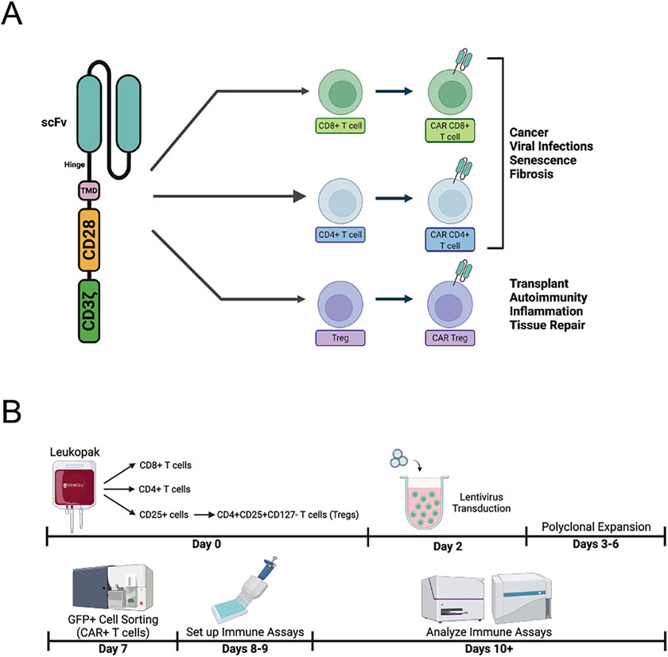
204 CapersM.Zimmermanetal. …CAR-T 세포 아집단 엔지니어링의 확대되는 중요성에 비추어, 우리는 인체 CAR CD4⁺ 헬퍼 T세포, CD8⁺ 세포독성 T세포, CD4⁺FOXP3⁺ 조절 T세포를 만들고 시험하기 위한 상세 프로토콜을 제공한다.
2 Materials
2.1 T세포 분리. · 1/10 Leukopak(STEMCELL Technologies #200-0092). · Ca²⁺·Mg²⁺ 무척 Dulbecco’s phosphate-buffered saline(DPBS)(Gibco #14190144). · RPMI 1640 배지, 글루타민 무척(Gibco #11875093). · 태아우혈청(FBS)(Gibco #26140079). · 페니실린–스트렙토마이신 용액(Gibco #15140122). · GlutaMAX(Gibco #35050061). · 피루브산나트륨(Gibco #11360070). · 필수아미노산 무척 아미노산(NEAA) 용액(Gibco #11140050). · 1 M HEPES(Gibco #15630080). · 염화암모늄 용액(STEMCELL Technologies #07850). · 트리판 블루 용액(Sigma #T8154-100ML). · 세포계수기(TC20 Automated Cell Counter, Bio-Rad #1450102). · Cell Counting Slides(Bio-Rad #1450016). · 0.5 M EDTA, pH 8.0(Gibco #15575020). · EasySep magnet(STEMCELL Technologies #18000). · EasySep Human CD8+ T Cell Enrichment Kit(STEMCELL Technologies #19053). · EasySep Human CD4+ T Cell Enrichment Kit(STEMCELL Technologies #19052). · Easy 50 EasySep magnet(STEMCELL Technologies #18002). · EasySep Human Pan-CD25 Positive Selection and Depletion Kit(STEMCELL Technologies #17861). · Anti-human CD4 FITC(clone SK3, Biolegend #344604). · Anti-human CD25 APC(clone BC96, Biolegend #302610). · Anti-human CD127 PE(clone hIL-7R-M21, BD Biosciences #557938). · Anti-human CD8 PerCP(clone SK1, Biolegend #344707). · 유동세포계(예: Beckman CytoFLEX).
Human CD3/28 T Cell Expansion and Activation Dynabeads(Gibco #11131D). 재조합 인체 인터류킨-2(rhIL-2)(Peprotech #200–02).
2.2 렌티바이러스 생산. · HEK293T 세포(ATCC #CRL-3216). · Jurkat 세포(ATCC #TIB-152). · Ca²⁺·Mg²⁺ 무척 DPBS(Gibco #14190144). · RPMI10 완전 배지(소항목 3.1 참조). · DMEM, high glucose, no glutamine 배지(Gibco #11960044). · FBS(Gibco #26140079). · GlutaMAX(Gibco #35050061). · 피루브산나트륨(Gibco #11360070). · NEAA 용액(Gibco #11140050). · 트립신–EDTA(0.25%)(Gibco #25200056). · 트리판 블루 용액(Sigma #T8154-100ML). · 세포계수기(TC20 Automated Cell Counter, Bio-Rad #1450102). · Cell Counting Slides(Bio-Rad #1450016). · Chloroquine diphosphate(Fisher Scientific #AAJ6445914). · Polyethylenimine(PEI), linear(Sigma-Aldrich #919012-100MG). · 무핵산수(New England Biolabs #B1500L). · Opti-MEM reduced serum medium(Gibco #31985070). · Packaging DNA plasmid(예: psPAX2, Addgene #12260). · Envelope DNA plasmid(예: VSV-G, Addgene #8454). · Transfer DNA plasmid(예: CD19CAR-2A-GFP, Addgene #135991). · ViralBoost(ALSTEM #VB100). · 유동세포계(예: Beckman CytoFLEX).
2.3 T세포 형질도입. · 소항목 3.1에서 분리·활성화한 T세포. · 소항목 3.2에서 생산하고 역가를 측정한 렌티바이러스. · 트리판 블루 용액(Sigma #T8154-100ML). · 세포계수기(TC20 Automated Cell Counter, Bio-Rad #1450102). · Cell Counting Slides(Bio-Rad #1450016). · RPMI10 완전 배지(소항목 3.1 참조). · 재조합 인체 인터류킨-2(rhIL-2)(Peprotech #200–02). · 유동세포계(예: Beckman CytoFLEX).
2.4 CAR⁺ T세포 정렬. · 소항목 3.3에서 형질도입한 T세포. · RPMI10 완전 배지(소항목 3.1 참조). · Ca²⁺·Mg²⁺ 무척 DPBS(Gibco #14190144). · 트리판 블루 용액(Sigma #T8154-100ML). · 세포계수기(TC20 Automated Cell Counter, Bio-Rad #1450102). · Cell Counting Slides(Bio-Rad #1450016). · FACS sorter(예: BD FACS Aria II Cell Sorter). · 재조합 인체 인터류킨-2(rhIL-2)(Peprotech #200-02).
2.5 면역 분석. · 소항목 3.4에서 정렬한 CAR⁺ T세포. · K562 세포(ATCC #CCL-243).
2.5.1 활성화. · CAR 표적 발현 K562 세포(예: CD19-K562). · Cesium-137 조사기. · Human CD3/28 T Cell Expansion and Activation Dynabeads(Gibco #11131D). · 재조합 인체 인터류킨-2(rhIL-2)(Peprotech #200-02). · RPMI10 완전 배지(소항목 3.1 참조). · DynaMag-15 magnet(Thermo Fisher #12301D). · 트리판 블루 용액(Sigma #T8154-100ML). · 세포계수기(TC20 Automated Cell Counter, Bio-Rad #1450102). · Cell Counting Slides(Bio-Rad #1450016). · Ca²⁺·Mg²⁺ 무척 DPBS(Gibco #14190144). · Anti-human CD4 PE/Cy7(clone SK3, Biolegend #344612). · Anti-human CD8 PerCP(clone SK1, Biolegend #344708). · Ghost BV510 viability dye(TONBO #13-0870-T100). · Anti-human CD71 PE(clone SK1, Biolegend #334106). · Anti-human CD25 APC(clone BC96, Biolegend #302610). · 유동세포계(예: Beckman CytoFLEX). · Human IFN-γ Quantikine ELISA kit(R&D Systems #DIF50C). · Human IL-10 Quantikine ELISA kit(R&D Systems #D1000B). · 마이크로플레이트 리더(예: Molecular Devices SpectraMax).
2.5.2 세포독성. · 소항목 3.4에서 정렬한 CAR⁺ T세포. · K562 세포(ATCC #CCL-243). · CAR 표적 발현 K562 세포(예: CD19-K562). · RPMI10 완전 배지(소항목 3.1 참조). · 재조합 인체 인터류킨-2(rhIL-2)(Peprotech #200-02). · DynaMag-15 magnet(Thermo Fisher #12301D). · 트리판 블루 용액(Sigma #T8154-100ML). · 세포계수기(TC20 Automated Cell Counter, Bio-Rad #1450102). · Cell Counting Slides(Bio-Rad #1450016). · CyQUANT LDH Cytotoxicity Assay(Thermo Fisher #C20300). · 마이크로플레이트 리더(예: Molecular Devices SpectraMax).
2.5.3 억제. · 소항목 3.4에서 정렬한 CAR⁺ Treg 세포. · CAR 표적 발현 K562 세포(예: CD19-K562). · Cesium-137 조사기. · 소항목 3.1의 미변형 CD4⁺ T세포. · 소항목 3.1의 미변형 CD8⁺ T세포. · Human CD3/28 T Cell Expansion and Activation Dynabeads(Gibco #11131D). · RPMI10 완전 배지(소항목 3.1 참조). · DynaMag-15 magnet(Thermo Fisher #12301D). · 트리판 블루 용액(Sigma #T8154-100ML). · 세포계수기(TC20 Automated Cell Counter, Bio-Rad #1450102). · Cell Counting Slides(Bio-Rad #1450016). · CellTrace Violet Proliferation Kit(Thermo Fisher #C34571). · Ca²⁺·Mg²⁺ 무척 DPBS(Gibco #14190144). · Anti-human CD4 PE/Cy7(clone SK3, Biolegend #344612). · Anti-human CD8 PerCP(clone SK1, Biolegend #344708). · 유동세포계(예: Beckman CytoFLEX).
2.5.4 확장. · 소항목 3.4에서 정렬한 CAR⁺ T세포. · CAR 표적 발현 K562 세포(예: CD19-K562). · Cesium-137 조사기. · Human CD3/28 T Cell Expansion and Activation Dynabeads(Gibco #11131D). · RPMI10 완전 배지(소항목 3.1 참조). · 재조합 인체 인터류킨-2(rhIL-2)(Peprotech #200–02). · DynaMag-15 magnet(Thermo Fisher #12301D). · 트리판 블루 용액(Sigma #T8154-100ML). · 세포계수기(TC20 Automated Cell Counter, Bio-Rad #1450102). · Cell Counting Slides(Bio-Rad #1450016). · Ca²⁺·Mg²⁺ 무척 DPBS(Gibco #14190144). · Anti-human CD4 PE/Cy7(clone SK3, Biolegend #344612). · Anti-human CD8 PerCP(clone SK1, Biolegend #344708). · Ghost BV510 viability dye(TONBO #13-0870-T100). · Precision Count Beads(Biolegend #424902). · 유동세포계(예: Beckman CytoFLEX).
2.5.5 소진(Exhaustion). · 소항목 3.4에서 정렬한 CAR⁺ T세포. · CAR 표적 발현 K562 세포(예: CD19-K562). · Human CD3/28 T Cell Expansion and Activation Dynabeads(Gibco #11131D). · RPMI10 완전 배지(소항목 3.1 참조). · 재조합 인체 인터류킨-2(rhIL-2)(Peprotech #200–02). · DynaMag-15 magnet(Thermo Fisher #12301D). · 트리판 블루 용액(Sigma #T8154-100ML). · 세포계수기(TC20 Automated Cell Counter, Bio-Rad #1450102). · Cell Counting Slides(Bio-Rad #1450016). · Ca²⁺·Mg²⁺ 무척 DPBS(Gibco #14190144). · Anti-human CD4 Alexa Fluor 700(clone SK3, Biolegend #344622). · Anti-human CD8 APC/Cy7(clone SK1, Biolegend #344714). · Anti-human PD-1 PerCP(clone EH12.2H7, Biolegend #329938). · Ghost BV510 viability dye(TONBO #13-0870-T100). · 유동세포계(예: Beckman CytoFLEX).
2.5.6 안정성. · 소항목 3.4에서 정렬한 CAR⁺ Treg 세포. · CAR 표적 발현 K562 세포(예: CD19-K562). · Cesium-137 조사기. · Human CD3/28 T Cell Expansion and Activation Dynabeads(Gibco #11131D). · RPMI10 완전 배지(소항목 3.1 참조). · 재조합 인체 인터류킨-2(rhIL-2)(Peprotech #200–02). · DynaMag-15 magnet(Thermo Fisher #12301D). · 트리판 블루 용액(Sigma #T8154-100ML). · 세포계수기(TC20 Automated Cell Counter, Bio-Rad #1450102). · Cell Counting Slides(Bio-Rad #1450016). · Ca²⁺·Mg²⁺ 무척 DPBS(Gibco #14190144). · eBioscience Foxp3 transcription factor staining buffer set(Thermo Fisher #00-5523-00). · Anti-human CD4 PE/Cy7(clone SK3, Biolegend #344612). · Anti-human CD25 APC(clone BC96, Biolegend #302610). · Ghost BV510 viability dye(TONBO #13-0870-T100). · Anti-human FOXP3 eFluor 450(clone PCH101, Thermo Fisher #48-4776-42). · Anti-human HELIOS PE(clone 22F6, Biolegend #137216). · Anti-human CTLA-4 PerCP-e710(clone 14D3, Thermo Fisher #46-1529-42). · 유동세포계(예: Beckman CytoFLEX).
3 방법
3.1 T세포 분리 인체 T세포의 바이러스 형질도입으로 CAR-T 세포를 만들고 면역 분석으로 시험하기 전에, 먼저 leukopak에서 얻은 말초혈액단핵세포(PBMCs)에서 T세포를 분리해야 한다(Fig. 1b). 이후 이 PBMC들은 여러 키트로 마그네틱 농축되어 CD4⁺(Fig. 2a)와 CD8⁺ T세포 같은 서로 다른 T세포 아집단을 분리한다
Fig. 2 인체 말초혈액에서 T세포 아집단 정제. (a) leukopak에서 마그네틱 음성선택 농축 후 anti-human CD4 PE/Cy7 유동세포측정으로 평가한 인체 CD4⁺ T세포 순도. (b) leukopak에서 마그네틱 음성선택 농축 후 anti-human CD8 PerCP 유동세포측정으로 평가한 인체 CD8⁺ T세포 순도. (c) leukopak에서 CD25⁺ 세포의 마그네틱 양성선택 농축 후, anti-human CD4 FITC, anti-human CD25 APC, anti-human CD127 PE 염색으로 CD4⁺CD25⁺CD127⁻ Treg 세포를 정제하는 형광보조 세포 분류(FACS) 게이팅 전략(Fig. 2b 참조).
조절 T세포(Treg) 분리는 그 희소성(PBMC의 약 1% 또는 CD4⁺ T세포의 약 5%) 때문에 CD25⁺ 세포가 농축된 세포 집단을 얻는 마그네틱 농축 단계와, 95% 초과 순도로 CD4⁺CD25⁺CD127⁻ Treg를 분리하는 FACS 단계가 필요하다(Fig. 2c).
3.1.1 Leukopak 처리 1. leukopak을 같은 부피의 DPBS + 2% FBS로 희석한다. 천천히 피펫으로 위아래 섞는다. 2. 세포를 먼저 DPBS로 1:100 희석해 계수한다(세포 현탁액 10 μl + DPBS 90 μl, 다음으로 1:10 희석 세포 10 μl + DPBS 90 μl), 그다음 트리판 블루 용액과 1:1로 희석(1:100 희석 세포 10 μl + 트리판 블루 10 ul). 자동 세포계수기를 쓴다면 대부분의 계수기가 1:1 희석을 가정하므로 결과에 100을 곱해 이 200배 세포 희석을 반영하도록 한다. 3. 브레이크를 켜고 실온(RT)에서 300 g으로 10분간 원심분리한다. 4. 세포 펠릿을 흐트러뜨리지 않도록 약간 남기고 상층액을 흡인한다. 5. 세포 펠릿을 재현탁하고 DPBS + 2% FBS 2 mL를 넣어 피펫으로 위아래 섞는다. 6. 세포 현탁액에 염화암모늄 용액 8 mL를 넣는다(4:1 비율). 피펫으로 위아래 섞는다. 7. 얼음 위에서 15분간 배치한다. 8. 브레이크를 켜고 실온에서 500 g으로 10분간 원심분리한다. 9. 상층액을 흡인한다. 10. DPBS + 2% FBS 30 mL를 넣어 씻는다. 11. 브레이크를 끄고 실온에서 150 g으로 10분간 원심분리한다. 12. 상층액을 흡인하고 세포 펠릿을 DPBS + 2% FBS 30 mL에 현탁한다. 13. 세포를 먼저 DPBS로 1:100 희석해 계수하고(세포 현탁액 10 μl + DPBS 90 μl, 다음 1:10 희석 세포 10 μl + DPBS 90 μl), 트리판 블루 용액과 1:1로 희석(1:100 희석 세포 10 μl + 트리판 블루 10ul). 자동 세포계수기를 쓰면 결과에 100을 곱해 이 200배 희석을 반영한다(대부분의 계수기는 1:1 희석을 가정).
3.1.2 CD4⁺ T세포 농축(음성선택) 1. PBMCs 15 × 10⁶개를 회수해 실온에서 500 g으로 5분간 원심분리한다. 시작 세포 수는 용도에 따라 달라진다. 2. 세포를 Cell Separation Buffer(DPBS + EDTA 10 mM + FBS 2%)에 50 × 10⁶ cells/mL로 현탁한다. 3. EasySep Human T Cell Enrichment Kit 프로토콜을 따른다. 4. 트리판 블루와 1:1로 세포를 센다. 5. 유동세포측정으로 CD4⁺ T세포 순도를 확인한다(Fig. 2a).
3.1.3 CD8⁺ T세포 농축(음성선택) 1. PBMCs 50 × 10⁶개를 회수해 실온에서 500 g으로 5분간 원심분리한다. 시작 세포 수는 용도에 따라 달라진다. 2. 세포를 Cell Separation Buffer(DPBS + EDTA 10 mM + FBS 2%)에 50 × 10⁶ cells/mL로 현탁한다. 3. EasySep Human CD8+ T Cell Enrichment Kit 프로토콜을 따른다. 4. 트리판 블루와 1:1로 세포를 센다. 5. 유동세포측정으로 CD8⁺ T세포 순도를 확인한다(Fig. 2b).
3.1.4 CD25⁺ 세포 농축(양성선택) 1. PBMCs 10⁹ 개를 회수해 실온에서 500 g으로 5분간 원심분리한다. 시작 세포 수는 용도에 따라 달라진다. 2. 세포를 Cell Separation Buffer(DPBS + EDTA 10 mM + FBS 2%)에 10⁸ cells/mL로 현탁한다. 3. EasySep Human Pan-CD25 Positive Selection and Depletion Kit 프로토콜을 따른다. 4. 트리판 블루와 1:1로 CD25⁺ 세포를 센다.
3.1.5 CD4⁺ CD25⁺ CD127⁻ Treg 정렬(FACS) 1. 소항목 3.1.4에서 얻은 CD25⁺ 세포를 실온에서 500 g으로 5분간 원심분리한다. 2. 세포를 DPBS 200 μL에 현탁한다. 3. 다음 항체들을 넣는다: anti-human CD4 FITC, anti-human CD25 APC, anti-human CD127 PE를 세포 10⁶개당 항체 1 μL씩. 특히 CD25(clone BC96)의 경우 자재 소항목 (2.1)에 명시된 항체 클론을 꼭 사용한다. EasySep Human Pan-CD25 Positive Selection and Depletion Kit에서 쓴 항체가 CD25 에피토프 일부를 차단했을 수 있기 때문이다. 4. 빛을 차단하고 4 °C에서 30분간 배양한다. 5. DPBS 10 mL를 넣어 씻고 실온에서 500 g으로 5분간 원심분리한다. 6. 세포를 DPBS에서 15 × 10⁶ cells/mL로 현탁한다. 7. 세포 현탁액을 40-μm 필터 캡으로 FACS 튜브에 여과하고 얼음 위에 둔다. 8. 정렬 회수용 튜브를 준비한다: 15 mL 코니컬 튜브마다 RPMI10 완전 배지 3 mL(Note 1 참조)을 넣고 얼음 위에 둔다. 회수 튜브 종류와 완전 배지 부피는 사용하는 세포 분류 기기에 따라 달라진다. 9. 형광보조 세포 분류(FACS)로 CD4⁺CD25⁺CD127⁻ 세포를 정렬한다(Fig. 2c). 10. 정렬 후 트리판 블루와 1:1로 세포를 센다.
3.1.6 T세포 활성화 1. T세포 아집단 정제와 계수 후, RPMI10 완전 배지에서 Human T-Activator CD3/28 for T Cell Expansion and Activation Dynabeads와 재조합 인체 IL-2(rhIL-2)로 24웰 플레이트에서 T세포를 활성화한다. 2. 확장할 T세포 10⁶개마다 anti-CD3/CD28 Dynabeads 25 μL를 넣어 Dynabeads : T세포 = 1:1 비율로 한다. 3. 재조합 인체 IL-2를 넣는다: (a) Treg 세포에는 rhIL-2 1000 IU/ml. (b) CD4⁺ T세포에는 rhIL-2 100 IU/ml. (c) CD8⁺ T세포에는 rhIL-2 300 IU/ml. 4. T세포를 RPMI10 완전 배지와 rhIL-2가 든 24웰 플레이트 웰당 5 × 10⁵ 세포, 1 mL로 접종하고 37 °C, 5% CO₂ 조직배양 배양기에 넣는다(Note 2, Fig. 3 참조).
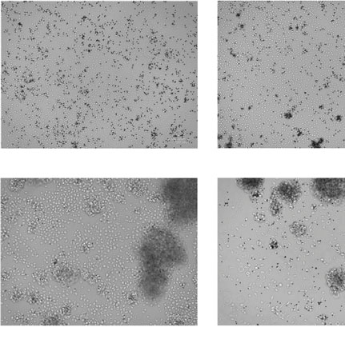
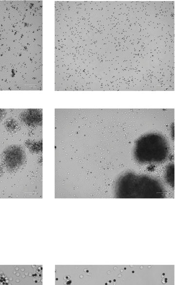
3.2 렌티바이러스 생산 2세대 렌티바이러스 생산은 인체 배아 신장 293T(HEK293T) 세포에 렌티바이러스 포장 단백질, 렌티바이러스 외피 단백질, 관심 구조물(여기서는 CAR)을 암호화하는 DNA 플라스미드로 형질천환하는 방식이다. HEK293T 세포는 배양과 매우 높은 효율의 형질천환이 쉬워 렌티바이러스 생산에 이상적이다. 플라스미드 DNA가 세포에 들어가면 HEK293T 세포 기구가 CAR 유전자를 담은 렌티바이러스 입자를 만들어 배양 배지로 내보낸다(Fig. 4a). 렌티바이러스 입자가 든 배지는 Jurkat 세포에서 역가를 측정한 후 -80 °C에 앨리콧으로 나누어 저장하고 이후 일차 인체 T세포 형질도입에 쓴다.
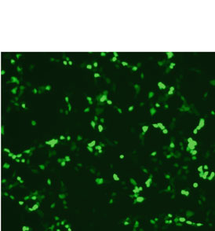
Day 0 1. 트리판 블루로 HEK293T 세포를 계수하고 DMEM10 완전 배지에서 10-cm 접시당 3.8 × 10⁶ 세포 밀도로 접종한다. 세포는 미리 확장해 두었다가 원하는 수의 접시로 나눈다. 형질천환 시간표는 다음과 같다(Table 1): 2. 형질천환용 chloroquine diphosphate와 polyethylenimine(PEI) 스톡 용액을 준비한다. 3. Chloroquine diphosphate salt 0.129 g을 무균 무핵산수 10 mL에 녹여 25 mM chloroquine 스톡 용액을 만든다. 4. 10-mL 주사기와 0.22-μm 필터로 25 mM chloroquine 스톡 용액을 멸균한다. 필요시 앨리콧으로 나누어 -20 °C 보관. 5. PEI 0.1 g을 150 mL 오토클레이브 비커 속 초순수(Milli-Q Water Purification System 사용) 90 mL에 녹이고 마그네틱 교반바/교반판으로 저어 1 mg/mL PEI 스톡 용액을 만든다. 6. pH 미터로 측정하면서 HCl(pH 낮출 때)이나 NaOH(pH 올릴 때)를 소량씩 서서히 넣어 pH 7.0으로 맞춘다. 7. 10-mL 주사기와 0.22-μm 필터로 1 mg/mL PEI pH 7.0 스톡 용액을 멸균한다. 필요시 앨리콧으로 나누어 -80 °C 보관. 8. 앨리콧/동결 전에 chloroquine과 PEI 용액을 6웰의 HEK293T 세포 6 × 10⁵개에 DNA 1 μg과 함께 시험해 충분한 형질천환 효율을 내는지 확인한다.
Fig. 3 정제된 인체 T세포 아집단의 활성화. (a) anti-CD3/CD28 비즈 매개 활성화(비즈:세포 = 1:1), 인체 CD4⁺ T세포, CD8⁺ T세포, Treg 세포, 48시간. 5× 배율 사진. (b) anti-CD3/CD28 비즈 매개 활성화, 인체 CD4⁺ T세포, CD8⁺ T세포, Treg 세포, 48시간. 20× 배율 사진
Fig. 4 렌티바이러스 생산과 역가 측정. (a) 렌티바이러스 생산 워크플로: chloroquine 처리한 HEK293T 세포에 transfer plasmid(CAR), envelope plasmid, packaging plasmid를 polyethylenimine(PEI)으로 형질천환. 하루 후 ViralBoost 함유 신선 배지로 교체. 셋째·넷째 날 렌티바이러스 함유 배지를 코니컬 튜브로 수거해 4 °C 보관. (b) envelope plasmid와 packaging plasmid를 동반한 CD19CAR-2A-GFP 형질천환 18시간 후 HEK293T 세포의 GFP 발현, 5×(왼쪽) 및 20×(오른쪽) 배율 사진. (c) Jurkat 세포에서의 CD19CAR-2A-GFP 렌티바이러스 입자 함유 배지 역가 측정
Table 1 렌티바이러스 생산용 HEK293T 형질천환 시간표
| Monday(D0) | Tuesday(D1) | Wednesday(D2) | Thursday(D3) | Friday(D4) |
|---|---|---|---|---|
| 10-cm 접시당 3.8 × 10⁶ 세포로 접종 | chloroquine 넣고 5시간 배치 | 배지 교체 | 바이러스 배지 수거 | 바이러스 배지 수거; 역가 측정용 Jurkat 세포 형질도입 |
| — | DNA/PEI 복합체로 형질천환 | ViralBoost 추가 | 신선 배지 + ViralBoost 추가 | — |
Table 2 2세대 CAR 렌티바이러스 생산에 쓰는 플라스미드 DNA 농도
| Plasmid | DNA amount (μg) | Concentration (ng/μL) | Volume to add (μL) |
|---|---|---|---|
| Packaging plasmid (psPAX2) | 6.66 μg | ||
| Envelope plasmid (pCMV-VSV-G) | 3.33 μg | ||
| Transfer plasmid (pSLCAR-CD19-28z) | 10 μg |
용액. 최적 PEI/DNA 비율은 PEI 배치에 따라 달라진다. 우리 경험상 2:1 PEI/DNA 질량비가 가장 좋은 결과를 냈다.
Day 1 1. 고갈된 배지를 흡인한다. 2. chloroquine 25 μM이 든 신선한 DMEM10 완전 배지 10 mL를 넣는다(10 mL 배지에 25 mM chloroquine 스톡 용액 10 μL). 플레이트를 조직배양 배양기에서 37 °C, 10% CO₂로 3–5시간 배양한다. 3. DNA 플라스미드와 PEI 스톡 용액 앨리콧을 얼음 위에서 해동한다. 4. 아래 표(Table 2)를 이용해 각 DNA 플라스미드의 필요 부피를 계산한다. 사용 중 Maxiprep DNA 배치의 실제 플라스미드 DNA 농도에 맞게 농도와 추가할 부피를 적어 넣는다. 5. 구조물 하나당 필요한 세 DNA 플라스미드(총 DNA 20μg)의 필요 부피를 1.5-mL 마이크로원심튜브 속 Opti-MEM 500μl에 희석한다. 6. 별도 1.5-mL 마이크로원심튜브에 Opti-MEM 500 μl 속 1 mg/mL PEI 40 μl를 희석한다(PEI/DNA = 2:1). 7. 두 튜브를 닫고 가볍게 트위틀하여 내용물을 섞는다. 8. 두 튜브를 잠깐 스핀다운해 내용물이 튜브 바닥에 있게 한다. 9. 희석한 PEI를 희석한 DNA 튜브에 적가한다. 10. 합친 튜브를 가볍게 트위틀해 섞는다. 플라스미드 DNA가 끊어지지 않도록 볼텍스하지 않는다. 11. 튜브를 실온에서 15분간 배치한다. 12. 형질천환할 HEK293T 세포 10-cm 플레이트를 배양기에서 꺼낸다. 13. PEI/DNA 복합체를 HEK293T 세포 위에 적가해 플레이트 전체를 덮는다. 14. 형질천환한 HEK293T 세포 플레이트를 조직배양 배양기로 되돌린다.
Day 2 1. 형질천환 24시간 후 배지 교체 전 ZOE fluorescence cell imager로 형질천환을 확인한다. 이 예에서 성공적으로 형질천환되면 HEK293T는 GFP⁺이다(Fig. 4b). 2. 고갈된 배지를 흡인하고 DMEM10 완전 배지 10 mL(Note 3 참조) + ViralBoost 20μL를 넣어 바이러스 생산을 극대화한다. 3. 플레이트를 조직배양 배양기로 되돌린다.
Day 3 1. 플레이트의 렌티바이러스 함유 배지를 50-mL 코니컬 튜브로 수거한다. 형질천환 후 48시간이 렌티바이러스 생산의 정점이다. 2. 바이러스 생산을 극대화하기 위해 DMEM10 완전 배지 10 mL + ViralBoost 20μL를 넣는다. 3. 플레이트를 조직배양 배양기로 되돌린다. 4. 수거한 렌티바이러스 함유 배지를 4 °C에 보관한다.
Day 4 1. 전날 것과 함께 렌티바이러스 함유 배지를 50-mL 코니컬 튜브로 수거한다. 2. HEK293T 세포 플레이트를 폐기한다. 3. 수거한 렌티바이러스 함유 배지를 4 °C에 보관한다.
역가 측정(Titration) 1. 트리판 블루로 Jurkat 세포를 계수하고 RPMI10 완전 배지 200 μl 속 96웰 원형바닥 플레이트 웰당 10⁴ 세포 밀도로 접종한다. 2. Jurkat 세포가 든 웰에 렌티바이러스 함유 배지 10, 3, 2 또는 1 μL를 넣는다. 음성 대조군으로 미형질도입 Jurkat 세포 웰을 남겨 둔다. 3. 형질도입 Jurkat 세포 플레이트를 조직배양 배양기에서 72시간 배양한다. 4. 세포를 수거해 유동세포측정으로 형질도입 효율을 측정한다. 여기서는 각 조건에서 % GFP⁺ 세포를 판단한다(Fig. 4c). 5. 서로 다른 렌티바이러스 함유 배지 부피의 형질도입 효율로 렌티바이러스 역가, 즉 렌티바이러스 함유 배지 부피당 렌티바이러스 입자 수를 계산한다. 6. 선형 회귀를 수행하고 외삽하여 원하는 T세포 수를 형질도입하는 데 필요한 부피를 구한다. 7. 렌티바이러스 함유 배지가 든 튜브를 500 g, 4 °C에서 5분간 원심분리한다. 8. 렌티바이러스 함유 상층액을 새 코니컬 튜브로 조심히 옮긴다. 이 단계는 세포 찌꺼기를 제거한다. 9. 렌티바이러스 함유 배지를 앨리콧으로 나누어 필요시 -80 °C 보관한다. 우리는 면역 분석용 CAR 렌티바이러스로 2.5 × 10⁵ T세포 배수를 형질도입하므로 2.5 × 10⁵ Jurkat 세포를 형질도입하는 데 필요한 렌티바이러스 입자 수만큼 앨리콧을 만든다.
3.3 T세포 형질도입 1. 트리판 블루로 T세포를 센다. 2. 실온(RT)에서 500 g으로 5분간 원심분리한다. 3. 세포를 RPMI10 완전 배지에서 1.25 × 10⁶ cells/mL로 현탁한다. 4. 렌티바이러스 앨리콧을 얼음 위에서 해동한다. 5. 1.5-mL 마이크로원심튜브 속 T세포 2.5 × 10⁵개(200 μl)에 렌티바이러스 앨리콧을 넣는다. CD4⁺ 및 CD8⁺ T세포는 Treg 세포보다 형질도입이 어려우므로 Treg 세포 2.5 × 10⁵개당 앨리콧 1개, CD4⁺ 또는 CD8⁺ T세포 2.5 × 10⁵개당 앨리콧 2개를 넣는다. 6. rhIL-2를 최종 농도 Treg 세포 1000 IU/mL, CD4⁺ T세포 100 IU/mL, CD8⁺ T세포 300 IU/mL가 되게 넣는다. 7. 32 °C에서 1000 g으로 1시간 원심분리한다.
- 형질도입 T세포를 1.5-mL 마이크로원심튜브에서 24웰 플레이트로 옮긴다. 마이크로원심튜브 하나당 웰 하나.
- 형질도입 T세포 플레이트를 조직배양 배양기에 넣는다.
- 다음 날 24웰의 각 웰을 rhIL-2가 든 RPMI10 완전 배지(Treg 세포 1000 IU/mL, CD4⁺ T세포 100 IU/mL, CD8⁺ T세포 300 IU/mL) 2 mL까지 채운다. 이후 세포를 나누고 필요에 따라 신선한 배지와 rhIL-2를 더하며 형질도입 T세포 배양을 계속 확장한다.
3.4 CAR⁺ T세포 정렬 1. 형질도입 5일 후 트리판 블루로 형질도입 T세포를 센다. 2. 실온(RT)에서 500 g으로 5분간 원심분리한다. 3. 세포를 DPBS에서 15 × 10⁶ cells/mL로 현탁한다. 4. 세포 현탁액을 40-μm 필터 캡으로 FACS 튜브에 여과하고 얼음 위에 둔다. 5. 정렬 회수용 튜브를 준비한다: 15-mL 코니컬 튜브마다 RPMI10 완전 배지 3 mL를 넣고 얼음 위에 둔다. 회수 튜브 종류와 완전 배지 부피는 사용하는 세포 분류 기기에 따라 달라진다. 6. CAR 리포터 발현 세포(여기서는 GFP⁺)를 FACS로 정렬한다(Fig. 5). 7. 정렬 후 트리판 블루와 1:1로 세포를 센다. 8. 정렬한 CAR⁺ T세포를 RPMI10 완전 배지와 rhIL-2가 든 24웰 플레이트 웰당 5 × 10⁵ 세포, 1 mL로 접종하고 조직배양 배양기에 넣는다. 이후 세포를 나누고 필요에 따라 신선한 RPMI10 완전 배지와 rhIL-2를 더하며 CAR⁺ T세포 배양을 계속 확장한다.
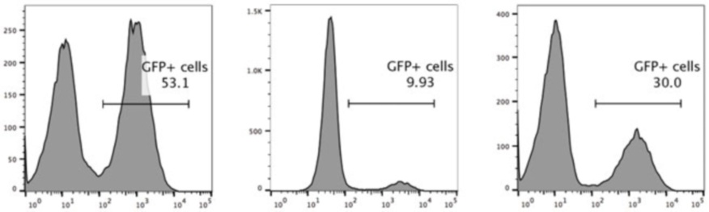
Fig. 5 인체 CAR⁺ T세포 정제. 형질도입 1주일 후 CD19CAR-2A-GFP 발현 인체 CD4⁺ T세포, CD8⁺ T세포, Treg 세포의 FACS 정렬
3.5 면역 분석(Immune Assays)
CAR+ T 세포를 만들고 나면, 이제 일련의 시험관 내 면역 분석에 통과시키면서 CAR가 제 기능을 하는지 평가할 차례다. 여기서는 CAR 매개 T 세포 활성화, 세포독성, 증식, 소진(exhaustion)을 측정하는 프로토콜을 다룬다. CAR+ Treg 세포의 경우에는 추가로 CAR Treg의 억제 기능과 계통(lineage) 안정성도 함께 평가한다.
3.5.1 활성화
TCR이 자신에게 맞는 항원(cognate antigen)을 만났을 때 일어나는 T 세포 활성화는 T 세포의 크기, 형태, 증식 양상에 뚜렷한 변화를 가져온다(그림 3). 따라서 새로 만든 CAR의 기능을 입증하는 첫걸음은, 표적 항원이 있을 때 그 CAR가 실제로 T 세포 활성화를 유도한다는 것을 보이는 것이다. 이를 위해 렌티바이러스 transduction으로 CAR 표적 단백질을 세포 표면에 발현하는 안정 K562 세포주(여기서는 CD19-K562)를 만들고, 방사선을 조사해 증식을 억제한 뒤 CAR T 세포와 함께 배양한다(그림 6a). K562 세포는 관리가 쉬운 사람 골수성 백혈병 세포주로, MHC와 공자극 리간드(CD80, CD86)를 발현하지 않는다. 덕분에 CAR 표적 발현을 입히기에 좋은 ’백지 상태’가 된다. T 세포 활성화의 양성 대조군으로는 anti-CD3/CD28 Dynabeads를 함께 넣는다. 공배양 48시간 후 활성화 정도를 정량하기 위해, CAR+ T 세포와 CAR 표적+ 세포 공배양체를 육안으로 관찰하는 것 외에도, 초기 활성화 마커인 CD25와 CD71[11]의 표면 발현 상승을 유세포 분석(flow cytometry)으로 확인하고(그림 6b), 공배양 상징액 속 IFN-γ(일반 CD4+ T 세포)와 IL-10(Treg 세포) 수준은 효소결합면역흡착분석법(ELISA)으로 측정한다(그림 7).
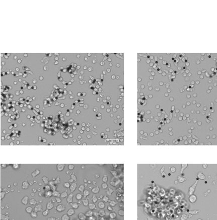
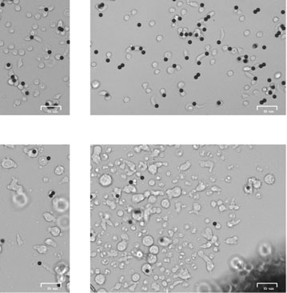
Day 0: 공배양 플레이트 준비
- K562 세포주(예: 친본래 K562와 CD19-K562)를 커니컬 튜브에 모은다.
- K562 세포주를 cesium-137 조사기에서 4000 rad로 방사선 조사한다.
- CAR+ T 세포를 15-mL 커니컬 튜브에 모으고, DynaMag-15 자석에 3분간 두어 anti-CD3/CD28 Dynabeads를 자기적으로 제거한 뒤, 비드를 뺀 CAR+ T 세포 현탁액을 새 15-mL 커니컬 튜브로 옮긴다.
- Trypan Blue로 방사선 조사한 K562 세포와 비드 제거한 CAR+ T 세포를 계수한다.
- K562 세포와 CAR+ T 세포를 RT에서 500 g, 5분간 원심분리한다.
- 세포를 RPMI10 완전 배지로 10⁶ cells/mL 농도로 재현탁한다.
Fig. 6 CAR 매개 사람 CAR+ T 세포 활성화. (a) CAR T 세포(예: CD19CAR Treg)의 CAR 매개 초기 활성화를 평가하는 워크플로는, CD19CAR Treg를 방사선 조사한 CD19 발현 K562와 48시간 공배양한 뒤 유세포 분석으로 활성화 마커 CD71(트랜스페린 수용체)의 발현 상승을 검출하는 과정이다. 이후 세포를 9일간 계속 증식시키면 CAR 매개 증식(CAR Treg 세포 수) 평가와 함께 CAR Treg의 표현형 안정성(예: FOXP3 발현)도 확인할 수 있다. (b) 방사선 조사한 K562 또는 CD19-K562와 48시간 공배양 후 사람 CD4+ T 세포, CD8+ T 세포, Treg 세포의 CD19CAR 매개 활성화를 anti-human CD71 FITC 유세포 분석으로 평가했다. 히스토그램은 생존 CD4+GFP+ 세포의 CD71 표면 발현을 나타낸다.
- CAR Treg를 다룰 때는 rhIL-2를 최종 농도 1000 IU/mL가 되도록 넣는다. CAR CD4+ 또는 CAR CD8+ T 세포라면 rhIL-2를 넣지 않는다.
- 96웰 라운드바텀 플레이트에서 1 × 10⁵ CAR+ T 세포를 1 × 10⁵ 친본래 K562 세포, CAR 항원 발현 K562 세포 또는 anti-CD3/CD28 Dynabeads(2.5 μL)와 3반복으로 공배양한다(1:1 비율).
- 플레이트를 배양 인큐베이터에서 48시간 배양한다.
Fig. 7 활성화된 사람 CAR+ T 세포의 사이토카인 분비. 미형질전환(UT) 또는 CD19CAR 발현 사람 CD4+ T 세포와 Treg 세포를 방사선 조사한 CD19-K562 세포로 48시간 활성화했을 때의 IFN-γ 및 IL-10 분비. 사이토카인 수준은 효소결합면역흡착분석법(ELISA)으로 공배양 상징액에서 측정했다.
Day 2: 항체 염색과 유세포 분석
96웰 라운드바텀 플레이트 각 웰의 내용물을 재현탁해 라벨 붙인 1.5-mL 마이크로원심튜브로 옮긴다. RT에서 500 g, 5분간 원심분리한다. 2.
그동안 DPBS에 anti-human CD4 PE/Cy7 1:200, anti-human CD8 PerCP 1:100, anti-human CD25 APC 1:100, anti-human CD71 PE 1:100, Ghost Viability Dye BV510 1:500을 섞어 항체 마스터 믹스를 만든다. 샘플 하나당 항체 마스터 믹스 50 μl가 필요하다. 예를 들어 샘플 10개를 염색한다면, 1.5-mL 마이크로원심튜브의 0.5 mL DPBS에 anti-human CD4 PE/Cy7 2.5 μl, anti-human CD8 PerCP 5 μl, anti-human CD25 APC 5 μl, anti-human CD71 PE 5 μl, Ghost Viability Dye BV510 1 μl를 넣고 얼음 위 어두운 곳에 둔다.
원심분리한 마이크로원심튜브에서 세펠릿을 건드리지 않게 마이크로피펫으로 상징액을 조심스레 새 라벨 붙인 마이크로원심튜브에 옮겨 담는다. 당일 분석이라면 4 °C에, 장기 보관이라면 -20 °C에 둔다.
세포 펠릿을 짧게 볼텍스한다. μL
각 마이크로원심튜브에 항체 마스터 믹스 50
짧게 볼텍스하고 4 °C에서 30분간 어둡게 배양한다.
PBS 500 μL를 넣어 세척한다.
RT에서 500 g, 5분간 원심분리한다.
상징액을 버린다.
세포 펠릿을 PBS 300 μL로 재현탁한다.
FACS 튜브로 옮기고 얼음 위 어두운 곳에 둔다.
유세포 분석기로 분석한다(Note 4 참조). 기대 결과는 활성화된 CAR+ T 세포에서 초기 활성화 마커의 표면 발현이 올라가는 것이다(그림 6b).
Day 2: 사이토카인 분비 측정
- 필요하면 CAR T 세포-K562 세포 공배양 상징액을 얼음 위에서 해동한다.
- Human IFN-γ Quantikine ELISA Kit 프로토콜에 따른다.
- 마이크로플레이트 판독기로 흡광도를 측정한다. 기대 결과는 일반 CAR CD4+ T 세포에서는 IFN-γ 생성이 검출되지만 CAR Treg 세포에서는 검출되지 않는 것이다(그림 7).
- Human IL-10 Quantikine ELISA Kit 프로토콜에 따른다.
- 마이크로플레이트 판독기로 흡광도를 측정한다. 기대 결과는 CAR Treg 세포에서는 IL-10 생성이 검출되지만 일반 CAR CD4+ T 세포에서는 검출되지 않는 것이다(그림 7).
3.5.2 세포독성
항원 발현 표적 세포를 죽일 수 있는 능력은 일반 CAR T 세포의 기능을 가늠하는 가장 중요한 지표다(Note 5 참조). 이 프로토콜에서는 CAR+ T 세포를 CAR 표적 발현 K562 세포와 T세포/표적세포 비율을 점차 높여가며 공배양한다. 그런 다음 공배양 상징액 속 세포외 젖산탈수소효소(lactate dehydrogenase, LDH) 활성을 간접 측정해 CAR T 세포의 세포독성을 구한다[12]. LDH는 세포 내 효소라서 세포가 용해될 때에만 세포 바깥에 나타난다. 상징액 시료에 LDH가 발색 생성물로 전환하는 기질을 넣으면, 상징액 LDH 활성을 정확하게 정량할 수 있고, 이것이 곧 표적 세포 용해의 척도가 된다(그림 8).
- CAR+ T 세포를 15-mL 커니컬 튜브에 모으고, DynaMag-15 자석에 3분간 두어 anti-CD3/CD28 Dynabeads를 자기적으로 제거한 뒤, 비드를 뺀 CAR+ T 세포 현탁액을 새 15-mL 커니컬 튜브로 옮긴다.
- CAR+ T 세포와 CAR 표적 발현 K562 세포(예: CD19-K562)를 Trypan Blue로 계수한다.
- CAR+ T 세포 3 × 10⁵개를 확보한다. 이렇게 하면 96웰 라운드바텀 플레이트 웰당 표적 세포 5 × 10⁴개 기준으로 T세포/표적세포 비율 1:1, 1:2, 1:4의 3반복을 커버할 수 있다. 5 × 10⁴×3 + 2.5 × 10⁴×3 + 1.25 × 10⁴×3 = 2.63 × 10⁵ ≈ 3 × 10⁵ CAR+ T 세포이기 때문이다.
- RT에서 500 g, 5분간 원심분리한다.
A B 100 80 60 40 20 0 1:1 1:2 1:4 1:1 1:2 1:4 1:1 1:2 1:4 CD4+ T cell CD4+ T cell CD4+ T cell CD8+ T cell CD8+ T cell CD8+ T cell CAR Treg CAR Treg CAR Treg % Cytotoxicity
Fig. 8 CAR 매개 사람 CAR+ T 세포 세포독성. (a) CAR T 세포(예: CD19CAR T 세포)의 CAR 매개 세포독성을 평가하는 워크플로는 CD19CAR T 세포를 CD19-K562 세포와 여러 비율로 공배양하는 과정이다. 일정 시간(예: 48시간) 공배양 후 공배양 상징액을 회수하고, 그 안의 젖산탈수소효소(LDH — 세포 용해 시에만 상징액으로 나오는 세포 내 효소) 함량을, LDH를 정량적으로 사용해 착색 생성물인 포르마잔을 만드는 반응으로 측정한다. (b) 48시간 공배양에서 CD19CAR 사람 CD4+ T 세포, CD8+ T 세포, Treg 세포의 CD19-K562 세포에 대한 상대적 세포독성. 비율(1:1, 1:2, 1:4)은 각 조건당 CAR T 세포 수 대 CD19-K562 세포 수의 비를 나타낸다.
CAR+ T 세포 3 × 10⁵개를 RPMI10 완전 배지 600 μL로 재현탁한다. 이렇게 하면 1:1 3반복에 각각 200 μL씩 확보된다. CAR Treg라면 rhIL-2를 최종 농도 1000 IU/mL로 넣는다. CAR CD4+ 또는 CD8+ T 세포라면 rhIL-2를 넣지 않는다.
96웰 라운드바텀 플레이트에서 연속 희석을 다음처럼 수행한다:
- CAR T 세포 현탁액 200 μL를 1:1 비율 웰 3곳에 각각 옮긴다. μL
- 1:2와 1:4 비율 웰에 RPMI10 완전 배지 100씩 넣는다.
- 3반복 각각에 대해, 1:1 웰의 세포 현탁액 100 μL를 해당 1:2 비율 웰로 옮긴다.
- 3반복 각각에 대해, 1:2 웰의 세포 현탁액 100 μL를 해당 1:4 비율 웰로 옮긴다.
- 1:4 비율 웰에서 세포 현탁액 100 μL를 폐기 용기에 버린다. 이제 각 웰에는 CAR T 세포 현탁액 100 μL에 표적 세포 5 × 10⁴개(1:1), 2.5 × 10⁴개(1:2), 또는 1.25 × 10⁴개(1:4)가 들어 있다.
- CAR 표적 발현 K562 세포를 RPMI10 완전 배지로 5 × 10⁵ cells/ml 농도로 재현탁한다. CAR Treg라면 rhIL-2를 최종 농도 1000 IU/mL로 넣는다. CAR CD4+ 또는 CD8+ T 세포라면 rhIL-2를 넣지 않는다.
- CAR 표적 발현 K562 세포 5 × 10⁵개를 100 μL에 담아 모든 샘플 웰 위에 부어 각 웰 부피를 200 μL로 맞춘다.
- CAR 표적 발현 K562 세포 5 × 10⁵개를 100 μL에 담아 μL 빈 웰 6곳에 넣고, 그 위에 RPMI10 완전 배지 100을 더한다. 이들은 나중에 최소·최대 LDH 유리 대조군으로 3반복씩 쓰인다.
- 배양 인큐베이터에서 48시간 배양한다.
- 이틀 뒤, CyQUANT LDH Cytotoxicity Assay kit의 10× 농축 lysis buffer 20 μL를 CAR 표적 발현 K562 세포만 든 웰 3곳에 넣는다.
- 배양 인큐베이터에서 45분간 배양한다.
- 멀티채널 피펫으로 각 샘플의 상징액 50 μL를 조심스럽게 새 96웰 플레이트로 옮긴다.
- CyQUANT LDH Cytotoxicity Assay kit 프로토콜에 따른다.
- 마이크로플레이트 판독기로 흡광도를 측정한다. 기대 결과는 웰당 CAR T 세포 수가 늘어날수록 상징액 LDH 활성, 즉 표적 세포 용해가 증가하는 것이다(그림 8b). 참고로 이 분석은 공배양 세포가 아니라 상징액을 이용하기 때문에, 여러 시점에서 샘플링할 수 있다.
3.5.3 억제(Suppression)
Treg 세포는 면역반응을 억제하는 데 전념하는 CD4+ T 세포 아집단이다. Treg 세포는 우성 관용(dominant tolerance)의 한 형태로, 효과기 면역세포의 활성화, 증식, 기능을 직접 억제한다. 시험관 내에서 CD4+ 및 CD8+ T 세포의 증식을 억제하는 Treg 세포의 능력을 평가하는 것은 오랫동안 Treg 세포 기능의 초기 평가에 쓰인 대표적인 방법이었다 [13]. 가장 간단한 형태에서는 CD4+ 및 CD8+ T responder(Tresp) 세포에 세포막 투과 형광 염료 — 전통적으로 carboxyfluorescein succinimidyl ester(CFSE), 최근에는 CellTrace Violet(CTV) — 을 표지하고, 서로 다른 Treg/Tresp 비율과 anti-CD3/28 활성화 비드와 함께 공배양한다(그림 9a). 여기서는 기존 보고[14]처럼 먼저 Treg는 CAR로(CAR 표적 분자 발현 방사선 조사 K562 세포로), Tresp 세포는 TCR/CD28로(anti-CD3/CD28 Dynabeads 자극으로) 밤새 따로따로 활성화한다(그림 9b). 다음 날, anti-CD3/CD28 Dynabead로 활성화되고 CTV로 표지된 Tresp 세포를 자기 방식으로 비드 제거하고 다시 계수해, CAR로 활성화된 Treg에 넣는다. 3~5일 뒤 유세포 분석으로 Tresp의 CTV 희석을 평가한다(그림 10).
Day 0: Responder T 세포(Tresp) 형광 염료 염색과 밤새 활성화
- CAR+ Treg 세포, 미형질전환 CD4+ T 세포, 미형질전환 CD8+ T 세포를 15-mL 커니컬 튜브에 모으고, DynaMag-15 자석에 3분간 두어 anti-CD3/CD28 Dynabeads를 자기적으로 제거한 뒤, 비드를 뺀 세포 현탁액들을 새 15-mL 커니컬 튜브들로 옮긴다.
- K562 세포주(예: 친본래 K562와 CD19-K562)를 커니컬 튜브에 모은다.
- K562 세포주를 cesium-137 조사기에서 4000 rad로 방사선 조사한다.
- Trypan Blue로 비드 제거한 T 세포와 방사선 조사한 K562 세포를 계수한다.
- 미형질전환 CD4+ T 세포와 미형질전환 CD8+ T 세포를 1:1로 섞는다. 섞은 T 세포를 RT에서 500 g, 5분간 원심분리한다. 6.
- T 세포를 DPBS 1 mL로 재현탁한다.
- DMSO에 재구성한 CellTrace Violet(CTV) 염료 1 μl를 T 세포에 넣는다. 37 °C 수욕조에서 20분간 배양한다. 9.
- RPMI10 완전 배지 9 mL를 넣고 RT에서 500 g, 5분간 원심분리한다.
- CTV로 표지된 T 세포를 rhIL-2 없이 bead/T cell 비율 1:10으로 anti-CD3/CD28 Dynabeads로 활성화한다. 강한 anti-CD3/CD28 활성화에 IL-2가 함께 있으면 억제 분석이 성공할 가능성이 크게 떨어진다. 밤새 anti-CD3/CD28 T 세포 활성화 동안 세포 손실 30~50%를 감안하라. 따라서 full
Fig. 9 CAR Treg 매개 억제 분석 셋업. (a) 벌크 T 세포(사람 CD4+ T 세포와 CD8+ T 세포를 1:1로 섞음)에 형광 염료(예: CellTrace Violet, CTV)를 표지하고 anti-CD3/CD28 Dynabeads와 bead 대 세포 비율 1:10으로 밤새 배양한다. 다음 날 이 CTV 표지 anti-CD3/CD28 활성화 T 세포를 비드 제거하고, CAR로 활성화된 CAR Treg와 서로 다른 Treg/T 세포 비율로 공배양한다. CAR Treg에 의한 T 세포 증식 억제는 CTV 희석의 저해로 측정하며, 유세포 분석으로 검출한다. (b) 사람 벌크 T 세포(CD4+ T 세포와 CD8+ T 세포를 1:1로 섞음)를 anti-CD3/CD28 비드(bead 대 세포 비율 1:10)로 밤새 활성화. 좌 5배, 우 20배 확대 이미지.
Fig. 10 CAR+ 사람 Treg 세포의 CAR 매개 억제. (a) anti-CD3/CD28 비드로 활성화한 사람 T responder(Tresp) 세포(사람 CD4+ T 세포와 CD8+ T 세포를 1:1로 섞음)만 있는 경우(“activated Tresp”) 또는 여러 수의 CD19CAR Treg(1:1, 1:2, 1:4)가 함께 있는 경우의 CTV 희석을, 유세포 분석으로 CD4+ 검출했다. 미활성화 Tresp 세포는 증식의 음성 대조군으로 포함했다. Tresp 데이터는 왼쪽, CD8+ Tresp 세포 데이터는 오른쪽이다. CD4+ Tresp 세포의 CTV 희석은 CD4+GFP-CTV+ 세포에서(왼쪽), CD4+ Tresp 세포의 CTV 희석은 CD8+CTV+ 세포에서(오른쪽) 구했다. (b) (a)의 히스토그램 플롯 요약 데이터
96-well 라운드바텀 플레이트의 웰당 CD4+ T 세포 2.5 × 10⁴개와 CD8+ T 세포 2.5 × 10⁴개가 필요하므로, CD4+ T 세포 5 × 10⁶개와 CD8+ T 세포 5 × 10⁶개, 그리고 anti-CD3/CD28 Dynabeads 10⁶개(25 μl)를 RPMI10 완전 배지 10 mL에 섞어라.
T25 세포 배양 플라스크에 넣고 배양 인큐베이터에서 밤새 배양한다.
병행해서, 미활성화 CTV 표지 T 세포 5 × 10⁴개를 RPMI10 완전 배지 200 μl에 담아 96-well 라운드바텀 플레이트 웰 3곳에 넣어 최소 증식 대조군으로 삼는다.
Day 1: 공배양 플레이트 준비
- CAR+ Treg 세포 9 × 10⁵개를 확보한다. 이렇게 하면 96웰 라운드바텀 플레이트 웰당 표적 세포 5 × 10⁴개 기준으로 네 가지 CAR Treg/Tresp 비율(1:1, 1:2, 1:4, 1:8)의 3반복을 커버할 수 있다. 5 × 10⁴×3 + 2.5 × 10⁴×3 + 1.25 × 10⁴×3 = 2.63 × 10⁵ ≈ 3 × 10⁵ CAR+ Treg 세포이기 때문이다. 각각 CAR Treg 3 × 10⁵개씩 필요한 세 조건은 anti-CD3/CD28 활성화(양성 대조군, 폴리클로널 활성화), 방사선 조사 K562(음성 대조군, 활성화 없음), 방사선 조사 CAR 표적 발현 K562(실험군, CAR 활성화)다.
- 방사선 조사 K562 세포 3 × 10⁵개와 방사선 조사 CAR 표적 발현 K562 세포 3 × 10⁵개를 확보한다.
- CAR Treg 3 × 10⁵개와 방사선 조사 K562 세포 3 × 10⁵개의 조합(1:1 비율), CAR Treg 3 × 10⁵개와 방사선 조사 CAR 표적 발현 K562 세포 3 × 10⁵개의 조합(1:1 비율), 그리고 CAR Treg 3 × 10⁵개와 anti-CD3/CD28 Dynabeads 6 × 10⁴개(1.5 μl — Tresp 세포가 총 12웰에 웰당 5 × 10⁴개, 즉 합계 6 × 10⁵개이므로 bead 대 Tresp 비율 1:10이 되게 하는 양)의 조합을 서로 다른 15-mL 커니컬 튜브 3곳에 각각 담고 RT에서 500 g, 5분간 원심분리한다.
- 위의 각 세포 혼합물을 RPMI10 완전 배지 600 μL로 재현탁한다. 이렇게 하면 1:1 Treg/Tresp 3반복에 각각 200 μL씩 확보된다.
- 앞서 준비한 96웰 라운드바텀 플레이트에서 연속 희석을 다음처럼 수행한다:
- 세포 현탁액 200μL를 1:1 비율 웰 3곳에 각각 옮긴다.
- 1:2, 1:4, 1:8 비율 웰에 RPMI10 완전 배지 100 μL씩 넣는다.
- 3반복 각각에 대해, 1:1 웰의 세포 현탁액 100 μL를 해당 1:2 비율 웰로 옮긴다.
- 3반복 각각에 대해, 1:2 웰의 세포 현탁액 100 μL를 해당 1:4 비율 웰로 옮긴다.
- 3반복 각각에 대해, 1:4 웰의 세포 현탁액 100 μL를 해당 1:8 비율 웰로 옮긴다.
- 1:8 비율 웰에서 세포 현탁액 100 μL를 폐기 용기에 버린다. 이제 각 웰에는 CAR Treg 5 × 10⁴개(1:1), 2.5 × 10⁴개(1:2), 1.25 × 10⁄4개(1:4), 또는 0.625 × 10⁴개(1:8)가 들어 있고, 같은 수의 방사선 조사 K562 또는 방사선 조사 CAR 표적 발현 K562 세포, 아니면 anti-CD3/CD28 Dynabeads 5 × 10³개가 함께 들어 있다.
활성화된 CD4+ 및 CD8+ T 세포를 15-mL 커니컬 튜브에 모으고, DynaMag-15 자석에 3분간 두어 anti-CD3/CD28 Dynabeads를 자기적으로 제거한 뒤, 비드를 뺀 T 세포 현탁액을 새 15-mL 커니컬 튜브로 옮긴다. Trypan Blue로 비드 제거한 T 세포를 계수한다. 7.
T 세포 2 × 10⁶개를 RT에서 500 g, 5분간 원심분리한다.
T 세포 2 × 10⁶개를 RPMI10 완전 배지 4 mL로 재현탁한다.
T 세포 현탁액 100 μL(T 세포 5 × 10⁴개)를 CAR Treg가 든 각 웰에, 그리고 RPMI10 완전 배지만 든 웰 3곳(최대 증식 대조군)에 더한다. 이제 플레이트에는 미활성화 T 세포만 든 웰 3곳(최소 증식 대조군), 활성화 T 세포만 든 웰 3곳(최대 증식 대조군), 그리고 CAR 또는 anti-CD3/CD28 Dynabeads 중 하나로 자극받은 활성화 CAR Treg 수가 점점 줄어드는 조건 속의 활성화 T 세포가 들어 있다.
플레이트를 배양 인큐베이터에서 4일간 배양한다.
Day 5: 항체 염색과 유세포 분석
- 96웰 라운드바텀 플레이트 각 웰의 내용물을 재현탁해 라벨 붙인 5-mL FACS 튜브로 옮긴다. RT에서 500 g, 5분간 원심분리한다. 2.
- 그동안 DPBS에 anti-human CD4 PE/Cy7 1:200과 anti-human CD8 PerCP를 섞어 항체 마스터 믹스를 만든다. 샘플 하나당 항체 마스터 믹스 50 μl가 필요하다. 예를 들어 샘플 40개를 염색한다면, 15-mL 커니컬 튜브의 DPBS 2 mL에 anti-human CD4 PE/Cy7 10 μl와 anti-human CD8 PerCP 20 μl를 넣고 얼음 위 어두운 곳에 둔다.
- 세포 펠릿을 짧게 볼텍스한다.
- 각 마이크로원심튜브에 항체 마스터 믹스 50 μL를 넣는다.
- 짧게 볼텍스하고 4 °C에서 30분간 어둡게 배양한다.
- PBS 500 μL를 넣어 세척한다.
- RT에서 500 g, 5분간 원심분리한다.
- 상징액을 버린다.
- 세포 펠릿을 PBS 300 μL로 재현탁한다.
- 튜브를 얼음 위 어두운 곳에 둔다.
- 유세포 분석기로 분석한다(Note 6 참조). 기대 결과는 다음과 같다. 미활성화 CD4+ 및 CD8+ T 세포만 있는 경우에는 균일하게 높은 CTV 형광 봉우리 하나가 보인다. 활성화된 CD4+ 및 CD8+ T 세포만 있는 경우에는 CTV 강도의 여러 봉우리 — 세포 분열마다 하나씩 — 가 나타난다. 활성화 CAR Treg가 함께 있을 때 활성화된 CD4+
%suppression = (%proliferating Tresp cells alone − %proliferating Tresp cells with Tregs) / %proliferating Tresp cells alone
3.5.4 증식(Expansion)
CAR 구축체 성공 여부를 알려주는 눈에 띄는 지표는, 적절한 항원 자극에 대한 CAR+ T 세포 집단의 증식이다. 이상적으로는 이 증식이 TCR/CD28 자극으로 일어나는 것과 맞먹거나 그보다 커야 한다. 집단이 넓어지면 숙주에 이식할 세포가 더 많아지고, 그만큼 더 효과적인 반응을 기대할 수 있다. 이 프로토콜에서는 T 세포 아집단(CD4+ T 세포, CD8+ T 세포, CD4+CD25+CD127- Treg 세포)과 조건(미형질전환 및 CAR+ 세포)별로 CAR(표적 분자 발현 방사선 조사 K562 세포) 또는 TCR/CD28(anti-CD3/CD28 Dynabeads)으로 활성화한다. 활성화 9일 후(또는 T 세포 정제일로부터 18일째), 각 샘플에 유세포 분석 계수 비드를 넣고 anti-CD4, anti-CD8, 생존성 염료로 염색해 증식과 생존성을 유세포 분석으로 평가한다.
Day 0: 공배양 플레이트 준비
K562 세포주(예: 친본래 K562와 CD19-K562)를 커니컬 튜브에 모은다.
K562 세포주를 cesium-137 조사기에서 4000 rad로 방사선 조사한다.
CAR+ T 세포를 15-mL 커니컬 튜브에 모으고, DynaMag-15 자석에 3분간 두어 anti-CD3/CD28 Dynabeads를 자기적으로 제거한 뒤, 비드를 뺀 CAR+ T 세포 현탁액을 새 15-mL 커니컬 튜브로 옮긴다.
Trypan Blue로 방사선 조사한 K562 세포와 비드 제거한 CAR+ T 세포를 계수한다.
K562 세포와 CAR+ T 세포를 RT에서 500 g, 5분간 원심분리한다.
세포를 RPMI10 완전 배지로 10⁶ cells/mL 농도로 재현탁한다.
CAR Treg를 다룰 때는 rhIL-2를 최종 농도 1000 IU/mL가 되도록 넣는다. CAR CD4+ 또는 CAR CD8+ T 세포라면 rhIL-2를 넣지 않는다.
96웰 라운드바텀 플레이트에서 1 × 10⁵ CAR+ T 세포를 1 × 10⁵ 친본래 K562 세포, CAR 항원 발현 K562 세포 또는 anti-CD3/CD28 Dynabeads(2.5 μL)와 3반복으로 공배양한다(1:1 비율).
플레이트를 배양 인큐베이터에서 48시간 배양한다.
Days 2–9: 공배양 증식
- 이틀 뒤, 96웰 라운드바텀 플레이트 각 웰의 세포를 RPMI10 완전 배지 1 mL가 든 24웰 플레이트 웰로 옮긴다. Treg라면 rhIL-2를 1000 IU/mL 농도로 포함시킨다. CD4+ T 세포나 CD8+ T 세포라면 rhIL-2를 넣지 않는다.
- 신선한 RPMI10을(필요하면 rhIL-2 포함) 추가하고, 필요에 따라 24웰 플레이트로 나눠 옮기면서 공배양 증식을 계속한다.
Day 9: 항체 염색과 유세포 분석
- 24웰 플레이트 웰들의 내용물을 그룹별로 재현탁해 커니컬 튜브로 옮긴다.
- Trypan Blue로 세포를 계수한다.
- 최대 10⁶개 세포를 5-mL FACS 튜브로 옮긴다.
- 튜브당 Precision Count Beads 5000개(5 μl)를 넣는다.
- RT에서 500 g, 5분간 원심분리한다.
- 그동안 DPBS에 anti-human CD4 PE/Cy7 1:200, anti-human CD8 PerCP, Ghost viability dye BV510을 섞어 항체 마스터 믹스를 만든다. 샘플 하나당 항체 마스터 믹스 50 μl가 필요하다. 예를 들어 샘플 10개를 염색한다면, 1.5-mL 마이크로원심튜브의 0.5 mL DPBS에 anti-human CD4 PE/Cy7 2.5 μl, anti-human CD8 PerCP 5 μl, Ghost viability dye BV510 1 μl를 넣고 얼음 위 어두운 곳에 둔다.
- 세포 펠릿을 짧게 볼텍스한다.
- 각 FACS 튜브에 항체 마스터 믹스 50 μL를 넣는다.
- 짧게 볼텍스하고 4 °C에서 30분간 어둡게 배양한다.
- PBS 500 μL를 넣어 세척한다.
- RT에서 500 g, 5분간 원심분리한다.
- 상징액을 버린다.
- 세포 펠릿을 PBS 300 μL로 재현탁한다.
- 튜브를 얼음 위 어두운 곳에 둔다.
- 유세포 분석기로 분석한다(Note 7 참조). Precision Count Beads는 여러 채널에서 형광을 내므로, 예컨대 FITC와 PE 채널 대각선 위의 높은 신호 강도로 식별하고 게이팅할 수 있다. 튜브당
비드 수(5000개)를 알고 있으므로, 이를 이용해 관심 이벤트 수(예: 생존 CD4+GFP+ 이벤트)로부터 CAR+ 세포의 절대 수를 구할 수 있다. 단순히 Precision Count Beads 이벤트 수로 세포 수를 정규화하는 데 그치지 말고, 조건 전체의 세포 수와 염색에 쓴 세포 수의 차이도 반드시 고려하라. CAR 구축체, 혈액 공여자, T 세포 아집단이 다르면 성장 속도도 달라질 것으로 보아야 한다.
3.5.5 소진(Exhaustion)
염증 상태의 지속적인 자극이나 길어진 항원 노출이 이어지면 T 세포는 소진 상태에 빠진다. T 세포 소진은 사이토카인 생성 감소, 억제 신호 발현 상승, 성장 정지, 대사 결핍, 그리고 최종적으로 세포사로 이어진다. 그 결과 소진된 T 세포는 항원 발현 세포를 제거할 능력을 잃는다. 후보 CAR 구축체를 평가할 때는 CAR 활성화가 T 세포 소진을 유도할 가능성을 살펴보는 일이 중요하다. 잘 알려진 소진 마커로는 PD-1, CTLA-4, LAG3, TIM-3, TIGIT[15] 등이 있다.
Day 0: 공배양 플레이트 준비
K562 세포주(예: 친본래 K562와 CD19-K562)를 커니컬 튜브에 모은다.
K562 세포주를 cesium-137 조사기에서 4000 rad로 방사선 조사한다.
CAR+ T 세포를 15-mL 커니컬 튜브에 모으고, DynaMag-15 자석에 3분간 두어 anti-CD3/CD28 Dynabeads를 자기적으로 제거한 뒤, 비드를 뺀 CAR+ T 세포 현탁액을 새 15-mL 커니컬 튜브로 옮긴다.
Trypan Blue로 방사선 조사한 K562 세포와 비드 제거한 CAR+ T 세포를 계수한다.
K562 세포와 CAR+ T 세포를 RT에서 500 g, 5분간 원심분리한다.
세포를 RPMI10 완전 배지로 10⁶ cells/mL 농도로 재현탁한다.
CAR Treg를 다룰 때는 rhIL-2를 최종 농도 1000 IU/mL가 되도록 넣는다. CAR CD4+ 또는 CAR CD8+ T 세포라면 rhIL-2를 넣지 않는다.
96웰 라운드바텀 플레이트에서 1 × 10⁵ CAR+ T 세포를 1 × 10⁵ 친본래 K562 세포, CAR 항원 발현 K562 세포 또는 anti-CD3/CD28 Dynabeads(2.5 μL)와 3반복으로 공배양한다(1:1 비율).
플레이트를 배양 인큐베이터에서 48시간 배양한다.
Days 2–9: 공배양 증식
- 이틀 뒤, 96웰 라운드바텀 플레이트 각 웰의 세포를 RPMI10 완전 배지 1 mL가 든 24웰 플레이트 웰로 옮긴다. Treg라면 rhIL-2를 1000 IU/mL 농도로 포함시킨다. CD4+ T 세포나 CD8+ T 세포라면 rhIL-2를 넣지 않는다.
- 신선한 RPMI10을(필요하면 rhIL-2 포함) 추가하고, 필요에 따라 24웰 플레이트로 나눠 옮기면서 공배양 증식을 계속한다.
Day 9: 항체 염색과 유세포 분석
24웰 플레이트 웰들의 내용물을 그룹별로 재현탁해 커니컬 튜브로 옮긴다.
Trypan Blue로 세포를 계수한다.
최대 10⁶개 세포를 5-mL FACS 튜브로 옮긴다.
RT에서 500 g, 5분간 원심분리한다.
그동안 DPBS에 anti-human CD4 Alexa 700 1:200, anti-human CD8 APC/Cy7, anti-human PD-1 PerCP, Ghost viability dye BV510을 섞어 항체 마스터 믹스를 만든다. 샘플 하나당 항체 마스터 믹스 50 μl가 필요하다. 예를 들어 샘플 10개를 염색한다면, 1.5-mL 마이크로원심튜브의 0.5 mL DPBS에 anti-human CD4 Alexa 700 2.5 μl, anti-human CD8 APC/Cy7 5 μl,
세포 펠릿을 짧게 볼텍스한다.
각 FACS 튜브에 항체 마스터 믹스 50 μL를 넣는다.
짧게 볼텍스하고 4 °C에서 30분간 어둡게 배양한다.
PBS 500 μL를 넣어 세척한다.
RT에서 500 g, 5분간 원심분리한다.
상징액을 버린다.
세포 펠릿을 PBS 300 μL로 재현탁한다.
튜브를 얼음 위 어두운 곳에 둔다.
유세포 분석기로 분석한다(Note 8 참조). 기대 결과는 PD-1 음성 세포와 PD-1 양성 세포라는 두 개의 집단이 관찰되는 것이다(그림 12).
3.5.6 안정성
Treg 세포는 가소성(plasticity)을 보이므로, 시험관 밖에서 오래 증식하거나 염증성 사이토카인에 노출되는 등 특정 환경 신호가 주어지면 염증 유발 효과기 T 세포로 trans-differentiation 될 수 있다[16]. 따라서 CAR 매개 활성화가 시간이 흘러도 Treg 안정성을 해치지 않는지 확인하는 일이 중요하다. CD25, CTLA-4처럼 확립된 Treg 세포 기능 마커와 함께, Treg 계통 특이 전사인자인 FOXP3와 HELIOS를 이용하면 시간에 따른 Treg 표현형 안정성을 충분히 평가할 수 있다[16].
Day 0: 공배양 플레이트 준비
- K562 세포주(예: 친본래 K562와 CD19-K562)를 커니컬 튜브에 모은다.
- K562 세포주를 cesium-137 조사기에서 4000 rad로 방사선 조사한다.
- CAR+ Treg 세포를 15-mL 커니컬 튜브에 모으고, DynaMag-15 자석에 3분간 두어 anti-CD3/CD28 Dynabeads를 자기적으로 제거한 뒤, 비드를 뺀 CAR+ Treg 현탁액을 새 15-mL 커니컬 튜브로 옮긴다.
- Trypan Blue로 방사선 조사한 K562 세포와 비드 제거한 CAR+ Treg 세포를 계수한다.
- K562 세포와 CAR+ Treg 세포를 RT에서 500 g, 5분간 원심분리한다.
- 세포를 RPMI10 완전 배지로 10⁶ cells/mL 농도로 재현탁한다.
- rhIL-2를 최종 농도 1000 IU/mL가 되도록 넣는다.
Fig. 12 CAR 매개 사람 CAR+ T 세포 소진. (a) CAR T 세포(예: CD19CAR T 세포)의 소진을 평가하는 워크플로는, CD19CAR T 세포를 방사선 조사한 CD19 발현 K562와 9일간 공배양한 뒤 PD-1 표면 염색을 하고 유세포 분석으로 검출하는 과정이다. (b) anti-CD3/CD28 비드로 활성화한 미형질전환(UT) 사람 CD4+ T 세포 또는 Treg 세포, 그리고 CD19-K562 세포로 활성화한 사람 CD19CAR CD4+ T 세포 또는 CD19CAR Treg 세포의 PD-1 표면 발현을 anti-human PD-1 PerCP 유세포 분석으로 검출했다. 히스토그램은 UT 세포의 경우 생존 CD4+ 세포, CD19CAR 세포의 경우 생존 CD4+GFP+ 세포에서의 PD-1 발현을 나타낸다.
- 96웰 라운드바텀 플레이트에서 1 × 10⁵ CAR+ Treg 세포를 1 × 10⁵ 친본래 K562 세포, CAR 항원 발현 K562 세포 또는 anti-CD3/CD28 Dynabeads(2.5 μL)와 3반복으로 공배양한다(1:1 비율).
- 플레이트를 배양 인큐베이터에서 48시간 배양한다.
Days 2–9: 공배양 증식
- 이틀 뒤, 96웰 라운드바텀 플레이트 각 웰의 세포를 rhIL-2를 1000 IU/mL 포함한 RPMI10 완전 배지 1 mL가 든 24웰 플레이트 웰로 옮긴다.
- 신선한 RPMI10(rhIL-2 1000 IU/mL 포함)을 추가하고, 필요에 따라 24웰 플레이트로 나눠 옮기면서 공배양 증식을 계속한다.
Day 9: 항체 염색과 유세포 분석
- 24웰 플레이트 웰들의 내용물을 그룹별로 재현탁해 커니컬 튜브로 옮긴다.
- Trypan Blue로 세포를 계수한다.
- 최대 10⁶개 세포를 5 mL FACS 튜브로 옮긴다.
- RT에서 500 g, 5분간 원심분리한다.
- 그동안 DPBS에 anti-human CD4 PE/Cy7 1:200, anti-human CD25 APC, Ghost viability dye BV510을 섞어 표면 염색 항체 마스터 믹스를 만든다. 샘플 하나당 항체 마스터 믹스 50 μl가 필요하다. 예를 들어 샘플 10개를 염색한다면,
| 예시로 샘플 10개를 염색할 경우 |
|---|
anti-human CD4 PE/Cy7 2.5 μl, anti-human CD25 APC 5 μl, Ghost viability dye BV510 1 μl를 0.5 mL DPBS에 넣어 얼음 위 어두운 곳에 둔다. 6. 세포 펠릿을 짧게 볼텍스한다. 7. 각 FACS 튜브에 표면 염색 항체 마스터 믹스 50 μL를 넣는다. 짧게 볼텍스하고 4 °C에서 30분간 어둡게 배양한다. 8. 9. 그동안 eBioscience Foxp3 transcription factor staining buffer set의 Fixation/Permeabilization concentrate 1부피에 Fixation/Permeabilization diluent 3부피를 섞어 Fixation/Permeabilization buffer를 준비한다. 샘플 하나당 이 버퍼 50 μL가 필요하다. 예를 들어 샘플 10개를 염색한다면, 1.5-mL 마이크로원심튜브에서 Fixation/Permeabilization diluent 750 μL와 Fixation/Permeabilization concentrate 750 μL를 섞어 1 mL의 버퍼를 만들고 얼음 위에 둔다. 염색된 세포를 PBS 500 μL로 세척한다. 10. RT에서 500 g, 5분간 원심분리한다. 11. 12. 상징액을 버린다. 13. 세포 펠릿을 짧게 볼텍스한다. 14. 각 FACS 튜브에 Fixation/Permeabilization buffer 50 μL를 넣는다. 짧게 볼텍스하고 4 °C에서 30분간 어둡게 배양한다. 15.
- 그동안 eBioscience Foxp3 transcription factor staining buffer set의 Permeabilization buffer 10× concentrate 1부피에 DPBS 9부피를 더해 Permeabilization buffer를 준비한다. 샘플 하나당 Fixation/Permeabilization buffer를 씻어내는 데 Permeabilization buffer 500 μL가, 세포 내 단백질 대상 항체 염색에 50 μL가 필요하다. 예를 들어 샘플 10개를 염색한다면, 15-mL 커니컬 튜브에서 DPBS 9.9 mL와 Permeabilization buffer 10× concentrate 1.1 mL를 섞어
| 튜브로 | 얻은 | 11 mL | 의 Permeabilization | buffer를 | 유지 |
|---|
하고 얼음 위에 둔다. 17. 고정·투과화된 세포를 Permeabilization buffer 500 μL로 세척한다. 18. RT에서 500 g, 5분간 원심분리한다. 19. 그동안 Permeabilization buffer에 anti-human FOXP3 eFluor 450 1:40, anti-human HELIOS PE 1:40, CTLA-4 PerCP-e710 1:40을 섞어 세포 내 염색 항체 마스터 믹스를 만든다. 샘플 하나당 항체 마스터 믹스 50 μl가 필요하다. 예를 들어 샘플 10개를 염색한다면, anti-human FOXP3 eFluor 450 12.5 μl, anti-human HELIOS
| PE, | 및 | 12.5 | μl anti-human | CTLA-4 | PerCP-e710 | 을 0.5 mL |
|---|
Permeabilization buffer에 넣어 1.5-mL 마이크로원심튜브에서 섞고 얼음 위 어두운 곳에 둔다. 20. 원심분리해 세척한 세포의 상징액을 버린다. 21. 세포 펠릿을 짧게 볼텍스한다. 22. 각 FACS 튜브에 세포 내 염색 항체 마스터 믹스 50μL를 넣는다. 23. 짧게 볼텍스하고 4 °C에서 30분간 어둡게 배양한다.
염색된 세포를 Permeabilization buffer 500 μL로 세척한다. RT에서 500 g, 5분간 원심분리한다. 25.
상징액을 버린다.
세포 펠릿을 PBS 300 μL로 재현탁한다.
튜브를 얼음 위 어두운 곳에 둔다.
유세포 분석기로 분석한다(Note (see Note 9 참조). 기대 결과는 대다수 CAR Treg가 FOXP3+HELIOS+
| 세포라는 것이다. FOXP3 | 및 HELIOS | 염색의 | 음성 대조군으로는 | bulk | CD4+ | T 세포를 사용하라 |
|---|
(그림 13).
4 Notes
- RPMI10 완전 배지는 기본 RPMI 1640 배지 500 mL에 FBS 50 mL, penicillin–streptomycin 용액 5 mL, GlutaMAX 5 mL, sodium pyruvate 5 mL, NEAA 5 mL, 1 M HEPES 5 mL를 더해 만든다.
Fig. 13 CAR 매개 활성화가 사람 CAR+ Treg 세포 안정성에 미치는 영향. anti-CD3/CD28 Dynabeads로 활성화한 CD4+ T 세포, anti-CD3/CD28 Dynabeads로 활성화한 미형질전환(UT) Treg 세포, 또는 방사선 조사 CD19-K562 세포로 9일간 활성화한 CD19CAR Treg 세포에서 Treg 계통 전사인자 FOXP3와 HELIOS의 발현. 도트 플롯은 생존 CD4+ 세포에서의 FOXP3와 HELIOS 발현을 anti-human FOXP3 eFluor 450과 anti-human HELIOS PE로 유세포 분석해 나타낸 것으로, 모든 성분을 기본 RPMI 1640 배지에 넣은 뒤 20-μm 공경 막이 달린 진공 여과 시스템으로 RPMI10을 여과해 무균을 보장할 수 있다. 2. 갓 분리해 접종한 T 세포(day 0)는 둥근 형태지만, 활성화 후 48시간이 지나면(day 2)
| 형태가 길어지고, | 크기가 커지며, | anti-CD3/CD28 | Dynabeads 주위로 |
|---|
촘촘한 집단(cluster)을 형성한다(그림 3). 3. DMEM10 완전 배지는 DMEM 배지 500 mL에 FBS 50 mL, GlutaMAX 5 mL, sodium pyruvate 5 mL, NEAA 5 mL를 더해 만든다. 모든 성분을 기본 DMEM 배지에 넣은 뒤 20-μm 공경 막 진공 여과 시스템으로 여과해 무균을 보장할 수 있다. Penicillin–streptomycin과 HEPES는 DNA transfection에 부정적 영향을 준다고 보고되어 있으므로 DMEM10 완전 배지에는 넣지 않는다. 4. 다색 유세포 분석에서는 보상(compensation) — 즉 서로 다른 채널 사이 스펙트럼 겹침 보정 — 을 수행하도록 단색(single-color) 대조군을 준비해야 한다. 단색 항체 염색에는 비드보다 세포를 쓰는 편이, 사용하는 형광물질의 강도를 더 잘 맞춰준다. 이 사례에서는 여섯 가지 단색 대조군이 필요하다: unstained, GFP, PE/Cy7, PerCP, BV510, PE, APC. 5. 시험관 내 세포독성 분석은 방사선, 현미경, 유세포 분석, 발광, 흡광도 등 다양한 판독 방식을 갖추고 있다. 그중 비용 효율이 좋고 확장하기 쉬운 판독 방식이 흡광도이며, 이 프로토콜에서도 이를 사용했다.
- 이 사례에서는 보상을 위해 다섯 가지 단색 대조군이 필요하다: unstained, GFP, PE/Cy7, PerCP, CTV.
- 이 사례에서는 보상을 위해 다섯 가지 단색 대조군이 필요하다: unstained, GFP, PE/Cy7, PerCP, BV510.
- 이 사례에서는 보상을 위해 여섯 가지 단색 대조군이 필요하다: unstained, GFP, Alexa 700, APC/Cy7, PerCP, BV510.
- 이 사례에서는 보상을 위해 여덟 가지 단색 대조군이 필요하다: unstained, GFP, PE/Cy7, APC, BV510, eFluor 450, PE, PerCP-e710.
Acknowledgements
This work was funded by the Human Islet Research Network (HIRN) Emerging Leader in Type 1 Diabetes grant U24DK104162-07 (LMRF), American Cancer Society (ACS) Institutional Research Grant IRG-19-137-20 (LMRF), South Carolina Clinical and Translational Research (SCTR) Pilot Project Discovery Grant 1TL1TR001451-01 (LMRF), Diabetes Research Connection (DRC) Grant IPF 22-1224 (LMRF), and Cellular, Biochemical and Molecular Sciences training grant T32GM132055 (RWC). Supported in part by the Flow Cytometry and Cell Sorting Shared Resource, Hollings Cancer Center, Medical University of South Carolina (P30 CA138313). Figures 1, 4, 6, 8, 9, and 12 were created with BioRender.com. Analyses in Figs. 7, 8, 10, and 11 were performed using GraphPad Prism for Mac. The flow cytometry results in Figs. 2, 4, 5, 6, 10, 12, and 13 were analyzed using FlowJo v10.8 Software (BD Life Sciences).
References
- Neefjes J, Jongsma ML, Paul P, Bakke O (2011) Towards a systems understanding of MHC class I and MHC class II antigen presentation. Nat Rev Immunol 11(12):823–836. https://doi.org/10.1038/nri3084
- Montemurro A, Schuster V, Povlsen HR, Bentzen AK, Jurtz V, Chronister WD et al (2021) NetTCR-2.0 enables accurate prediction of TCR-peptide binding by using paired TCRalpha and beta sequence data. Commun Biol 4(1):1060. https://doi.org/10.1038/s42003-021-02610-3
- June CH, Sadelain M (2018) Chimeric antigen receptor therapy. N Engl J Med 379(1):64–73. https://doi.org/10.1056/NEJMra1706169
- Hou AJ, Chen LC, Chen YY (2021) Navigating CAR-T cells through the solid-tumour microenvironment. Nat Rev Drug Discov 20(7):531–550. https://doi.org/10.1038/s41573-021-00189-2
- Amor C, Feucht J, Leibold J, Ho YJ, Zhu C, Alonso-Curbelo D et al (2020) Senolytic CAR T cells reverse senescence-associated pathologies. Nature 583(7814):127–132. https://doi.org/10.1038/s41586-020-2403-9
- Rurik JG, Tombácz I, Yadegari A, Méndez Fernández PO, Shewale SV, Li L et al (2022) CAR T cells produced in vivo to treat cardiac injury. Science 375(6576):91–96. https://doi.org/10.1126/science.abm0594
- Liu E, Tong Y, Dotti G, Shaim H, Savoldo B, Mukherjee M et al (2018) Cord blood NK cells engineered to express IL-15 and a CD19-targeted CAR show long-term persistence and potent antitumor activity. Leukemia 32(2):520–531. https://doi.org/10.1038/leu.2017.226
- Klichinsky M, Ruella M, Shestova O, Lu XM, Best A, Zeeman M et al (2020) Human chimeric antigen receptor macrophages for cancer immunotherapy. Nat Biotechnol 38(8):947–953. https://doi.org/10.1038/s41587-020-0462-y
- Muller YD, Ferreira LMR, Ronin E, Ho P, Nguyen V, Faleo G et al (2021) Precision engineering of an anti-HLA-A2 chimeric antigen receptor in regulatory T cells for transplant immune tolerance. Front Immunol 12:686439. https://doi.org/10.3389/fimmu.2021.686439
- Ferreira LMR, Muller YD, Bluestone JA, Tang Q (2019) Next-generation regulatory T cell therapy. Nat Rev Drug Discov 18(10):749–769. https://doi.org/10.1038/s41573-019-0041-4
- Muller YD, Nguyen DP, Ferreira LMR, Ho P, Raffin C, Valencia RVB et al (2021) The human CD28-transmembrane domain mediates chimeric antigen receptor heterodimerization with CD28. Front Immunol 12:639818. https://doi.org/10.3389/fimmu.2021.639818
- Korzeniewski C, Callewaert DM (1983) An enzyme-release assay for natural cytotoxicity. J Immunol Methods 64(3):313–320. https://doi.org/10.1016/0022-1759(83)90438-6
- Collison LW, Vignali DA (2011) In vitro Treg suppression assays. Methods Mol Biol 707:21–37. https://doi.org/10.1007/978-1-61737-979-6_2
- Fung VCW, Rosado-Sanchez I, Levings MK (2021) Transduction of human T cell subsets with lentivirus. Methods Mol Biol 2285:227–254. https://doi.org/10.1007/978-1-0716-1311-5_19
- Wherry EJ (2011) T cell exhaustion. Nat Immunol 12(6):492–499. https://doi.org/10.1038/ni.2035
- Skartsis N, Peng Y, Ferreira LMR, Nguyen V, Ronin E, Muller YD et al (2021) IL-6 and TNFalpha drive extensive proliferation of tregs without compromising their lineage stability or function. Front Immunol 12:783282. https://doi.org/10.3389/fimmu.2021.783282
CAR 구축체를 손볼 수 있게 된 덕분에 연구자들은 T 세포 기능을 바꾸거나 개선할 수 있었다. 최근에는 CAR T 세포 요법이 백혈병과 림프종 치료에 승인받아 혁신적인 결과를 내고 있다[6]. 하지만 CAR 기술을 고형암 치료로 옮기는 일은 아직 같은 성공 수준에 이르지 못했다[7]. 혈액암 치료와 달리, CAR T 세포는 종양 미세환경(tumor microenvironment, TME)이라 불리는 고형종양 부위까지 성공적으로 이동해야 한다. 또한 고형종양의 기질(stromal) 성분을 뚫고 들어가 종양 항원에 대한 특이적인 세포독성 반응을 일으켜야 한다. 그런데 고형종양은 순환 T 세포의 동원과 머무름을 가능하게 하는 케모카인, 혈관 관련 인자 등 다른 분자들의 발현을 선택적으로 잃어버릴 수 있다. 게다가 고형종양 관련 항원은 액상 종양의 항원보다 발현 수준이 낮거나 우세하지 않거나, 고유성도 떨어지는 경우가 많다. 이 모든 단계를 통과한 뒤에도 CAR T 세포는 영양 결핍, 저산소증, 낮은 pH가 특징인 TME의 가혹한 환경에서 살아남아야 한다[8, 9]. 다행히 CAR 플랫폼은 맞춤형 설계가 가능하다는 장점 덕분에, 연구자들은 성공적인 치료를 위한 이 모든 조건을 충족하는 구축체를 개발할 여지가 있다.
연구자가 CAR 구축체를 만들고 나면, 그 결과물인 CAR T 세포가 생체 내에서 고형종양으로 이동해 이를 죽일 수 있는지 시험하는 일이 무엇보다 중요하다. 후보 CAR가 시험관에서는 작동했더라도, 그렇다고 생체 내에서도 작동한다고 볼 수는 없다[10, 11]. 필요한 친화력, 발현 수준, 신호 강도가 부족하면 CAR T 세포가 종양 성장 부위로 이동하고, 인간 종양에 더 가까운 조건의 복잡한 환경에서 생존하며, 삼차원적인 종양을 제거하는 일을 해내지 못할 수 있다. 따라서 CAR T 세포의 고형종양 도달 능력부터 다른 어떤 문제보다 먼저 다루어야 한다… (line truncated to 2000 chars)
2 Materials
2.1 T Cell Isolation - 1/10 leukopak (STEMCELL Technologies #200-0092). - Ca²⁺-, Mg²⁺-free Dulbecco’s phosphate-buffered saline (DPBS) (Gibco #14190144). - RPMI 1640 medium, no glutamine (Gibco #11875093). - Fetal bovine serum (FBS) (Gibco #26140079). - Penicillin–streptomycin solution (Gibco #15140122). - GlutaMAX (Gibco #35050061). - Sodium pyruvate (Gibco #11360070). - Nonessential amino acid (NEAA) solution (Gibco #11140050). - 1 M HEPES (Gibco #15630080). - Ammonium chloride solution (STEMCELL Technologies #07850). - Trypan Blue solution (Sigma #T8154-100ML). - Cell counter (TC20 Automated Cell Counter, Bio-Rad #1450102). - Cell Counting Slides (Bio-Rad #1450016). - 0.5 M EDTA, pH 8.0 (Gibco #15575020). - EasySep magnet (STEMCELL Technologies #18000). - CD8+ EasySep Human T Cell Enrichment Kit (STEMCELL Technologies #19053). - CD4+ EasySep Human T Cell Enrichment Kit (STEMCELL Technologies #19052). - Easy 50 EasySep magnet (STEMCELL Technologies #18002). - Tissue culture 24-well plates (VWR #10861–558). - Human CD3/28 T Cell Expansion and Activation Dynabeads (Gibco #11131D). - Recombinant human interleukin-2 (rhIL-2) (Peprotech #200–02).
2.2 Transduction - Subheading 2.1에서 분리·활성화한 T cells. - Titrated CAR-encoding lentivirus. - Trypan Blue solution (Sigma #T8154-100ML). - Cell counter (TC20 Automated Cell Counter, Bio-Rad #1450102). - Cell Counting Slides (Bio-Rad #1450016). - RPMI10 complete medium (see Subheading 2.1).
- Recombinant human interleukin-2 (rhIL-2) (Peprotech #200-02).
- Flow cytometer (e.g., Beckman CytoFLEX).
2.3 K562 Subcutaneous Injection. - 8–12-week NOD.Cg-Prkdcscid Il2rgtm1Wjl/SzJ (NSG) mice (the Jackson Laboratory Strain #005557). - 70% ethanol (VWR #97064-768). - Hair clipper (Wahl #79608). - Alcohol swabs (BD #326895). - Scale (Mettler-Toledo #PB602-S). - Trypan Blue solution (Sigma #T8154-100ML). - Cell counter (TC20 Automated Cell Counter, Bio-Rad #1450102). - Cell Counting Slides (Bio-Rad #1450016). - Digital caliper (Fisher Scientific #15-077-957). - Ca²⁺- and Mg²⁺-free Dulbecco’s phosphate-buffered saline (DPBS) (Gibco #14190144). - Insulin syringes 3/10 mL 8 mm 31G (BD #328438).
2.4 CAR T Cell Intravenous Injection. - Digital caliper (Fisher Scientific #15-077-957). - Mouse ear tags (World Precision Instruments #501893). - Easy 50 EasySep magnet (STEMCELL Technologies #18002). - Trypan Blue solution (Sigma #T8154-100ML). - Cell counter (TC20 Automated Cell Counter, Bio-Rad #1450102). - Cell Counting Slides (Bio-Rad #1450016). - Ca²⁺- and Mg²⁺-free Dulbecco’s phosphate-buffered saline (DPBS) (Gibco #14190144). - Insulin syringes 3/10 mL 8 mm 31G (BD #328438). - Isoflurane 99.9% (McKesson #803250). - Low-Flow Anesthesia System for Mice and Rats (Kent Scientific SomnoSuite, Fisher Scientific #13-005-111). - Heating pad (Kent Scientific DCT-25).
2.5 Solid Tumor Measurement. - 70% ethanol (VWR #97064-768) - Digital caliper (Fisher Scientific #15-077-957).
2.6 Tissue Dissection. - Digital caliper (Fisher Scientific #15-077-957). - 70% ethanol (VWR #97064-768). - Scale (Mettler-Toledo #PB602-S). - Hair clipper (Wahl #79608).
- Forceps (VWR #82027-406).
- Surgical scissors (VWR #470315-214).
- Scalpel (VWR #82029-850).
- 100 × 15 mm Petri dish (VWR #25384-070).
- 60 × 15mm Petri dish (VWR #25384-164).
- RPMI 1640 medium, no glutamine (Gibco #11875093).
2.7 Tissue Processing. - 100 × 15 mm Petri dish (VWR #25384-070). - 60 × 15 mm Petri dish (VWR #25384-164). - Heated shaker (VWR # 76407-112). - Scale (Mettler-Toledo #PB602-S). - Razor blades (VWR #55411-050). - Ca²⁺- and Mg²⁺-free Dulbecco’s phosphate-buffered saline (DPBS) (Gibco #14190144). - 70-μm cell filters (VWR #76327-100). - 100-μm cell Filters (VWR #76327-102). - RPMI 1640 medium, no glutamine (Gibco #11875093). - RPMI10 complete medium (see Subheading 2.1). - Collagenase P from Clostridium histolyticum (Roche #11215809103). - DNase I, RNase Free (NEB M0303L). - EDTA (Invitrogen #15575–038). - 5-mL disposable Luer-Lok syringes (Thermo #S7510-5). - ACK lysing buffer (Gibco #A1049201). - Trypan Blue solution (Sigma #T8154-100ML). - Cell counter (TC20 Automated Cell Counter, Bio-Rad #1450102). - Cell Counting Slides (Bio-Rad #1450016).
2.8 Flow Cytometry. - 5-mL FACS tubes (VWR #76449-666). - Ca²⁺- and Mg²⁺-free Dulbecco’s phosphate-buffered saline (DPBS) (Gibco #14190144). - Anti-human CD4 Alexa Fluor 700 (clone SK3, Biolegend #344621). - Anti-human CD8 PerCP (clone SK1, Biolegend #344707). - Anti-human CD3 PE Cy7 (clone SK7, Biolegend #344815). - Ghost Dye Brilliant Violet 510 (TONBO #13-0870-T100). - 5-mL FACS tubes with 35-μm filter caps (VWR #76449-658). - Flow cytometer (e.g., Beckman CytoFLEX).
3 Methods
이 프로토콜은 말초혈액에서 분리한 일차 사람 T 세포로 CAR T 세포를 만들고, HLA 결손 사람 골수성 백혈병 세포주인 CAR 항원 발현 K562 세포를 CAR T 세포의 표적으로 삼으며, NSG 생쥐를 이용해 사람 CAR T 세포가 생체 내에서 CAR 항원 발현 K562 고형종양에 어떻게 작동하는지 시험한다(그림 1a). 이를 위해서는 다음 세 가지 일정을 정교하게 맞춰야 한다: (1) 항원 발현 K562 세포의 제작, 정제, 검증, (2) 면역결핍 NSG 생쥐에 항원 발현 K562 세포를 접종하고 고형종양 형성을 기다리는 일, (3) 사람 말초혈액 — 예컨대 농축 백혈구 제제인 leukopak — 에서 T 세포를 정제하고 활성화한 뒤 CAR 유전자로 transduction하는 일(그림 1b와 그림 2).
3.1 T Cell Isolation
3.1.1 Leukopak Processing
- Leukopak을 같은 부피의 DPBS +2% FBS로 희석한다. 피펫으로 천천히 섞는다.
- 브레이크를 켠 상태에서 실온(RT)으로 300 g, 10분간 원심분리한다.
- 세포 펠릿을 건드리지 않고 상징액을 흡인해 버린다.
- 세포 펠릿을 재현탁하고 DPBS +2% FBS 2 mL를 넣어 위아래로 피펫한다.
- 세포 현탁액에 ammonium chloride 용액 8 mL를 넣는다(4:1 비율). 피펫으로 천천히 섞는다.
- 얼음 위에서 15분간 둔다.
- 브레이크를 켠 상태에서 RT로 500 g, 10분간 원심분리한다.
- 상징액을 흡인한다.
- DPBS +2% FBS 30 mL를 넣어 세척한다.
- 브레이크를 끈 상태에서 RT로 150 g, 10분간 원심분리한다.
- 상징액을 흡인하고 세포 펠릿을 DPBS +2% FBS 30 mL로 재현탁한다.
- 세포 수를 셀 때는 먼저 DPBS로 1:100 희석(세포 현탁액 10 μl + DPBS 90 μl, 그다음 1:10 희석된 세포 10 μl + DPBS 90 μl)한 뒤 Trypan Blue solution과 1:1로 섞어 계수한다(1:100 희석 세포 10 μl + Trypan Blue 10 μl). Note 1 참조.
3.1.2 CD4+ T Cell Enrichment (Negative Selection)
- PBMC(peripheral blood mononuclear cells, 말초혈액 단핵세포) 15 × 10⁶개를 회수해 RT에서 500 g, 5분간 원심분리한다. 시작 세포 수는 실험 목적에 맞게 조절하면 된다.
- 세포를 Cell Separation Buffer(DPBS +10 mM EDTA +2% FBS)로 50 × 10⁶ cells/mL 농도로 재현탁한다.
- EasySep Human CD4+ T cell Enrichment Kit 프로토콜에 따른다.
- Trypan Blue와 1:1로 섞어 세포를 계수한다.
Fig. 1 실험 타임라인. (a) 후보 CAR 구축체의 효능을 사람 고형종양에서 평가하는 데 필요한 단계들. 크게 세 구성 요소로 나뉜다: CAR 표적 발현 종양 세포 제작, 사람 CAR T 세포 제작, NSG 생쥐 실험. (b) 세 구성 요소를 나눠 보여주는 실험 타임라인. 표시된 날짜는 가장 시간에 민감한 요소인 일차 사람 T 세포 분리를 기준으로 잡았다. Day 0은 leukopak 도착과 사람 T 세포 분리 날이다. 이 타임라인은 항원 암호화 종양 세포주가 아직 준비되지 않은 경우를 전제로 한다. 따라서 day 2에 주입할 충분한 양의 종양 세포를 확보할 시간을 두려면 leukopak 도착 3주 전에 순수한 항원 암호화 종양 세포 집단을 확보해야 한다.
Fig. 2 달력 형식 실험 타임라인. (a) 대표적인 주간 실험 일정을 보여주기 위한 달력 형식 타임라인. Antigen+ K562 세포는 이미 갖춰져 있다고 가정했다. 빨간 글씨는 T 세포 처리 작업, 검은 글씨는 생쥐 작업을 나타낸다.
3.1.3 CD8+ T Cell Enrichment (Negative Selection)
- PBMC 50 × 10⁶개를 회수해 RT에서 500 g, 5분간 원심분리한다. 시작 세포 수는 실험 목적에 맞게 조절하면 된다.
- 세포를 Cell Separation Buffer(DPBS +10 mM EDTA +2% FBS)로 50 × 10⁶ cells/ml 농도로 재현탁한다.
- EasySep Human CD8+ T cell Enrichment Kit 프로토콜에 따른다.
- Trypan Blue와 1:1로 섞어 세포를 계수한다.
3.1.4 T Cell Activation Culture
- T 세포 아집단 정제와 계수가 끝나면, CD4+ 및 CD8+ T 세포를 Human T-Activator CD3/28 for T Cell Expansion and Activation Dynabeads와 재조합 인간 IL-2(rhIL-2)를 넣은 RPMI10 완전 배지에서 24웰 플레이트로 나눠 다음 단계대로 활성화한다:
- T 세포를 RT에서 500 g, 5분간 원심분리한다.
- 상징액을 버린다.
- 커니컬 튜브에서 RPM10 완전 배지 mL당 5 × 10⁵ T 세포 농도로 재현탁한다.
- T 세포 10⁶개마다 anti-CD3/CD28 Dynabeads 25 μL를 더해 Dynabeads 대 T 세포 최종 비율을 1:1로 맞춘다.
- 재조합 인간 IL-2를 넣는다:
- CD4+ T 세포에는 rhIL-2 100 IU/mL
- CD8+ T 세포에는 rhIL-2 300 IU/mL
- 위아래로 2~3회 피펫해 T 세포, Dynabeads, rhIL-2가 골고루 섞이게 한다.
- 24웰 플레이트 웰당 1 mL씩 분주해 웰당 총 5 × 10⁶ T 세포가 들어가게 한다.
- 37 °C, 5% CO₂ 배양 인큐베이터에서 48시간 배양한다. Note 2 참조.
3.2 Transductions
T 세포가 48시간 활성화되면 활성도가 정점에 이르러 관심 CAR 구축체로 transduction하기 좋은 상태가 된다(Note 3 참조). Transduction 효율을 높이려면 이 시간 창 안에 T 세포를 transduction하는 것이 중요하다. 이 과정에서 Dynabeads를 제거할 필요는 없다.
3.2.1 T Cell Transduction
Trypan Blue로 T 세포를 계수한다.
실온(RT)에서 500 g, 5분간 원심분리한다.
RPMI10 완전 배지로 1.25 × 10⁶ cells/mL 농도로 재현탁한다.
렌티바이러스 aliquot을 얼음 위에서 해동한다.
1.5-mL 마이크로원심튜브에 든 200 μl의 2 × 10⁵~2.5 × 10⁵ T 세포에 감염배수(multiplicity of infection, MOI) 2로 렌티바이러스를 넣는다. Note 4 참조.
rhIL-2를 최종 농도로 넣는다: CD4+ T 세포 100 IU/mL, CD8+ T 세포 300 IU/ml.
32 °C에서 1000 g, 1시간 원심분리한다.
Transduction된 T 세포를 1.5-mL 마이크로원심튜브에서 24웰 플레이트로 옮긴다. 튜브 하나당 웰 하나.
Transduction된 T 세포 플레이트를 배양 인큐베이터에서 밤새 둔다.
다음 날 각 웰의 부피를 rhIL-2가 포함된 RPMI10 완전 배지로 2 mL까지 채운다.
1주일 동안 T 세포를 mL당 5 × 10⁵~1 × 10⁶ 개 수준으로 증식·유지한다. 또한 48시간마다 rhIL-2를 최종 농도로 공급한다: CD4+ T 세포 100 IU/mL, CD8+ T 세포 300 IU/mL.
T 세포 배양 7일째(그림 1b), 순수한 CAR+ 집단이 필요하면 형광활성세포분류(fluorescence assisted cell sorting, FACS)로 CAR 리포터 유전자(예: GFP) 발현 세포를 정제해 CAR+ 세포를 분류한다. 순수 CAR T 세포 집단을 만들 수 없거나 필요 없다면 유세포 분석으로 배양액 속 CAR+ T 세포 백분율을 계산한다.
3.2.2 K562 Culture and Transduction
이 실험에는 많은 양의 표적 발현 K562(마우스 한 마리당 5 × 10⁶ 세포)가 필요하므로, leukopak이 오기 훨씬 전에 종양 세포를 제작·증식해 두어야 한다. 오래된 일차 T 세포를 쓰는 문제를 최소화하려면 T 세포 배양 2일째(그림 1b)에 표적 발현 K562를 충분히 확보하는 것이 필수적이다. 따라서 leukopak 도착 14일 전부터 표적 발현 K562 증식을 시작하는 것이 권장된다. 참고로 K562 안정 세포주에서 선택한 항원 발현 수준은 결과에 영향을 줄 수 있다: 발현이 지나치게 높으면 임상 표현형을 대표하지 못할 수 있고, 너무 낮으면 CAR T 세포 활성화를 일으키지 못할 수 있다.
- Leukopak 도착 3주 전(21일), Trypan Blue로 친본래 K562 세포를 계수해 2 × 10⁵개를 확보한다.
- RT에서 500 g, 5분간 원심분리한다.
- 상징액을 흡인한다.
- 세포 펠릿을 1.5-mL Eppendorf 튜브에서 렌티바이러스 aliquot과 함께 재현탁한다.
- 32 °C에서 1000 g, 1시간 원심분리한다.
- 세포를 24웰 플레이트 웰 하나로 옮기고 배양 인큐베이터에 넣는다.
- Transduction된 K562 세포를 T75 플라스크에서 증식시켜 FACS를 준비한다.
3.2.3 Antigen+ K562 Sorting
Transduction 1주일 후(7일), Trypan Blue로 transduction된 K562 세포를 계수한다.
커니컬 튜브에서 RT로 500 g, 5분간 원심분리한다.
상징액을 흡인한다.
관심 항원을 DPBS 100 μl 속 세포 10⁶개당 항체 1 μL 비율로 표면 염색한다.
빛을 차단하고 4 °C에서 30분간 배양한다.
PBS 500 μL를 넣어 세척한다.
RT에서 500 g, 5분간 원심분리한다.
상징액을 흡인한다.
펠릿을 분류(sorting)용으로 DPBS에 15 × 10⁶ cells/mL 농도로 재현탁한다.
세포 현탁액을 40-μm 필터 캡으로 여과해 FACS 튜브에 담고 얼음 위에 둔다.
회수 튜브를 준비한다. 15-mL 커니컬 튜브마다 RPMI10 완전 배지 3 mL를 넣고 얼음 위에 둔다.
FACS로 antigen+ K562 세포를 분류한다.
분류 직후 Trypan Blue로 분류된 세포를 계수한다.
분류된 antigen+ K562 세포를 24웰 플레이트 웰당 RPMI10 완전 배지 1 mL에 세포 5 × 10⁵개씩 접종하고 배양 인큐베이터에 넣는다.
Antigen+ K562 세포를 주입, 액체질소 저장 동결, 방사선 조사용으로 T75 세포 배양 플라스크에서 증식시킨다. Note 5 참조.
3.3 K562 Subcutaneous Injection
T 세포 분리 이틀 뒤, 표적 양성 K562 세포를 NSG 생쥐 오른쪽 옆구리에 피하 주사한다(그림 1과 그림 2). CAR T 세포 주입 전까지 종양이 부피 50 mm³~150 mm³로 자라도록 둔다. 약 7일이 걸린다.
CAR T 세포 주입 6일 전, 캘리퍼로 종양 크기를 잰다. 종양 길이(동물 몸을 따라 세로 방향)와 종양 너비(옆으로 가로 방향)를 측정하는 식이다.
공식으로 종양 크기를 계산한다: tumor volume = 0.5 × (length × width²).
종양 크기를 기준으로 각 조건에 쓸 NSG 생쥐를 무작위 배정한다.
생쥐를 한 손으로 잡고 면도할 부위를 70% ethanol prep으로 소독한다.
Hair clipper로 각 생쥐의 오른쪽 옆구리를 민다.
각 생쥐에 귀표(ear tag)를 단다.
초기 체중 측정을 위해 각 생쥐의 무게를 잰다.
주입할 생쥐 한 마리당 antigen+ K562 세포 5 × 10⁶개를 준비한다. Notes 6과 7 참조.
DPBS를 부피 두 배만큼 넣어 세포를 세척한다.
RT에서 500 g, 5분간 원심분리한다.
상징액을 버린다.
얼음처럼 차가운 DPBS로 5 × 10⁷ cells/mL 농도로 재현탁한다.
세포를 100 μl씩 1.5-mL 마이크로원심튜브에 나눠 담아 튜브마다 5 × 10⁶ cells/mL이 들어 있게 한다. 이렇게 하면 생쥐 사이 종양 성장 변이를 줄일 수 있다.
세포를 얼음 위에 보관한다.
NSG 생쥐가 있는 클린 동물실험실로 옮긴다. 이때도 세포를 얼음 위에 유지한다.
주입 직전에 K562 세포가 든 각 튜브를 짧게 볼텍스한다. 신선한 0.3-mL 주사기에 31G × 5/16″ mm 바늘을 장착하고 aliquot 하나의 세포로 채운다. 세포 현탁액이 든 주사기를 몇 분 이상 두지 말 것. 주입 전에 주사기를 가볍게 튕겨 세포가 현탁되어 있고 기포가 없음을 확인한다.
엄지와 검지로 생쥐 목덜미를 잡아 옆구리 피부가 팽팽해지게 한다.
다른 손으로 바늘을 10도 각도로 완전히 밀어 넣는데,
| 베벨(절단면)을 | 위로 | 향하게 하여 | 생쥐 | 오른쪽 허벅지 근처 | 피부 아래로 |
|---|
삽입한다. 19. 바늘을 살짝 당겨 “피부 텐트(skin tent)”를 만들어 주입이 진피하 공간에서 이뤄지는지 확인한다. 하나의 연속된 동작으로 세포 현탁액 100μl를 천천히 주입한다. 20. 20. 세포 현탁액이 있는 자리에 “돌기(bulge)”가 보여야 한다. 생쥐가 주입 후 그 부위를 문질러 누출시키기 쉬우므로, 돌기가 주입 지점에서 충분히 떨어져 있는 것이 중요하다. 21. 세포가 새지 않도록 천천히 바늘을 뺀다. 22. 생쥐를 우리로 되돌려 놓는다. 23. 각 생쥐마다 단계 16–23을 반복한다. 24. 7일 후, 즉 CAR T 세포 주입일에 종양 부피를 측정해 50~150 mm³ 사이인 개체를 선별한다.
3.4 CAR T Cell Intravenous Injection
종양 주입 1주일 후(7일), 식염수(DPBS) 또는
| CAR+ CD4+ 1 × 10⁶ 및 CAR+ CD8+ 1 × 10⁶ T 세포를 |
|---|
종양 50–150 mM³을 가진 무작위 배정된 생쥐에 안와후(retro-orbital) 경정맥 주사한다. 이후 격일로 캘리퍼로 종양 부피를 측정한다. CAR T 세포 주입 2주 후(14일), 즉 종양 주입 3주 후(21일)에 생쥐를 안락사하고 종양을 수술적으로 적출해 무게를 달고 소화시킨 뒤 유세포 분석으로 분석한다.
T 세포를 회수한다. 플라스크에서 세포를 수확할 때 50~80% confluent이고 생존율이 최소 70%인 상태로 모으면 대수 증식기(logarithmic growth phase)에 있다는 뜻이다.
EasySep 자석으로 Dynabeads를 5분간 제거한다.
1:1 Trypan Blue로 세포를 계수한다.
DPBS를 부피 두 배만큼 넣어 세척한다.
32 °C에서 500 g, 5분간 원심분리한다.
DPBS mL당 CAR+ 세포(CD4+ 또는 CD8+ T 세포) 20 × 10⁶개 농도로 재현탁한다. FACS로 CAR+ 세포를 정제하지 않았다면 transduction efficiency 값과 총 세포 수로 CAR+ 세포 수를 반드시 계산하라.
CAR T 세포를 주입할 생쥐마다 별도의 1.5-mL 튜브에 CAR+ CD4+ T 세포 1 × 10⁶개가 든 50 μl와 CAR+ CD8+ T 세포 1 × 10⁶개가 든 50 μl를 준비한다.
얼음 위에 보관한다.
세포를 내내 얼음 위에 유지하면서 NSG 생쥐가 있는 동물실험실 클린룸으로 옮긴다.
아크릴(Plexiglas) 장치 안에서 기체 마취(3% isoflurane)로 생쥐를 마취시킨다.
CAR+ T 세포를 짧게 볼텍스한다.
신선한 0.3-mL 주사기에 31G × 5/16′ mm 바늘을 장착하고 CAR T 세포 aliquot 또는 식염수(DPBS)를 채운다. 주입량은 150 μl를 넘거나 기포를 포함해서는 안 된다. 세포가 든 주사기를 몇 분 이상 두지 말 것. 주입 전에 주사기를 가볍게 튕겨 세포가 현탁되어 있음을 확인한다.
호흡 패턴과 발가락 꼬집기 반응으로 마취가 충분히 깊어졌다고 판단되면, 생쥐를 아크릴 장치에서 꺼내 1.8% isoflurane을 공급하는 노즈콘(nose cone) 위에 올려놓는다.
저체온증을 막기 위해 생쥐를 37 °C 워밍 패드 위에 놓는다.
엄지와 검지로 마취된 생쥐의 눈을 아래방향으로 부드럽게 눌러 안와 밖으로 돌출시킨다.
바늘 베벨을 아래로, 즉 안구 쪽으로 향하지 않게 한 뒤 코에서 45도 각도로 안구 뒤쪽에 바늘을 삽입한다.
안구를 찌르지 않으면서 안구 가장자리를 따라 바늘 끝이 안구 뒷면에 닿을 때까지 진행한다.
하나의 느리고 연속적인 동작으로 세포를 안와후 정말동(retrobulbar sinus)에 주입한다.
잠시 후 매우 조심스럽게 바늘을 뺀다.
눈꺼풀을 감고 부드럽게 눌러 준다.
생쥐를 개별 우리에 등을 대고 눕혀 넣는다.
생쥐가 마취에서 회복할 때까지 관찰한다. 대략 60초 정도 걸린다.
각 생쥐마다 단계 10–22를 반복한다.
48시간 뒤부터 격일로 종양 부피 측정을 시작한다.
3.5 Solid Tumor Measurements
CAR T 세포 주입 후에는 시간에 따른 종양 부피 성장을 추적하는 것이 중요하다. CAR T 주입 후 격일로 종양 부피를 측정하는 것이 좋다. CAR T 세포가 종양 부피에 영향을 미치기 시작하는 것은 정맥 주입 후 5~7일부터겠지만, 종양 성장의 자연스러운 변이를 기록해 두기 위해 그 전에도 측정한다(그림 3).
- 사용하지 않는 손의 엄지와 검지로 생쥐 목덜미를 잡는다.
- 다른 손으로 캘리퍼로 서로 수직인 종양 직경을 mm 단위로 측정한다. Note 8 참조.
- 처음 잰 더 긴 값(세로)을 길이로, 더 짧은 값(가로)을 너비로 기록한다. 종양을 찾기 어려우면 해당 부위를 70% ethanol로 적셔 드러나게 하라.
- 종양 부피(mm³) = 0.5 × (length × width²)로 계산한다.
- CAR T 세포 주입 후 격일로 종양을 측정한다.
3.6 Dissections
종양 주입 3주 후(21일), 분석을 위해 종양과 비장을 적출할 준비가 된 것이다. 종양과 비장을 제거하면 최종 무게 측정이 가능해 종양 부피 외에 종양 성장을 비교할 또 하나의 지표가 생긴다. 또한 종양 침윤 T 세포 분석이 가능해져 CAR T 세포 주입과 이동이 성공했음을 확인할 수 있다. 참고로 종양이 예상보다 일찍 인도적 종점(humane endpoint)에 도달하면 여기 제안된 일정이 앞당겨질 수도 있다.
- CO₂ 질식에 이어 경추탈곡(cervical dislocation), 또는 승인된 다른 방법으로 생쥐를 안락사한다.
- 캘리퍼로 최종 종양 부피를 측정한다.
- 생쥐 최종 체중을 측정한다.
- 생쥐에 70% ethanol을 뿌린다.
- 선택 사항: 이후 조직 처리 시 시료에 털이 섞이지 않도록 종양 주변을 면도한다.
- 아래 설명대로 종양과 비장을 제거한다.
3.6.1 Tumor Dissection
- 포셉으로 생쥐 오른쪽 옆구리 피부를 들어 올려 “피부 텐트”를 만든다.
- 가위나 메스로 피부 텐트에 수직이 되게 절개한다.
Fig. 3 NSG 생쥐에서 CAR T 세포가 사람 고형종양 성장에 미치는 영향. (a) NSG 생쥐에 5 × 10⁶ CD19+ K562 세포를 주입했다. 7일 후 종양 부피가 50 mm³~150 mm³ 사이인 생쥐에게 식염수(n = 3) 또는 CD19CAR-2A-GFP 구축체(Addgene #1359910)를 발현하는 사람 CD4+ T 세포 1 × 10⁶과 사람 CD8+ T 세포 1 × 10⁶(n = 3)을 주입했다. 이후 14일간 격일로 종양 부피를 측정했다. 생쥐는 최초 피하(s.c.) 종양 주입 후 21일째 안락사했다. 그래프는 day 7 초기 부피 대비 종양 부피의 배수 변화를 보여준다. (b) A 실험의 최종 종양 부피, 무게, 세포 수. (c) 최종 종양 부피(mm³)와 최종 종양 무게(gram) 사이 상관관계(R² = 0.8956)로, 캘리퍼 측정이 종양 성장을 정확히 반영함을 보여준다. 최종 종양 무게(gram)와 종양 세포 수 사이 상관관계(R² = 0.7249)로, 종양 소화 프로토콜의 일관성을 보여준다.
- 닫힌 가위를 절개 부위에 넣고 벌려서, 가위의 둔한 쪽 끝으로 절개구를 넓힌다.
- 종양 일부가 드러날 때까지 피부 판(flap)을 위로 부드럽게 당기면서 절개 부위를 계속 넓힌다.
- 포셉으로 종양 덩어리 위의 생쥐 피부를 잡고, 피부와 종양 사이에 메스를 댄다.
- 피하종양이 완전히 노출될 때까지 메스를 종양 가장자리를 따라 움직이면서 피부를 부드럽게 들어 올린다.
- 종양을 제거하기 위해 생쥐를 회전시키면서 메스를 종양과 근육벽 사이로 밀어 넣는다. 이 과정에서 근육벽이 찢어져서는 안 된다. 종양에 털이나 딱지, 피부 조각이 남아 있어서도 안 되며, 다른 종양 적출 시와 동일한 기준을 유지해야 한다.
- 100 × 15 mm 페트리접시 위에서 종양 무게를 잰다.
- 추가 처리 전까지 종양을 4 °C에 보관한다.
- 아래 설명대로(Subheading 3.6.2) 비장을 제거한다.
- 각 생쥐마다 반복한다.
3.6.2 Spleen Dissection
- 포셉으로 갈비뼈 아래 생쥐 왼쪽 옆구리 피부를 들어 올려 “피부 텐트”를 만든다.
- 가위나 메스로 피부 텐트에 수직이 되게 절개한다.
- 닫힌 가위를 절개 부위에 넣고 벌려서, 가위의 둔한 쪽 끝으로 절개구를 넓힌다.
- 왼쪽 옆구리 피부가 제거될 때까지 피부 판을 위로 부드럽게 당기면서 절개 부위를 계속 넓힌다.
- 근육벽에 작은 절개를 낸다.
- 포셉으로 비장을 꺼내 비장이 터지지 않는 범위에서 결합조직과 지방조직을 최대한 제거한다.
- 60 × 15 mm 페트리접시 위에서 비장 무게를 잰다.
- 차가운 RPMI 배지를 넣는다.
- 추가 처리 전까지 4 °C에 보관한다.
3.7 Tissue Processing
비장과 종양을 제거하고 나면, 세포 계수와 항체 염색을 위해 단일세포 현탁액으로 만들어야 한다. 비장의 적혈구는 ACK lysis로 제거하고, 종양은 collagenase와 DNase로 소화해 단일세포 현탁액으로 만든다.
3.7.1 Tumor Tissue
- 종양에서 대표적인 두 조각을 0.2–0.3 g씩 얻어 종양 시료로 약 0.5 g을 확보한다. 이 두 조각은 따로따로 소화한 뒤 세포 계수 시 합친다. 대표 조각의 총 무게를 기록해 두라 — 종양 세포 수 계산에 쓰인다.
세포를 계수할 때 합친다. 대표 조각의 총 무게를 기록해 두라 — 이 값이 종양 세포 수 계산에 사용된다.
- 새 면도날로 100 × 15 mm 페트리접시 안에서 각 조직 조각을 최소 1-mm 크기까지 다진다.
- 선택 사항: 다지는 도중에 차가운 PBS 1 mL를 더하면 작업이 수월해진다.
- 다진 종양 조각을 50-mL 커니컬 튜브로 옮긴다.
- 차가운 DPBS로 페트리접시를 헹궈 종양 조각과 세포를 모두 모은다.
- 선택 사항: 100-μm 세포 필터로 통과시켜 지방, 결합조직, 피부 잔해를 걷어낸다. 주사기 플런저로 다진 종양을 필터에 밀어 넣는다.
- 부피를 차가운 DPBS 최소 10 mL까지 맞춘다.
- 4 °C에서 500 g, 5분간 원심분리한다.
- 상징액을 버린다. 상징액 속에 지방과 잔해가 보일 수 있다.
- 세포 펠릿을 짧게 볼텍스한다.
- 무혈청 RPMI 배지 500 μl로 재현탁한다.
- 재현탁한 세포를 1.5-mL 마이크로원심튜브로 옮긴다.
- 각 튜브에 2 mg/mL 농도의 PBS Collagenase P 500 μl를 넣는다.
- 각 튜브에 2000 U/mL 농도의 DNase I(RNase Free) 1 μl를 넣는다.
- 짧게 볼텍스한다.
- 37 °C, 225 rpm에서 1.5시간 흔든다. 시간이 길어지면 CD4, CD8α 같은 T 세포 표면 마커가 잘려나갈 수 있다.
- 처리한 샘플을 50-mL 커니컬 튜브로 옮기고 EDTA 2 mM이 포함된 PBS 10 mL를 넣어 collagenase 소화를 멈춘다.
- 같은 종양에서 나온 소화된 조각들을 합친다.
- 용액을 70-μm 필터로 여과해 새 50-mL 커니컬 튜브에 담는다.
- EDTA 2 mM이 포함된 DPBS를 추가로 10 mL 부어 70-μm 필터를 헹군다.
- 얼음 위에 둔다.
- 1:1 Trypan Blue로 세포를 계수한다. Note 9 참조.
3.7.2 Spleen
50-mL 커니컬 튜브 위에 70-μm 필터를 올려놓는다.
60 × 15 mM 페트리접시의 비장과 RPMI를 70-μm 필터 위에 붓는다.
주사기 플런저로 비장을 필터에 문지르며 눌러 으깬다.
RPMI로 필터를 헹굜 최종 부피를 약 10 mL RPMI로 맞춘다.
RT에서 500 g, 5분간 원심분리한다.
상징액을 버린다.
세포 펠릿을 짧게 볼텍스한다.
ACK lysing buffer 1 mL로 부드럽게 재현탁한다.
RT에서 5분간 둔다.
RPMI 10 mL를 넣어 반응을 멈춘다.
4 °C에서 500 g, 5분간 원심분리한다.
세포 펠릿을 차가운 DPBS 3 mL로 재현탁한다.
얼음 위에 둔다.
1:1 Trypan blue로 세포를 계수한다. Note 9 참조.
3.8 Flow Cytometry
종양과 비장의 세포를 처리하고 계수했으면, 이제 유세포 분석으로 표현형을 분류할 차례다. 손에 있는 항체 종류, CAR 유전자 하류에 어떤 리포터 유전자가 들어갔는지, 어떤 유세포 분석기를 쓰는지에 따라 아래 설명과 다른 패널을 쓸 수 있다. 이 프로토콜에서는 GFP를 CAR 리포터 유전자로 쓰고, 인간 CD3, CD4, CD8 염색과 생존성 염료를 함께 사용했다(그림 4, 5, 6).
유세포 분석용 생존 종양 세포와 비장세포(splenocyte)를 합쳐 최대 1 × 10⁷개까지 5-mL FACS 튜브에 담는다. 나중에 종양 침윤 백혈구 비율과 생착(engraftment) 비율을 계산할 수 있도록 사용한 세포 수를 기록해 둔다.
RT에서 500 g, 5분간 원심분리한다.
DPBS에 anti-human CD4 A700 1:100, anti-human CD8 PerCP 1:100, anti-human CD3 PE/Cy7 1:100, Ghost Viability Dye BV510 1:500을 섞어 항체 마스터 믹스를 준비한다. 샘플 하나당 항체 마스터 믹스 100 μl로 염색한다. 예를 들어 총 12개 샘플을 염색한다면 DPBS 1200 μl에 CD4 A700 12 μl, CD8 PerCP 12 μl, CD3 PE/Cy7 12 μl, Ghost BV510 2.4 μl를 넣는다. 어둡게 얼음 위에 보관한다. Note 10 참조.
상징액을 버린다.
짧게 볼텍스한다.
샘플마다 항체 마스터 믹스 100 μl를 넣는다.
짧게 볼텍스하고 4 °C에서 30분간 어둡게 배양한다.
DPBS 500 μl를 넣어 세척한다.
RT에서 500 g, 5분간 원심분리한다.
상징액을 버린다.
세포 펠릿을 DPBS 300 μl로 재현탁한다.
튜브를 얼음 위 어두운 곳에 둔다.
유세포 분석기로 분석한다. 판독 직전에 40-μm 필터 캡으로 흐름(flow) 튜브에 여과해 단일세포 현탁액임을 보장한다. Note 11 참조.
종양 샘플의 총 세포 수와 CAR+ T 세포 비율로, 종양 하나당 침윤한 CAR+ T 세포 수를 계산한다.
4 Notes
- 자동 세포 카운터(예: Bio-Rad TC20 Automated Cell Counter)를 쓴다면, 대부분의 세포 카운터가 1:1 희석을 가정하므로 결과에 100을 곱해 이 200배 세포 희석에 맞게 보정하라.
- T 세포가 24시간 안에 길쭉한 형태가 되며 집단(cluster)을 형성하지 않으면 활성화 및/또는 분리 과정이 제대로 되지 않은 것이다.
- 관심 CAR 또는 항원을 코드하는 렌티바이러스를 구매하지 않고 연구실에서 제작할 경우, 렌티바이러스 제작 및 역가(titration) 방법은 Zimmerman et al., this issue를 참조하라.
- 같은 MOI에서 CD8+ T 세포는 CD4+ T 세포보다 렌티바이러스 transduction 효율이 낮다. 따라서 생체 내 실험에 충분한 CAR+ 세포를 확보하려면 CD4+ T 세포보다 CD8+ T 세포를 2~3배 더 많이 transduction하라.
- 방사선 조사한 항원 발현 K562는 시험관 내 CAR T 세포 자극·증식에 쓸 수 있다. Zimmerman et al., this issue를 참조하라.
- 피하 종양 주입일, 즉 CAR T 세포 정맥 주입 7일 전에는 항원 발현 K562 세포가 대수 증식기에 있는지 확인하라. 플라스크가 50–80% confluent이고 생존율 최소 90%일 때 세포를 수확하면 된다.
- 종양 성장 변동성 때문에 CAR T 세포를 받을 예정 생쥐 수보다 많은 생쥐에게 주입하는 것이 권장된다. 이렇게 하면 CAR T 세포 주입일에 종양이 50 mm³~150 mm³ 사이인 생쥐가 충분히 확보된다.
- 종양 측정은 매번 일관되게 하는 것이 매우 중요하므로, 모든 날짜에 동일한 사람이 모든 측정을 하고, 일관성을 극대화하기 위해 캘리퍼를 종양에 얼마나 꽉 물리는지도 기록하는 것이 좋다.
- 종양과 비장 처리가 이틀에 걸쳐 진행되어야 한다면, 여기서 멈추기 좋은 지점이다. 이 경우 단계 17에서 DPBS + 2 mM EDTA 대신 RPMI10에 세포를 담아 단일세포 현탁액에 영양분을 공급하라. 단일세포 현탁액을 유세포 분석 항체 염색 전까지 4 °C에서 밤새 보관하라. 같은 날 분석하지 않고 밤새 보관하면 전체 세포의 30~50% 손실이 예상된다는 점을 유의하라.
- 다색 유세포 분석에서는 보상(compensation) — 즉 서로 다른 채널 사이 스펙트럼 겹침 보정 — 을 수행하도록 단색(single-color) 대조군을 준비해야 한다. 따라서 설명된 패널에 대해 다음 단색 대조군을 준비하라: unstained, A700, PerCP, PE/Cy7, BV510, GFP.
- CD4와 CD8α가 collagenase 처리로 발현이 낮아질 수 있다[12]는 점을 감안하라. 배양 시간과 collagenase 종류에 따라 이 영향이 심해질 수 있다.
This work was funded by Human Islet Research Network (HIRN) Emerging Leader in Type 1 Diabetes grant U24DK104162-07 (LMRF), American Cancer Society Institutional Research Grant IRG-19-137-20 (LMRF), and Cellular, Biochemical and Molecular Sciences Training Grant 5T32GM132055 (RWC). This publication was supported by the South Carolina Clinical & Translational Research Institute with an academic home at the Medical University of South Carolina CTSA NIH/NCATS grant number UL1 TR001450 (LMRF). The contents are solely the responsibility of the authors and do not necessarily represent the official views of the NIH or NCATS. Supported in part by the Flow Cytometry and Cell Sorting Shared Resource, Hollings Cancer Center, Medical University of South Carolina (P30 CA138313). pSLCAR-CD19-28z was a gift from Scott McComb (Addgene plasmid #135991). Figures 1 and 2 were created with BioRender.com. Statistical analyses in Fig. 3 were performed using GraphPad Prism for Mac. The flow cytometry results in Figs. 4, 5, and 6 were analyzed using FlowJo v10.8 Software (BD Life Sciences).
References
- Guedan S, Ruella M, June CH (2019) Emerging cellular therapies for cancer. Annu Rev Immunol 37:145–171. https://doi.org/10.1146/annurev-immunol-042718-041407
- Patel A, Oluwole O, Savani B, Dholaria B (2021) Taking a BiTE out of the CAR T space race. Br J Haematol 195(5):689–697. https://doi.org/10.1111/bjh.17622
- Wei J, Han X, Bo J, Han W (2019) Target selection for CAR-T therapy. J Hematol Oncol 12(1):62. https://doi.org/10.1186/s13045-019-0758-x
- Mohanty R, Chowdhury CR, Arega S, Sen P, Ganguly P, Ganguly N (2019) CAR T cell therapy: a new era for cancer treatment (review). Oncol Rep 42(6):2183–2195. https://doi.org/10.3892/or.2019.7335
- La Gruta NL, Gras S, Daley SR, Thomas PG, Rossjohn J (2018) Understanding the drivers of MHC restriction of T cell receptors. Nat Rev Immunol 18(7):467–478. https://doi.org/10.1038/s41577-018-0007-5
- Yip A, Webster RM (2018) The market for chimeric antigen receptor T cell therapies. Nat Rev Drug Discov 17(3):161–162. https://doi.org/10.1038/nrd.2017.266
- Schaft N (2020) The landscape of CAR-T cell clinical trials against solid tumors-a comprehensive overview. Cancers (Basel) 12(9). https://doi.org/10.3390/cancers12092567
- Hou AJ, Chen LC, Chen YY (2021) Navigating CAR-T cells through the solid-tumour microenvironment. Nat Rev Drug Discov 20(7):531–550. https://doi.org/10.1038/s41573-021-00189-2
- Marofi F, Motavalli R, Safonov VA, Thangavelu L, Yumashev AV, Alexander M et al (2021) CAR T cells in solid tumors: challenges and opportunities. Stem Cell Res Ther 12(1):81. https://doi.org/10.1186/s13287-020-02128-1
- Si X, Xiao L, Brown CE, Wang D (2022) Preclinical evaluation of CAR T cell function: in vitro and in vivo models. Int J Mol Sci 23(6). https://doi.org/10.3390/ijms23063154
- Jayaraman J, Mellody MP, Hou AJ, Desai RP, Fung AW, Pham AHT et al (2020) CAR-T design: elements and their synergistic function. EBioMedicine 58:102931. https://doi.org/10.1016/j.ebiom.2020.102931
- Abuzakouk M, Feighery C, O’Farrelly C (1996) Collagenase and dispase enzymes disrupt lymphocyte surface molecules. J Immunol Methods 194(2):211–216. https://doi.org/10.1016/0022-1759(96)00038-5
종양 항원과 빛이 모두 있을 때만 선택적으로 항종양 면역반응을 만들어내는 광 스위치형 CAR(light-switchable CAR, LiCAR) T 세포이다. 생체 내 무선 광유전학 개입의 실현 가능성을 입증하기 위해, LiCAR를 NIR-to-blue 상변환 발광이 강화된, 수술적으로 제거 가능한 상변환 나노판(upconversion nanoplates, UCNPs)과 결합했다. UCNPs는 미니어처 광 변환기 역할을 해, 깊은 조직을 투과하는 NIR 광 자극으로 살아있는 동물 안에서도 CAR-T 세포의 유도 가능한 활성화가 이뤄진다. 이렇게 NIR 광으로 세밀하게 조절되는 나노-광유전학 면역조절 플랫폼은, 원하는 용량과 지속 시간을 맞춰 혈액암과 고형종양 모두에 대한 CAR-T 세포 매개 세포독성을 시공간적으로 제어할 수 있게 해 준다.
2 Materials
2.1 Media
- T-cell medium R10 (RPMI 1640 + 10% FBS + supplements): 500 mL RPMI, 50 mL heat-inactivated FBS, 5 mL sodium pyruvate, 5 mL NEAA, 20 mM HEPES, 5 mL Pen + Strep + glutamine.
- DMEM medium for 293 T cells: 500 mL DMEM, 50 mL HI FBS, 5 mL NEAA, 5 mL sodium pyruvate, 5 mL Pen + Strep + glutamine.
- Cell freezing medium: 90% FBS, 10% DMSO.
- DMEM 10% FBS medium: 90% DMEM, 10% FBS.
- Leukopak.
- Opti-MEM medium.
2.2 Buffers
- FACS buffer (PBS + 2 mM EDTA + 0.5% BSA): 500 mL PBS, pH 7.4 w/o Ca/Mg, 25 mL MACS BSA stock solution (commercial stock is at 10%), 2 mL 0.5 M EDTA.
- Plate blocking buffer (PBS + 2% BSA): 20 mL PBS, pH 7.4 w/o Ca/Mg, 5 mL MACS BSA stock solution (commercial stock is at 10%).
- 2% BSA blocking solution: 5 mL 10% BSA + 20 mL PBS.
2.3 Antibodies, Reagents, and Kits
- EasySep™ Human T Cell Isolation Kit: EasySep buffer, isolation cocktail, RapidSpheres. Purchase from STEMCELL Technologies.
- Easy50 magnet. Purchase from STEMCELL Technologies.
- Anti-CD3 monoclonal antibody.
- Anti-CD4 monoclonal antibody.
- Anti-CD8 monoclonal antibody.
Nano-optogenetic CAR-T Cell Immunotherapy 269
- Lipofectamine™ 2000 Transfection Reagent. Purchase from Invitrogen.
- MSGV1-CAR retrovirus vector.
- Plasmid RD114.
- Plasmid Gag/pol.
- Human IL-2 IS (interleukin 2 “Improved Sequence”). Purchase from Miltenyi Biotec.
- T Cell TransAct. Purchase from Miltenyi Biotec.
- Poly-D-Lysine.
- Trypsin.
- RetroNectin. Purchase from Thermo Fisher.
- Streptavidin.
- EZ-Link Sulfo-NHS-Biotin. Purchase from Thermo Fisher.
- APC-conjugated streptavidin.
- Liberase™ TL (Thermolysin Low) kit.
- ACK Lysing Buffer. Purchase from Lonza Group Ltd.
- Corning Matrigel Matrix.
2.4 Chemicals
- CF₃COONa.
- Yb(CF₃COO)₃.
- Tm(CF₃COO)₃.
- Oleic acid.
- Oleylamine.
- 1-Octadecene.
- Ethanol.
- Hexane.
- Igepal CO-520.
- Tetraethoxysilane.
- Ammonia.
- Dimethylformamide.
- Nitrosonium tetrafluoroborate.
- Poly(acrylic acid) (PAA).
- 1-Ethyl-3-(3-dimethylaminopropyl)carbodiimide (EDC).
- N-Hydroxysuccinimide (NHS).
3 Methods
별도의 언급이 없는 한 모든 절차는 실온(RT)에서 수행한다.
3.1 PBMC로부터 Human Pan T-Cells 분리
- Leukopak 25 mL를 50-mL 커니컬 튜브들에 나눠 담는다.
- EasySep buffer 25 mL를 더한다. 500 g으로 10분간 원심분리한 뒤 상징액을 흡인한다.
- 그 위에서 세포를 EasySep buffer로 5 × 10⁷ cells/mL 농도로 재현탁한다. 부피가 10~45 mL 사이가 되도록 한다.
- 세포 mL당 isolation cocktail 50 μL를 넣는다.
- 실온에서 5분간 배양한다.
- RapidSpheres를 30초 볼텍스하고 샘플 mL당 40 μL씩 넣는다.
- 총 부피가 <20 mL이면 EasySep buffer로 25 mL까지 채운다. >20 mL이면 50 mL까지 채운다.
- 위아래로 부드럽게 2~3회 섞는다.
- 뚜껑을 벗긴 채 튜브를 Easy50 자석에 올리고 RT에서 10분간 둔다.
- 농축된 세포 현탁액을 피펫으로 조심스럽게 새 50-mL 튜브에 옮긴다.
- 뚜껑을 벗긴 채 튜브를 다시 Easy50 자석에 올리고 RT에서 5분간 둔다.
- 농축된 세포 현탁액을 피펫으로 조심스럽게 새 50-mL 튜브에 옮긴다.
- EasySep buffer로 50 mL까지 희석하고, 70-μm cell strainer로 여과하면서 새 50-mL 커니컬 튜브에 옮겨 담는다.
- 세포를 계수하고 즉시 사용하거나 cell freezing medium으로 동결 보관한다. 순도 확인용으로 일부 세포를 남겨둔다.
- 단계 16–22대로 유세포 분석으로 pan T 순도를 검증한다.
- 세포 샘플 100 μL를 96웰 플레이트에 옮기고 FACS buffer 100 μL를 넣는다.
- 500 g으로 5분간 원심분리하고 상징액을 흡인한다.
- anti-CD3, anti-CD4, anti-CD8 monoclonal antibody를 포함하는 항체 염색 용액을 준비한다.
- 세포를 염색액 50μL로 재현탁한다. 얼음 위 또는 4 °C에서 30분간 배양한다.
- FACS buffer 150 μL를 넣고 500 g으로 5분간 원심분리한다.
- 세포를 FACS buffer 200 μL로 재현탁한다.
- 유세포 분석기로 샘플을 판독한다(200 μL/min, 30 K events).
Nano-optogenetic CAR-T Cell Immunotherapy 271
3.2 T 세포로의 CAR Constructs Transduction
Day -1에, 단계 2–10대로 transfection용 293 T를 접종한다.
각 웰/플라스크에 working volume의 0.25× poly-D-Lysine을 최소 1분간 코팅한다(6-well plate 기준 500 μL).
흡인해 버리고 최소 10분간 건조시킨다.
293 T를 trypsin 처리해 37 °C에서 5분간 둔다. Trypsin 처리된 플라스크에 같은 부피의 DMEM 10% FBS를 넣는다.
400 g으로 5분간 원심분리한다.
상징액을 흡인하고 세포를 DMEM 10% FBS 10 mL로 재현탁한다.
세포를 계수한다.
세포를 DMEM 10% FBS로 0.4 × 10⁶ cells/mL 농도로 재현탁한다.
6-well plate 규모로 transfection한다면 웰당 2 mL(총 0.8 × 10⁶ 세포)씩 넣는다.
37 °C, 5% CO₂에서 배양한다.
Day 0에, 단계 12–23대로 세포 transfection을 수행한다.
Transfection 전에 293 T가 70–90% confluent인지 확인한다.
Opti-MEM을 실온으로 데운다.
6-well plate 규모 기준으로 transfection master mix 구성 성분 필요량을 계산한다. 6-well plate의 각 웰은 최종적으로 Lipofectamine 2000 10 μL, MSGV1-CAR retrovirus vector/RD114/Gag/pol 비율 2:1:1로 총 plasmid DNA 2.5 μg, 그리고 Opti-MEM 최대 500 μL를 받게 된다.
Helper plasmid master mix를 준비한다: RD114 0.625 μg과 Gag/pol 0.625 μg을 포함하고 반응당 Opti-MEM 250 μL까지 채운다.
Helper plasmid master mix 250 μL를 Eppendorf 튜브들에 옮겨 담는다.
튜브마다 MSGV1-CAR plasmid 1.25 μg을 넣는다.
실온에서 5분간 배양한다.
Lipofectamine 2000 10 μL를 포함하고 반응당 Opti-MEM 250μL까지 채우는 Lipofectamine master mix를 준비한다.
MSGV1-CAR와 helper plasmid가 든 각 transfection 튜브에 Lipofectamine master mix 250 μL를 넣고 피펫으로 섞는다.
실온에서 20분간 배양한다.
각 transfection mix 500 μL를 대응하는 293 T 플레이트 위에 조심스럽게 한 방울씩 떨어뜨린다.
37 °C, 5% CO₂에서 밤새 배양한다.
Day 0에, 단계 25–32대로 사람 pan T-cells 활성화를 수행한다.
PBMC에서 분리한 사람 pan T-cells aliquot을 37 °C 수욕조에서 해동한다.
세포를 50-mL 커니컬 튜브로 옮기고 R10 9 mL로 천천히 희석한다.
400 g으로 5분간 원심분리한다.
상징액을 흡인하고 세포를 R10 10 mL로 재현탁한다.
세포를 계수한다.
세포를 human IL-2 IS 100 IU/mL가 보강된 R10으로 10⁶ cells/mL 농도로 희석(또는 농축)한다.
TransAct를 세포에 직접 1:100(v/v) 넣고 6-well plate에 접종한다(웰당 최대 5 mL).
37 °C, 5% CO₂에서 배양한다.
Day 1에, 단계 34–36대로 transfection된 플레이트의 배지를 교환한다. 이 시점부터 모든 팁, 배지, 플레이트를 바이러스 오염물로 다룬다. 폐기 전 배지와 피펫을 탈오염하기 위해 후드 안에 표백제를 담은 비커를 하나 두면 편하다.
Transfection된 293 T 플레이트에서 transfection 후 18–20 h가 지나면 배지를 제거한다.
신선한 RPMI, 10% FBS를 웰 측벽을 따라 조심스럽게 넣는다.
37 °C, 5% CO₂에서 밤새 배양한다.
Day 1에, 단계 38–39대로 RetroNectin 플레이트를 준비한다.
PBS 12 mL에 1 mg/mL RetroNectin 150 μL를 넣어 12.5 μg/mL RetroNectin 코팅 용액을 만든다.
TC 처리되지 않은(non-TC-treated) 24-well plate 웰마다 RetroNectin 코팅 용액 500 μL를 넣는다. 4 °C에서 하룻밤 코팅한다.
Day 2에, 단계 41–54대로 레트로바이러스 상징액 회수 및 transduction을 수행한다.
레트로바이러스 상징액을 회수해 0.45-μm syringe filter로 여과한다. 신선하게 쓰거나 -80 °C에서 동결 보관한다.
RetroNectin 코팅 24-well plate 웰마다 2% BSA blocking solution 500 μL를 넣는다.
실온에서 10분간 차단(blocking)한다.
Blocking solution을 흡인한다.
PBS 500 μL로 웰을 헹군다.
PBS를 흡인한다.
RetroNectin 코팅 24-well plate 웰마다 레트로바이러스 상징액 1000 μL를 넣는다.
RetroNectin 코팅 플레이트 위에서 실온으로 3000 g, 2시간 원심분리해 바이러스를 코팅시킨다.
원심분리가 끝나면 플레이트의 바이러스 상징액을 제거한다. PBS 500 μL로 웰을 헹군다. 50.
PBS를 흡인한다.
각 웰에 RPMI, 10% FBS, IL-2 100 IU/mL를 500 μL 넣는다.
활성화된 T-cells를 웰당 0.2 million(2 × 10⁵)씩 넣는다.
37 °C, 5% CO₂에서 배양한다..
Day 3에, 각 웰에 RPMI, 10% FBS, IL-2 150 IU/mL를 1 mL씩 더한다. 37 °C, 5% CO₂에서 배양한다.
Day 6에, 단계 57–59대로 세포 증식을 수행한다.
증식을 위해 세포를 24-well G-Rex로 옮긴다. IL-2 100 IU/mL가 보강된 신선한 RPMI, 10% FBS로 부피를 6.5 mL까지 채운다.
2일마다 IL-2로 세포를 공급하고, 3~4일마다 새 배지로 갈아준다.
형광 태그 기반 유세포 분석기로 transduction efficiency를 확인한다.
Day 14에, 단계 61–64대로 CAR-T cell을 회수한다.
CAR-T cells는 400 g으로 5분간 원심분리해 수확한다.
상징액을 흡인하고 세포를 PBS 10 mL로 재현탁한다.
세포를 계수한다.
원심분리 후 PBS 속 2 × 10⁷ cells/mL 농도로 세포를 농축한다. CAR-T cells는 생쥐 주입 전까지 얼음 위에 보관한다.
3.3 UCNP Synthesis
β-NaYbF₄ 1. 다음과 같이 β-NaYbF₄:0.5%Tm@NaYF₄ core-shell UCNPs를 합성한다: 단계 2–15 참조. 2. CF₃COONa (0.50 mmoL), Yb(CF₃COO)₃ (0.4975 mmoL), Tm(CF₃COO)₃ (0.0025 mmoL) 전구체를 oleic acid (5 mmoL), oleylamine (5 mmoL), 1-octadecene (10 mmoL)과 함께 두 개의 목이 있는 라운드바텀 플라스크에서 섞었다. 3. 혼합물을 110 °C까지 가열해 투명한 용액을 만든 뒤 10분간 탈기(degas)했다. 그다음 건조 아르곤 흐름 하에서 분당 15 °C 속도로 300 °C까지 가열하고
300 °C에서 30분간 유지해 α-NaYbF₄:0.5%Tm 중간체 UCNPs를 형성했다.
혼합물이 실온으로 식은 뒤, 과량의 ethanol로 원심 세척(7500 g, 10 min)해 α-NaYbF₄:0.5%Tm 중간체 UCNPs를 회수했다.
두 번째 단계에서, α-NaYbF₄:0.5%Tm 중간체 UCNPs를 CF₃COONa (0.5 mmoL)와 함께 oleic acid (10 mmoL), 1-octadecene (10 mmoL)에 새 두 목 라운드바텀 플라스크에서 재분산시켰다.
110 °C에서 10분 탈기한 뒤, 이 플라스크를 건조 아르곤 흐름 하에서 분당 15 °C 속도로 325 °C까지 가열하고
| 325 | °C | 분당 | 15 | °C/min 속도로 | 건조 아르곤 흐름 하에서 | 가열하고 |
|---|
325 °C에서 30분간 유지해 α에서 β로의 상전이(phase transfer)를 완료했다. 8. 혼합물이 실온으로 식은 뒤, 같은 부피의 ethanol로 침전시키고 원심분리(7500 g, 10 min)해 β-NaYbF₄:0.5%Tm core UCNPs를 회수했다. 9. β-NaYbF₄:0.5%Tm core UCNPs는 hexane (10 mL)에 보관했다.
β-NaYbF₄ 10. 세 번째 단계에서, 합성 직후의 :0.5%Tm core
4 UCNPs를 core로 삼아 core-shell UCNPs의 에피택셜 성장(epitaxial growth)을 진행했다. 11. Hexane 주원액 상태의 β-NaYbF₄:0.5%Tm core UCNPs를 두 목 라운드바텀 플라스크로 옮기고, 가열하며 hexane을 순차적으로 증발시켰다. 12. UCNP shell 전구체로 CF₃COONa (0.25 mmol)와 Y(CF₃COO)₃ (0.25 mmoL)를, 함께 oleic acid (10 mmoL)와 1-octadecene (10 mmoL)을 도입했다. 13. 110 °C에서 10분 탈기한 뒤, 플라스크를 건조 아르곤 흐름 하에서 분당 15 °C 속도로 325 °C까지 가열하고 325 °C에서 30분간 유지해 shell 결정 성장을 완료했다. 14. 혼합물이 실온으로 식은 뒤, 같은 부피의 ethanol로 침전시키고 원심분리(7500 g, 10 min)해 β-NaYbF₄:0.5%Tm@NaYF₄ core-shell UCNPs를 회수했다.
- β-NaYbF₄:0.5%Tm@NaYF₄ core-shell UCNPs는 hexane (10 mL)에 보관했다.
- 다음과 같이 silica로 코팅된 core-shell UCNPs를 합성한다: 단계 17–22 참조.
- Core-shell UCNP hexane 용액 4 mL를 50-mL 한 목 라운드바텀 플라스크의 hexane 21 mL에 넣었다.
- Igepal CO-520 1.5 mL를 이 용액에 넣고 수욕 상태에서 2분간 초음파 처리했다.
- Ammonia 160 μL를 용액에 넣었다.
- 30분 교반 후 TEOS(Tetraethoxysilane) 80 μL를 용액에 넣었다.
Nano-optogenetic CAR-T Cell Immunotherapy 275
2일 교반 후, 같은 부피의 ethanol로 침전시키고 원심분리(7500 g, 10 min)하는 과정을 세 번 반복해 silica-coated core-shell UCNPs를 회수했다.
Silica-coated core-shell UCNPs는 추가 실험용으로 물 (20 mL)에 보관했다.
Streptavidin 접합 UCNPs(Stv-UCNPs)를 다음처럼 합성한다: 단계 24–33 참조.
Hexane 속 UCNPs (1 mL)를 nitrosonium tetrafluoroborate (0.20 g)가 들어 있는 dimethylformamide(DMF) 용액 (5 mL)에 넣었다.
혼합물을 2시간 교반한 뒤 5분간 정치했다.
DMF 하층 바닥에 분산된 BF₄⁻-capped UCNPs를 꺼내 isopropanol (5 mL)로 침전시키고 11000 g으로 15분 원심분리했다.
Isopropanol 5 mL와 DMF 5 mL로 세척 단계를 두 번 더 반복했다.
UCNPs를 PAA (50 mg)가 포함된 DMF 용액 5 mL에 분산시키고 밤새 지속 교반 배양으로 UCNPs 위에 코팅했다.
UCNPs-PAA를 탈이온수(DI water) 세척과 11,000 g 15분 원심분리로 세 사이클 세척했다.
UCNPs를 DI water 5 mL에 분산시키고 EDC (50 mg)와 NHS (10 mg)로 활성화해 succinimidyl ester를 2시간 형성한 뒤, DI water 세척 및 11,000 g 15분 원심분리를 했다.
UCNPs를 DI water 5 mL에 재분산한 뒤 streptavidin (150 μg)을 넣고 실온에서 4시간 더 교반했다.
Streptavidin-UCNPs(Stv-UCNPs)를 회수하고 DI water로 세 번 세척하며 11,000 g으로 15분씩 원심분리했다.
Stv-UCNPs를 PBS에 1.5 mg/mL 농도로 현탁해 이후 기능 연구에 사용했다.
3.4 T-Cell Biotinylation and Coupling with Stv-UCNPs
- WT CAR 또는 LiCAR 발현 Jurkat 또는 사람 CD8+ T-cells, 그리고 대조군 Jurkat T-cells를 잔여 free amine 함유 버퍼를 없애기 위해 차가운 PBS로 세 번 세척했다.
- 세포를 2.5 × 10⁷ cells/mL 농도로 현탁했다.
- EZ-Link Sulfo-NHS-Biotin 10 mM 용액 200 μL를 세포 현탁액 1 mL에 넣었다(그림 1).
- 혼합물을 4 °C에서 30분간 배양했다.
- 세포를 PBS 속 100 mM glycine으로 세 번 세척했다.
- Biotinylated 세포를 APC-conjugated streptavidin으로 추가 배양해 biotinylation 효율을 유세포 분석으로 평가했다.
- Stv-UCNP-CAR T-cell 혼합물 준비를 위해 Stv-UCNPs (1.5 mg/mL) 0.1 mL를 WT CAR 또는 LiCAR를 발현하는 biotinylated hCD8+ T-cells 1 × 10⁷개와 섞고 4 °C에서 30분간 배양했다.
- 결합되지 않은 Stv-UCNPs는 700 g으로 5분간 원심분리해 씻어냈다.
- UCNP 결합 CAR-T cells를 PBS에 재현탁하고 꼬리정맥(tail vein) 주사로 생쥐에 투여했다.
3.5 Mouse Model
- 다음처럼 동종접합(syngeneic) 흑색종 생쥐 모델을 만든다: 단계 2–15 참조.
- Day 0에, 6–12주령 C57BL/6J 생쥐(암수 모두)에 실험 설계에 따라 B16-OVA와 B16-OVA-hCD19 또는 B16-OVA-mCD19 세포 2.5–5 × 10⁵개를 피내(intradermal) 주사로 접종한다.
- 디지털 캘리퍼로 매일 종양 크기를 측정하고, 종양이 육안으로 보이면 제곱밀리미터 단위로 종양 면적(length x width)을 계산한다.
- 접종 후 8일 더 종양을 자라게 한다.
- Day 9에, CAR 구축체를 발현하는 마우스 CD8 T-cells 2 × 10⁶과 UCNP 150 μg을 각 종양 안에 함께 주입한다.
- Day 10부터 LiCAR 처리 생쥐(hLiCAR 또는 mLiCAR)에게 펄스 근적외선(near-infrared, NIR) 광 치료를 시행한다(980 nm, 출력 밀도 250 mW/cm²; 펄스, 20초 ON; 5분 OFF; 하루 2시간).
Nano-optogenetic CAR-T Cell Immunotherapy 277
Day 16–19에 안락사한 생쥐에서 종양을 회수한다.
종양 내에 머문 hLiCAR T-cells 분석을 위해, 종양을 회수해 PBS로 관류하고 작게 잘라 Liberase TL 5 μg/mL로 37 °C에서 1시간 효소 소화한다.
100-μm cell strainer로 종양 세포를 여과한다.
PBS로 두 번 세척해 세포 잔해를 제거하고 FACS buffer로 재현탁한다.
LSRII 유세포 분석기로 hLiCAR 형광 단백질 검출을 통해 이입(adaptively transferred)된 hLiCAR T-cells 수를 구한다.
FACSDiva 8.0과 FlowJo 소프트웨어로 GFP+/mCh+ 집단 게이팅 기준 데이터를 분석한다.
비장이나 혈액에 남은 hLiCAR T-cells 분석을 위해, 앞서 설명한 것처럼 strainer 위에서 비장을 으깨 비장세포를 분리하고, 마취된 생쥐의 안와후 정말동(retroorbital sinus)에서 유리 모세관으로 혈구를 채취한다.
적혈구 제거를 위해 비장과 혈액 세포를 ACK lysis buffer로 처리한다.
유세포 분석 전에 비장과 혈액 세포를 두 번 세척한다.
다음처럼 림프종 생쥐 모델을 만든다: 단계 17–21 참조.
Day 0에, 8–12주령 C.B-Igh-1b/GbmsTac-Prkdcscid-Lystbg N7 생쥐 양쪽 옆구리에 CD19+ Raji 세포 1.5 × 10⁵개와 Matrigel matrix의 1:1(부피비) 혼합물을 피내 접종했다(측당 총 부피 100 μL).
디지털 캘리퍼로 1–2일마다 종양 크기를 측정하고 제곱밀리미터 단위로 종양 면적(length × width)을 계산했다.
7일 후, Stv-UCNP-LiCAR T-cells를 전신 투여했다. 공학적으로 조작된 T-cells 1 × 10⁷개를 Raji 림프종 생쥐 모델에 꼬리정맥으로 주사했으며, 주 단위 2회 용량으로 나눴다(그림 2).
모든 치료 생쥐를 펄스 NIR 광 자극에 13–14일 노출시켰다(980 nm, 출력 밀도 250 mW/cm²; 20초 ON + 5분 OFF; 하루 2시간; NIR 군) 또는 NIR 광원으로부터 차단했다(dark 군).
Day 20 또는 21에 생쥐를 안락사해 종양을 분리하고 표현형 분석을 진행했다.
References
- Milone MC, Xu J, Chen S-J, Collins MA, Zhou J, Powell DJ, Melenhorst JJ (2021) Engineering-enhanced CAR T cells for improved cancer therapy. Nat Cancer 2:780–793
- Mullard A (2022) FDA approves second BCMA-targeted CAR-T cell therapy. Nat Rev Drug Discov 21:249
- Saez-Ibañez AR, Upadhaya S, Partridge T, Shah M, Correa D, Campbell J (2022) Landscape of cancer cell therapies: trends and real-world data. Nat Rev Drug Discov 21:631–632
- Kochenderfer JN, Wilson WH, Janik JE, Dudley ME, Stetler-Stevenson M, Feldman SA, Maric I, Raffeld M, Nathan D-AN, Lanier BJ, Morgan RA, Rosenberg SA (2010) Eradication of B-lineage cells and regression of lymphoma in a patient treated with autologous T cells genetically engineered to recognize CD19. Blood 116:4099–4102
- Morris EC, Neelapu SS, Giavridis T, Sadelain M (2022) Cytokine release syndrome and associated neurotoxicity in cancer immunotherapy. Nat Rev Immunol 22:85–96
- Rafiq S, Hackett CS, Brentjens RJ (2020) Engineering strategies to overcome the current roadblocks in CAR T cell therapy. Nat Rev Clin Oncol 17:147–167
- He L, Huang Z, Huang K, Chen R, Nguyen NT, Wang R, Cai X, Huang Z, Siwko S, Walker JR, Han G, Zhou Y, Jing J (2021) Optogenetic control of non-apoptotic cell death. Adv Sci 8:2100424
- He L, Tan P, Zhu L, Huang K, Nguyen NT, Wang R, Guo L, Li L, Yang Y, Huang Z, Huang Y, Han G, Wang J, Zhou Y (2021) Circularly permuted LOV2 as a modular photoswitch for optogenetic engineering. Nat Chem Biol 17:915–923
- Nguyen NT, Huang K, Zeng H, Jing J, Wang R, Fang S, Chen J, Liu X, Huang Z, You MJ, Rao A, Huang Y, Han G, Zhou Y (2021) Nano-optogenetic engineering of CAR T cells for precision immunotherapy with enhanced safety. Nat Nanotechnol 16:1424–1434
- Huang K, Liu X, Han G, Zhou Y (2022) Nano-optogenetic immunotherapy. Clin Transl Med 12:e1020
악성종양 치료, 특히 고형종양에서의 치료 효과[2, 3]를 한층 끌어올리기 위해, NK 세포의 항종양 활성을 강화하는 수단으로 키메라 항원수용체(chimeric antigen receptor, CAR)가 도입되었다. CAR는 세포막 위에 발현되는 인공 단백질로, 특정 항원을 인식하고 이를 갖춘 면역세포 내부의 항종양 신호 경로를 뒤이어 작동시킨다[4]. CAR는 처음에 T 세포에 적용되었지만, 고형종양 치료라는 상황에서 CAR 공학 NK 세포 연구가 폭넓게 이뤄지고 있다[5]. Xiao 등(2019)의 보고에 따르면 NKG2D CAR-NK 세포로 치료받은 세 명의 환자가 만족할 만한 안전성 프로파일을 보였고, CAR-NK 요법이 전이성 대장암 치료에서 유의미한 항종양 효과를 낼 수 있음을 입증했다[3]. 그런데 임상 현장에서 일차(primary) NK 세포의 대규모 제조와 안정적인 유전자 조작은 여전히 CAR-NK 세포 요법의 큰 걸림돌이다. 현재까지 대다수 연구에서 CAR-NK 세포는 바이러스 벡터 transduction 또는 비바이러스 mRNA 전기천공(electroporation)으로 준비된다[3]. 하지만 두 방법 모두 한계가 있다. 먼저 비바이러스 mRNA 전기천공 방식은 CAR가 오래 지속되고 안정적으로 발현됨을 보장하지 못한다. 따라서 임상 사용 시 지속적 치료 효과를 위해 반복 주사가 필요한 경우가 많아 mRNA CAR-NK의 응용을 가로막는다. 반면 바이러스 벡터 transduction은 CAR-T 세포 제조에서 널리 검증되었지만, 유전자 조작이라는 점에서 NK 세포는 T 세포만큼 까다롭기로 악명이 높다. 바이러스 관련 수용체의 표면 발현이 제한적이며 고유의 항바이러스 기능을 지니고 있기 때문에[6, 7], 대부분의 바이러스 벡터로는 NK 세포를 잘 transduction하지 못하고, 이것이 CAR-NK 생산 효율을 크게 제약한다… (line truncated to 2000 chars)
NK-92 세포주에서 연구된 사례[14]는 있으나 대규모 일차 CAR-NK 세포 제조용으로 최적화된 경우는 거의 없었다. 이 장에서는 비바이러스 PB transposon system과 인공 항원제시세포(artificial antigen-presenting cells, aAPCs)를 이용해 사람 말초혈액 일차 NK 세포로부터 대규모 NKG2D CAR-NK 세포를 생성·증식하는 프로토콜을 소개한다(그림 1)[15]. 이론상 PB transposon 플라스미드와 aAPC를 그에 맞게 설계하면 다른 어떤 항원특이적 CAR 구축체를 지닌 NK 세포 생성·증식에도 이 방법을 적용할 수 있다.
2 Materials
2.1 Cell Culture
- 건강한 기증자의 백혈구 감소 시스템(leukocyte reduction system) 콘(cone)은 싱가포르 보건과학청(Health Sciences Authority of Singapore)에서 구할 수 있다.
- 막 결합형 IL-15, IL-21, 41BBL을 지닌 K562 aAPCs는 증식을 멈추도록 100 Gy로 감마선 조사한다.
- NK cell culture: AIM-V (Invitrogen, Carlsbad, CA)에 5% AB serum (Valley Biomedical, Winchester, VA), 50 IU/mL IL-2 (PeproTech, Rocky Hill, NJ), 2.5 μg/mL DNase 보강, 필터 캡 달린 T75 Nunc EasYFlask 75 cm².
- K562 aAPC culture: 10% fetal bovine serum (FBS) 보강 IMDM, 필터 캡 달린 Nunc EasYFlask 175 cm².
2.2 Cell Isolation
- Ficoll-Paque™ Plus.
- 1× phosphate-buffered saline (PBS).
- FBS.
- AB serum.
- Freezing media: AB serum + 10% DMSO.
- NK cell isolation kit (Miltenyi Biotec, Bergisch Gladbach, Germany).
2.3 Electroporation
- 4D-Nucleofector™ system (Lonza, Basel, Switzerland).
- Nucleocuvette™ Vessel (Lonza).
- P3 Primary Cell Nucleofector™ Solution (Lonza).
- Opti-MEM.
2.4 Phenotyping
- BD Accuri™ C6 Flow Cytometer (BD Biosciences, Franklin Lakes, NJ).
- 필요한 항체들은 모두 Table 1에 정리되어 있다.
NKG2D CAR Plasmid — Allogenic PBMCs → Isolated NK cells → Activated/expanded with K562 aAPCs → NKG2D CAR-transfected NK cells → Electroporation with piggyBac transposon system → Co-culture with K562 aAPCs (+IL-2) → Enriched and expanded NKG2D CAR-NK cells. Other peripheral blood mononuclear cells / NKG2D CAR NK cells
Fig. 1 NKG2D CAR-NK 세포 생성 개략도
Table 1 NK cells 및 CAR-NK cells의 유세포 분석용 항체
THE™ NWSHPQFEK tag FITC | Genescript | 5A9F9 |
CD3 PE | Mitenyi Biotec | BW264/56 |
CD56 APC | Mitenyi Biotec | AF12-7H3 |
CD16 APC | Mitenyi Biotec | REA423 |
CD158a/h (KIR2DL1/DS1) APC | Mitenyi Biotec | REA1010 |
CD158b (KIR2DL2/DL3) PE | Mitenyi Biotec | REA1006 |
CD158i (KIR2DS4) APC | Mitenyi Biotec | REA860 |
CD158e1/e2 (KIR3DL1/S1) APC | Mitenyi Biotec | REA168 |
CD158f (KIR2DL5) PE | Mitenyi Biotec | REA955 |
CD158e/k (KIR3DL1/DL2) APC | Mitenyi Biotec | REA970 |
NKG2A (CD159a) APC | Mitenyi Biotec | REA110 |
CD45 APC | Mitenyi Biotec | REA747 |
REA Control Antibody (S), human IgG1, PE | Mitenyi Biotec | REA293 |
REA Control Antibody (S), human IgG1, APC | Mitenyi Biotec | REA293 |
Isotype Control Antibody, mouse IgG2a, PE | Mitenyi Biotec | S43.10 |
Isotype Control Antibody, mouse IgG1, APC | Mitenyi Biotec | IS11-12E4.23.20 |
CD94 PE | BD biosciences | HP-3D9 |
NKp44 (CD336) PE | BD biosciences | P44-8 |
NKP46 (CD335) APC | BD biosciences | 9E2/NKp46 |
FasL (CD178) APC | BD biosciences | NOK-1 |
Mouse IgG1 κ isotype control APC | BD biosciences | MOPC21 |
2.5 Functional Assays
- Victor3 plate reader (PerkinElmer, Waltham, MA).
- DELFIA EuTDA Cytotoxicity Reagents kit (PerkinElmer).
- APC-conjugated CD107a antibody (BD Biosciences).
- GolgiStop™ containing monensin (BD Biosciences).
- U-bottom 96-well plate.
- Anti-CD56 PE antibody staining (Miltenyi Biotec) (see Note 1).
3 Methods
3.1 Peripheral Blood Mononuclear Cells and Primary Natural Killing Cell Isolation
- 건강한 기증자의 백혈구 감소 시스템 콘에서 Ficoll-Paque™ Plus를 이용해 밀도구배 원심분리로 신선한 사람 PBMC를 분리한다.
- 분리된 PBMC를 곧바로 다음 단계로 진행하거나 freezing media(AB serum + 10% DMSO)로 액체질소 동결한다(Note 2 참조).
- 제조사 지침(Miltenyi Biotec)대로 NK 세포 분리에 PBMC 3–4 × 10⁷개를 사용한다. NK 세포는 자기비드(magnetic beads)로 음성 선택(negative selection)된다.
- 분리 후 NK 세포 순도를 유세포 분석으로 확인한다.(그림 2a; Note 3 참조).
3.2 NK Cell Activation and Expansion
NK 세포 5 × 10⁶개를 100 Gy 감마선 조사 K562 aAPCs(IL-15, IL-21, 41BBL 막결합형 포함)와 1:1 비율로, 5% AB serum 보강 AIM-V 10 mL 속에서 T75 Nunc EasyFlask로 배양한다(37 °C, 5% CO₂ 인큐베이터에 세워서 넣음). DNase 2.5 μg/mL와 IL-2 50 IU/mL를 추가하고 7일간 배양한다. 2~3일마다 배지 부피의 절반을 교환하고,
day 7까지 전체 부피 농도 기준으로 IL-2를 보충한다. 배양 말기에 세포 수는 5배에서 10배 증가해야 한다.
3.3 Generation of CAR-NK Cells with piggyBac Transposon System™
NK 세포를 수확하고 Opti-MEM buffer로 세 번 세척한다(Note 4 참조).
세포 펠릿을 P3 Primary Cell Nucleofector
System Solution으로 용액 90 μL당 세포 5 × 10⁶개 밀도로 재현탁한다.
- 완성 배지(completed media, DNase 2.5 μg/mL와 IL-2 50 IU/mL가 든 AIM-V)를 준비한다.
- piggyBac transposon platform plasmid의 준비 방법은 기존 문헌에 기술되어 있다[11, 16].
piggyBac transposase plasmid 5 μg과 NKG2D CAR plasmid 10 μg(1:2 비율)을 세포 현탁액에 넣는다.
Fig. 2 제조 과정 전반에 걸친 NK 세포 및 CAR-NK 세포 유세포 분석. (a) NK 세포 분리 전후 순도를 보여주는 대표적인 유세포 분석 플롯 패널. (b) K562 aAPCs로 7일 증식 후 NK 세포 순도를 보여주는 대표 유세포 분석 플롯. (c) K562 aAPCs 자극으로 항원특이적으로 농축된 NKG2D CAR-NK 세포를 보여주는 대표 유세포 분석 플롯 패널. CAR-NK 세포는 CD56+ 세포 기준으로 게이팅했고, CAR 발현은 Streptavidin II tag(STII)로 검출했다. (d) 최종 CAR NK 세포 순도를 보여주는 대표 유세포 분석 플롯.
- 세포와 DNA 혼합물을 Nucleocuvette™ Vessel로 옮기고(Note 5 참조) 4D-Nucleofector™ system의 사전 설정 프로그램 EN-138로 전기천공한다.
- 완성 배지(단계 3 참조) 500 μL를 Nucleocuvette™ Vessel에 천천히 넣고 37 °C, 5% CO₂ 인큐베이터에서 5–10분 둔다. 2
- 제조사가 제공하는 dropper를 이용해 세포 현탁액을 재현탁해 새 T75 Nunc EasYFlask로 옮긴다.
- 배양 플라스크에 완성 배지 9.5 mL를 넣는다.
3.4 Large-Scale CAR-NK Cell Enrichment and Expansion
- 100 Gy 감마선 조사 K562 aAPCs로 E:T 비율 1:1에서 한 라운드당 7일씩 총 4라운드 동안 CAR-NK 세포를 농축·증식시킨다(Note 6 참조).
- 7일마다 완성 배지(단계 3 참조) 속에서 K562 세포를 1:1 비율로 보충한다.
- 2–3일마다 배지 절반을 교환하고 전체 부피 기준으로 IL-2(50 IU/mL)를 보충한다.
- 네 번째 라운드가 끝나면 CAR-NK 세포를 수확한다. NK 세포 수는 약 8000배에 도달해야 한다.
3.5 Phenotyping of CAR-NK Cells
- 특별히 설계된 plasmid 구조 덕에 streptavidin tag(STII tag)가 함께 발현되므로, THE™ NWSHPQFEK Tag antibody로 NK 세포 위 NKG2D CAR 존재 여부를 확인한다(Note 7 참조). 최종 CAR-NK 세포 제품에서는 CAR 발현이 일반적으로 50% 이상이어야 한다(Note 8 참조).
- 앞선 단계들과 마찬가지로 CD3와 CD56 발현으로 NK 세포 순도를 구한다(그림 2d).
- 유세포 분석으로 NK 세포의 그 밖의 대표적 표현형 마커들을 검사한다: CD16, Nkp44, Nkp46, CD94, FasL, TRAIL, NKG2A, KIRs(CD158b, CD158e/k, CD158a/h, CD158e1/e2, CD158i). 이 프로토콜로 만든 CAR-NK 세포의 표현형은 비유전자조작 NK 세포와 비교해 영향을 받지 않아야 한다[15].
3.6 Functional Characterization of CAR-NK Cells by In Vitro Cytotoxicity Assay (See Note 9)
세포독성 분석은 일반적으로 제조사 프로토콜(DELFIA EuTDA Cytotoxicity Reagents kit, 3시간 europium-release assay)을 따른다.
- 표적 세포(1 × 10⁶개)를 세포 배양 배지(AIM-V + 5% AB serum) 1 mL에 재현탁하고 bis(acetoxymethyl)2,2′:6′,2″-terpyridine-6,6″-dicarboxylate
| (BATDA) | 2 μL로 | 37 | °C, | 5% | CO 인큐베이터에서 | 20 | min | 염색하며 | 이후 PBS로 | 두 번 |
|---|
세척한다(Note 10 참조). 2. 표적 세포를 세포 배양 배지에서 5 x 10⁴ cells/mL 농도로 완전히 현탁시킨다. 3. 필요한 서로 다른 effector/target(E:T) 비율마다 CAR-NK 세포와 표적 세포를 3반복으로 섞고, 배지 200 μL와 함께 96-well U-bottom plate에 분주한다(웰당 표적 세포 5 × 10³개). 4. 표적 세포의 자발적 유리(spontaneous release) 조건은 표적 세포만을 3반복으로 96-well U-bottom plates에 분주해 준비한다. 5. 표지된 표적 세포의 최대 유리(maximal release) 조건은 표적 세포가 든 배양 배지 190 μL에 DEILFA lysis buffer 10 μL를 더해, 3반복으로 96-well U-bottom plates에 분주해 준비한다.
- 37 °C, 5% CO₂ 인큐베이터에서 3 h 배양한 뒤, 400 g으로 5분 원심분리하고 상징액 20 μL를 DELFIA Europium solution 200 μL가 미리 들어 있는 flat-bottom reading plate로 옮긴다. 2
- Orbital shaker에서 250 rpm으로 15분간 플레이트를 흔든 뒤 Victor3 plate reader로 값을 읽는다(Note 11 참조). 1×
3.7 Functional Characterization of CAR-NK Cells by GolgiStop™ CD107a Degranulation Assay with 1×
CAR-NK 세포를 PBS로 한 번 세척하고 AB serum 5% 보강 AIM-V 1 mL로 재현탁한다.
제조사 프로토콜대로 APC-conjugated CD107a antibody와 GolgiStop™을 CAR-NK 세포 현탁액에 넣는다.
표적 세포는 PBS로 세척하고, AB serum 5% 보강 AIM-V로 재현탁한 뒤 2 × 10⁵ cells/100 μL/well 농도로 U-bottom 96-well plate에 분주해 준비한다(Note 10 참조).
CAR-NK 세포를 E:T 1:1 비율(실험 설계에 따라 조정 가능)로 표적 세포와 함께 37 °C,
5% CO₂ 인큐베이터에서 5 h 배양한다. 5. 배양 후 제조사 프로토콜대로 anti-CD56 PE antibody로 세포를 염색한다. 6. CD56과 CD107a 발현 검출을 위해 유세포 분석으로 진행한다.
4 Notes
실험실 간 재현성이 낮아 생체 내 분석은 이 프로토콜에서 다루지 않는다. 필요하다면 NSG 생쥐 이종이식(xenograft) 모델을 고려할 수 있다.
동결 세포는 vial당 5 × 10⁷개 정도로 보관하는 것이 권장된다. PBMC stock 한 바이알을 따뜻한 배지(AIM-V with 5% AB serum)로 해동하고, DNase(2.5 μg/mL) 보강 신선한 배지 20–30 mL을 넣어 T75 Nunc EasYFlask로 37 °C, 5% CO₂ 인큐베이터에서 하룻밤 안정시킨다(rest overnight).
NK 세포 분리 후 NK 세포(CD3-CD56+) 순도는 약 90%에 도달해야 한다. T 세포(CD3+) 비율은 일반적으로 1% 미만이어야 한다.
전기천공 전 T 세포 오염 가능성에 대비해 NK 세포(CD3-CD56+) 순도와 T 세포 비율(CD3+, <1%)을 유세포 분석으로 다시 확인해야 한다(그림 2b).
Cuvette 측면을 2~3번 부드럽게 두드리고 피펫팅을 조심스럽게 하여 용액에 기포가 생기지 않게 한다.
감마선 조사 K562 aAPCs는 여덟 가지 NKG2D 리간드(NKG2DLs) 중 두 가지를 자연적으로 발현해, NKG2D CAR-NK 세포의 항원특이적 농축과 증식을 이뤄낸다[15]. 다른 CAR 구축체의 농축·증식에는 그에 맞는 특이적 aAPCs를 설계해 준비할 수 있다.
CAR 발현 검사 설계는 신중하게 해야 한다. 일부 scFv 영역은 검출용 상용 항체가 있을 수 있다. 없다면 공동 발현을 위한 고유 마커(예: STII tag)를 CAR plasmid에 넣어 구축해야 한다.
CAR-NK 세포의 농축·증식을 모니터링하기 위해 K562 aAPCs와의 각 공배양 라운드 후에도 CAR 발현을 검출할 수 있다(D7-D28, 그림 2c).
기능 분석은 권장 사항이다. ELISA, ELISPOT, 세포 내 사이토카인 염색 같은 다른 분석도 고려할 수 있다.
표적 세포는 사용하는 CAR
| 10. 표적 | 세포는 | 사용하는 | CAR |
|---|
구축체에 따라 달라질 수 있다. 11. 살상 효능은 아래 식으로 계산한다:
Lysis% = (Experimental release − Spontaneous release) / (Maximal release − Spontaneous release) × 100%
Acknowledgement
This work was supported by the Singapore Ministry of Health’s National Medical Research Council (NMRC/CIRG/1406/2014; NMRC/OFLCG/003/2018) and the establishment of a scalable capability for autologous clinical cell therapy manufacturing (IAF-PP, H18AHa0001) from the Agency for Science, Technology and Research (A*STAR).
References
- Morvan MG, Lanier LL (2016) NK cells and cancer: you can teach innate cells new tricks. Nat Rev Cancer 16(1):7–19
- Liu E, Marin D, Banerjee P, Macapinlac HA, Thompson P, Basar R et al (2020) Use of CAR-transduced natural killer cells in CD19-positive lymphoid tumors. N Engl J Med 382(6):545–553
- Xiao L, Cen D, Gan H, Sun Y, Huang N, Xiong H et al (2019) Adoptive transfer of NKG2D CAR mRNA-engineered natural killer cells in colorectal cancer patients. Mol Ther 27(6):1114–1125
- Sadelain M, Brentjens R, Riviere I (2013) The basic principles of chimeric antigen receptor design. Cancer Discov 3(4):388–398
- Wrona E, Borowiec M, Potemski P (2021) CAR-NK cells in the treatment of solid tumors. Int J Mol Sci 22(11):5899
- Schmidt P, Raftery MJ, Pecher G (2020) Engineering NK cells for car therapy-recent advances in gene transfer methodology. Front Immunol 11:611163
- Sutlu T, Nystrom S, Gilljam M, Stellan B, Applequist SE, Alici E (2012) Inhibition of intracellular antiviral defense mechanisms augments lentiviral transduction of human natural killer cells: implications for gene therapy. Hum Gene Ther 23(10):1090–1100
- Magnani CF, Tettamanti S, Alberti G, Pisani I, Biondi A, Serafini M et al (2020) Transposon-based CAR T cells in acute leukemias: where are we going? Cells 9(6):1337
- Singh H, Moyes JS, Huls MH, Cooper LJ (2015) Manufacture of T cells using the sleeping beauty system to enforce expression of a CD19-specific chimeric antigen receptor. Cancer Gene Ther 22(2):95–100
- Wilson MH (2018) Consider changing the horse for your CAR-T? Mol Ther 26(8):1873–1874
- Tay JCK, Wang J, Du Z, Ng YY, Li Z, Ren Y et al (2021) Manufacturing NKG2D CAR-T cells with piggyBac transposon vectors and K562 artificial antigen-presenting cells. Mol Ther Methods Clin Dev 21:107–120
- Xie G, Dong H, Liang Y, Ham JD, Rizwan R, Chen J (2020) CAR-NK cells: a promising cellular immunotherapy for cancer. EBioMedicine 59:102975
- Pomeroy EJ, Lahr WS, Chang JW, Krueger J, Wick BJ, Slipek NJ et al (2021) Non-viral engineering of CAR-NK and CAR-T cells using the Tc Buster Transposon System™. bioRxiv:2021.2008.2002.454772
- Wang J, Lupo KB, Chambers AM, Matosevic S (2018) Purinergic targeting enhances immunotherapy of CD73(+) solid tumors with piggyBac-engineered chimeric antigen receptor natural killer cells. J Immunother Cancer 6(1):136
- Du Z, Ng YY, Zha S, Wang S (2021) piggyBac system to co-express NKG2D CAR and IL-15 to augment the in vivo persistence and anti-AML activity of human peripheral blood NK cells. Mol Ther Methods Clin Dev 23:582–596
- Ng YY, Tay JCK, Li Z, Wang J, Zhu J, Wang S (2021) T cells expressing NKG2D CAR with a DAP12 signaling domain stimulate lower cytokine production while effective in tumor eradication. Mol Ther 29(1):75–85
290 Candice Gurbatri and Tal Danino
Fig. 1 프로토콜 개요: (a) PD-L1과 CTLA-4 표적 차단 나노바디를 암호화하도록 SLIC 균주를 공학적으로 조작한다. (b) 재조합으로 생산한 나노바디의 결합을 검증한다. (c) 면역능이 있는(immunocompetent) 생쥐의 피하 동종접합 림프종 종양을 종양 내 주사로 치료한다. (d) 박테리아 처리 후 적출한 종양의 면역표현형을 유세포 분석 방법으로 조사한다.
박테리아에 본래 없는 단백질 — 사이토카인[14–21], 항원[22–25], 최근 들어서는 single-chain variable fragment, 즉 나노바디[26–29] — 를 발현하도록 공학적으로 조작할 수 있다. 게다가 능동적 방출(active release) 기전을 더해 종양 내 치료제 축적을 극대화할 수도 있다[30, 31]. 여기서는 종양 중심부로 자연스럽게 모이는 성상 프로바이오틱스 E. coli Nissle 1917(EcN)의 활용법을 다룬다. EcN이 종양에 자리 잡으면, 확립된 면역관문(immune checkpoint) 분자들을 차단하는 나노바디를 재조합 방식으로 만들어내고, 임계 밀도에 도달하면 스스로 용균(lysis)되어 면역치료제를 내보내도록 조작했다. 소수의 박테리아는 남아 집단을 다시 파종(reseed)하고, 이 순환적 전달은 계속된다[30]. 우리는 이어서 이 용균 회로를 EcN 유전체에 통합했다(SLIC). 프로바이오틱스 균주 조작, 나노바디 결합 검증, 생쥐 모델에서 치료 효능 평가, 면역반응 분석에 필요한 프로토콜을 제공한다(그림 1). 이 실험 설계로 우리는 이전에, 이렇게 조작된 프로바이오틱스 한 번 주입이 유사한 임상 관련 항체보다 우월해 면역능 생쥐에서 여러 종양 유형의 지연 또는 완전 퇴행을 일으킨다는 것을 입증한 바 있다[32].
2 Materials
2.1 Cell Lines (See Notes 1 and 2)
- A20 (ATCC, TIB-208).
2.2 Plasmids
- luxCDABE cassette를 제거하도록 수정한 p246-axe/txe stabilized plasmid (from reference [33]).
- PD-L1 (pCG01 therapeutic plasmid from reference [32]).
- CTLA-4 (pCG01 therapeutic plasmid from reference [32]).
Engineering Probiotic E. coli Nissle 1917 for Release of Therapeutic Nanobodies 291
2.3 Bacterial Strains
- 유전체에 luxCDABE cassette가 통합된 E. coli Nissle 1917(EcN-lux)은 Dr. Sangeeta Bhatia로부터 받았다. 이 박테리아의 세부 정보는 reference [34]에 있다.
- 유전체에 동기화 용균(synchronized lysis) operon이 통합된 SLIC 균주는 Methods 절에서 기술한다. 이 변종과 최초 용균 변종들에 대한 자세한 내용은 각각 references [30, 32]에 있다.
- SLIC:PD-L1nb: PD-L1nb를 발현하며 용균하는 EcN-lux 균주[32].
- SLIC:CLTA-4nb: CTLA-4nb를 발현하며 용균하는 EcN-lux 균주[32].
- 이후 단백질 정제용 NiCo21(DE3) E. coli (NEB, C2529).
2.4 Mice (See Notes 3–6)
- 암컷 BALB/c 생쥐(4–6주령), Taconic Biosciences에서 구매.
2.5 General Reagents
- RPMI 1640 (Gibco, Thermo Fisher, 11,835,030).
- Fetal bovine serum (FBS) (Gibco, Thermo Fisher, 10-437-028).
- Penicillin–streptomycin (CellGro, Thermo Fisher, 15-070-063).
- LB broth (Lennox, Thermo Fisher, BP9722-500).
- Kanamycin (Sigma-Aldrich, 10,106,801,001).
- Ampicillin (Sigma-Aldrich, A9518).
- Trypan blue (Gibco, Thermo Fisher, 15,250,061).
- LB agar (Lennox, Thermo Fisher, 22,700,025).
- 1× DPBS (Thermo Fisher, 14,190,144).
- 190 proof ethanol (Thermo Fisher, 22-032-600).
- N-(β-Ketocaproyl)-L-homoserine lactone (AHL) (Sigma, K3007).
- 1-Thio-D-galactopyranoside (IPTG) (Thermo Fisher, 15,529,019).
- 2-Mercaptoethanol (Sigma, M6250).
- Gibson Assembly Master Mix (NEB, NC0349689).
- QIAgen Spin Miniprep Kit (Qiagen, 27,104).
2.6 Equipment for Tissue Culture
- T25 tissue culture flask (Falcon, 10-126-9).
- 6-well microplate (Thermo Fisher, 08-772-1B).
- Serological Stripettes (Falcon, 13-675-49).
- Serological pipet gun (Rainin, 17,011,733).
292 Candice Gurbatri and Tal Danino
- Pipet (Rainin, 30,456,871).
- Pipet tips (Rainin, 30,389,225).
- Cell counter slides (Thermo Fisher, C10228).
- 15-mL conical tubes (Falcon, Thermo Fisher, 14-959-70C).
- 37 °C CO₂ incubator (Thermo Fisher Scientific Forma Steri-Cycle Model 370).
- 37 °C water bath (Thermo Fisher Scientific, TSGP02).
- Centrifuge (Eppendorf 5804R, 022628146).
- Cell counter (Invitrogen, Thermo Fisher, AMQAX2000).
- Vacuum line.
2.7 Equipment for Bacteria Culture and Transformation
- 12-mL culture tubes (Falcon, Thermo Fisher, 14-959-11B).
- 37 °C incubator shaker (Thermo Fisher, SHK6000).
- NanoDrop Onec (Thermo Fisher, ND-ONEC-W).
- Plastic cuvettes (Fisher/BrandTech, 14-377-017).
- 37 °C CO₂ incubator (Thermo Fisher Scientific Forma Steri-Cycle Model 370).
- Petri dishes (VWR, 25384-094).
- 1/8 inch 직경 probe가 달린 Model 505 Sonic Dimembrator (Thermo Fisher, FB505).
- Cryovials (VWR, 66008-728).
- SOC media (Thermo Fisher, 15-544-034).
- Gene Pulser/MicroPulser electroporation cuvettes, 0.1-cm gap (Bio-Rad, 1,652,089).
- MicroPulser Electroporator (Bio-Rad).
2.8 Equipment for Mouse Experiments
- Syringe 1 mL (Thermo Fisher Scientific, 14-841-32).
- Syringe 5 mL (Thermo Fisher Scientific, 14-955-458).
- Insulin syringe – 29G (Thermo Fisher Scientific, 14-841-32).
- Isoflurane isothesia solution (Henry Schein, 029405).
- Compressed oxygen (Airgas).
- Anesthesia machine (Avante, 10,150).
- Caliper (Thermo Fisher Scientific, 14-648-17).
- Mouse diet (PicoLab® Rodent Diet 20, 5053).
- Animal cages – IACUC 프로토콜에 따라 우리당 생쥐 5마리.
- IVIS Lumina LT Series III In Vivo Imaging (PerkinElmer, CLS136331).
- Benchtop weighing scale.
Engineering Probiotic E. coli Nissle 1917 for Release of Therapeutic Nanobodies 293
2.9 Reagents for Ex Vivo Analysis and Flow Cytometry
- Corning cell strainer, 100 micron (Thermo Fisher, 431,752).
- 0.22-micron sterile syringe filter (Thermo Fisher, 09-720-511).
- 96-well microplate V bottom (Thermo Fisher, 07-200-109).
- ACK lysing buffer (Thermo Fisher, A1049201).
- 5-mL microcentrifuge tube (Thermo Fisher, 03-391-276).
- BD LSRFortessa cell analyzer (BD Biosciences).
2.10 Reagents for Protein Visualization and Purification
- Pierce Coomassie Plus (Bradford) Assay Kit (Thermo Fisher, 23,236).
- HisPur Ni-NTA Resin (Thermo Fisher Scientific, PI88222).
- MES SDS Running Buffer (Thermo Fisher, B0002).
2.11 Imaging and Software
- Living Image.
- FlowJo Version 10.
3 Methods
3.1 Plasmids and Strain Engineering
3.1.1 Therapeutic Plasmids
- tac promoter와 C-말단 HA tag가 붙은 E. coli codon 최적화 (a) PD-L1 nanobody(PD-L1nb, RCSB PDB: 5DXW) 또는 (b) CTLA-4(CTLA-4nb, RCSB PDB: 5E03)를 암호화하는 geneblock(IDT)을 linearized p246-axe/txe stabilized plasmid에 조립하는 plasmid를 Gibson assembly 방법으로 구축한다(Materials: Plasmids 참조)(see Note 7).
3.1.2 SLIC Strain
- 구성적으로(constitutively) 발현되는 luxR과, luxI promoter가 luxI와 ϕX174E를 구동하는 단일 operon을 암호화하는 geneblock(IDT)을 PAH162 CRIM plasmid[35] 위에 Gibson assembly 방법으로 클로닝한다. 확립된 CRIM 프로토콜[35]대로 이 plasmid를 EcN-lux의 ϕ80 부위에 통합한다(Notes 8–11 참조).
3.1.3 E. coli Expression Strains for Downstream Purification
- C-말단 6xHis tag가 붙은 PD-L1nb 또는 CTLA-4nb의 E. coli 최적화 서열을 암호화하는 geneblock(IDT)을, ampicillin 내성(100 ug/mL)을 지닌 1-thio-D-galactopyranoside(IPTG)-유도성 pET vector의 multiple cloning site에 넣는 plasmid를 Gibson assembly 방법으로 구축한다.
3.1.4 Electrocompetent EcN-lux Strains (See Note 12)
- EcN-lux의 LB 배지 overnight 배양을 만든다.
- 다음 날 fresh LB 배지에 1:100으로 subculture한다.
- 30 °C 진탕 배양기에서 배양한다.
294 Candice Gurbatri and Tal Danino
- 매 시간 OD를 확인하고
배양액이 OD ~0.4–0.5(log phase)에 도달하면 회수한다. 600 5. 세포 성장을 멈추기 위해 배양액을 얼음 위에서 10분간 둔다. 6. 냉장 원심분리기에서 3000 r.c.f.로 10분간 돌린다. 7. 상징액을 버리고 DSPBS 50 mL로 세척한다. 8. 단계 6을 세 번 반복한다. 9. 마지막 세척 후 상징액을 버리고 15% glycerol 200 μl로 재현탁한다. 10. 미리 식혀둔 Eppendorf 튜브에 50–100 μl씩 나눠 담는다. 11. 전기천공 준비가 될 때까지 -80 °C에 보관한다.
3.2 Tissue Culture
3.2.1 Thaw Frozen Tumor Cells from a Liquid Nitrogen Stock
- 종양세포 배양 배지를 준비한다: A20 세포는 10% fetal bovine serum, 1% penicillin/streptomycin, 0.01% 2-mercaptoethanol 보강 RPMI-1640에서 배양한다.
- 종양세포 배양 배지를 수욕조에서 37 °C로 데운다.
- UV 램프로 biosafety cabinet를 멸균하고 모든 작업면을 70% ethanol로 닦는다. 무균 후드를 유지하기 위해 cabinet 안으로 들어가는 병이나 물건에는 ethanol을 뿌린다.
- 종양세포 배양 배지 8 mL를 15-mL 커니컬 튜브에 피펫한다.
- 암세포 cryovial을 37 °C 수욕조에 넣어 해동한다. 이 과정은 45–60초가 걸려야 한다.
- 바이알 속에 작은 “얼음 덩어리”만 남으면 수욕조에서 꺼내 biosafety cabinet로 옮긴다.
- Cryovial에 종양세포 배양 배지 1 mL를 넣고 1-mL 피펫으로 종양세포를 부드럽게 재현탁한다.
- 데운 tissue culture media 1 mL를 cryovial에 방울방울 넣고, 이미 tissue culture media가 든 conical 튜브에 cryovial 내용물을 부드럽게 옮겨 총 부피를 10 mL로 맞춘다.
- 150 r.c.f.로 5분간 원심분리한다.
- Biosafety cabinet 안에서 진공 흡인으로 growth medium을 제거한다.
- 따뜻한 종양세포 배양 배지 1 mL로 종양세포를 부드럽게 재현탁한다.
- 종양세포 10 μl를 trypan blue 염색액 10 μl와 섞는다(1:1 비율). 혼합물 10 μl를 cell counting chamber slides에 옮겨 세포 농도를 계산한다.
- T25 플라스크의 종양세포 배양 배지 5 mL에 종양세포 1 × 10⁶개를 넣는다.
Engineering Probiotic E. coli Nissle 1917 for Release of Therapeutic Nanobodies 295
- 종양세포가 든 배지를 배양 플라스크로 옮긴다. 부드럽게 흔들어 플라스크 안 종양세포가 골고루 퍼지게 한다.
- 배양 플라스크를 5% CO₂로 유지되는 37 °C tissue culture incubator에 넣는다. 2
- 2~3일 배양 후 brightfield 현미경으로 종양세포를 관찰한다. 플라스크 바닥면의 약 80%를 덮으면 증식 준비가 된 것이다.
3.2.2 Expanding Tumor Cell Lines
- 종양세포 growth medium을 37 °C 수욕조로 실온까지 데운다.
- Incubator에서 tissue culture flask를 꺼내 biosafety cabinet로 옮긴다.
- Flask 속 배지를 15- 또 50-mL 커니컬 튜브로 피펫한다. A20 세포는 부착(adherent)하지 않으므로 trypsin 처리가 필요 없다.
- 실온에서 150 r.c.f.로 5분간 원심분리한다.
- 위의 단계 12로 세포를 계수하고, 더 큰 tissue culture flasks로 증식시켜 후속 실험에 충분한 세포인지 판단한다.
3.3 Characterization of Nanobodies
3.3.1 Purification of Nanobodies
PD-L1 또는 CTLA-4 nanobody를 암호화하는 pET vectors를 화학적 감수성(chemically competent) NiCo21(DE3) E. coli에 형질전환한다. Ampicillin 내성(100 μg/mL)으로 형질전환체를 선별하고 agar plate를 37 °C에서 밤새 배양한다.
단일 콜로니를 골라 37 °C에서 OD ~0.9에 도달할 때까지 배양한다.
IPTG 1 mM로 유도하고 30 °C에서 16 h 둔다.
세포를 4000 r.c.f.로 10분간 원심분리한다.
Lysis buffer(50 mM NaH₂PO₄, 300 mM NaCl, pH 8.0)에 재현탁한다. 배양액 1 L당 15 mL.
Protease inhibitor cocktail (Sigma P8849)을 배양액 1 L당 100 μl 넣는다.
다음 사이클로 초음파 처리해 세포를 용해한다: 진폭 60%, 4초 on, 2초 off, 사이클당 5–10분, 총 3사이클(Note 13 참조).
세포 잔해 제거를 위해 lysate를 4 °C로 온도 조절되는 냉장 원심분리기에서 10,000 r.c.f., 30분간 돌린다.
Ni-NTA (Qiagen) 친화 크로마토그래피로 가용성 단백질을 정제하되, 제조사 지침에 다음 수정을 더한다: wash buffer의 imidazole 농도를 35 mM로 올리고, elution은 CTLA-4nb 수확 시에는 250 mM imidazole로,
296 Candice Gurbatri and Tal Danino PD-L1nb 수확 시에는 100 mM imidazole로 한다. 10. Flow-through, wash, elution fraction을 SDS-PAGE로 분석해 단백질 크기가 맞고 elution fraction 속에 있는지 확인한다. 11. 정제된 단백질을 3.5-kDa 분자량 절단 한계(cellulose dialysis membrane)로 DPBS 속에서 투석한다. 12. 투석된 단백질을 0.22-micron 필터로 여과한다. Aliquot은 필요할 때까지 4 °C 보관할 수 있다. 13. Bradford Colorimetric Assay와 그 프로토콜로 정제 단백질을 정량한다.
3.3.2 Collect Probiotically Produced PD-L1 and CTLA-4 Protein (See Notes 14)
- 전기천공 방법으로 PD-L1 및 CTLA-4 발현 plasmid 각각을 별개의 EcN-lux electrocompetent 균주에 형질전환한다.
- Kanamycin 50 ug/mL가 보강된 LB agar plates 위에서 형질전환체를 선별한다. 단일 콜로니를 골라 kanamycin 50 μg/mL 보강 LB 배지에서 37 °C 밤새 배양한다.
- Overnight 배양을 kanamycin 50 μg/mL 보강 fresh LB 배지 50 mL의 1:100으로 subculture한다.
- 3000 r.c.f.로 5분간 원심분리한다.
- 상징액을 버리고 세균 펠릿을 RPMI 1640 media 5 mL로 재현탁한다(Note 15 참조).
- 샘플을 -80 °C에서 동결했다가 30 °C incubator에서 해동한다.
- 단계 6을 다섯 번 반복한다.
- 마지막 해동 후 세균 잔해 제거를 위해 3000 r.c.f.로 5분간 원심분리한다.
- 얻어진 lysate 1 mL를 0.22-micron syringe filter로 여과한다.
- Western blot 기법으로 lysate 속 관심 단백질을 확인하고 시각화한다(Note 16 참조).
3.3.3 PD-L1 Nanobody (PD-L1nb) Binding (See Note 17)
- Tissue culture hood 안에서 A20 세포를 96-well V-bottom plate에 working volume 100 μl로 1 × 10⁷ /mL 농도로 접종한다(Note 18 참조).
- FACS buffer(DPBS 속 1% BSA, 2.5 mM EDTA)로 준비한 Fc Block (Tonbo, 1:1000)에 세포를 450 r.c.f.로 원심분리하고 재현탁한다.
- 4 °C에서 10분간 배양한다.
- 이 배양 동안 “Characterization of Nanobodies”에서 회수한 lysate 샘플들의 10배 희석액들을 준비한다(Note 19 참조).
Engineering Probiotic E. coli Nissle 1917 for Release of Therapeutic Nanobodies 297
- Well plate를 4 °C에서 꺼내 lysate 50μL 또는 정제 PD-L1nb(rPD-L1nb, 0–10 ug)를 세포나 웰에 넣는다.
- 형광물질 결합 anti-PD-L1 antibodies(Biolegend의 MIH7 clone 또는 Biolegend의 10F.9G2 clone)를 제조사 권장 농도로 웰에 넣는다(Note 20 참조).
- 실온에서 2 h 배양한다.
- 얼음처럼 차가운 DPBS로 세 번 세척한다.
- BD LSRFortessa cell analyzer로 분석한다(Note 21 참조).
3.3.4 CTLA-4 Nanobody Binding
생쥐에서 비장을 적출한다(Note 22 참조).
Tissue culture hood 안에서 50-mL 커니컬 튜브 위에 100-micron filter를 올려놓는다.
Spleen을 filter 위에 놓고 RPMI 1640 media 1 mL를 filter 위에 붓는다(Note 23 참조).
5-mL 주사기에서 뽑은 plunger의 거친 끝으로 spleen을 으깬다 — spleen을 작게 부수는 것이 목표다.
Spleen을 더 잘 부수도록 RPMI media 10 mL를 넣어 filter 위로 쏟아 붓는다.
Media 10 mL를 더한다.
실온에서 conical 튜브를 2500 r.c.f., 5분간 원심분리하고 상징액을 버린다.
ACK lysis buffer 2 mL를 넣어 반응이 2분간 진행되게 한다.
상징액을 버린다(the supernatant).
RPMI media 5 mL에 재현탁하고 cell counter로 세포 수를 센다.
6-well tissue culture plate에 splenocyte를 mL당 2 × 10⁶씩 접종한다.
PMA (50 ng/mL; Sigma-Aldrich)와 ionomycin (1 nM; Calbiochem)으로 splenocytes를 자극하고 37 °C에서 48 h 배양한다. 음성 대조군용으로 자극하지 않은 well 하나를 남겨둔다.
각 well에서 96-well V-bottom plate로 96-well V-bottom plate에 100 μl를 옮긴다.
미자극 및 자극 splenocytes를 정제 CTLA-4nb와 2 h 배양한다.
얼음처럼 차가운 PBS로 세 번 세척한다.
Anti-histidine(Penta-His Alexa Fluor 647 Conjugate, Qiagen)으로 세포 외 결합을 검출한다(Note 24 참조).
BD LSRFortessa cell analyzer로 샘플을 분석한다.
298 Candice Gurbatri and Tal Danino
3.4 Therapeutic Evaluation in Mouse Models
- BALB/c 생쥐를 확보하고 종양 접종 전 시설에서 일주일 동안 순응시킨다(Note 25 참조). 3.4.1 Establishment of Subcutaneous Model
- Tissue Culture: Expanding tumor cell line 소절에서 기술한 대로 종양세포를 배양해 5 × 10⁷ /mL 밀도로 만들고 얼음처럼 차가운 DPBS로 재현탁한다(Note 26 참조).
- 적절한 IACUC 프로토콜대로 동물을 마취시킨다.
- 생쥐가 잠들면 포셉으로 생쥐 뒷옆구리 피부를 들어 올려 “텐트”를 만든다. 29-gauge insulin syringe로 세포를 천천히 주사하되, “텐트” 반대편을 뚫지 않도록 조심한다.
- 바늘을 천천히 빼기 전에 포셑을 놓는다. 순간적으로 기포(bubble)가 생겨야 하며, 이것은 주사가 진정으로 피하 공간에서 이루어졌음을 나타낸다.
- 생쥐를 관찰하고, 생쥐가 깨어 우리 안에서 움직이기 시작하면 우리를 동물시설의 알맞은 장소로 보낸다. 이후 14–20일 내에 종양이 눈에 보이고 만져질 것이다.
- 종양이 만져지면 종양 보유 BALB/c 생쥐의 종양 부피를 캘리퍼로 주 2회 측정·기록한다. CT26 종양 부피는 각 종양의 길이, 너비, 높이를 재서 계산한다(V = L × W × H). A20 종양은 덜 단단해서 z축 치수 측정 변동이 매우 크므로, 총 부피는 length × width² × 0.5로 계산해야 한다[36]. 종양이 약 150–200 mM³까지 자라면 치료 준비가 된 것이다.
- 대조군과 치료군의 종양 부피가 비슷하도록 생쥐를 무작위 배정한다. 통계적 목적상 그룹당 생쥐 ~5마리가 있어야 하며 모든 그룹의 표본 크기가 비슷해야 한다.
3.4.2 Therapeutic Bacteria Preparation
- 전기천공 방법으로 PD-L1 및 CTLA-4 발현 plasmid 각각을 별개의 SLIC electrocompetent 균주에 형질전환한다.
- Kanamycin 50 μg/mL와 glucose 0.2%가 보강된 LB agar plates 위에서 형질전환체를 선별한다. 단일 콜로니를 골라 kanamycin 50 μg/mL와 glucose 0.2%가 보강된 LB 배지에서 37 °C 밤새 배양한다.
- Overnight 배양과 glycerol 50%를 1:1로 cryovial에 섞어 향후 사용용 glycerol stock을 만든다. Cryovials는 -80 °C 보관 가능하다.
- 치료 시작 전날 밤, SLIC:PD-L1nb와 SLIC:CTLA-4nb 균주를 kanamycin 50 μg/mL와 glucose 0.2%가 보강된 LB 배지에서 overnight 배양한다(Note 27 참조).
Engineering Probiotic E. coli Nissle 1917 for Release of Therapeutic Nanobodies 299
- 다음 날 아침, overnight 배양을 kanamycin 50 μg/mL와 glucose 0.2%가 보강된 fresh LB 배지 50 mL의 1:100으로 subculture한다.
- 37 °C incubator shaker에서
OD가 약 0.1–0.3(log growth phase)에 도달할 때까지 배양액을 키운다. 600 7. 성장을 멈추기 위해 세균 배양액을 얼음 위에서 10분 둔다. 8. 4 °C에서 3000 r.c.f로 10분간 원심분리하고 상징액을 버린다. 1× 9. 멸균 DPBS 50 mL로 펠릿을 위아래로 부드럽게 피펫팅하며 재현탁한다(Note 28 참조). 10. 단계 5와 6(원심분리와 상징액 폐기)을 세 번 반복해 세균을 세척한다. 11. 각 치료 균주의 OD를 0.5(~5 × 10⁷ CFU/mL)로 맞춘다.
- SLIC:PD-L1nb와 SLIC-CTLA-4nb를 같은 비율로 섞은 cocktail을 만들되, 합친 cocktail의 OD가 0.5가 되도록 한다. 600
3.4.3 Therapeutic Bacteria Administration
- 29-gauge 바늘이 달린 insulin syringe에 세균을 담는다.
- 종양 중심부를 향해 45도 각도로 바늘을 종양에 삽입한다. 살짝 빼낸 뒤 종양당 총 부피
30–50 μl를 매우 천천히 주입한다(Notes 29와 30 참조). 3. Establishment of subcutaneous model 소절 단계 7처럼 2~3일마다 종양 부피와 benchtop 저울로 체중을 측정한다.
3.4.4 Monitoring In Vivo Bacteria Dynamics
- 사용된 모든 세균 균주는 발광성(luxCDABE cassette 통합)이라 생체 내 영상 시스템(in vivo imaging system, IVIS)으로 시각화할 수 있었다[34]. 용균하는 세균 집단을 추적하기 위해 10–12h마다 IVIS 이미지를 찍는다. Living Image software로 발광량을 정량할 수 있다.
3.5 Evaluation of Safety
3.5.1 Biodistribution
- 연구 종료 시점 또는 IACUC 프로토콜에 명시된 희생 한계에 종양이 도달했을 때, 종양, 비장, 간을 적출해 무게를 달아 세균 국소화(localization)를 평가한다.
- 조직을 무균적으로 gentleMACS cell dissociator C tubes 속 DPBS 5 mL에 담는다(튜브 하나에 조직 하나)하고 program E로 균질화(homogenize)한다.
- Homogenate를 DPBS로 1:100 연속희석 여섯 번 하고, erythromycin 선택(50 μg/mL) LB agar plate에 희석액마다 5 μl씩 spot한다. 다른 plate 세트에 kanamycin 50 μg/mL를 추가하면 치료 plasmid를 유지한 콜로니 계산에 도움이 된다(Note 31 참조). Plates를 37 °C에서 밤새 배양한다. 4.
- 샘플마다 colony-forming units(CFUs)를 조직 무게 기준으로 정규화해 CFU/g tissue를 구한다.
300 Candice Gurbatri and Tal Danino
3.5.2 Characterization of Immune Response
- 치료 후 6~8일 사이에 무균적으로 종양을 적출하고 튜브당 종양조직 200 mg을 무게를 달아 담는다(Note 32 참조).
- Tumor tissue를 isolation buffer(RPMI 1640에 FBS 5%, L-glutamine 1%, penicillin/streptomycin 1%, Hepes 10 mM 보강) 3 mL가 든 5-mL microcentrifuge tube에 넣는다.
- 가위로 종양을 아주 잘게 직접 썰어 기계적으로 균질화한다.
- 소화를 돕기 위해 collagenase A (1 mg/mL, Roche)와 DNAse I (0.5 ug/mL)를 튜브에 넣는다.
- 37 °C, 150 rpm에서 튜브를 1 h 배양한다.
- 100-micron cell strainer로 세포를 여과하고 syringe plunger로 밀어 넣으며, 모든 조직이 필터를 통과할 때까지 isolation buffer로 세척한다.
- Isolation buffer로 부피를 20 mL까지 맞추고 4 °C에서 450 r.c.f., 5분 원심분리한다.
- 얼음처럼 차가운 PBS 1 mL로 재현탁한다.
- 96-well V-bottom plate의 well당 100μL를 옮기고 얼음처럼 차가운 PBS로 200μL까지 채운 뒤 4 °C에서 450 r.c.f., 5분 원심분리한다.
- T 세포의 사이토카인 생성을 측정하기 위해 brefeldin A 존재 하에서 lymphocytes를 isolation buffer 속 PMA (50 ng/ml; Sigma Aldrich)와 ionomycin (1 nM; Calbiochem)으로 3 h 자극하는 혼합물 200 μL에 재현탁한다.
- 450 r.c.f.로 5분간 4 °C에서 원심분리한다.
- Plate의 상징액을 버리고, 죽은 세포를 제외하기 위해 viability dye(Ghost Dye Red 780, 1:1000 in PBS, Tonbo Biosciences) 100μL로 세포를 재현탁하고 얼음 위에서 15분 배양한다.
- FACS buffer 100 μL를 각 well에 넣고, 4 °C에서 450 r.c.f., 5분 원심분리한 뒤 상징액을 버린다.
- 2× Fc Block (FACS Buffer에서 1:500) 50 μL로 재현탁하고 4 °C에서 10분 배양한다.
- 염색용 extracellular antibody cocktail을 준비한다. 가능한 예: anti-B220 (BD), anti-CD4 (Tonbo), anti-CD8 (eBioscience), anti-NKp46 (BD).
- 각 well에 2× extracellular antibody cocktail 50 μL를 넣고 4 °C에서 30분 배양한다.
- 각 well에 FACS buffer 100μL를 넣고, 450 r.c.f., 5분 원심분리한 뒤 상징액을 버린다.
- FACS buffer 200 μL로 재현탁하고, 450 r.c.f., 5분 원심분리 후 상징액을 버린다.
Engineering Probiotic E. coli Nissle 1917 for Release of Therapeutic Nanobodies 301
- Foxp3 Transcription Factor Staining Buffer Kit(Tonbo Biosciences)의 eBio fix/perm buffer로 제조사 프로토콜대로 세포를 고정한다.
- Fix/perm buffer에서 세포를 60분 배양한 뒤 1× perm buffer로 헹구고, 4 °C에서 700 r.c.f., 5분 원심분리한다.
- 1× perm buffer 200 μL에 재현탁하고 4 °C에서 700 r.c.f., 5분 원심분리한다.
- Perm buffer 속 2× Fc Block 50 μL에 재현탁하고 4 °C에서 10분 배양한다.
- 선택한 intracellular antibody 염색 준비를 한다. 유용한 마커: anti-TCRβ (BD), anti-Ki67 (Thermo), anti-TNF (eBioscience), anti-IFNγ (Tonbo), anti-FOXP3 (eBioscience).
- Intracellular antibodies가 든 2× master mix in 1× perm buffer 50 μL를 넣고 4 °C에서 60분 배양한다.
- Perm buffer 100 μL를 넣고 700 r.c.f., 5분 원심분리 후 상징액을 버린다.
- Perm buffer 200 μL로 재현탁하고 700 r.c.f., 5분 원심분리 후 상징액을 버린다.
- FACS buffer 200 μL로 재현탁하고 700 r.c.f., 5분 원심분리 후 상징액을 버린다.
- FACS buffer 200μL로 재현탁하고 Nytex로 여과한다.
- BD LSRFortessa cell analyzer로 샘플을 분석하고 데이터 분석에는 FlowJo를 사용한다.
4 Notes
- 현미경으로 세포 형태를 확인하면서 cell lines의 진위성(authenticity)과 무균성을 유지해야 하고, animal cell lines는 mycoplasma 오염 검사를 자주 받아야 한다.
- 간소화된 프로토콜을 위해 A20 cell line을 예로 사용한다. 다만 우리는 면역학적으로 더 차가운(colder) 생쥐 대장암 세포주 CT26(ATCC, CRL-268)에서도 종양 성장 지연을 입증했으며, 해당하는 곳마다 프로토콜에 추가 노트를 함께 싣는다.
- 모든 동물 실험은 Institutional Animal Care and Use Committee(Columbia University, protocols AC-AAAN8002 and AC-AAAZ4470)의 승인을 받았다. 여기 기술된 모든 절차는 Institutional Animal Care and Use Committee(IACUC)의 승인을 받아야 한다. 모든 인력은 교육받아야 하며(건강 검진, 실험동물의 인도적 취급, barrier facilities 등 포함, 단 이에 국한되지 않음),
302 Candice Gurbatri and Tal Danino 승인된 프로토콜을 항상 따라야 한다. 4. 동물 실험에서 생쥐의 성별 차이를 기록하는 것이 중요하다. 결과에 영향을 줄 수 있으므로 그에 맞게 공개되어야 한다. 5. 모든 생쥐는 치료 전 무작위 배정(randomized)되어야 한다. 6. 통계 분석과 표본 크기는 이전 연구[34, 37, 38]에서 결정되었다. 7. CT26 종양의 후속 치료를 위해서는 murine GM-CSF cytokine을 암호화하는 plasmid를 클로닝한다. tac promoter와 E. coli codon 최적화 murine GM-CSF cytokine(UniPort P01587)을 암호화하는 geneblock(IDT)을 linearized p246-axe/txe stabilized plasmid에 조립한다. 8. 통합체(integration)는 항생제 선택이 없어도 안정적으로 유지되지만, 예상되는 용균 회로와 표현형이 유지되는지 확인하기 위해 sequencing, plate reader, 또는 현미경으로 용균 행동을 자주 관찰하는 것이 좋다. 9. 현미경이나 plate reader time course 같은 시험관 내 방법으로 용균을 시각화하려면 AHL을 최종 농도 10 nM으로 넣어야 한다. 10. Quorum, 즉 용균이 일어나는 optical density(OD)를 높이려면 culture에 glucose(최종 농도 0.2%)를 추가할 수 있다.
- 이 용균 operon의 통합은 성장 역학에 영향을 주지 않아 배가 시간(doubling time)은 wildtype EcN(~30 min)과 유사하게 유지된다.
- Electrocompetent SLIC 균주도 비슷하게 만들 수 있는데, 모든 LB 배지에 glucose 0.2%를 보강하는 수정이 추가된다.
- 샘플 과열을 막기 위해 초음파 처리 중 튜브를 얼음 위에 둔다.
- 이 프로토콜은 후속 연구에 쓰일 음성 대조군 lysate 샘플을 만드는 데도 사용해야 한다. 따라서 EcN-lux vector로부터도 lysate를 회수해야 한다.
- 포유류 세포와의 incubation이 지나치게 길지 않으므로 RPMI 대신 PBS를 쓸 수 있다.
- Western blot 방법과 필요 시약에 대한 자세한 정보는 reference [32]에 있다. 요약하면, 단백질을 primary anti-HA antibody(Roche)로 1 h, rat-HRP(GE Life Sciences)로 1시간 실온에서 탐침했다. 단백질 검출은 chemiluminescent substrate를 사용했다.
- 이 프로토콜은 아래 설명대로 CT26 세포로 반복할 수 있다.
Engineering Probiotic E. coli Nissle 1917 for Release of Therapeutic Nanobodies 303
- 염색하지 않은 세포, media only, compensation controls 등 모든 음성 분석 및 유세포 분석 대조군을 감안해 충분한 수의 wells를 접종하라.
- 여기에는 PD-L1 plasmid를 발현하는 EcN-lux의 lysate와 plasmid 없는 EcN-lux의 lysate가 모두 포함되어야 한다.
- PD-L1 nanobody는 10F.9G2 antibody와 같은 epitope를 두고 경쟁한다. 자세한 내용은 reference [32] 참조.
- Single-fluorophore-only compensation controls를 반드시 포함하라.
- 어떤 생쥐 배경도 사용할 수 있지만, 우리 실험에서는 6~8주령 암컷 C57BL/6 mouse를 사용했다.
- 이 부피는 정확할 필요 없다. 목적은 filter를 적시는 것뿐이다.
- 세포 외에 결합한 nanobody 검출용 extracellular staining 후, 분석과 대조군을 돕기 위해 세포를 세척하고 고정한 뒤 CD3와 세포 내 CTLA-4 염색을 할 수 있다.
- 통계적 목적상 그룹당 생쥐 ~5마리가 있어야 하며 모든 그룹의 표본 크기가 비슷해야 한다.
- 각 생쥐는 옆구리 하나당 100 μl 주사를 받는다(양쪽 뒷옆구리 모두 이식 시 마우스당 200 μl). 바늘 속에서 일부 부피가 손실되므로, 주입에 필요한 양보다 약 30% 많은 부피를 준비하라.
- CT26 종양을 치료한다면 SLIC-GMCSF therapeutic도 더하고 SLIC:PD-L1nb, -SLIC:CTLA-4nb, SLIC-GMCSF의 동비율 cocktail을 투여하라.
- 세균 펠릿이 충분히 풀리도록 1-mL pipette로 펠릿을 재현탁한 뒤 DSPBS 49 mL를 붓고 conical을 여러 번 뒤집어 균질화하라.
- 바늘이 아직 종양 안에 있는 동안 바늘을 작은 원을 그리며 움직인 후 매우 천천히 빼라. 바늘을 급히 빼면 치료 세균이 조밀한 종양 밖으로 분사되어 나온다.
- 용균 회로의 통합 덕에, A20 모델에서 종양 축소를 이루려면 SLIC therapeutic 균주의 종양 내 주사가 단 한 번만 필요하다는 것을 이전에 입증했다.
- 희석액을 spot한 뒤 열린 화염 근처에서 agar plate를 덮지 않은 채 말리게 하라. 건조되기 전에 너무 빨리 뒤집고 incubator에 넣으면 spot이 번져 어느 콜로니가 어느 희석액에 속하는지 구별하기 어려워진다.
- Day 6–8을 시점 범위로 선택한 것은 이때 적응 면역반응(adaptive immune response)이 정점에 이를 것으로 예상되기 때문이다. 304 Candice Gurbatri and Tal Danino
References
- Twomey JD, Zhang B (2021) Cancer immunotherapy update: FDA-approved checkpoint inhibitors and companion diagnostics. AAPS J 23(2):1–11
- Zhang Y, Zhang Z (2020) The history and advances in cancer immunotherapy: understanding the characteristics of tumor-infiltrating immune cells and their therapeutic implications. Cell Mol Immunol 17(8):807–821
- Aznar MA, Tinari N, Rullan AJ, Sanchez-Paulete AR, Rodriguez-Ruiz ME, Melero I (2017) Intratumoral delivery of immunotherapy-act locally, think globally (review). J Immunol 198(1):31–39
- Naidoo J, Page D, Li B, Connell L, Schindler K, Lacouture M, Postow M, Wolchok J (2015) Toxicities of the anti-PD-1 and anti-PD-L1 immune checkpoint antibodies. Ann Oncol 26(12):2375–2391
- Topalian SL, Hodi FS, Brahmer JR, Gettinger SN, Smith DC, McDermott DF, Powderly JD, Carvajal RD, Sosman JA, Atkins MB (2012) Safety, activity, and immune correlates of anti–PD-1 antibody in cancer. N Engl J Med 366(26):2443–2454
- Brahmer JR, Tykodi SS, Chow LQ, Hwu W-J, Topalian SL, Hwu P, Drake CG, Camacho LH, Kauh J, Odunsi K (2012) Safety and activity of anti–PD-L1 antibody in patients with advanced cancer. N Engl J Med 366(26):2455–2465
- Michot J, Bigenwald C, Champiat S, Collins M, Carbonnel F, Postel-Vinay S, Berdelou A, Varga A, Bahleda R, Hollebecque A (2016) Immune-related adverse events with immune checkpoint blockade: a comprehensive review. Eur J Cancer 54:139–148
- Larkin J, Chiarion-Sileni V, Gonzalez R, Grob JJ, Cowey CL, Lao CD, Schadendorf D, Dummer R, Smylie M, Rutkowski P, Ferrucci PF, Hill A, Wagstaff J, Carlino MS, Haanen JB, Maio M, Marquez-Rodas I, McArthur GA, Ascierto PA, Long GV, Callahan MK, Postow MA, Grossmann K, Sznol M, Dreno B, Bastholt L, Yang A, Rollin LM, Horak C, Hodi FS, Wolchok JD (2015) Combined nivolumab and ipilimumab or monotherapy in untreated melanoma. N Engl J Med 373(1):23–34
- Michot JM, Bigenwald C, Champiat S, Collins M, Carbonnel F, Postel-Vinay S, Berdelou A, Varga A, Bahleda R, Hollebecque A, Massard C, Fuerea A, Ribrag V, Gazzah A, Armand JP, Amellal N, Angevin E, Noel N, Boutros C, Mateus C, Robert C, Soria JC, Marabelle A, Lambotte O (2016) Immune-related adverse events with immune checkpoint blockade: a comprehensive review. Eur J Cancer 54(C):139–148
- Chae YK, Arya A, Iams W, Cruz MR, Chandra S, Choi J, Giles F (2018) Current landscape and future of dual anti-CTLA4 and PD-1/PD-L1 blockade immunotherapy in cancer; lessons learned from clinical trials with melanoma and non-small cell lung cancer (NSCLC). J Immunother Cancer 6(1):39
- Du X, Liu M, Su J, Zhang P, Tang F, Ye P, Devenport M, Wang X, Zhang Y, Liu Y (2018) Uncoupling therapeutic from immunotherapy-related adverse effects for safer and effective anti-CTLA-4 antibodies in CTLA4 humanized mice. Cell Res 28(4):433
- Forbes NS (2010) Engineering the perfect (bacterial) cancer therapy. Nat Rev Cancer 10(11):785–794
- Chien T, Harimoto T, Kepecs B, Gray K, Coker C, Hou N, Pu K, Azad T, Nolasco A, Pavlicova M (2022) Enhancing the tropism of bacteria via genetically programmed biosensors. Nat Biomed Eng 6(1):94–104
- Barbé S, Van Mellaert L, Theys J, Geukens N, Lammertyn E, Lambin P, Anné J (2005) Secretory production of biologically active rat interleukin-2 by Clostridium acetobutylicum DSM792 as a tool for anti-tumor treatment. FEMS Microbiol Lett 246(1):67–73
- Saltzman DA, Heise CP, Hasz DE, Zebede M, Kelly SM, Curtiss R III, Leonard AS, Anderson PM (1996) Attenuated Salmonella typhimurium containing interleukin-2 decreases MC-38 hepatic metastases: a novel anti-tumor agent. Cancer Biother Radiopharm 11(2):145–153
- Sorenson BS, Banton KL, Frykman NL, Leonard AS, Saltzman DA (2008) Attenuated Salmonella typhimurium with interleukin 2 gene prevents the establishment of pulmonary metastases in a model of osteosarcoma. J Pediatr Surg 43(6):1153–1158
- Sorenson BS, Banton KL, Frykman NL, Leonard AS, Saltzman DA (2008) Attenuated Salmonella typhimurium with IL-2 gene reduces pulmonary metastases in murine osteosarcoma. Clin Orthop Relat Res 466(6):1285–1291
- Al-Ramadi BK, Fernandez-Cabezudo MJ, El-Hasasna H, Al-Salam S, Bashir G, Chouaib S (2009) Potent anti-tumor activity of systemically-administered IL2-expressing Salmonella correlates with decreased angiogenesis and enhanced tumor apoptosis. Clin Immunol 130(1):89–97
Engineering Probiotic E. coli Nissle 1917 for Release of Therapeutic Nanobodies 305
- Saltzman DA, Katsanis E, Heise CP, Hasz DE, Vigdorovich V, Kelly SM, Curtiss R III, Leonard AS, Anderson PM (1997) Antitumor mechanisms of attenuated Salmonella typhimurium containing the gene for human interleukin-2: a novel antitumor agent? J Pediatr Surg 32(2):301–306
- Loeffler M, Le’Negrate G, Krajewska M, Reed JC (2008) IL-18-producing Salmonella inhibit tumor growth. Cancer Gene Ther 15(12):787–794
- Loeffler M, Le’Negrate G, Krajewska M, Reed JC (2009) Salmonella typhimurium engineered to produce CCL21 inhibit tumor growth. Cancer Immunol Immunother 58(5):769–775
- Singh R, Paterson Y (2007) In the FVB/N HER-2/neu transgenic mouse both peripheral and central tolerance limit the immune response targeting HER-2/neu induced by Listeria monocytogenes-based vaccines. Cancer Immunol Immunother 56(6):927–938
- Meng J-Z, Dong Y-J, Huang H, Li S, Zhong Y, Liu S-L, Wang Y-D (2010) Oral vaccination with attenuated Salmonella enterica strains encoding T-cell epitopes from tumor antigen NY-ESO-1 induces specific cytotoxic T-lymphocyte responses. Clin Vaccine Immunol 17(6):889–894
- Shahabi V, Reyes-Reyes M, Wallecha A, Rivera S, Paterson Y, Maciag P (2008) Development of a Listeria monocytogenes based vaccine against prostate cancer. Cancer Immunol Immunother 57(9):1301–1313
- Nishikawa H, Sato E, Briones G, Chen L-M, Matsuo M, Nagata Y, Ritter G, Jäger E, Nomura H, Kondo S (2006) In vivo antigen delivery by a Salmonella typhimurium type III secretion system for therapeutic cancer vaccines. J Clin Invest 116(7):1946–1954
- de Marco A (2020) Recombinant expression of nanobodies and nanobody-derived immunoreagents. Protein Expr Purif 172:105645
- Monnier PP, Vigouroux RJ, Tassew NG (2013) In vivo applications of single chain Fv (variable domain)(scFv) fragments. Antibodies 2(2):193–208
- Asaadi Y, Jouneghani FF, Janani S, Rahbarizadeh F (2021) A comprehensive comparison between camelid nanobodies and single chain variable fragments. Biomark Res 9(1):1–20
- Ingram JR, Blomberg OS, Sockolosky JT, Ali L, Schmidt FI, Pishesha N, Espinosa C, Dougan SK, Garcia KC, Ploegh HL (2017) Localized CD47 blockade enhances immunotherapy for murine melanoma. Proc Natl Acad Sci 114(38):10184–10189
- Din MO, Danino T, Prindle A, Skalak M, Selimkhanov J, Allen K, Julio E, Atolia E, Tsimring LS, Bhatia SN (2016) Synchronized cycles of bacterial lysis for in vivo delivery. Nature 536(7614):81–85
- Rice KC, Bayles KW (2008) Molecular control of bacterial death and lysis. Microbiol Mol Biol Rev 72(1):85–109
- Gurbatri CR, Lia I, Vincent R, Coker C, Castro S, Treuting PM, Hinchliffe TE, Arpaia N, Danino T (2020) Engineered probiotics for local tumor delivery of checkpoint blockade nanobodies. Sci Transl Med 12(530):eaax0876
- Fedorec A, Ozdemir T, Doshi A, Rosa L, Velazquez O, Danino T, Barnes C (2018) Two new plasmid post-segregational killing mechanisms for the implementation of synthetic gene networks in E. coli. iScience 4:323–334
- Danino T, Prindle A, Kwong GA, Skalak M, Li H, Allen K, Hasty J, Bhatia SN (2015) Programmable probiotics for detection of cancer in urine. Sci Transl Med 7(289):289ra284
- Haldimann A, Wanner BL (2001) Conditional-replication, integration, excision, and retrieval plasmid-host systems for gene structure-function studies of bacteria. J Bacteriol 183(21):6384–6393
- Liu X, Pu Y, Cron K, Deng L, Kline J, Frazier WA, Xu H, Peng H, Fu Y-X, Xu MM (2015) CD47 blockade triggers T cell–mediated destruction of immunogenic tumors. Nat Med 21(10):1209–1215
- Din MO, Danino T, Prindle A, Skalak M, Selimkhanov J, Allen K, Julio E, Atolia E, Tsimring LS, Bhatia SN, Hasty J (2016) Synchronized cycles of bacterial lysis for in vivo delivery. Nature 536(7614):81–85
- Danino T, Lo J, Prindle A, Hasty J, Bhatia SN (2012) In vivo gene expression dynamics of tumor-targeted bacteria. ACS Synth Biol 1(10):465–470